Date: 2019-12-03 11:18:23 CET, cola version: 1.3.2
Document is loading...
All available functions which can be applied to this res_list object:
res_list
#> A 'ConsensusPartitionList' object with 24 methods.
#> On a matrix with 51941 rows and 52 columns.
#> Top rows are extracted by 'SD, CV, MAD, ATC' methods.
#> Subgroups are detected by 'hclust, kmeans, skmeans, pam, mclust, NMF' method.
#> Number of partitions are tried for k = 2, 3, 4, 5, 6.
#> Performed in total 30000 partitions by row resampling.
#>
#> Following methods can be applied to this 'ConsensusPartitionList' object:
#> [1] "cola_report" "collect_classes" "collect_plots" "collect_stats"
#> [5] "colnames" "functional_enrichment" "get_anno_col" "get_anno"
#> [9] "get_classes" "get_matrix" "get_membership" "get_stats"
#> [13] "is_best_k" "is_stable_k" "ncol" "nrow"
#> [17] "rownames" "show" "suggest_best_k" "test_to_known_factors"
#> [21] "top_rows_heatmap" "top_rows_overlap"
#>
#> You can get result for a single method by, e.g. object["SD", "hclust"] or object["SD:hclust"]
#> or a subset of methods by object[c("SD", "CV")], c("hclust", "kmeans")]
The call of run_all_consensus_partition_methods() was:
#> run_all_consensus_partition_methods(data = mat, mc.cores = 4, anno = anno)
Dimension of the input matrix:
mat = get_matrix(res_list)
dim(mat)
#> [1] 51941 52
The density distribution for each sample is visualized as in one column in the following heatmap. The clustering is based on the distance which is the Kolmogorov-Smirnov statistic between two distributions.
library(ComplexHeatmap)
densityHeatmap(mat, top_annotation = HeatmapAnnotation(df = get_anno(res_list),
col = get_anno_col(res_list)), ylab = "value", cluster_columns = TRUE, show_column_names = FALSE,
mc.cores = 4)
Folowing table shows the best k (number of partitions) for each combination
of top-value methods and partition methods. Clicking on the method name in
the table goes to the section for a single combination of methods.
The cola vignette explains the definition of the metrics used for determining the best number of partitions.
suggest_best_k(res_list)
| The best k | 1-PAC | Mean silhouette | Concordance | Optional k | ||
|---|---|---|---|---|---|---|
| ATC:mclust | 4 | 0.983 | 0.953 | 0.969 | ** | 3 |
| ATC:hclust | 6 | 0.939 | 0.941 | 0.902 | * | 2 |
| ATC:skmeans | 5 | 0.909 | 0.883 | 0.899 | * | 4 |
| ATC:pam | 6 | 0.904 | 0.819 | 0.932 | * | 2,5 |
| ATC:NMF | 6 | 0.902 | 0.823 | 0.909 | * | 2,3,4 |
| ATC:kmeans | 3 | 0.722 | 0.952 | 0.918 | ||
| SD:mclust | 4 | 0.585 | 0.666 | 0.830 | ||
| MAD:mclust | 4 | 0.459 | 0.653 | 0.803 | ||
| CV:kmeans | 2 | 0.355 | 0.739 | 0.869 | ||
| MAD:kmeans | 2 | 0.335 | 0.794 | 0.874 | ||
| CV:NMF | 2 | 0.286 | 0.742 | 0.858 | ||
| SD:pam | 2 | 0.277 | 0.687 | 0.852 | ||
| SD:kmeans | 2 | 0.238 | 0.665 | 0.824 | ||
| MAD:NMF | 2 | 0.196 | 0.742 | 0.840 | ||
| SD:NMF | 2 | 0.141 | 0.682 | 0.820 | ||
| SD:hclust | 4 | 0.091 | 0.361 | 0.683 | ||
| MAD:pam | 2 | 0.088 | 0.570 | 0.781 | ||
| MAD:hclust | 3 | 0.050 | 0.604 | 0.737 | ||
| CV:pam | 2 | 0.046 | 0.643 | 0.781 | ||
| CV:mclust | 3 | 0.044 | 0.491 | 0.638 | ||
| CV:hclust | 3 | 0.033 | 0.603 | 0.780 | ||
| CV:skmeans | 2 | 0.003 | 0.499 | 0.730 | ||
| SD:skmeans | 2 | 0.000 | 0.445 | 0.706 | ||
| MAD:skmeans | 2 | 0.000 | 0.440 | 0.697 |
**: 1-PAC > 0.95, *: 1-PAC > 0.9
Cumulative distribution function curves of consensus matrix for all methods.
collect_plots(res_list, fun = plot_ecdf)
Consensus heatmaps for all methods. (What is a consensus heatmap?)
collect_plots(res_list, k = 2, fun = consensus_heatmap, mc.cores = 4)
collect_plots(res_list, k = 3, fun = consensus_heatmap, mc.cores = 4)
collect_plots(res_list, k = 4, fun = consensus_heatmap, mc.cores = 4)
collect_plots(res_list, k = 5, fun = consensus_heatmap, mc.cores = 4)
collect_plots(res_list, k = 6, fun = consensus_heatmap, mc.cores = 4)
Membership heatmaps for all methods. (What is a membership heatmap?)
collect_plots(res_list, k = 2, fun = membership_heatmap, mc.cores = 4)
collect_plots(res_list, k = 3, fun = membership_heatmap, mc.cores = 4)
collect_plots(res_list, k = 4, fun = membership_heatmap, mc.cores = 4)
collect_plots(res_list, k = 5, fun = membership_heatmap, mc.cores = 4)
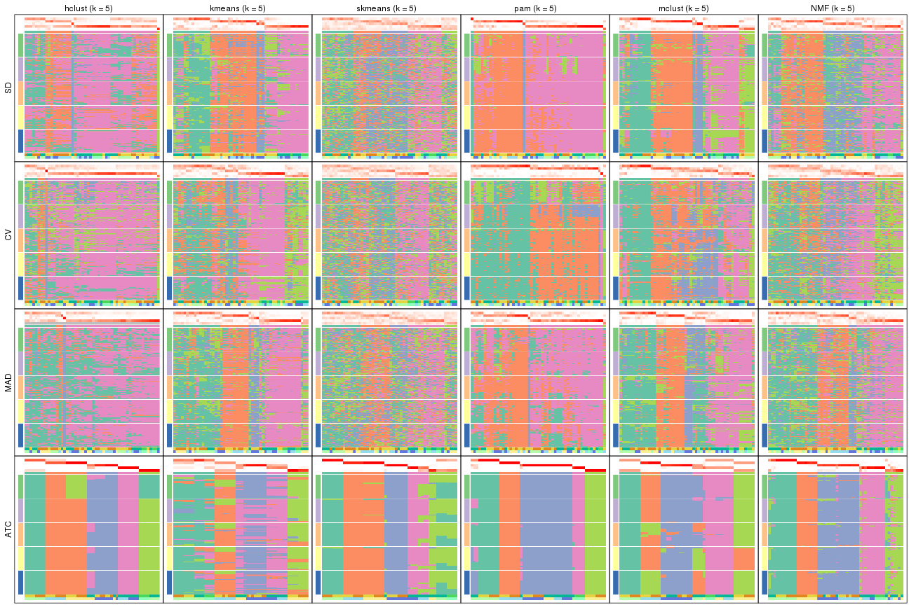
collect_plots(res_list, k = 6, fun = membership_heatmap, mc.cores = 4)
Signature heatmaps for all methods. (What is a signature heatmap?)
Note in following heatmaps, rows are scaled.
collect_plots(res_list, k = 2, fun = get_signatures, mc.cores = 4)

collect_plots(res_list, k = 3, fun = get_signatures, mc.cores = 4)

collect_plots(res_list, k = 4, fun = get_signatures, mc.cores = 4)
collect_plots(res_list, k = 5, fun = get_signatures, mc.cores = 4)
collect_plots(res_list, k = 6, fun = get_signatures, mc.cores = 4)
The statistics used for measuring the stability of consensus partitioning. (How are they defined?)
get_stats(res_list, k = 2)
#> k 1-PAC mean_silhouette concordance area_increased Rand Jaccard
#> SD:NMF 2 0.14116 0.682 0.820 0.484 0.491 0.491
#> CV:NMF 2 0.28571 0.742 0.858 0.495 0.490 0.490
#> MAD:NMF 2 0.19558 0.742 0.840 0.489 0.497 0.497
#> ATC:NMF 2 1.00000 1.000 1.000 0.435 0.566 0.566
#> SD:skmeans 2 0.00000 0.445 0.706 0.508 0.493 0.493
#> CV:skmeans 2 0.00255 0.499 0.730 0.507 0.493 0.493
#> MAD:skmeans 2 0.00000 0.440 0.697 0.508 0.493 0.493
#> ATC:skmeans 2 0.85020 0.953 0.977 0.483 0.509 0.509
#> SD:mclust 2 0.16327 0.386 0.698 0.351 0.683 0.683
#> CV:mclust 2 0.15136 0.701 0.839 0.272 0.823 0.823
#> MAD:mclust 2 0.26956 0.817 0.864 0.296 0.708 0.708
#> ATC:mclust 2 0.43891 0.811 0.862 0.447 0.566 0.566
#> SD:kmeans 2 0.23810 0.665 0.824 0.495 0.491 0.491
#> CV:kmeans 2 0.35544 0.739 0.869 0.497 0.493 0.493
#> MAD:kmeans 2 0.33503 0.794 0.874 0.502 0.493 0.493
#> ATC:kmeans 2 0.51735 0.950 0.951 0.435 0.566 0.566
#> SD:pam 2 0.27721 0.687 0.852 0.480 0.517 0.517
#> CV:pam 2 0.04592 0.643 0.781 0.495 0.491 0.491
#> MAD:pam 2 0.08844 0.570 0.781 0.462 0.527 0.527
#> ATC:pam 2 0.96259 0.944 0.976 0.317 0.683 0.683
#> SD:hclust 2 0.21514 0.822 0.873 0.204 0.962 0.962
#> CV:hclust 2 0.54252 0.895 0.922 0.146 0.962 0.962
#> MAD:hclust 2 0.05102 0.765 0.831 0.268 0.925 0.925
#> ATC:hclust 2 1.00000 1.000 1.000 0.435 0.566 0.566
get_stats(res_list, k = 3)
#> k 1-PAC mean_silhouette concordance area_increased Rand Jaccard
#> SD:NMF 3 0.30187 0.595 0.771 0.3641 0.710 0.475
#> CV:NMF 3 0.21173 0.431 0.641 0.3373 0.839 0.682
#> MAD:NMF 3 0.19728 0.549 0.717 0.3315 0.830 0.665
#> ATC:NMF 3 0.94813 0.945 0.975 0.5515 0.759 0.573
#> SD:skmeans 3 0.01446 0.332 0.594 0.3307 0.711 0.477
#> CV:skmeans 3 0.02466 0.226 0.548 0.3310 0.747 0.537
#> MAD:skmeans 3 0.00765 0.235 0.553 0.3313 0.808 0.626
#> ATC:skmeans 3 0.78316 0.952 0.949 0.3749 0.702 0.473
#> SD:mclust 3 0.20918 0.500 0.735 0.6976 0.548 0.379
#> CV:mclust 3 0.04422 0.491 0.638 0.9345 0.823 0.789
#> MAD:mclust 3 0.09269 0.587 0.723 0.8059 0.725 0.620
#> ATC:mclust 3 0.92760 0.970 0.977 0.3390 0.590 0.402
#> SD:kmeans 3 0.45833 0.689 0.820 0.3128 0.756 0.542
#> CV:kmeans 3 0.27381 0.424 0.706 0.2842 0.848 0.706
#> MAD:kmeans 3 0.25595 0.411 0.693 0.2838 0.855 0.713
#> ATC:kmeans 3 0.72247 0.952 0.918 0.4867 0.759 0.573
#> SD:pam 3 0.24660 0.627 0.830 0.0812 0.939 0.885
#> CV:pam 3 0.07993 0.612 0.744 0.1315 0.982 0.963
#> MAD:pam 3 0.09694 0.282 0.720 0.1828 0.867 0.770
#> ATC:pam 3 0.82367 0.899 0.960 0.9229 0.695 0.553
#> SD:hclust 3 0.04932 0.717 0.795 0.6001 0.962 0.961
#> CV:hclust 3 0.03316 0.603 0.780 1.5105 0.827 0.820
#> MAD:hclust 3 0.05017 0.604 0.737 0.5368 0.891 0.882
#> ATC:hclust 3 0.77451 0.823 0.923 0.4984 0.783 0.616
get_stats(res_list, k = 4)
#> k 1-PAC mean_silhouette concordance area_increased Rand Jaccard
#> SD:NMF 4 0.4031 0.443 0.683 0.1162 0.928 0.791
#> CV:NMF 4 0.2628 0.343 0.559 0.1235 0.827 0.564
#> MAD:NMF 4 0.3010 0.407 0.636 0.1344 0.905 0.742
#> ATC:NMF 4 0.9396 0.912 0.952 0.1242 0.810 0.494
#> SD:skmeans 4 0.0893 0.199 0.502 0.1226 0.879 0.665
#> CV:skmeans 4 0.0689 0.136 0.448 0.1244 0.732 0.370
#> MAD:skmeans 4 0.0570 0.185 0.467 0.1238 0.837 0.580
#> ATC:skmeans 4 1.0000 0.978 0.988 0.1280 0.928 0.777
#> SD:mclust 4 0.5850 0.666 0.830 0.1790 0.874 0.661
#> CV:mclust 4 0.1964 0.304 0.599 0.2926 0.520 0.354
#> MAD:mclust 4 0.4592 0.653 0.803 0.3147 0.661 0.378
#> ATC:mclust 4 0.9830 0.953 0.969 0.2392 0.855 0.635
#> SD:kmeans 4 0.5111 0.551 0.756 0.1125 0.927 0.795
#> CV:kmeans 4 0.2959 0.358 0.619 0.1203 0.871 0.687
#> MAD:kmeans 4 0.3333 0.464 0.695 0.1295 0.782 0.497
#> ATC:kmeans 4 0.7636 0.808 0.799 0.1176 1.000 1.000
#> SD:pam 4 0.2415 0.640 0.832 0.0458 0.985 0.969
#> CV:pam 4 0.0935 0.594 0.720 0.0489 1.000 1.000
#> MAD:pam 4 0.1131 0.306 0.687 0.0910 0.939 0.877
#> ATC:pam 4 0.7313 0.700 0.858 0.1178 0.925 0.806
#> SD:hclust 4 0.0910 0.361 0.683 0.5290 0.722 0.699
#> CV:hclust 4 0.0612 0.458 0.695 0.3141 0.873 0.839
#> MAD:hclust 4 0.0638 0.347 0.627 0.3104 0.771 0.726
#> ATC:hclust 4 0.8912 0.864 0.917 0.1405 0.903 0.723
get_stats(res_list, k = 5)
#> k 1-PAC mean_silhouette concordance area_increased Rand Jaccard
#> SD:NMF 5 0.4226 0.296 0.606 0.0647 0.927 0.767
#> CV:NMF 5 0.3138 0.209 0.511 0.0673 0.857 0.521
#> MAD:NMF 5 0.3810 0.370 0.578 0.0684 0.964 0.884
#> ATC:NMF 5 0.8537 0.826 0.917 0.0474 0.839 0.465
#> SD:skmeans 5 0.1930 0.152 0.436 0.0668 0.851 0.521
#> CV:skmeans 5 0.1480 0.125 0.400 0.0669 0.793 0.350
#> MAD:skmeans 5 0.1403 0.163 0.414 0.0666 0.874 0.586
#> ATC:skmeans 5 0.9090 0.883 0.899 0.0546 0.913 0.679
#> SD:mclust 5 0.5995 0.560 0.761 0.0894 0.895 0.665
#> CV:mclust 5 0.3776 0.336 0.635 0.1131 0.784 0.433
#> MAD:mclust 5 0.4847 0.401 0.685 0.0829 0.932 0.776
#> ATC:mclust 5 0.8876 0.800 0.826 0.0680 0.879 0.581
#> SD:kmeans 5 0.5408 0.486 0.696 0.0609 0.915 0.751
#> CV:kmeans 5 0.3878 0.314 0.592 0.0686 0.899 0.688
#> MAD:kmeans 5 0.4660 0.449 0.659 0.0681 0.950 0.828
#> ATC:kmeans 5 0.7840 0.755 0.733 0.0745 0.879 0.628
#> SD:pam 5 0.2338 0.608 0.832 0.0384 0.986 0.970
#> CV:pam 5 0.0850 0.498 0.712 0.0324 0.963 0.922
#> MAD:pam 5 0.1369 0.329 0.691 0.0404 0.908 0.801
#> ATC:pam 5 0.9796 0.931 0.969 0.1183 0.893 0.678
#> SD:hclust 5 0.1310 0.270 0.614 0.2035 0.770 0.647
#> CV:hclust 5 0.0859 0.443 0.651 0.1717 0.992 0.988
#> MAD:hclust 5 0.0969 0.269 0.569 0.1647 0.854 0.774
#> ATC:hclust 5 0.8912 0.932 0.917 0.0718 0.952 0.808
get_stats(res_list, k = 6)
#> k 1-PAC mean_silhouette concordance area_increased Rand Jaccard
#> SD:NMF 6 0.481 0.2762 0.555 0.0431 0.953 0.821
#> CV:NMF 6 0.401 0.1357 0.423 0.0426 0.817 0.355
#> MAD:NMF 6 0.420 0.2635 0.504 0.0427 0.870 0.586
#> ATC:NMF 6 0.902 0.8233 0.909 0.0394 0.887 0.536
#> SD:skmeans 6 0.361 0.1466 0.431 0.0415 0.873 0.485
#> CV:skmeans 6 0.251 0.0839 0.358 0.0412 0.817 0.316
#> MAD:skmeans 6 0.286 0.1054 0.363 0.0417 0.890 0.545
#> ATC:skmeans 6 0.842 0.6500 0.707 0.0440 0.926 0.707
#> SD:mclust 6 0.613 0.4027 0.678 0.0602 0.882 0.541
#> CV:mclust 6 0.490 0.3586 0.608 0.0584 0.909 0.629
#> MAD:mclust 6 0.508 0.3706 0.625 0.0635 0.897 0.606
#> ATC:mclust 6 0.851 0.8728 0.865 0.0407 0.946 0.748
#> SD:kmeans 6 0.543 0.2978 0.633 0.0482 0.908 0.707
#> CV:kmeans 6 0.435 0.3384 0.579 0.0417 0.876 0.551
#> MAD:kmeans 6 0.538 0.3583 0.615 0.0437 0.915 0.694
#> ATC:kmeans 6 0.756 0.7792 0.760 0.0472 0.925 0.663
#> SD:pam 6 0.340 0.5761 0.829 0.0306 0.951 0.898
#> CV:pam 6 0.107 0.4988 0.687 0.0298 1.000 1.000
#> MAD:pam 6 0.167 0.2995 0.682 0.0347 0.974 0.934
#> ATC:pam 6 0.904 0.8194 0.932 0.0991 0.925 0.682
#> SD:hclust 6 0.169 0.3114 0.579 0.1167 0.845 0.662
#> CV:hclust 6 0.128 0.2274 0.593 0.1045 0.906 0.859
#> MAD:hclust 6 0.158 0.1638 0.495 0.0992 0.773 0.587
#> ATC:hclust 6 0.939 0.9410 0.902 0.0467 0.952 0.763
Following heatmap plots the partition for each combination of methods and the lightness correspond to the silhouette scores for samples in each method. On top the consensus subgroup is inferred from all methods by taking the mean silhouette scores as weight.
collect_stats(res_list, k = 2)
collect_stats(res_list, k = 3)
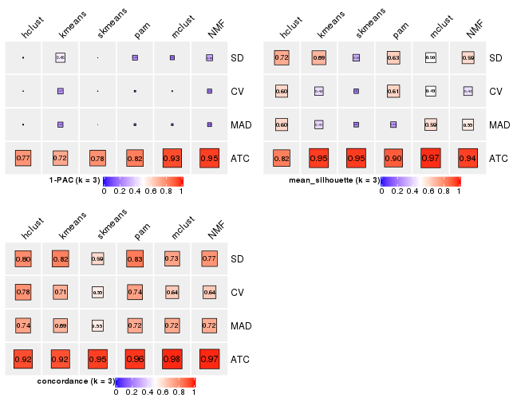
collect_stats(res_list, k = 4)
collect_stats(res_list, k = 5)
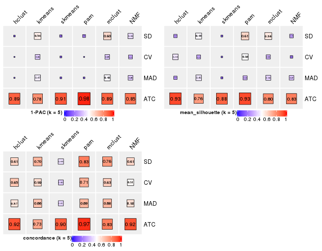
collect_stats(res_list, k = 6)
Collect partitions from all methods:
collect_classes(res_list, k = 2)

collect_classes(res_list, k = 3)
collect_classes(res_list, k = 4)
collect_classes(res_list, k = 5)
collect_classes(res_list, k = 6)
Overlap of top rows from different top-row methods:
top_rows_overlap(res_list, top_n = 1000, method = "euler")
top_rows_overlap(res_list, top_n = 2000, method = "euler")
top_rows_overlap(res_list, top_n = 3000, method = "euler")
top_rows_overlap(res_list, top_n = 4000, method = "euler")
top_rows_overlap(res_list, top_n = 5000, method = "euler")
Also visualize the correspondance of rankings between different top-row methods:
top_rows_overlap(res_list, top_n = 1000, method = "correspondance")
top_rows_overlap(res_list, top_n = 2000, method = "correspondance")
top_rows_overlap(res_list, top_n = 3000, method = "correspondance")
top_rows_overlap(res_list, top_n = 4000, method = "correspondance")
top_rows_overlap(res_list, top_n = 5000, method = "correspondance")
Heatmaps of the top rows:
top_rows_heatmap(res_list, top_n = 1000)
top_rows_heatmap(res_list, top_n = 2000)
top_rows_heatmap(res_list, top_n = 3000)
top_rows_heatmap(res_list, top_n = 4000)

top_rows_heatmap(res_list, top_n = 5000)
Test correlation between subgroups and known annotations. If the known annotation is numeric, one-way ANOVA test is applied, and if the known annotation is discrete, chi-squared contingency table test is applied.
test_to_known_factors(res_list, k = 2)
#> n agent(p) time(p) k
#> SD:NMF 47 0.002261 2.30e-01 2
#> CV:NMF 45 0.002595 4.04e-02 2
#> MAD:NMF 46 0.006032 1.51e-01 2
#> ATC:NMF 52 0.002359 2.02e-05 2
#> SD:skmeans 27 0.000588 3.89e-03 2
#> CV:skmeans 35 0.003428 9.70e-02 2
#> MAD:skmeans 28 0.010354 4.72e-02 2
#> ATC:skmeans 52 0.212908 5.90e-05 2
#> SD:mclust 20 0.000170 1.37e-02 2
#> CV:mclust 46 0.006478 2.55e-02 2
#> MAD:mclust 50 0.000060 2.56e-04 2
#> ATC:mclust 52 0.020815 1.38e-10 2
#> SD:kmeans 46 0.002468 2.32e-01 2
#> CV:kmeans 46 0.007701 1.89e-01 2
#> MAD:kmeans 49 0.018352 1.06e-01 2
#> ATC:kmeans 52 0.002359 2.02e-05 2
#> SD:pam 42 0.009357 1.72e-02 2
#> CV:pam 44 0.906912 4.22e-01 2
#> MAD:pam 37 0.014895 1.71e-01 2
#> ATC:pam 51 0.059633 2.63e-05 2
#> SD:hclust 50 NA NA 2
#> CV:hclust 51 NA NA 2
#> MAD:hclust 49 0.695674 6.69e-01 2
#> ATC:hclust 52 0.002359 2.02e-05 2
test_to_known_factors(res_list, k = 3)
#> n agent(p) time(p) k
#> SD:NMF 38 1.63e-03 7.70e-04 3
#> CV:NMF 24 1.34e-02 5.76e-03 3
#> MAD:NMF 35 1.25e-02 1.24e-03 3
#> ATC:NMF 52 3.40e-03 9.17e-10 3
#> SD:skmeans 7 NA NA 3
#> CV:skmeans 5 NA NA 3
#> MAD:skmeans 0 NA NA 3
#> ATC:skmeans 52 2.94e-04 1.36e-12 3
#> SD:mclust 34 1.51e-05 1.81e-05 3
#> CV:mclust 31 6.13e-03 3.10e-02 3
#> MAD:mclust 40 1.56e-03 1.43e-04 3
#> ATC:mclust 52 1.00e-04 5.58e-09 3
#> SD:kmeans 42 6.26e-04 1.21e-03 3
#> CV:kmeans 19 2.27e-02 4.12e-01 3
#> MAD:kmeans 28 3.97e-03 1.01e-02 3
#> ATC:kmeans 52 2.94e-04 1.36e-12 3
#> SD:pam 42 9.36e-03 1.72e-02 3
#> CV:pam 43 9.29e-01 4.67e-01 3
#> MAD:pam 18 2.93e-02 1.26e-01 3
#> ATC:pam 50 2.31e-02 1.10e-12 3
#> SD:hclust 46 NA NA 3
#> CV:hclust 43 3.79e-01 3.71e-01 3
#> MAD:hclust 44 2.13e-01 6.65e-01 3
#> ATC:hclust 44 2.30e-02 3.27e-12 3
test_to_known_factors(res_list, k = 4)
#> n agent(p) time(p) k
#> SD:NMF 27 3.84e-03 3.05e-04 4
#> CV:NMF 12 4.98e-02 6.58e-02 4
#> MAD:NMF 21 3.88e-02 1.75e-02 4
#> ATC:NMF 50 6.17e-05 2.61e-14 4
#> SD:skmeans 0 NA NA 4
#> CV:skmeans 3 NA NA 4
#> MAD:skmeans 0 NA NA 4
#> ATC:skmeans 52 4.39e-05 2.79e-12 4
#> SD:mclust 43 5.77e-04 3.06e-05 4
#> CV:mclust 11 1.55e-01 3.07e-01 4
#> MAD:mclust 43 8.59e-05 1.22e-03 4
#> ATC:mclust 51 5.18e-06 5.99e-14 4
#> SD:kmeans 36 4.05e-03 5.72e-04 4
#> CV:kmeans 17 3.55e-02 3.56e-01 4
#> MAD:kmeans 31 2.26e-04 3.84e-03 4
#> ATC:kmeans 52 2.94e-04 1.36e-12 4
#> SD:pam 42 9.36e-03 1.72e-02 4
#> CV:pam 40 9.01e-01 5.67e-01 4
#> MAD:pam 19 8.65e-03 1.14e-01 4
#> ATC:pam 36 6.12e-03 4.22e-10 4
#> SD:hclust 21 NA NA 4
#> CV:hclust 30 NA NA 4
#> MAD:hclust 22 NA NA 4
#> ATC:hclust 52 2.96e-06 1.23e-10 4
test_to_known_factors(res_list, k = 5)
#> n agent(p) time(p) k
#> SD:NMF 11 1.17e-02 2.31e-01 5
#> CV:NMF 0 NA NA 5
#> MAD:NMF 15 1.86e-02 1.18e-01 5
#> ATC:NMF 47 1.81e-04 2.45e-15 5
#> SD:skmeans 0 NA NA 5
#> CV:skmeans 0 NA NA 5
#> MAD:skmeans 0 NA NA 5
#> ATC:skmeans 49 1.33e-08 2.89e-14 5
#> SD:mclust 37 3.43e-05 1.18e-05 5
#> CV:mclust 12 1.88e-01 3.41e-01 5
#> MAD:mclust 24 8.41e-04 6.43e-04 5
#> ATC:mclust 47 1.59e-04 1.24e-21 5
#> SD:kmeans 33 1.61e-03 1.03e-04 5
#> CV:kmeans 13 2.96e-01 4.61e-01 5
#> MAD:kmeans 26 1.18e-03 3.18e-02 5
#> ATC:kmeans 49 1.01e-04 2.07e-18 5
#> SD:pam 39 2.29e-02 6.66e-03 5
#> CV:pam 35 8.82e-01 7.51e-01 5
#> MAD:pam 19 1.86e-02 8.75e-02 5
#> ATC:pam 49 2.52e-08 4.15e-21 5
#> SD:hclust 14 1.52e-01 2.55e-02 5
#> CV:hclust 30 NA NA 5
#> MAD:hclust 12 NA NA 5
#> ATC:hclust 52 4.23e-08 7.45e-14 5
test_to_known_factors(res_list, k = 6)
#> n agent(p) time(p) k
#> SD:NMF 5 8.21e-02 5.76e-01 6
#> CV:NMF 0 NA NA 6
#> MAD:NMF 4 1.35e-01 5.13e-01 6
#> ATC:NMF 47 5.63e-08 2.34e-14 6
#> SD:skmeans 0 NA NA 6
#> CV:skmeans 0 NA NA 6
#> MAD:skmeans 0 NA NA 6
#> ATC:skmeans 40 3.37e-05 2.98e-12 6
#> SD:mclust 27 1.02e-03 8.44e-05 6
#> CV:mclust 14 1.20e-01 2.67e-01 6
#> MAD:mclust 11 7.12e-01 3.84e-02 6
#> ATC:mclust 50 2.65e-05 4.74e-20 6
#> SD:kmeans 19 1.74e-03 1.42e-05 6
#> CV:kmeans 13 6.29e-01 4.61e-01 6
#> MAD:kmeans 18 5.59e-03 4.95e-02 6
#> ATC:kmeans 45 1.13e-11 2.58e-23 6
#> SD:pam 37 1.23e-02 3.84e-03 6
#> CV:pam 36 8.81e-01 6.60e-01 6
#> MAD:pam 17 4.58e-02 1.71e-01 6
#> ATC:pam 45 2.61e-09 4.60e-21 6
#> SD:hclust 14 2.96e-02 1.05e-01 6
#> CV:hclust 0 NA NA 6
#> MAD:hclust 0 NA NA 6
#> ATC:hclust 52 4.56e-07 1.12e-18 6
The object with results only for a single top-value method and a single partition method can be extracted as:
res = res_list["SD", "hclust"]
# you can also extract it by
# res = res_list["SD:hclust"]
A summary of res and all the functions that can be applied to it:
res
#> A 'ConsensusPartition' object with k = 2, 3, 4, 5, 6.
#> On a matrix with 51941 rows and 52 columns.
#> Top rows (1000, 2000, 3000, 4000, 5000) are extracted by 'SD' method.
#> Subgroups are detected by 'hclust' method.
#> Performed in total 1250 partitions by row resampling.
#> Best k for subgroups seems to be 4.
#>
#> Following methods can be applied to this 'ConsensusPartition' object:
#> [1] "cola_report" "collect_classes" "collect_plots"
#> [4] "collect_stats" "colnames" "compare_signatures"
#> [7] "consensus_heatmap" "dimension_reduction" "functional_enrichment"
#> [10] "get_anno_col" "get_anno" "get_classes"
#> [13] "get_consensus" "get_matrix" "get_membership"
#> [16] "get_param" "get_signatures" "get_stats"
#> [19] "is_best_k" "is_stable_k" "membership_heatmap"
#> [22] "ncol" "nrow" "plot_ecdf"
#> [25] "rownames" "select_partition_number" "show"
#> [28] "suggest_best_k" "test_to_known_factors"
collect_plots() function collects all the plots made from res for all k (number of partitions)
into one single page to provide an easy and fast comparison between different k.
collect_plots(res)
The plots are:
k and the heatmap of
predicted classes for each k.k.k.k.All the plots in panels can be made by individual functions and they are plotted later in this section.
select_partition_number() produces several plots showing different
statistics for choosing “optimized” k. There are following statistics:
k;k, the area increased is defined as \(A_k - A_{k-1}\).The detailed explanations of these statistics can be found in the cola vignette.
Generally speaking, lower PAC score, higher mean silhouette score or higher
concordance corresponds to better partition. Rand index and Jaccard index
measure how similar the current partition is compared to partition with k-1.
If they are too similar, we won't accept k is better than k-1.
select_partition_number(res)

The numeric values for all these statistics can be obtained by get_stats().
get_stats(res)
#> k 1-PAC mean_silhouette concordance area_increased Rand Jaccard
#> 2 2 0.2151 0.822 0.873 0.204 0.962 0.962
#> 3 3 0.0493 0.717 0.795 0.600 0.962 0.961
#> 4 4 0.0910 0.361 0.683 0.529 0.722 0.699
#> 5 5 0.1310 0.270 0.614 0.204 0.770 0.647
#> 6 6 0.1692 0.311 0.579 0.117 0.845 0.662
suggest_best_k() suggests the best \(k\) based on these statistics. The rules are as follows:
NA.suggest_best_k(res)
#> [1] 4
Following shows the table of the partitions (You need to click the show/hide
code output link to see it). The membership matrix (columns with name p*)
is inferred by
clue::cl_consensus()
function with the SE method. Basically the value in the membership matrix
represents the probability to belong to a certain group. The finall class
label for an item is determined with the group with highest probability it
belongs to.
In get_classes() function, the entropy is calculated from the membership
matrix and the silhouette score is calculated from the consensus matrix.
cbind(get_classes(res, k = 2), get_membership(res, k = 2))
#> class entropy silhouette p1 p2
#> GSM270543 1 0.2948 0.8876 0.948 0.052
#> GSM270544 1 0.4161 0.8816 0.916 0.084
#> GSM270545 1 0.1414 0.8831 0.980 0.020
#> GSM270546 1 0.3733 0.8868 0.928 0.072
#> GSM270547 1 0.1843 0.8843 0.972 0.028
#> GSM270548 1 0.4298 0.8805 0.912 0.088
#> GSM270549 1 0.3733 0.8894 0.928 0.072
#> GSM270550 1 0.1414 0.8831 0.980 0.020
#> GSM270551 1 0.9988 0.0648 0.520 0.480
#> GSM270552 1 0.2948 0.8870 0.948 0.052
#> GSM270553 1 0.2778 0.8891 0.952 0.048
#> GSM270554 1 0.2423 0.8857 0.960 0.040
#> GSM270555 1 0.6438 0.8471 0.836 0.164
#> GSM270556 1 0.5946 0.8613 0.856 0.144
#> GSM270557 1 0.5178 0.8720 0.884 0.116
#> GSM270558 1 0.5178 0.8701 0.884 0.116
#> GSM270559 1 0.8016 0.8074 0.756 0.244
#> GSM270560 1 0.7056 0.8308 0.808 0.192
#> GSM270561 1 0.5946 0.8666 0.856 0.144
#> GSM270562 1 0.7056 0.8225 0.808 0.192
#> GSM270563 1 0.5946 0.8702 0.856 0.144
#> GSM270564 1 0.6712 0.8323 0.824 0.176
#> GSM270565 1 0.6438 0.8473 0.836 0.164
#> GSM270566 1 0.7219 0.8138 0.800 0.200
#> GSM270567 1 0.3733 0.8889 0.928 0.072
#> GSM270568 1 0.4939 0.8759 0.892 0.108
#> GSM270569 1 0.6343 0.8620 0.840 0.160
#> GSM270570 1 0.5629 0.8762 0.868 0.132
#> GSM270571 1 0.6048 0.8530 0.852 0.148
#> GSM270572 1 0.4298 0.8781 0.912 0.088
#> GSM270573 1 0.7602 0.7891 0.780 0.220
#> GSM270574 1 0.5294 0.8682 0.880 0.120
#> GSM270575 2 0.5737 0.0000 0.136 0.864
#> GSM270576 1 0.9580 0.5411 0.620 0.380
#> GSM270577 1 0.5842 0.8683 0.860 0.140
#> GSM270578 1 0.9044 0.6303 0.680 0.320
#> GSM270579 1 0.6438 0.8600 0.836 0.164
#> GSM270580 1 0.8955 0.7294 0.688 0.312
#> GSM270581 1 0.6973 0.8210 0.812 0.188
#> GSM270582 1 0.6623 0.8428 0.828 0.172
#> GSM270583 1 0.4939 0.8884 0.892 0.108
#> GSM270584 1 0.1184 0.8830 0.984 0.016
#> GSM270585 1 0.5519 0.8711 0.872 0.128
#> GSM270586 1 0.4431 0.8864 0.908 0.092
#> GSM270587 1 0.2948 0.8824 0.948 0.052
#> GSM270588 1 0.2948 0.8864 0.948 0.052
#> GSM270589 1 0.2948 0.8824 0.948 0.052
#> GSM270590 1 0.2423 0.8848 0.960 0.040
#> GSM270591 1 0.1184 0.8821 0.984 0.016
#> GSM270592 1 0.0938 0.8817 0.988 0.012
#> GSM270593 1 0.2043 0.8873 0.968 0.032
#> GSM270594 1 0.2603 0.8870 0.956 0.044
cbind(get_classes(res, k = 3), get_membership(res, k = 3))
#> class entropy silhouette p1 p2 p3
#> GSM270543 1 0.3461 0.815 0.900 0.024 0.076
#> GSM270544 1 0.4586 0.807 0.856 0.048 0.096
#> GSM270545 1 0.1015 0.807 0.980 0.012 0.008
#> GSM270546 1 0.3375 0.815 0.908 0.044 0.048
#> GSM270547 1 0.2116 0.810 0.948 0.012 0.040
#> GSM270548 1 0.4527 0.804 0.860 0.052 0.088
#> GSM270549 1 0.4339 0.816 0.868 0.048 0.084
#> GSM270550 1 0.1015 0.807 0.980 0.012 0.008
#> GSM270551 3 0.7396 0.000 0.144 0.152 0.704
#> GSM270552 1 0.3845 0.805 0.872 0.012 0.116
#> GSM270553 1 0.4063 0.810 0.868 0.020 0.112
#> GSM270554 1 0.3610 0.804 0.888 0.016 0.096
#> GSM270555 1 0.6445 0.657 0.672 0.020 0.308
#> GSM270556 1 0.5864 0.705 0.704 0.008 0.288
#> GSM270557 1 0.5247 0.747 0.768 0.008 0.224
#> GSM270558 1 0.5378 0.735 0.756 0.008 0.236
#> GSM270559 1 0.8221 0.653 0.624 0.128 0.248
#> GSM270560 1 0.7525 0.732 0.684 0.108 0.208
#> GSM270561 1 0.6313 0.778 0.768 0.084 0.148
#> GSM270562 1 0.7458 0.713 0.692 0.112 0.196
#> GSM270563 1 0.6208 0.762 0.756 0.052 0.192
#> GSM270564 1 0.6807 0.736 0.736 0.092 0.172
#> GSM270565 1 0.6728 0.743 0.736 0.080 0.184
#> GSM270566 1 0.7458 0.712 0.692 0.112 0.196
#> GSM270567 1 0.3910 0.818 0.876 0.020 0.104
#> GSM270568 1 0.5109 0.775 0.780 0.008 0.212
#> GSM270569 1 0.6986 0.712 0.688 0.056 0.256
#> GSM270570 1 0.6183 0.751 0.732 0.032 0.236
#> GSM270571 1 0.5967 0.744 0.752 0.032 0.216
#> GSM270572 1 0.4555 0.767 0.800 0.000 0.200
#> GSM270573 1 0.7192 0.453 0.560 0.028 0.412
#> GSM270574 1 0.5360 0.753 0.768 0.012 0.220
#> GSM270575 2 0.1031 0.000 0.024 0.976 0.000
#> GSM270576 1 0.9412 0.297 0.476 0.336 0.188
#> GSM270577 1 0.6808 0.771 0.732 0.084 0.184
#> GSM270578 1 0.9033 0.467 0.548 0.272 0.180
#> GSM270579 1 0.6332 0.778 0.768 0.088 0.144
#> GSM270580 1 0.9004 0.463 0.488 0.136 0.376
#> GSM270581 1 0.6955 0.724 0.728 0.100 0.172
#> GSM270582 1 0.6860 0.743 0.732 0.092 0.176
#> GSM270583 1 0.5167 0.813 0.804 0.024 0.172
#> GSM270584 1 0.0848 0.806 0.984 0.008 0.008
#> GSM270585 1 0.5634 0.787 0.800 0.056 0.144
#> GSM270586 1 0.4779 0.802 0.840 0.036 0.124
#> GSM270587 1 0.2945 0.804 0.908 0.004 0.088
#> GSM270588 1 0.3500 0.812 0.880 0.004 0.116
#> GSM270589 1 0.2945 0.804 0.908 0.004 0.088
#> GSM270590 1 0.2939 0.815 0.916 0.012 0.072
#> GSM270591 1 0.1015 0.806 0.980 0.008 0.012
#> GSM270592 1 0.0661 0.806 0.988 0.004 0.008
#> GSM270593 1 0.1905 0.813 0.956 0.016 0.028
#> GSM270594 1 0.2318 0.812 0.944 0.028 0.028
cbind(get_classes(res, k = 4), get_membership(res, k = 4))
#> class entropy silhouette p1 p2 p3 p4
#> GSM270543 4 0.453 0.5435 0.044 0.124 0.016 0.816
#> GSM270544 4 0.499 0.5262 0.048 0.136 0.024 0.792
#> GSM270545 4 0.255 0.5593 0.024 0.056 0.004 0.916
#> GSM270546 4 0.435 0.5465 0.036 0.108 0.024 0.832
#> GSM270547 4 0.334 0.5586 0.032 0.080 0.008 0.880
#> GSM270548 4 0.462 0.5509 0.048 0.096 0.032 0.824
#> GSM270549 4 0.442 0.5706 0.040 0.100 0.028 0.832
#> GSM270550 4 0.255 0.5593 0.024 0.056 0.004 0.916
#> GSM270551 1 0.340 0.0000 0.884 0.024 0.068 0.024
#> GSM270552 4 0.485 0.5726 0.104 0.100 0.004 0.792
#> GSM270553 4 0.516 0.5748 0.092 0.136 0.004 0.768
#> GSM270554 4 0.475 0.5793 0.096 0.084 0.012 0.808
#> GSM270555 4 0.728 0.3896 0.268 0.176 0.004 0.552
#> GSM270556 4 0.759 0.4328 0.224 0.180 0.024 0.572
#> GSM270557 4 0.683 0.4823 0.160 0.176 0.016 0.648
#> GSM270558 4 0.683 0.4789 0.164 0.172 0.016 0.648
#> GSM270559 4 0.868 0.2512 0.144 0.288 0.088 0.480
#> GSM270560 4 0.678 -0.2505 0.040 0.464 0.028 0.468
#> GSM270561 4 0.649 -0.2150 0.020 0.416 0.036 0.528
#> GSM270562 2 0.616 0.4859 0.024 0.536 0.016 0.424
#> GSM270563 2 0.592 0.4188 0.012 0.492 0.016 0.480
#> GSM270564 2 0.500 0.4347 0.000 0.508 0.000 0.492
#> GSM270565 2 0.617 0.4961 0.028 0.512 0.012 0.448
#> GSM270566 2 0.585 0.4967 0.008 0.544 0.020 0.428
#> GSM270567 4 0.515 0.4163 0.024 0.236 0.012 0.728
#> GSM270568 4 0.660 0.4370 0.100 0.248 0.012 0.640
#> GSM270569 4 0.766 0.0623 0.092 0.408 0.036 0.464
#> GSM270570 4 0.704 0.2180 0.072 0.356 0.024 0.548
#> GSM270571 4 0.691 0.4811 0.156 0.128 0.044 0.672
#> GSM270572 4 0.639 0.5221 0.152 0.152 0.012 0.684
#> GSM270573 4 0.799 0.2094 0.368 0.184 0.016 0.432
#> GSM270574 4 0.701 0.4886 0.180 0.188 0.012 0.620
#> GSM270575 3 0.149 0.0000 0.004 0.036 0.956 0.004
#> GSM270576 2 0.774 0.1555 0.036 0.568 0.240 0.156
#> GSM270577 4 0.697 -0.1089 0.048 0.416 0.032 0.504
#> GSM270578 2 0.694 0.4694 0.004 0.592 0.144 0.260
#> GSM270579 4 0.578 -0.2881 0.016 0.444 0.008 0.532
#> GSM270580 2 0.447 0.3470 0.052 0.824 0.016 0.108
#> GSM270581 2 0.546 0.4532 0.004 0.504 0.008 0.484
#> GSM270582 4 0.620 -0.4149 0.024 0.460 0.016 0.500
#> GSM270583 4 0.614 0.3017 0.060 0.316 0.004 0.620
#> GSM270584 4 0.252 0.5604 0.024 0.064 0.000 0.912
#> GSM270585 4 0.567 -0.1307 0.012 0.388 0.012 0.588
#> GSM270586 4 0.593 0.0470 0.020 0.344 0.020 0.616
#> GSM270587 4 0.423 0.5786 0.072 0.084 0.008 0.836
#> GSM270588 4 0.515 0.5616 0.076 0.144 0.008 0.772
#> GSM270589 4 0.423 0.5786 0.072 0.084 0.008 0.836
#> GSM270590 4 0.452 0.5302 0.032 0.164 0.008 0.796
#> GSM270591 4 0.233 0.5602 0.016 0.056 0.004 0.924
#> GSM270592 4 0.238 0.5654 0.024 0.048 0.004 0.924
#> GSM270593 4 0.317 0.5626 0.020 0.080 0.012 0.888
#> GSM270594 4 0.347 0.5546 0.020 0.084 0.020 0.876
cbind(get_classes(res, k = 5), get_membership(res, k = 5))
#> class entropy silhouette p1 p2 p3 p4 p5
#> GSM270543 4 0.489 0.4979 0.116 0.092 0.024 0.764 0.004
#> GSM270544 4 0.581 0.4252 0.160 0.096 0.024 0.700 0.020
#> GSM270545 4 0.152 0.5265 0.020 0.016 0.012 0.952 0.000
#> GSM270546 4 0.392 0.5206 0.044 0.072 0.036 0.840 0.008
#> GSM270547 4 0.310 0.5233 0.064 0.032 0.020 0.880 0.004
#> GSM270548 4 0.548 0.4450 0.144 0.076 0.024 0.732 0.024
#> GSM270549 4 0.540 0.4407 0.164 0.076 0.012 0.724 0.024
#> GSM270550 4 0.152 0.5265 0.020 0.016 0.012 0.952 0.000
#> GSM270551 3 0.309 0.0000 0.068 0.008 0.880 0.012 0.032
#> GSM270552 4 0.588 0.1930 0.300 0.068 0.020 0.608 0.004
#> GSM270553 4 0.565 0.2085 0.300 0.056 0.012 0.624 0.008
#> GSM270554 4 0.544 0.2099 0.296 0.044 0.012 0.640 0.008
#> GSM270555 1 0.655 0.5977 0.576 0.036 0.092 0.288 0.008
#> GSM270556 1 0.618 0.5867 0.600 0.040 0.048 0.300 0.012
#> GSM270557 1 0.612 0.5430 0.508 0.052 0.028 0.408 0.004
#> GSM270558 1 0.585 0.5531 0.540 0.036 0.028 0.392 0.004
#> GSM270559 1 0.830 0.5393 0.460 0.132 0.044 0.272 0.092
#> GSM270560 2 0.757 0.2429 0.240 0.392 0.012 0.332 0.024
#> GSM270561 4 0.706 -0.2819 0.132 0.368 0.016 0.464 0.020
#> GSM270562 2 0.647 0.4434 0.112 0.484 0.008 0.388 0.008
#> GSM270563 2 0.678 0.3707 0.096 0.440 0.024 0.428 0.012
#> GSM270564 2 0.578 0.3958 0.088 0.468 0.000 0.444 0.000
#> GSM270565 2 0.648 0.4386 0.092 0.484 0.012 0.400 0.012
#> GSM270566 2 0.620 0.4418 0.096 0.504 0.004 0.388 0.008
#> GSM270567 4 0.633 0.3522 0.164 0.184 0.020 0.624 0.008
#> GSM270568 1 0.713 0.4124 0.464 0.120 0.060 0.356 0.000
#> GSM270569 4 0.850 -0.1836 0.264 0.296 0.060 0.344 0.036
#> GSM270570 4 0.789 -0.0962 0.272 0.264 0.064 0.396 0.004
#> GSM270571 4 0.702 -0.0650 0.392 0.072 0.040 0.472 0.024
#> GSM270572 4 0.602 -0.3158 0.448 0.044 0.016 0.480 0.012
#> GSM270573 1 0.710 0.3039 0.572 0.072 0.180 0.172 0.004
#> GSM270574 1 0.651 0.3164 0.464 0.076 0.032 0.424 0.004
#> GSM270575 5 0.103 0.0000 0.000 0.024 0.004 0.004 0.968
#> GSM270576 2 0.770 -0.0891 0.092 0.544 0.028 0.124 0.212
#> GSM270577 4 0.741 -0.1169 0.196 0.336 0.016 0.432 0.020
#> GSM270578 2 0.716 0.3242 0.080 0.580 0.016 0.220 0.104
#> GSM270579 4 0.671 -0.2789 0.104 0.372 0.024 0.492 0.008
#> GSM270580 2 0.504 0.1572 0.132 0.764 0.032 0.056 0.016
#> GSM270581 2 0.594 0.3739 0.076 0.464 0.004 0.452 0.004
#> GSM270582 4 0.643 -0.4156 0.116 0.432 0.004 0.440 0.008
#> GSM270583 4 0.724 0.0892 0.268 0.264 0.020 0.444 0.004
#> GSM270584 4 0.150 0.5295 0.016 0.024 0.008 0.952 0.000
#> GSM270585 4 0.669 -0.1536 0.120 0.344 0.024 0.508 0.004
#> GSM270586 4 0.649 0.0472 0.120 0.268 0.036 0.576 0.000
#> GSM270587 4 0.462 0.3442 0.244 0.028 0.008 0.716 0.004
#> GSM270588 4 0.545 0.2498 0.284 0.056 0.012 0.644 0.004
#> GSM270589 4 0.462 0.3442 0.244 0.028 0.008 0.716 0.004
#> GSM270590 4 0.480 0.4231 0.196 0.088 0.000 0.716 0.000
#> GSM270591 4 0.137 0.5260 0.024 0.016 0.004 0.956 0.000
#> GSM270592 4 0.161 0.5227 0.040 0.012 0.004 0.944 0.000
#> GSM270593 4 0.304 0.5247 0.044 0.040 0.020 0.888 0.008
#> GSM270594 4 0.252 0.5321 0.036 0.036 0.020 0.908 0.000
cbind(get_classes(res, k = 6), get_membership(res, k = 6))
#> class entropy silhouette p1 p2 p3 p4 p5 p6
#> GSM270543 4 0.5176 0.5032 0.000 0.108 0.004 0.712 0.108 0.068
#> GSM270544 4 0.5751 0.3837 0.000 0.108 0.004 0.632 0.204 0.052
#> GSM270545 4 0.1231 0.5611 0.000 0.012 0.004 0.960 0.012 0.012
#> GSM270546 4 0.3797 0.5208 0.004 0.064 0.004 0.820 0.084 0.024
#> GSM270547 4 0.3250 0.5522 0.000 0.048 0.012 0.860 0.052 0.028
#> GSM270548 4 0.5741 0.4277 0.008 0.080 0.008 0.664 0.180 0.060
#> GSM270549 4 0.6228 0.4411 0.016 0.088 0.012 0.648 0.136 0.100
#> GSM270550 4 0.1231 0.5611 0.000 0.012 0.004 0.960 0.012 0.012
#> GSM270551 3 0.1261 0.0000 0.008 0.004 0.956 0.004 0.000 0.028
#> GSM270552 4 0.6572 0.1434 0.004 0.088 0.028 0.520 0.044 0.316
#> GSM270553 4 0.6366 0.1938 0.004 0.088 0.020 0.536 0.040 0.312
#> GSM270554 4 0.6415 0.1481 0.004 0.072 0.028 0.532 0.044 0.320
#> GSM270555 6 0.6265 0.4313 0.004 0.048 0.056 0.168 0.084 0.640
#> GSM270556 6 0.6214 0.4047 0.004 0.032 0.040 0.176 0.120 0.628
#> GSM270557 6 0.5851 0.4882 0.000 0.064 0.024 0.264 0.040 0.608
#> GSM270558 6 0.5331 0.4903 0.000 0.052 0.024 0.260 0.020 0.644
#> GSM270559 6 0.7524 0.3678 0.084 0.116 0.016 0.152 0.084 0.548
#> GSM270560 2 0.7386 0.0979 0.016 0.432 0.004 0.232 0.072 0.244
#> GSM270561 2 0.6451 0.3993 0.024 0.472 0.008 0.392 0.044 0.060
#> GSM270562 2 0.5345 0.5026 0.008 0.596 0.008 0.324 0.012 0.052
#> GSM270563 2 0.6338 0.4148 0.008 0.492 0.008 0.368 0.076 0.048
#> GSM270564 2 0.4696 0.5135 0.000 0.592 0.000 0.364 0.012 0.032
#> GSM270565 2 0.5811 0.4866 0.008 0.548 0.000 0.340 0.060 0.044
#> GSM270566 2 0.5226 0.4907 0.004 0.600 0.000 0.320 0.024 0.052
#> GSM270567 4 0.6578 0.2176 0.004 0.232 0.012 0.552 0.052 0.148
#> GSM270568 6 0.7395 -0.0325 0.000 0.148 0.012 0.228 0.160 0.452
#> GSM270569 5 0.8791 0.6710 0.016 0.232 0.060 0.220 0.292 0.180
#> GSM270570 5 0.8023 0.6859 0.000 0.208 0.028 0.296 0.316 0.152
#> GSM270571 4 0.7066 -0.0189 0.000 0.056 0.008 0.396 0.316 0.224
#> GSM270572 6 0.5993 0.2708 0.004 0.048 0.004 0.388 0.060 0.496
#> GSM270573 6 0.6914 0.2104 0.000 0.012 0.124 0.096 0.272 0.496
#> GSM270574 6 0.6692 0.3240 0.000 0.080 0.024 0.340 0.072 0.484
#> GSM270575 1 0.0146 0.0000 0.996 0.004 0.000 0.000 0.000 0.000
#> GSM270576 2 0.7710 -0.1733 0.200 0.428 0.016 0.120 0.228 0.008
#> GSM270577 4 0.7808 -0.2512 0.024 0.336 0.012 0.356 0.084 0.188
#> GSM270578 2 0.6761 0.1531 0.088 0.544 0.000 0.192 0.164 0.012
#> GSM270579 4 0.6352 -0.4141 0.008 0.416 0.004 0.440 0.088 0.044
#> GSM270580 2 0.5762 -0.0816 0.008 0.596 0.004 0.040 0.288 0.064
#> GSM270581 2 0.5038 0.4840 0.004 0.560 0.000 0.384 0.032 0.020
#> GSM270582 2 0.5479 0.4938 0.008 0.544 0.004 0.372 0.012 0.060
#> GSM270583 4 0.7149 -0.1749 0.004 0.320 0.004 0.324 0.048 0.300
#> GSM270584 4 0.1515 0.5624 0.000 0.028 0.000 0.944 0.008 0.020
#> GSM270585 2 0.6594 0.2837 0.004 0.420 0.008 0.416 0.072 0.080
#> GSM270586 4 0.6650 -0.2033 0.000 0.336 0.012 0.480 0.100 0.072
#> GSM270587 4 0.5122 0.3746 0.000 0.048 0.000 0.652 0.048 0.252
#> GSM270588 4 0.5889 0.2684 0.000 0.084 0.012 0.580 0.036 0.288
#> GSM270589 4 0.5143 0.3693 0.000 0.048 0.000 0.648 0.048 0.256
#> GSM270590 4 0.5157 0.4330 0.000 0.120 0.000 0.664 0.020 0.196
#> GSM270591 4 0.1312 0.5624 0.000 0.012 0.004 0.956 0.008 0.020
#> GSM270592 4 0.1484 0.5624 0.000 0.004 0.004 0.944 0.008 0.040
#> GSM270593 4 0.3367 0.5451 0.008 0.032 0.004 0.852 0.076 0.028
#> GSM270594 4 0.2832 0.5451 0.000 0.032 0.012 0.884 0.048 0.024
Heatmaps for the consensus matrix. It visualizes the probability of two samples to be in a same group.
consensus_heatmap(res, k = 2)
consensus_heatmap(res, k = 3)
consensus_heatmap(res, k = 4)
consensus_heatmap(res, k = 5)
consensus_heatmap(res, k = 6)
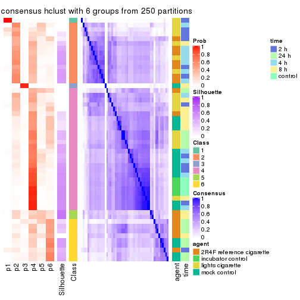
Heatmaps for the membership of samples in all partitions to see how consistent they are:
membership_heatmap(res, k = 2)
membership_heatmap(res, k = 3)

membership_heatmap(res, k = 4)
membership_heatmap(res, k = 5)
membership_heatmap(res, k = 6)
As soon as we have had the classes for columns, we can look for signatures which are significantly different between classes which can be candidate marks for certain classes. Following are the heatmaps for signatures.
Signature heatmaps where rows are scaled:
get_signatures(res, k = 2)

get_signatures(res, k = 3)

get_signatures(res, k = 4)

get_signatures(res, k = 5)
get_signatures(res, k = 6)
Signature heatmaps where rows are not scaled:
get_signatures(res, k = 2, scale_rows = FALSE)

get_signatures(res, k = 3, scale_rows = FALSE)

get_signatures(res, k = 4, scale_rows = FALSE)

get_signatures(res, k = 5, scale_rows = FALSE)
get_signatures(res, k = 6, scale_rows = FALSE)
Compare the overlap of signatures from different k:
compare_signatures(res)
get_signature() returns a data frame invisibly. TO get the list of signatures, the function
call should be assigned to a variable explicitly. In following code, if plot argument is set
to FALSE, no heatmap is plotted while only the differential analysis is performed.
# code only for demonstration
tb = get_signature(res, k = ..., plot = FALSE)
An example of the output of tb is:
#> which_row fdr mean_1 mean_2 scaled_mean_1 scaled_mean_2 km
#> 1 38 0.042760348 8.373488 9.131774 -0.5533452 0.5164555 1
#> 2 40 0.018707592 7.106213 8.469186 -0.6173731 0.5762149 1
#> 3 55 0.019134737 10.221463 11.207825 -0.6159697 0.5749050 1
#> 4 59 0.006059896 5.921854 7.869574 -0.6899429 0.6439467 1
#> 5 60 0.018055526 8.928898 10.211722 -0.6204761 0.5791110 1
#> 6 98 0.009384629 15.714769 14.887706 0.6635654 -0.6193277 2
...
The columns in tb are:
which_row: row indices corresponding to the input matrix.fdr: FDR for the differential test. mean_x: The mean value in group x.scaled_mean_x: The mean value in group x after rows are scaled.km: Row groups if k-means clustering is applied to rows.UMAP plot which shows how samples are separated.
dimension_reduction(res, k = 2, method = "UMAP")
dimension_reduction(res, k = 3, method = "UMAP")
dimension_reduction(res, k = 4, method = "UMAP")
dimension_reduction(res, k = 5, method = "UMAP")
dimension_reduction(res, k = 6, method = "UMAP")
Following heatmap shows how subgroups are split when increasing k:
collect_classes(res)
Test correlation between subgroups and known annotations. If the known annotation is numeric, one-way ANOVA test is applied, and if the known annotation is discrete, chi-squared contingency table test is applied.
test_to_known_factors(res)
#> n agent(p) time(p) k
#> SD:hclust 50 NA NA 2
#> SD:hclust 46 NA NA 3
#> SD:hclust 21 NA NA 4
#> SD:hclust 14 0.1518 0.0255 5
#> SD:hclust 14 0.0296 0.1051 6
If matrix rows can be associated to genes, consider to use GO_Enrichment(res,
...) to perform function enrichment for the signature genes.
The object with results only for a single top-value method and a single partition method can be extracted as:
res = res_list["SD", "kmeans"]
# you can also extract it by
# res = res_list["SD:kmeans"]
A summary of res and all the functions that can be applied to it:
res
#> A 'ConsensusPartition' object with k = 2, 3, 4, 5, 6.
#> On a matrix with 51941 rows and 52 columns.
#> Top rows (1000, 2000, 3000, 4000, 5000) are extracted by 'SD' method.
#> Subgroups are detected by 'kmeans' method.
#> Performed in total 1250 partitions by row resampling.
#> Best k for subgroups seems to be 2.
#>
#> Following methods can be applied to this 'ConsensusPartition' object:
#> [1] "cola_report" "collect_classes" "collect_plots"
#> [4] "collect_stats" "colnames" "compare_signatures"
#> [7] "consensus_heatmap" "dimension_reduction" "functional_enrichment"
#> [10] "get_anno_col" "get_anno" "get_classes"
#> [13] "get_consensus" "get_matrix" "get_membership"
#> [16] "get_param" "get_signatures" "get_stats"
#> [19] "is_best_k" "is_stable_k" "membership_heatmap"
#> [22] "ncol" "nrow" "plot_ecdf"
#> [25] "rownames" "select_partition_number" "show"
#> [28] "suggest_best_k" "test_to_known_factors"
collect_plots() function collects all the plots made from res for all k (number of partitions)
into one single page to provide an easy and fast comparison between different k.
collect_plots(res)
The plots are:
k and the heatmap of
predicted classes for each k.k.k.k.All the plots in panels can be made by individual functions and they are plotted later in this section.
select_partition_number() produces several plots showing different
statistics for choosing “optimized” k. There are following statistics:
k;k, the area increased is defined as \(A_k - A_{k-1}\).The detailed explanations of these statistics can be found in the cola vignette.
Generally speaking, lower PAC score, higher mean silhouette score or higher
concordance corresponds to better partition. Rand index and Jaccard index
measure how similar the current partition is compared to partition with k-1.
If they are too similar, we won't accept k is better than k-1.
select_partition_number(res)
The numeric values for all these statistics can be obtained by get_stats().
get_stats(res)
#> k 1-PAC mean_silhouette concordance area_increased Rand Jaccard
#> 2 2 0.238 0.665 0.824 0.4949 0.491 0.491
#> 3 3 0.458 0.689 0.820 0.3128 0.756 0.542
#> 4 4 0.511 0.551 0.756 0.1125 0.927 0.795
#> 5 5 0.541 0.486 0.696 0.0609 0.915 0.751
#> 6 6 0.543 0.298 0.633 0.0482 0.908 0.707
suggest_best_k() suggests the best \(k\) based on these statistics. The rules are as follows:
NA.suggest_best_k(res)
#> [1] 2
Following shows the table of the partitions (You need to click the show/hide
code output link to see it). The membership matrix (columns with name p*)
is inferred by
clue::cl_consensus()
function with the SE method. Basically the value in the membership matrix
represents the probability to belong to a certain group. The finall class
label for an item is determined with the group with highest probability it
belongs to.
In get_classes() function, the entropy is calculated from the membership
matrix and the silhouette score is calculated from the consensus matrix.
cbind(get_classes(res, k = 2), get_membership(res, k = 2))
#> class entropy silhouette p1 p2
#> GSM270543 1 0.2236 0.834 0.964 0.036
#> GSM270544 1 0.4022 0.818 0.920 0.080
#> GSM270545 1 0.0672 0.840 0.992 0.008
#> GSM270546 1 0.3114 0.823 0.944 0.056
#> GSM270547 1 0.0938 0.838 0.988 0.012
#> GSM270548 1 0.1633 0.835 0.976 0.024
#> GSM270549 1 0.1843 0.836 0.972 0.028
#> GSM270550 1 0.0672 0.840 0.992 0.008
#> GSM270551 2 0.9129 0.565 0.328 0.672
#> GSM270552 1 0.5519 0.744 0.872 0.128
#> GSM270553 1 0.7602 0.600 0.780 0.220
#> GSM270554 1 0.7883 0.574 0.764 0.236
#> GSM270555 2 0.9286 0.567 0.344 0.656
#> GSM270556 2 0.9170 0.572 0.332 0.668
#> GSM270557 2 0.9286 0.564 0.344 0.656
#> GSM270558 2 0.9358 0.558 0.352 0.648
#> GSM270559 2 0.6343 0.698 0.160 0.840
#> GSM270560 2 0.2948 0.725 0.052 0.948
#> GSM270561 2 0.8443 0.565 0.272 0.728
#> GSM270562 2 0.3879 0.723 0.076 0.924
#> GSM270563 2 0.6973 0.667 0.188 0.812
#> GSM270564 2 0.9881 0.193 0.436 0.564
#> GSM270565 2 0.4939 0.716 0.108 0.892
#> GSM270566 2 0.5737 0.707 0.136 0.864
#> GSM270567 1 0.8144 0.595 0.748 0.252
#> GSM270568 2 0.5294 0.731 0.120 0.880
#> GSM270569 2 0.4431 0.727 0.092 0.908
#> GSM270570 2 0.9087 0.511 0.324 0.676
#> GSM270571 1 0.5519 0.756 0.872 0.128
#> GSM270572 2 0.9491 0.530 0.368 0.632
#> GSM270573 2 0.9129 0.580 0.328 0.672
#> GSM270574 2 0.9248 0.567 0.340 0.660
#> GSM270575 2 0.2948 0.724 0.052 0.948
#> GSM270576 2 0.3114 0.727 0.056 0.944
#> GSM270577 2 0.4939 0.735 0.108 0.892
#> GSM270578 2 0.4431 0.724 0.092 0.908
#> GSM270579 2 0.9491 0.377 0.368 0.632
#> GSM270580 2 0.2236 0.722 0.036 0.964
#> GSM270581 1 0.9775 0.285 0.588 0.412
#> GSM270582 2 0.9954 0.114 0.460 0.540
#> GSM270583 2 0.4939 0.724 0.108 0.892
#> GSM270584 1 0.8144 0.584 0.748 0.252
#> GSM270585 1 0.9754 0.294 0.592 0.408
#> GSM270586 1 0.9087 0.465 0.676 0.324
#> GSM270587 1 0.1843 0.836 0.972 0.028
#> GSM270588 1 0.3274 0.829 0.940 0.060
#> GSM270589 1 0.2236 0.837 0.964 0.036
#> GSM270590 1 0.2603 0.836 0.956 0.044
#> GSM270591 1 0.0672 0.840 0.992 0.008
#> GSM270592 1 0.0672 0.840 0.992 0.008
#> GSM270593 1 0.1843 0.829 0.972 0.028
#> GSM270594 1 0.0672 0.839 0.992 0.008
cbind(get_classes(res, k = 3), get_membership(res, k = 3))
#> class entropy silhouette p1 p2 p3
#> GSM270543 1 0.1031 0.86484 0.976 0.000 0.024
#> GSM270544 1 0.3356 0.84583 0.908 0.056 0.036
#> GSM270545 1 0.0237 0.86433 0.996 0.000 0.004
#> GSM270546 1 0.1919 0.85642 0.956 0.024 0.020
#> GSM270547 1 0.0747 0.86566 0.984 0.000 0.016
#> GSM270548 1 0.2056 0.85771 0.952 0.024 0.024
#> GSM270549 1 0.3805 0.83100 0.884 0.024 0.092
#> GSM270550 1 0.0237 0.86460 0.996 0.000 0.004
#> GSM270551 3 0.5137 0.72031 0.064 0.104 0.832
#> GSM270552 1 0.6483 0.36054 0.600 0.008 0.392
#> GSM270553 1 0.6661 0.31195 0.588 0.012 0.400
#> GSM270554 3 0.6859 0.17568 0.420 0.016 0.564
#> GSM270555 3 0.3237 0.79174 0.056 0.032 0.912
#> GSM270556 3 0.3369 0.78706 0.052 0.040 0.908
#> GSM270557 3 0.4526 0.78979 0.104 0.040 0.856
#> GSM270558 3 0.3947 0.79257 0.076 0.040 0.884
#> GSM270559 3 0.4164 0.69823 0.008 0.144 0.848
#> GSM270560 2 0.4749 0.72366 0.012 0.816 0.172
#> GSM270561 2 0.4397 0.77758 0.116 0.856 0.028
#> GSM270562 2 0.3670 0.75171 0.020 0.888 0.092
#> GSM270563 2 0.4253 0.77979 0.080 0.872 0.048
#> GSM270564 2 0.4874 0.76741 0.144 0.828 0.028
#> GSM270565 2 0.2918 0.76963 0.032 0.924 0.044
#> GSM270566 2 0.4665 0.76806 0.048 0.852 0.100
#> GSM270567 1 0.7797 0.33945 0.608 0.320 0.072
#> GSM270568 3 0.7620 0.34604 0.056 0.348 0.596
#> GSM270569 3 0.6301 0.58487 0.028 0.260 0.712
#> GSM270570 3 0.9110 0.00808 0.140 0.420 0.440
#> GSM270571 1 0.5595 0.70181 0.756 0.016 0.228
#> GSM270572 3 0.4799 0.76497 0.132 0.032 0.836
#> GSM270573 3 0.3583 0.79092 0.056 0.044 0.900
#> GSM270574 3 0.4121 0.78848 0.084 0.040 0.876
#> GSM270575 2 0.5690 0.48771 0.004 0.708 0.288
#> GSM270576 2 0.4575 0.64006 0.004 0.812 0.184
#> GSM270577 2 0.6994 0.46889 0.028 0.612 0.360
#> GSM270578 2 0.3752 0.74361 0.020 0.884 0.096
#> GSM270579 2 0.4615 0.77178 0.144 0.836 0.020
#> GSM270580 2 0.5365 0.65388 0.004 0.744 0.252
#> GSM270581 2 0.4741 0.76273 0.152 0.828 0.020
#> GSM270582 2 0.4164 0.76947 0.144 0.848 0.008
#> GSM270583 2 0.7279 0.35539 0.036 0.588 0.376
#> GSM270584 1 0.5633 0.63857 0.768 0.208 0.024
#> GSM270585 2 0.6143 0.66415 0.256 0.720 0.024
#> GSM270586 2 0.7186 0.17070 0.476 0.500 0.024
#> GSM270587 1 0.2651 0.85365 0.928 0.012 0.060
#> GSM270588 1 0.4802 0.78420 0.824 0.020 0.156
#> GSM270589 1 0.2845 0.85281 0.920 0.012 0.068
#> GSM270590 1 0.3587 0.83701 0.892 0.020 0.088
#> GSM270591 1 0.1129 0.86442 0.976 0.004 0.020
#> GSM270592 1 0.0983 0.86456 0.980 0.004 0.016
#> GSM270593 1 0.1163 0.86504 0.972 0.000 0.028
#> GSM270594 1 0.1129 0.86405 0.976 0.004 0.020
cbind(get_classes(res, k = 4), get_membership(res, k = 4))
#> class entropy silhouette p1 p2 p3 p4
#> GSM270543 4 0.4282 0.7512 0.036 0.004 0.148 0.812
#> GSM270544 4 0.5618 0.6985 0.024 0.036 0.220 0.720
#> GSM270545 4 0.0804 0.7827 0.000 0.008 0.012 0.980
#> GSM270546 4 0.3632 0.7507 0.008 0.004 0.156 0.832
#> GSM270547 4 0.1953 0.7804 0.012 0.004 0.044 0.940
#> GSM270548 4 0.4578 0.7312 0.016 0.016 0.184 0.784
#> GSM270549 4 0.5596 0.7032 0.044 0.012 0.236 0.708
#> GSM270550 4 0.0859 0.7829 0.004 0.008 0.008 0.980
#> GSM270551 1 0.5954 0.4185 0.572 0.008 0.392 0.028
#> GSM270552 4 0.7284 0.0723 0.428 0.012 0.104 0.456
#> GSM270553 4 0.7408 0.2381 0.376 0.016 0.112 0.496
#> GSM270554 1 0.7265 0.3444 0.576 0.024 0.108 0.292
#> GSM270555 1 0.2652 0.7389 0.912 0.004 0.056 0.028
#> GSM270556 1 0.3556 0.7276 0.864 0.012 0.104 0.020
#> GSM270557 1 0.3974 0.7344 0.852 0.016 0.092 0.040
#> GSM270558 1 0.2762 0.7420 0.912 0.012 0.048 0.028
#> GSM270559 1 0.5796 0.5371 0.672 0.056 0.268 0.004
#> GSM270560 2 0.5480 0.4203 0.124 0.736 0.140 0.000
#> GSM270561 2 0.3548 0.6018 0.012 0.876 0.056 0.056
#> GSM270562 2 0.4542 0.3273 0.020 0.768 0.208 0.004
#> GSM270563 2 0.3221 0.6110 0.008 0.888 0.068 0.036
#> GSM270564 2 0.2255 0.6165 0.000 0.920 0.012 0.068
#> GSM270565 2 0.2911 0.5741 0.012 0.900 0.072 0.016
#> GSM270566 2 0.2945 0.5883 0.032 0.904 0.052 0.012
#> GSM270567 2 0.8412 0.2546 0.092 0.484 0.100 0.324
#> GSM270568 1 0.7131 0.2082 0.528 0.352 0.112 0.008
#> GSM270569 1 0.7736 0.3398 0.500 0.272 0.220 0.008
#> GSM270570 2 0.8270 0.2327 0.304 0.492 0.156 0.048
#> GSM270571 4 0.7462 0.5645 0.240 0.012 0.188 0.560
#> GSM270572 1 0.3257 0.7316 0.888 0.008 0.052 0.052
#> GSM270573 1 0.2926 0.7296 0.888 0.004 0.096 0.012
#> GSM270574 1 0.3005 0.7344 0.900 0.008 0.048 0.044
#> GSM270575 3 0.5417 0.7969 0.040 0.284 0.676 0.000
#> GSM270576 3 0.5837 0.7678 0.036 0.400 0.564 0.000
#> GSM270577 2 0.7787 -0.0931 0.320 0.472 0.200 0.008
#> GSM270578 2 0.5530 -0.2467 0.016 0.624 0.352 0.008
#> GSM270579 2 0.4264 0.5992 0.012 0.836 0.092 0.060
#> GSM270580 2 0.6555 0.2385 0.212 0.632 0.156 0.000
#> GSM270581 2 0.2376 0.6158 0.000 0.916 0.016 0.068
#> GSM270582 2 0.3016 0.6158 0.004 0.896 0.040 0.060
#> GSM270583 2 0.6751 0.3470 0.304 0.592 0.096 0.008
#> GSM270584 4 0.5950 0.1109 0.000 0.416 0.040 0.544
#> GSM270585 2 0.4817 0.5546 0.000 0.784 0.088 0.128
#> GSM270586 2 0.5464 0.4874 0.000 0.716 0.072 0.212
#> GSM270587 4 0.4381 0.7386 0.100 0.020 0.048 0.832
#> GSM270588 4 0.6091 0.5441 0.288 0.020 0.040 0.652
#> GSM270589 4 0.4643 0.7292 0.124 0.020 0.044 0.812
#> GSM270590 4 0.6121 0.6537 0.176 0.060 0.044 0.720
#> GSM270591 4 0.0657 0.7822 0.012 0.004 0.000 0.984
#> GSM270592 4 0.0657 0.7822 0.012 0.004 0.000 0.984
#> GSM270593 4 0.1697 0.7814 0.016 0.004 0.028 0.952
#> GSM270594 4 0.1229 0.7827 0.008 0.004 0.020 0.968
cbind(get_classes(res, k = 5), get_membership(res, k = 5))
#> class entropy silhouette p1 p2 p3 p4 p5
#> GSM270543 4 0.3688 0.7399 0.012 0.004 0.016 0.816 0.152
#> GSM270544 4 0.5889 0.6591 0.028 0.020 0.064 0.676 0.212
#> GSM270545 4 0.0693 0.7791 0.000 0.008 0.000 0.980 0.012
#> GSM270546 4 0.3366 0.7402 0.000 0.000 0.032 0.828 0.140
#> GSM270547 4 0.1931 0.7733 0.008 0.004 0.008 0.932 0.048
#> GSM270548 4 0.4220 0.7081 0.004 0.000 0.048 0.768 0.180
#> GSM270549 4 0.6778 0.5156 0.060 0.008 0.076 0.556 0.300
#> GSM270550 4 0.0854 0.7771 0.004 0.012 0.000 0.976 0.008
#> GSM270551 1 0.6973 0.2756 0.404 0.000 0.268 0.008 0.320
#> GSM270552 1 0.7594 0.2042 0.408 0.016 0.024 0.328 0.224
#> GSM270553 1 0.7316 0.0872 0.380 0.008 0.016 0.368 0.228
#> GSM270554 1 0.7077 0.4719 0.536 0.012 0.028 0.176 0.248
#> GSM270555 1 0.3963 0.5919 0.788 0.004 0.028 0.004 0.176
#> GSM270556 1 0.4336 0.5747 0.788 0.008 0.052 0.008 0.144
#> GSM270557 1 0.4376 0.5740 0.808 0.008 0.076 0.024 0.084
#> GSM270558 1 0.2661 0.5909 0.896 0.008 0.044 0.000 0.052
#> GSM270559 1 0.5785 0.3851 0.608 0.016 0.296 0.000 0.080
#> GSM270560 2 0.6395 0.2403 0.120 0.640 0.168 0.000 0.072
#> GSM270561 2 0.2555 0.5394 0.004 0.900 0.072 0.008 0.016
#> GSM270562 2 0.4950 0.1817 0.012 0.688 0.256 0.000 0.044
#> GSM270563 2 0.3154 0.5605 0.004 0.868 0.032 0.008 0.088
#> GSM270564 2 0.1278 0.5717 0.000 0.960 0.004 0.020 0.016
#> GSM270565 2 0.3210 0.5108 0.008 0.864 0.092 0.004 0.032
#> GSM270566 2 0.3521 0.5118 0.020 0.856 0.076 0.004 0.044
#> GSM270567 2 0.8091 0.2777 0.076 0.424 0.016 0.292 0.192
#> GSM270568 1 0.7612 0.1364 0.408 0.280 0.032 0.008 0.272
#> GSM270569 1 0.8230 0.2204 0.380 0.196 0.104 0.008 0.312
#> GSM270570 2 0.7922 0.1738 0.220 0.392 0.036 0.024 0.328
#> GSM270571 4 0.8070 0.3205 0.228 0.024 0.048 0.404 0.296
#> GSM270572 1 0.4085 0.5804 0.784 0.004 0.004 0.036 0.172
#> GSM270573 1 0.4678 0.5726 0.748 0.012 0.032 0.012 0.196
#> GSM270574 1 0.4046 0.5795 0.792 0.008 0.008 0.024 0.168
#> GSM270575 3 0.2882 0.5370 0.024 0.060 0.888 0.000 0.028
#> GSM270576 3 0.4393 0.6365 0.016 0.228 0.736 0.000 0.020
#> GSM270577 2 0.8194 -0.1292 0.288 0.396 0.192 0.004 0.120
#> GSM270578 3 0.6158 0.2684 0.028 0.452 0.464 0.004 0.052
#> GSM270579 2 0.4336 0.5258 0.000 0.804 0.096 0.040 0.060
#> GSM270580 2 0.7343 0.0811 0.168 0.544 0.176 0.000 0.112
#> GSM270581 2 0.1865 0.5707 0.000 0.936 0.008 0.024 0.032
#> GSM270582 2 0.2095 0.5675 0.000 0.928 0.024 0.020 0.028
#> GSM270583 2 0.6499 0.3804 0.220 0.580 0.016 0.004 0.180
#> GSM270584 2 0.5604 0.0957 0.000 0.472 0.000 0.456 0.072
#> GSM270585 2 0.5000 0.5184 0.000 0.736 0.016 0.100 0.148
#> GSM270586 2 0.4953 0.4914 0.000 0.712 0.000 0.164 0.124
#> GSM270587 4 0.5264 0.6555 0.124 0.036 0.000 0.732 0.108
#> GSM270588 4 0.6686 0.3655 0.296 0.032 0.000 0.536 0.136
#> GSM270589 4 0.5632 0.6324 0.148 0.040 0.000 0.700 0.112
#> GSM270590 4 0.6544 0.5432 0.180 0.076 0.000 0.624 0.120
#> GSM270591 4 0.1095 0.7772 0.012 0.012 0.000 0.968 0.008
#> GSM270592 4 0.1095 0.7768 0.008 0.012 0.000 0.968 0.012
#> GSM270593 4 0.1460 0.7783 0.012 0.008 0.004 0.956 0.020
#> GSM270594 4 0.1498 0.7749 0.016 0.008 0.000 0.952 0.024
cbind(get_classes(res, k = 6), get_membership(res, k = 6))
#> class entropy silhouette p1 p2 p3 p4 p5 p6
#> GSM270543 1 0.4719 0.25952 0.700 0.012 0.004 0.232 0.040 0.012
#> GSM270544 1 0.5756 -0.24590 0.472 0.032 0.028 0.444 0.012 0.012
#> GSM270545 1 0.1149 0.54253 0.960 0.008 0.000 0.024 0.008 0.000
#> GSM270546 1 0.4353 0.30027 0.716 0.008 0.012 0.232 0.032 0.000
#> GSM270547 1 0.2256 0.48775 0.892 0.004 0.000 0.092 0.004 0.008
#> GSM270548 1 0.4721 -0.17547 0.536 0.008 0.016 0.432 0.004 0.004
#> GSM270549 4 0.6987 0.16372 0.368 0.000 0.024 0.428 0.104 0.076
#> GSM270550 1 0.0696 0.54677 0.980 0.004 0.000 0.004 0.008 0.004
#> GSM270551 6 0.7878 0.09392 0.004 0.004 0.208 0.220 0.240 0.324
#> GSM270552 6 0.7850 -0.02016 0.288 0.004 0.012 0.224 0.136 0.336
#> GSM270553 6 0.7634 -0.12105 0.308 0.000 0.012 0.236 0.112 0.332
#> GSM270554 6 0.7695 0.19707 0.184 0.008 0.012 0.228 0.140 0.428
#> GSM270555 6 0.4390 0.36472 0.004 0.000 0.016 0.132 0.092 0.756
#> GSM270556 6 0.4155 0.34351 0.000 0.004 0.052 0.052 0.100 0.792
#> GSM270557 6 0.5369 0.28674 0.028 0.008 0.036 0.052 0.172 0.704
#> GSM270558 6 0.3424 0.29808 0.000 0.000 0.036 0.004 0.160 0.800
#> GSM270559 6 0.6675 0.03700 0.000 0.016 0.240 0.028 0.228 0.488
#> GSM270560 2 0.7044 0.22095 0.000 0.500 0.164 0.016 0.232 0.088
#> GSM270561 2 0.2823 0.57625 0.016 0.880 0.068 0.016 0.020 0.000
#> GSM270562 2 0.5060 0.38575 0.000 0.688 0.188 0.016 0.100 0.008
#> GSM270563 2 0.3691 0.52414 0.004 0.796 0.024 0.020 0.156 0.000
#> GSM270564 2 0.2805 0.56024 0.024 0.884 0.008 0.036 0.048 0.000
#> GSM270565 2 0.2507 0.56184 0.000 0.888 0.072 0.004 0.032 0.004
#> GSM270566 2 0.4812 0.52291 0.004 0.740 0.072 0.032 0.144 0.008
#> GSM270567 2 0.8026 -0.13823 0.236 0.344 0.004 0.076 0.288 0.052
#> GSM270568 5 0.6207 0.51047 0.000 0.136 0.008 0.024 0.500 0.332
#> GSM270569 5 0.5563 0.55512 0.000 0.080 0.048 0.004 0.636 0.232
#> GSM270570 5 0.5945 0.57193 0.012 0.212 0.000 0.036 0.612 0.128
#> GSM270571 4 0.6566 0.21733 0.224 0.020 0.016 0.552 0.016 0.172
#> GSM270572 6 0.5882 0.32119 0.048 0.012 0.008 0.212 0.080 0.640
#> GSM270573 6 0.5428 0.30769 0.012 0.008 0.008 0.220 0.100 0.652
#> GSM270574 6 0.5623 0.31727 0.020 0.012 0.004 0.220 0.104 0.640
#> GSM270575 3 0.1854 0.60662 0.000 0.028 0.932 0.020 0.004 0.016
#> GSM270576 3 0.5278 0.59239 0.000 0.200 0.664 0.024 0.108 0.004
#> GSM270577 2 0.8419 -0.07057 0.000 0.344 0.164 0.072 0.208 0.212
#> GSM270578 2 0.6457 -0.24877 0.000 0.416 0.416 0.036 0.120 0.012
#> GSM270579 2 0.5077 0.54571 0.028 0.728 0.092 0.028 0.124 0.000
#> GSM270580 2 0.7106 0.13879 0.000 0.468 0.132 0.004 0.248 0.148
#> GSM270581 2 0.2805 0.56327 0.024 0.884 0.008 0.048 0.036 0.000
#> GSM270582 2 0.2446 0.58671 0.020 0.904 0.044 0.012 0.020 0.000
#> GSM270583 2 0.7283 -0.24401 0.004 0.416 0.020 0.060 0.324 0.176
#> GSM270584 1 0.6015 0.04686 0.476 0.392 0.004 0.032 0.096 0.000
#> GSM270585 2 0.5142 0.38508 0.056 0.684 0.004 0.052 0.204 0.000
#> GSM270586 2 0.5983 0.32689 0.156 0.612 0.004 0.052 0.176 0.000
#> GSM270587 1 0.5767 0.27660 0.652 0.044 0.004 0.216 0.032 0.052
#> GSM270588 1 0.7047 0.00346 0.492 0.028 0.000 0.212 0.052 0.216
#> GSM270589 1 0.5928 0.25838 0.640 0.036 0.008 0.224 0.044 0.048
#> GSM270590 1 0.6740 0.16826 0.568 0.080 0.000 0.204 0.032 0.116
#> GSM270591 1 0.0692 0.54528 0.976 0.004 0.000 0.020 0.000 0.000
#> GSM270592 1 0.0603 0.54645 0.980 0.004 0.000 0.016 0.000 0.000
#> GSM270593 1 0.1723 0.54223 0.940 0.004 0.004 0.024 0.020 0.008
#> GSM270594 1 0.1715 0.54098 0.940 0.008 0.000 0.016 0.020 0.016
Heatmaps for the consensus matrix. It visualizes the probability of two samples to be in a same group.
consensus_heatmap(res, k = 2)
consensus_heatmap(res, k = 3)
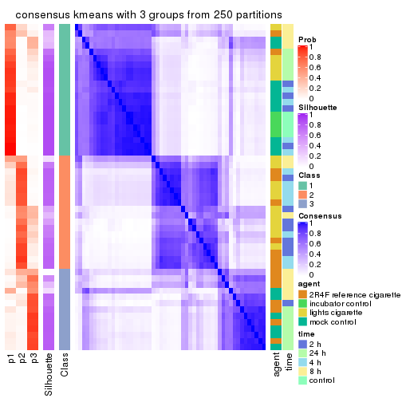
consensus_heatmap(res, k = 4)
consensus_heatmap(res, k = 5)
consensus_heatmap(res, k = 6)
Heatmaps for the membership of samples in all partitions to see how consistent they are:
membership_heatmap(res, k = 2)
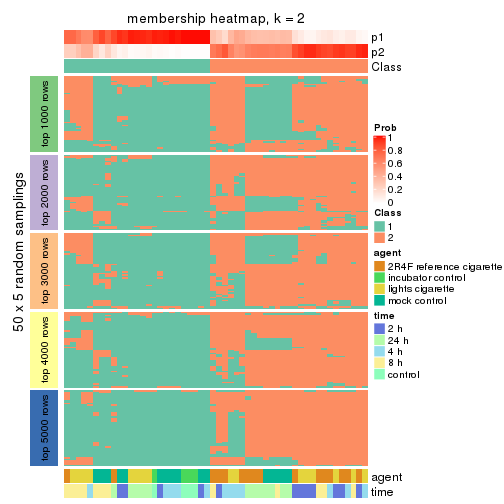
membership_heatmap(res, k = 3)
membership_heatmap(res, k = 4)
membership_heatmap(res, k = 5)
membership_heatmap(res, k = 6)
As soon as we have had the classes for columns, we can look for signatures which are significantly different between classes which can be candidate marks for certain classes. Following are the heatmaps for signatures.
Signature heatmaps where rows are scaled:
get_signatures(res, k = 2)
get_signatures(res, k = 3)
get_signatures(res, k = 4)
get_signatures(res, k = 5)
get_signatures(res, k = 6)
Signature heatmaps where rows are not scaled:
get_signatures(res, k = 2, scale_rows = FALSE)
get_signatures(res, k = 3, scale_rows = FALSE)
get_signatures(res, k = 4, scale_rows = FALSE)
get_signatures(res, k = 5, scale_rows = FALSE)
get_signatures(res, k = 6, scale_rows = FALSE)
Compare the overlap of signatures from different k:
compare_signatures(res)
get_signature() returns a data frame invisibly. TO get the list of signatures, the function
call should be assigned to a variable explicitly. In following code, if plot argument is set
to FALSE, no heatmap is plotted while only the differential analysis is performed.
# code only for demonstration
tb = get_signature(res, k = ..., plot = FALSE)
An example of the output of tb is:
#> which_row fdr mean_1 mean_2 scaled_mean_1 scaled_mean_2 km
#> 1 38 0.042760348 8.373488 9.131774 -0.5533452 0.5164555 1
#> 2 40 0.018707592 7.106213 8.469186 -0.6173731 0.5762149 1
#> 3 55 0.019134737 10.221463 11.207825 -0.6159697 0.5749050 1
#> 4 59 0.006059896 5.921854 7.869574 -0.6899429 0.6439467 1
#> 5 60 0.018055526 8.928898 10.211722 -0.6204761 0.5791110 1
#> 6 98 0.009384629 15.714769 14.887706 0.6635654 -0.6193277 2
...
The columns in tb are:
which_row: row indices corresponding to the input matrix.fdr: FDR for the differential test. mean_x: The mean value in group x.scaled_mean_x: The mean value in group x after rows are scaled.km: Row groups if k-means clustering is applied to rows.UMAP plot which shows how samples are separated.
dimension_reduction(res, k = 2, method = "UMAP")
dimension_reduction(res, k = 3, method = "UMAP")
dimension_reduction(res, k = 4, method = "UMAP")
dimension_reduction(res, k = 5, method = "UMAP")
dimension_reduction(res, k = 6, method = "UMAP")
Following heatmap shows how subgroups are split when increasing k:
collect_classes(res)
Test correlation between subgroups and known annotations. If the known annotation is numeric, one-way ANOVA test is applied, and if the known annotation is discrete, chi-squared contingency table test is applied.
test_to_known_factors(res)
#> n agent(p) time(p) k
#> SD:kmeans 46 0.002468 2.32e-01 2
#> SD:kmeans 42 0.000626 1.21e-03 3
#> SD:kmeans 36 0.004048 5.72e-04 4
#> SD:kmeans 33 0.001608 1.03e-04 5
#> SD:kmeans 19 0.001742 1.42e-05 6
If matrix rows can be associated to genes, consider to use GO_Enrichment(res,
...) to perform function enrichment for the signature genes.
The object with results only for a single top-value method and a single partition method can be extracted as:
res = res_list["SD", "skmeans"]
# you can also extract it by
# res = res_list["SD:skmeans"]
A summary of res and all the functions that can be applied to it:
res
#> A 'ConsensusPartition' object with k = 2, 3, 4, 5, 6.
#> On a matrix with 51941 rows and 52 columns.
#> Top rows (1000, 2000, 3000, 4000, 5000) are extracted by 'SD' method.
#> Subgroups are detected by 'skmeans' method.
#> Performed in total 1250 partitions by row resampling.
#> Best k for subgroups seems to be 2.
#>
#> Following methods can be applied to this 'ConsensusPartition' object:
#> [1] "cola_report" "collect_classes" "collect_plots"
#> [4] "collect_stats" "colnames" "compare_signatures"
#> [7] "consensus_heatmap" "dimension_reduction" "functional_enrichment"
#> [10] "get_anno_col" "get_anno" "get_classes"
#> [13] "get_consensus" "get_matrix" "get_membership"
#> [16] "get_param" "get_signatures" "get_stats"
#> [19] "is_best_k" "is_stable_k" "membership_heatmap"
#> [22] "ncol" "nrow" "plot_ecdf"
#> [25] "rownames" "select_partition_number" "show"
#> [28] "suggest_best_k" "test_to_known_factors"
collect_plots() function collects all the plots made from res for all k (number of partitions)
into one single page to provide an easy and fast comparison between different k.
collect_plots(res)
The plots are:
k and the heatmap of
predicted classes for each k.k.k.k.All the plots in panels can be made by individual functions and they are plotted later in this section.
select_partition_number() produces several plots showing different
statistics for choosing “optimized” k. There are following statistics:
k;k, the area increased is defined as \(A_k - A_{k-1}\).The detailed explanations of these statistics can be found in the cola vignette.
Generally speaking, lower PAC score, higher mean silhouette score or higher
concordance corresponds to better partition. Rand index and Jaccard index
measure how similar the current partition is compared to partition with k-1.
If they are too similar, we won't accept k is better than k-1.
select_partition_number(res)
The numeric values for all these statistics can be obtained by get_stats().
get_stats(res)
#> k 1-PAC mean_silhouette concordance area_increased Rand Jaccard
#> 2 2 0.0000 0.445 0.706 0.5076 0.493 0.493
#> 3 3 0.0145 0.332 0.594 0.3307 0.711 0.477
#> 4 4 0.0893 0.199 0.502 0.1226 0.879 0.665
#> 5 5 0.1930 0.152 0.436 0.0668 0.851 0.521
#> 6 6 0.3614 0.147 0.431 0.0415 0.873 0.485
suggest_best_k() suggests the best \(k\) based on these statistics. The rules are as follows:
NA.suggest_best_k(res)
#> [1] 2
Following shows the table of the partitions (You need to click the show/hide
code output link to see it). The membership matrix (columns with name p*)
is inferred by
clue::cl_consensus()
function with the SE method. Basically the value in the membership matrix
represents the probability to belong to a certain group. The finall class
label for an item is determined with the group with highest probability it
belongs to.
In get_classes() function, the entropy is calculated from the membership
matrix and the silhouette score is calculated from the consensus matrix.
cbind(get_classes(res, k = 2), get_membership(res, k = 2))
#> class entropy silhouette p1 p2
#> GSM270543 1 0.913 0.4927 0.672 0.328
#> GSM270544 1 0.990 0.1529 0.560 0.440
#> GSM270545 1 0.574 0.6085 0.864 0.136
#> GSM270546 1 0.921 0.3971 0.664 0.336
#> GSM270547 1 0.634 0.6231 0.840 0.160
#> GSM270548 1 0.821 0.5732 0.744 0.256
#> GSM270549 1 0.891 0.5144 0.692 0.308
#> GSM270550 1 0.373 0.6184 0.928 0.072
#> GSM270551 2 0.993 0.2202 0.452 0.548
#> GSM270552 1 0.921 0.4145 0.664 0.336
#> GSM270553 1 0.955 0.3029 0.624 0.376
#> GSM270554 1 0.932 0.3864 0.652 0.348
#> GSM270555 2 1.000 0.0688 0.496 0.504
#> GSM270556 2 0.952 0.3801 0.372 0.628
#> GSM270557 2 0.991 0.2318 0.444 0.556
#> GSM270558 2 0.995 0.1882 0.460 0.540
#> GSM270559 2 0.866 0.5069 0.288 0.712
#> GSM270560 2 0.506 0.5871 0.112 0.888
#> GSM270561 2 0.821 0.5455 0.256 0.744
#> GSM270562 2 0.697 0.5848 0.188 0.812
#> GSM270563 2 0.753 0.5744 0.216 0.784
#> GSM270564 2 0.886 0.4707 0.304 0.696
#> GSM270565 2 0.605 0.5898 0.148 0.852
#> GSM270566 2 0.821 0.5588 0.256 0.744
#> GSM270567 1 0.966 0.3049 0.608 0.392
#> GSM270568 2 0.833 0.5463 0.264 0.736
#> GSM270569 2 0.900 0.4954 0.316 0.684
#> GSM270570 2 0.955 0.3701 0.376 0.624
#> GSM270571 1 0.939 0.3938 0.644 0.356
#> GSM270572 1 0.988 0.1251 0.564 0.436
#> GSM270573 2 0.990 0.2367 0.440 0.560
#> GSM270574 1 1.000 -0.0700 0.508 0.492
#> GSM270575 2 0.767 0.5707 0.224 0.776
#> GSM270576 2 0.767 0.5803 0.224 0.776
#> GSM270577 2 0.881 0.5182 0.300 0.700
#> GSM270578 2 0.833 0.5638 0.264 0.736
#> GSM270579 2 0.913 0.4664 0.328 0.672
#> GSM270580 2 0.343 0.5791 0.064 0.936
#> GSM270581 2 0.913 0.4175 0.328 0.672
#> GSM270582 2 0.886 0.4637 0.304 0.696
#> GSM270583 2 0.850 0.5608 0.276 0.724
#> GSM270584 1 0.949 0.3271 0.632 0.368
#> GSM270585 2 0.990 0.2383 0.440 0.560
#> GSM270586 2 0.999 0.0874 0.484 0.516
#> GSM270587 1 0.689 0.6181 0.816 0.184
#> GSM270588 1 0.808 0.5551 0.752 0.248
#> GSM270589 1 0.760 0.5976 0.780 0.220
#> GSM270590 1 0.881 0.5244 0.700 0.300
#> GSM270591 1 0.343 0.6169 0.936 0.064
#> GSM270592 1 0.358 0.6136 0.932 0.068
#> GSM270593 1 0.584 0.6145 0.860 0.140
#> GSM270594 1 0.680 0.6135 0.820 0.180
cbind(get_classes(res, k = 3), get_membership(res, k = 3))
#> class entropy silhouette p1 p2 p3
#> GSM270543 1 0.917 0.25991 0.524 0.180 0.296
#> GSM270544 2 0.988 0.00125 0.368 0.372 0.260
#> GSM270545 1 0.453 0.58084 0.860 0.088 0.052
#> GSM270546 1 0.810 0.42933 0.644 0.216 0.140
#> GSM270547 1 0.642 0.55158 0.752 0.068 0.180
#> GSM270548 1 0.811 0.45047 0.644 0.144 0.212
#> GSM270549 1 0.941 0.18752 0.476 0.188 0.336
#> GSM270550 1 0.389 0.58194 0.888 0.048 0.064
#> GSM270551 3 0.826 0.31317 0.152 0.216 0.632
#> GSM270552 3 0.932 0.06897 0.392 0.164 0.444
#> GSM270553 3 0.911 0.16260 0.384 0.144 0.472
#> GSM270554 3 0.919 0.23964 0.348 0.160 0.492
#> GSM270555 3 0.827 0.44586 0.212 0.156 0.632
#> GSM270556 3 0.761 0.40510 0.168 0.144 0.688
#> GSM270557 3 0.865 0.39324 0.204 0.196 0.600
#> GSM270558 3 0.733 0.44401 0.156 0.136 0.708
#> GSM270559 3 0.874 0.12604 0.124 0.340 0.536
#> GSM270560 2 0.769 0.30116 0.060 0.596 0.344
#> GSM270561 2 0.756 0.44754 0.152 0.692 0.156
#> GSM270562 2 0.787 0.42181 0.092 0.632 0.276
#> GSM270563 2 0.750 0.44003 0.104 0.684 0.212
#> GSM270564 2 0.703 0.47338 0.120 0.728 0.152
#> GSM270565 2 0.594 0.44885 0.036 0.760 0.204
#> GSM270566 2 0.808 0.40304 0.116 0.632 0.252
#> GSM270567 1 0.963 0.18027 0.460 0.312 0.228
#> GSM270568 3 0.947 0.15051 0.200 0.324 0.476
#> GSM270569 3 0.916 0.12810 0.156 0.352 0.492
#> GSM270570 2 0.975 0.08663 0.236 0.424 0.340
#> GSM270571 3 0.964 0.09847 0.376 0.208 0.416
#> GSM270572 3 0.850 0.34108 0.304 0.120 0.576
#> GSM270573 3 0.816 0.38229 0.160 0.196 0.644
#> GSM270574 3 0.817 0.42085 0.180 0.176 0.644
#> GSM270575 2 0.901 0.17260 0.132 0.464 0.404
#> GSM270576 2 0.857 0.32372 0.116 0.556 0.328
#> GSM270577 2 0.915 0.10044 0.144 0.444 0.412
#> GSM270578 2 0.899 0.26965 0.144 0.516 0.340
#> GSM270579 2 0.878 0.34750 0.232 0.584 0.184
#> GSM270580 2 0.717 0.33671 0.036 0.612 0.352
#> GSM270581 2 0.740 0.45993 0.180 0.700 0.120
#> GSM270582 2 0.708 0.46955 0.156 0.724 0.120
#> GSM270583 3 0.923 -0.10904 0.152 0.416 0.432
#> GSM270584 1 0.850 0.40864 0.564 0.324 0.112
#> GSM270585 2 0.913 0.24212 0.296 0.528 0.176
#> GSM270586 2 0.835 0.30396 0.308 0.584 0.108
#> GSM270587 1 0.879 0.42211 0.584 0.188 0.228
#> GSM270588 1 0.870 0.27130 0.544 0.124 0.332
#> GSM270589 1 0.910 0.35026 0.544 0.192 0.264
#> GSM270590 1 0.912 0.32752 0.536 0.184 0.280
#> GSM270591 1 0.517 0.57159 0.824 0.048 0.128
#> GSM270592 1 0.526 0.57113 0.824 0.060 0.116
#> GSM270593 1 0.645 0.51553 0.744 0.060 0.196
#> GSM270594 1 0.703 0.54411 0.728 0.124 0.148
cbind(get_classes(res, k = 4), get_membership(res, k = 4))
#> class entropy silhouette p1 p2 p3 p4
#> GSM270543 4 0.900 0.2093 0.188 0.144 0.176 0.492
#> GSM270544 4 0.983 -0.0820 0.192 0.212 0.264 0.332
#> GSM270545 4 0.497 0.4512 0.048 0.048 0.096 0.808
#> GSM270546 4 0.799 0.2530 0.052 0.148 0.244 0.556
#> GSM270547 4 0.577 0.4218 0.040 0.044 0.180 0.736
#> GSM270548 4 0.825 0.2189 0.096 0.088 0.304 0.512
#> GSM270549 3 0.913 -0.1310 0.156 0.108 0.372 0.364
#> GSM270550 4 0.480 0.4433 0.044 0.060 0.076 0.820
#> GSM270551 1 0.895 0.2277 0.496 0.160 0.204 0.140
#> GSM270552 4 0.951 -0.0794 0.304 0.104 0.288 0.304
#> GSM270553 1 0.954 0.0281 0.332 0.112 0.296 0.260
#> GSM270554 1 0.937 0.1495 0.400 0.112 0.264 0.224
#> GSM270555 1 0.608 0.3356 0.724 0.036 0.168 0.072
#> GSM270556 1 0.804 0.2701 0.560 0.128 0.244 0.068
#> GSM270557 1 0.842 0.2566 0.532 0.092 0.244 0.132
#> GSM270558 1 0.726 0.3241 0.628 0.060 0.228 0.084
#> GSM270559 1 0.837 0.1584 0.480 0.168 0.304 0.048
#> GSM270560 2 0.819 0.2700 0.252 0.476 0.248 0.024
#> GSM270561 2 0.808 0.2717 0.112 0.544 0.272 0.072
#> GSM270562 2 0.835 0.2820 0.244 0.512 0.192 0.052
#> GSM270563 2 0.754 0.2710 0.132 0.612 0.204 0.052
#> GSM270564 2 0.685 0.2881 0.064 0.668 0.200 0.068
#> GSM270565 2 0.657 0.3538 0.128 0.692 0.148 0.032
#> GSM270566 2 0.858 0.2603 0.172 0.504 0.248 0.076
#> GSM270567 3 0.972 0.1267 0.144 0.268 0.332 0.256
#> GSM270568 1 0.932 0.0332 0.380 0.284 0.240 0.096
#> GSM270569 1 0.896 0.0846 0.372 0.204 0.356 0.068
#> GSM270570 3 0.958 -0.0443 0.200 0.320 0.340 0.140
#> GSM270571 1 0.954 0.0714 0.376 0.128 0.252 0.244
#> GSM270572 1 0.748 0.2676 0.624 0.052 0.156 0.168
#> GSM270573 1 0.752 0.3202 0.632 0.104 0.180 0.084
#> GSM270574 1 0.793 0.2779 0.604 0.112 0.116 0.168
#> GSM270575 2 0.882 0.1460 0.272 0.372 0.312 0.044
#> GSM270576 2 0.856 0.1985 0.216 0.376 0.372 0.036
#> GSM270577 3 0.955 -0.1684 0.300 0.228 0.348 0.124
#> GSM270578 2 0.910 0.2139 0.156 0.436 0.292 0.116
#> GSM270579 2 0.930 0.1018 0.116 0.388 0.316 0.180
#> GSM270580 2 0.849 0.2343 0.284 0.432 0.252 0.032
#> GSM270581 2 0.625 0.2769 0.028 0.704 0.184 0.084
#> GSM270582 2 0.739 0.3043 0.100 0.652 0.140 0.108
#> GSM270583 2 0.880 0.0554 0.236 0.384 0.332 0.048
#> GSM270584 4 0.873 0.1078 0.100 0.292 0.132 0.476
#> GSM270585 2 0.895 0.0238 0.104 0.464 0.268 0.164
#> GSM270586 2 0.884 -0.0199 0.052 0.412 0.264 0.272
#> GSM270587 4 0.937 0.1538 0.232 0.140 0.200 0.428
#> GSM270588 4 0.880 0.0791 0.364 0.076 0.156 0.404
#> GSM270589 4 0.937 0.1655 0.244 0.148 0.180 0.428
#> GSM270590 4 0.937 0.1377 0.208 0.164 0.188 0.440
#> GSM270591 4 0.434 0.4564 0.072 0.024 0.064 0.840
#> GSM270592 4 0.465 0.4496 0.080 0.028 0.068 0.824
#> GSM270593 4 0.633 0.4137 0.088 0.040 0.160 0.712
#> GSM270594 4 0.561 0.4266 0.056 0.040 0.144 0.760
cbind(get_classes(res, k = 5), get_membership(res, k = 5))
#> class entropy silhouette p1 p2 p3 p4 p5
#> GSM270543 4 0.868 0.167731 0.104 0.096 0.116 0.468 0.216
#> GSM270544 4 0.935 0.023278 0.080 0.120 0.248 0.324 0.228
#> GSM270545 4 0.409 0.405281 0.032 0.032 0.048 0.840 0.048
#> GSM270546 4 0.770 0.293571 0.028 0.100 0.132 0.552 0.188
#> GSM270547 4 0.662 0.350095 0.064 0.048 0.076 0.668 0.144
#> GSM270548 4 0.873 0.118864 0.064 0.092 0.140 0.372 0.332
#> GSM270549 5 0.960 -0.055965 0.168 0.156 0.108 0.280 0.288
#> GSM270550 4 0.477 0.379553 0.048 0.076 0.004 0.784 0.088
#> GSM270551 1 0.853 0.211743 0.488 0.092 0.204 0.096 0.120
#> GSM270552 5 0.913 -0.085331 0.320 0.088 0.104 0.156 0.332
#> GSM270553 1 0.943 0.044558 0.332 0.076 0.168 0.196 0.228
#> GSM270554 1 0.886 0.020050 0.372 0.072 0.080 0.176 0.300
#> GSM270555 1 0.596 0.296236 0.716 0.044 0.060 0.048 0.132
#> GSM270556 1 0.794 0.255008 0.524 0.092 0.228 0.044 0.112
#> GSM270557 1 0.880 0.221775 0.428 0.060 0.228 0.112 0.172
#> GSM270558 1 0.710 0.298159 0.612 0.052 0.144 0.036 0.156
#> GSM270559 1 0.797 0.032177 0.432 0.112 0.352 0.056 0.048
#> GSM270560 3 0.721 0.215908 0.172 0.192 0.568 0.016 0.052
#> GSM270561 2 0.812 -0.000104 0.088 0.440 0.332 0.048 0.092
#> GSM270562 3 0.790 0.201066 0.128 0.272 0.492 0.032 0.076
#> GSM270563 2 0.772 0.126697 0.076 0.548 0.224 0.048 0.104
#> GSM270564 2 0.706 0.136436 0.052 0.608 0.212 0.060 0.068
#> GSM270565 2 0.774 -0.028670 0.088 0.488 0.304 0.028 0.092
#> GSM270566 3 0.796 0.052472 0.092 0.384 0.404 0.036 0.084
#> GSM270567 2 0.956 0.032573 0.084 0.276 0.152 0.252 0.236
#> GSM270568 1 0.951 0.098964 0.332 0.240 0.180 0.100 0.148
#> GSM270569 3 0.945 0.009212 0.252 0.240 0.268 0.060 0.180
#> GSM270570 2 0.950 0.099339 0.192 0.336 0.136 0.104 0.232
#> GSM270571 5 0.961 0.032314 0.216 0.104 0.180 0.176 0.324
#> GSM270572 1 0.868 0.033942 0.404 0.064 0.096 0.132 0.304
#> GSM270573 1 0.815 0.250076 0.540 0.088 0.132 0.084 0.156
#> GSM270574 1 0.811 0.173459 0.508 0.064 0.108 0.080 0.240
#> GSM270575 3 0.765 0.248054 0.176 0.172 0.544 0.020 0.088
#> GSM270576 3 0.722 0.240576 0.124 0.204 0.588 0.040 0.044
#> GSM270577 3 0.900 0.125160 0.236 0.144 0.412 0.076 0.132
#> GSM270578 3 0.760 0.214996 0.076 0.176 0.584 0.068 0.096
#> GSM270579 3 0.910 -0.022811 0.068 0.316 0.336 0.140 0.140
#> GSM270580 3 0.811 0.161345 0.232 0.312 0.380 0.016 0.060
#> GSM270581 2 0.667 0.200974 0.012 0.636 0.172 0.072 0.108
#> GSM270582 2 0.776 0.122581 0.048 0.536 0.240 0.080 0.096
#> GSM270583 2 0.924 0.087114 0.212 0.336 0.212 0.048 0.192
#> GSM270584 4 0.766 0.055751 0.028 0.384 0.040 0.412 0.136
#> GSM270585 2 0.756 0.258447 0.028 0.560 0.096 0.108 0.208
#> GSM270586 2 0.816 0.194899 0.028 0.444 0.076 0.168 0.284
#> GSM270587 4 0.880 -0.124078 0.128 0.172 0.036 0.356 0.308
#> GSM270588 5 0.872 0.171687 0.276 0.076 0.040 0.300 0.308
#> GSM270589 5 0.902 0.143017 0.132 0.136 0.076 0.260 0.396
#> GSM270590 5 0.911 0.159454 0.164 0.180 0.044 0.284 0.328
#> GSM270591 4 0.539 0.338910 0.052 0.028 0.024 0.732 0.164
#> GSM270592 4 0.584 0.304508 0.032 0.048 0.016 0.660 0.244
#> GSM270593 4 0.679 0.282584 0.128 0.024 0.048 0.628 0.172
#> GSM270594 4 0.665 0.316155 0.076 0.064 0.020 0.628 0.212
cbind(get_classes(res, k = 6), get_membership(res, k = 6))
#> class entropy silhouette p1 p2 p3 p4 p5 p6
#> GSM270543 4 0.888 -0.02431 0.120 0.100 0.068 0.392 0.228 0.092
#> GSM270544 5 0.870 0.08359 0.056 0.068 0.152 0.292 0.352 0.080
#> GSM270545 4 0.403 0.40685 0.048 0.032 0.012 0.824 0.064 0.020
#> GSM270546 4 0.750 0.11782 0.056 0.072 0.064 0.516 0.252 0.040
#> GSM270547 4 0.597 0.30273 0.084 0.028 0.016 0.668 0.164 0.040
#> GSM270548 5 0.830 0.05443 0.088 0.116 0.040 0.328 0.372 0.056
#> GSM270549 4 0.833 -0.15418 0.060 0.112 0.028 0.352 0.336 0.112
#> GSM270550 4 0.431 0.38942 0.068 0.032 0.016 0.800 0.076 0.008
#> GSM270551 6 0.924 0.14756 0.124 0.048 0.168 0.128 0.200 0.332
#> GSM270552 5 0.909 -0.07312 0.112 0.116 0.036 0.172 0.312 0.252
#> GSM270553 6 0.909 0.06355 0.168 0.064 0.072 0.136 0.204 0.356
#> GSM270554 6 0.901 0.05507 0.192 0.072 0.048 0.120 0.240 0.328
#> GSM270555 6 0.722 0.15531 0.256 0.024 0.048 0.032 0.124 0.516
#> GSM270556 6 0.791 0.16685 0.240 0.052 0.116 0.040 0.072 0.480
#> GSM270557 6 0.816 0.13283 0.220 0.048 0.084 0.056 0.124 0.468
#> GSM270558 6 0.719 0.20505 0.168 0.060 0.076 0.040 0.068 0.588
#> GSM270559 6 0.778 0.05849 0.084 0.084 0.228 0.020 0.088 0.496
#> GSM270560 3 0.786 0.18373 0.040 0.184 0.456 0.020 0.076 0.224
#> GSM270561 3 0.812 0.09135 0.108 0.292 0.408 0.016 0.108 0.068
#> GSM270562 3 0.542 0.28825 0.032 0.072 0.724 0.004 0.084 0.084
#> GSM270563 2 0.840 0.07470 0.068 0.416 0.260 0.044 0.132 0.080
#> GSM270564 2 0.745 0.06305 0.044 0.460 0.328 0.036 0.080 0.052
#> GSM270565 3 0.742 0.17806 0.072 0.232 0.532 0.028 0.076 0.060
#> GSM270566 3 0.781 0.10161 0.076 0.288 0.452 0.028 0.048 0.108
#> GSM270567 2 0.885 0.15075 0.128 0.392 0.060 0.152 0.204 0.064
#> GSM270568 6 0.908 -0.01255 0.140 0.244 0.176 0.036 0.092 0.312
#> GSM270569 6 0.942 0.00511 0.120 0.240 0.184 0.044 0.164 0.248
#> GSM270570 2 0.913 0.11052 0.116 0.380 0.128 0.068 0.180 0.128
#> GSM270571 1 0.880 0.07022 0.344 0.048 0.084 0.072 0.260 0.192
#> GSM270572 1 0.686 0.17691 0.584 0.036 0.036 0.072 0.052 0.220
#> GSM270573 1 0.793 -0.00569 0.476 0.080 0.076 0.028 0.096 0.244
#> GSM270574 1 0.739 0.10751 0.528 0.048 0.084 0.024 0.080 0.236
#> GSM270575 3 0.808 0.16493 0.068 0.112 0.424 0.012 0.116 0.268
#> GSM270576 3 0.779 0.23115 0.028 0.088 0.492 0.036 0.196 0.160
#> GSM270577 3 0.897 0.11295 0.116 0.096 0.356 0.040 0.176 0.216
#> GSM270578 3 0.749 0.26047 0.052 0.060 0.568 0.064 0.152 0.104
#> GSM270579 3 0.925 0.02343 0.060 0.216 0.324 0.148 0.164 0.088
#> GSM270580 3 0.859 0.14708 0.112 0.216 0.376 0.012 0.100 0.184
#> GSM270581 2 0.739 0.11771 0.056 0.532 0.240 0.060 0.076 0.036
#> GSM270582 3 0.760 0.02357 0.056 0.360 0.416 0.044 0.092 0.032
#> GSM270583 2 0.860 0.14693 0.076 0.428 0.132 0.040 0.136 0.188
#> GSM270584 4 0.798 0.10130 0.136 0.296 0.072 0.412 0.072 0.012
#> GSM270585 2 0.712 0.26531 0.064 0.608 0.084 0.080 0.124 0.040
#> GSM270586 2 0.866 0.17325 0.128 0.408 0.108 0.144 0.188 0.024
#> GSM270587 1 0.797 0.17790 0.452 0.092 0.028 0.248 0.140 0.040
#> GSM270588 1 0.660 0.28129 0.588 0.056 0.004 0.224 0.060 0.068
#> GSM270589 1 0.879 0.19708 0.392 0.152 0.040 0.204 0.132 0.080
#> GSM270590 1 0.847 0.25992 0.448 0.144 0.052 0.180 0.120 0.056
#> GSM270591 4 0.545 0.36307 0.172 0.016 0.004 0.688 0.084 0.036
#> GSM270592 4 0.639 0.33432 0.208 0.044 0.012 0.604 0.112 0.020
#> GSM270593 4 0.706 0.29781 0.124 0.044 0.032 0.600 0.128 0.072
#> GSM270594 4 0.704 0.27055 0.088 0.044 0.020 0.592 0.152 0.104
Heatmaps for the consensus matrix. It visualizes the probability of two samples to be in a same group.
consensus_heatmap(res, k = 2)
consensus_heatmap(res, k = 3)
consensus_heatmap(res, k = 4)
consensus_heatmap(res, k = 5)

consensus_heatmap(res, k = 6)
Heatmaps for the membership of samples in all partitions to see how consistent they are:
membership_heatmap(res, k = 2)
membership_heatmap(res, k = 3)

membership_heatmap(res, k = 4)
membership_heatmap(res, k = 5)
membership_heatmap(res, k = 6)
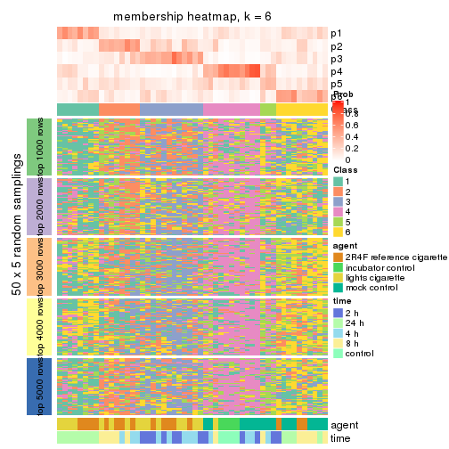
As soon as we have had the classes for columns, we can look for signatures which are significantly different between classes which can be candidate marks for certain classes. Following are the heatmaps for signatures.
Signature heatmaps where rows are scaled:
get_signatures(res, k = 2)
get_signatures(res, k = 3)

get_signatures(res, k = 4)

get_signatures(res, k = 5)

get_signatures(res, k = 6)

Signature heatmaps where rows are not scaled:
get_signatures(res, k = 2, scale_rows = FALSE)
get_signatures(res, k = 3, scale_rows = FALSE)

get_signatures(res, k = 4, scale_rows = FALSE)

get_signatures(res, k = 5, scale_rows = FALSE)

get_signatures(res, k = 6, scale_rows = FALSE)

Compare the overlap of signatures from different k:
compare_signatures(res)
get_signature() returns a data frame invisibly. TO get the list of signatures, the function
call should be assigned to a variable explicitly. In following code, if plot argument is set
to FALSE, no heatmap is plotted while only the differential analysis is performed.
# code only for demonstration
tb = get_signature(res, k = ..., plot = FALSE)
An example of the output of tb is:
#> which_row fdr mean_1 mean_2 scaled_mean_1 scaled_mean_2 km
#> 1 38 0.042760348 8.373488 9.131774 -0.5533452 0.5164555 1
#> 2 40 0.018707592 7.106213 8.469186 -0.6173731 0.5762149 1
#> 3 55 0.019134737 10.221463 11.207825 -0.6159697 0.5749050 1
#> 4 59 0.006059896 5.921854 7.869574 -0.6899429 0.6439467 1
#> 5 60 0.018055526 8.928898 10.211722 -0.6204761 0.5791110 1
#> 6 98 0.009384629 15.714769 14.887706 0.6635654 -0.6193277 2
...
The columns in tb are:
which_row: row indices corresponding to the input matrix.fdr: FDR for the differential test. mean_x: The mean value in group x.scaled_mean_x: The mean value in group x after rows are scaled.km: Row groups if k-means clustering is applied to rows.UMAP plot which shows how samples are separated.
dimension_reduction(res, k = 2, method = "UMAP")
dimension_reduction(res, k = 3, method = "UMAP")
dimension_reduction(res, k = 4, method = "UMAP")

dimension_reduction(res, k = 5, method = "UMAP")

dimension_reduction(res, k = 6, method = "UMAP")
Following heatmap shows how subgroups are split when increasing k:
collect_classes(res)
Test correlation between subgroups and known annotations. If the known annotation is numeric, one-way ANOVA test is applied, and if the known annotation is discrete, chi-squared contingency table test is applied.
test_to_known_factors(res)
#> n agent(p) time(p) k
#> SD:skmeans 27 0.000588 0.00389 2
#> SD:skmeans 7 NA NA 3
#> SD:skmeans 0 NA NA 4
#> SD:skmeans 0 NA NA 5
#> SD:skmeans 0 NA NA 6
If matrix rows can be associated to genes, consider to use GO_Enrichment(res,
...) to perform function enrichment for the signature genes.
The object with results only for a single top-value method and a single partition method can be extracted as:
res = res_list["SD", "pam"]
# you can also extract it by
# res = res_list["SD:pam"]
A summary of res and all the functions that can be applied to it:
res
#> A 'ConsensusPartition' object with k = 2, 3, 4, 5, 6.
#> On a matrix with 51941 rows and 52 columns.
#> Top rows (1000, 2000, 3000, 4000, 5000) are extracted by 'SD' method.
#> Subgroups are detected by 'pam' method.
#> Performed in total 1250 partitions by row resampling.
#> Best k for subgroups seems to be 2.
#>
#> Following methods can be applied to this 'ConsensusPartition' object:
#> [1] "cola_report" "collect_classes" "collect_plots"
#> [4] "collect_stats" "colnames" "compare_signatures"
#> [7] "consensus_heatmap" "dimension_reduction" "functional_enrichment"
#> [10] "get_anno_col" "get_anno" "get_classes"
#> [13] "get_consensus" "get_matrix" "get_membership"
#> [16] "get_param" "get_signatures" "get_stats"
#> [19] "is_best_k" "is_stable_k" "membership_heatmap"
#> [22] "ncol" "nrow" "plot_ecdf"
#> [25] "rownames" "select_partition_number" "show"
#> [28] "suggest_best_k" "test_to_known_factors"
collect_plots() function collects all the plots made from res for all k (number of partitions)
into one single page to provide an easy and fast comparison between different k.
collect_plots(res)
The plots are:
k and the heatmap of
predicted classes for each k.k.k.k.All the plots in panels can be made by individual functions and they are plotted later in this section.
select_partition_number() produces several plots showing different
statistics for choosing “optimized” k. There are following statistics:
k;k, the area increased is defined as \(A_k - A_{k-1}\).The detailed explanations of these statistics can be found in the cola vignette.
Generally speaking, lower PAC score, higher mean silhouette score or higher
concordance corresponds to better partition. Rand index and Jaccard index
measure how similar the current partition is compared to partition with k-1.
If they are too similar, we won't accept k is better than k-1.
select_partition_number(res)
The numeric values for all these statistics can be obtained by get_stats().
get_stats(res)
#> k 1-PAC mean_silhouette concordance area_increased Rand Jaccard
#> 2 2 0.277 0.687 0.852 0.4805 0.517 0.517
#> 3 3 0.247 0.627 0.830 0.0812 0.939 0.885
#> 4 4 0.241 0.640 0.832 0.0458 0.985 0.969
#> 5 5 0.234 0.608 0.832 0.0384 0.986 0.970
#> 6 6 0.340 0.576 0.829 0.0306 0.951 0.898
suggest_best_k() suggests the best \(k\) based on these statistics. The rules are as follows:
NA.suggest_best_k(res)
#> [1] 2
Following shows the table of the partitions (You need to click the show/hide
code output link to see it). The membership matrix (columns with name p*)
is inferred by
clue::cl_consensus()
function with the SE method. Basically the value in the membership matrix
represents the probability to belong to a certain group. The finall class
label for an item is determined with the group with highest probability it
belongs to.
In get_classes() function, the entropy is calculated from the membership
matrix and the silhouette score is calculated from the consensus matrix.
cbind(get_classes(res, k = 2), get_membership(res, k = 2))
#> class entropy silhouette p1 p2
#> GSM270543 1 0.5519 0.7888 0.872 0.128
#> GSM270544 1 0.9732 0.3334 0.596 0.404
#> GSM270545 1 0.9522 0.4209 0.628 0.372
#> GSM270546 2 0.9661 0.3602 0.392 0.608
#> GSM270547 1 0.8763 0.5848 0.704 0.296
#> GSM270548 1 0.0938 0.8216 0.988 0.012
#> GSM270549 1 0.0000 0.8212 1.000 0.000
#> GSM270550 1 0.7139 0.7375 0.804 0.196
#> GSM270551 2 0.9833 0.2808 0.424 0.576
#> GSM270552 1 0.0000 0.8212 1.000 0.000
#> GSM270553 1 0.8813 0.5970 0.700 0.300
#> GSM270554 1 0.0376 0.8209 0.996 0.004
#> GSM270555 1 0.0000 0.8212 1.000 0.000
#> GSM270556 2 0.6973 0.7078 0.188 0.812
#> GSM270557 1 0.3879 0.8138 0.924 0.076
#> GSM270558 1 0.0000 0.8212 1.000 0.000
#> GSM270559 1 0.5842 0.7808 0.860 0.140
#> GSM270560 1 0.9977 0.0965 0.528 0.472
#> GSM270561 1 0.9608 0.4116 0.616 0.384
#> GSM270562 2 0.8144 0.6580 0.252 0.748
#> GSM270563 2 0.1184 0.8044 0.016 0.984
#> GSM270564 2 0.2778 0.8095 0.048 0.952
#> GSM270565 1 0.9491 0.4445 0.632 0.368
#> GSM270566 2 0.1414 0.8062 0.020 0.980
#> GSM270567 2 0.9000 0.5566 0.316 0.684
#> GSM270568 2 0.9963 0.1480 0.464 0.536
#> GSM270569 2 0.0000 0.7977 0.000 1.000
#> GSM270570 2 0.5059 0.7937 0.112 0.888
#> GSM270571 1 0.3879 0.8119 0.924 0.076
#> GSM270572 1 0.4161 0.8043 0.916 0.084
#> GSM270573 1 0.3733 0.8152 0.928 0.072
#> GSM270574 2 0.9833 0.2717 0.424 0.576
#> GSM270575 1 0.9775 0.2855 0.588 0.412
#> GSM270576 2 0.4022 0.7929 0.080 0.920
#> GSM270577 1 0.0000 0.8212 1.000 0.000
#> GSM270578 1 0.2043 0.8211 0.968 0.032
#> GSM270579 1 0.6623 0.7578 0.828 0.172
#> GSM270580 2 0.6531 0.7548 0.168 0.832
#> GSM270581 2 0.2043 0.8073 0.032 0.968
#> GSM270582 2 0.1414 0.8066 0.020 0.980
#> GSM270583 2 0.0000 0.7977 0.000 1.000
#> GSM270584 2 0.0376 0.7999 0.004 0.996
#> GSM270585 2 0.4431 0.7994 0.092 0.908
#> GSM270586 2 0.4562 0.8007 0.096 0.904
#> GSM270587 1 0.6801 0.7519 0.820 0.180
#> GSM270588 1 0.7299 0.6835 0.796 0.204
#> GSM270589 1 0.0000 0.8212 1.000 0.000
#> GSM270590 1 0.6531 0.7579 0.832 0.168
#> GSM270591 1 0.0000 0.8212 1.000 0.000
#> GSM270592 1 0.0000 0.8212 1.000 0.000
#> GSM270593 1 0.0000 0.8212 1.000 0.000
#> GSM270594 1 0.0000 0.8212 1.000 0.000
cbind(get_classes(res, k = 3), get_membership(res, k = 3))
#> class entropy silhouette p1 p2 p3
#> GSM270543 1 0.3482 0.7558 0.872 0.128 0.000
#> GSM270544 1 0.6140 0.2979 0.596 0.404 0.000
#> GSM270545 1 0.6209 0.3923 0.628 0.368 0.004
#> GSM270546 2 0.6298 0.3989 0.388 0.608 0.004
#> GSM270547 1 0.5754 0.5484 0.700 0.296 0.004
#> GSM270548 1 0.0592 0.7866 0.988 0.012 0.000
#> GSM270549 1 0.0000 0.7857 1.000 0.000 0.000
#> GSM270550 1 0.4682 0.6985 0.804 0.192 0.004
#> GSM270551 2 0.9379 0.2459 0.348 0.472 0.180
#> GSM270552 1 0.0000 0.7857 1.000 0.000 0.000
#> GSM270553 1 0.5754 0.5698 0.700 0.296 0.004
#> GSM270554 1 0.2096 0.7720 0.944 0.004 0.052
#> GSM270555 1 0.2796 0.7500 0.908 0.000 0.092
#> GSM270556 2 0.5508 0.5977 0.188 0.784 0.028
#> GSM270557 1 0.3832 0.7760 0.888 0.076 0.036
#> GSM270558 1 0.0000 0.7857 1.000 0.000 0.000
#> GSM270559 1 0.4960 0.7311 0.832 0.128 0.040
#> GSM270560 2 0.8795 0.0793 0.444 0.444 0.112
#> GSM270561 1 0.6753 0.3370 0.596 0.388 0.016
#> GSM270562 2 0.8017 0.5472 0.208 0.652 0.140
#> GSM270563 2 0.1337 0.7108 0.016 0.972 0.012
#> GSM270564 2 0.1753 0.7193 0.048 0.952 0.000
#> GSM270565 1 0.7368 0.3799 0.604 0.352 0.044
#> GSM270566 2 0.1129 0.7133 0.020 0.976 0.004
#> GSM270567 2 0.6730 0.5234 0.284 0.680 0.036
#> GSM270568 2 0.6659 0.1754 0.460 0.532 0.008
#> GSM270569 2 0.0747 0.7017 0.000 0.984 0.016
#> GSM270570 2 0.4868 0.6902 0.100 0.844 0.056
#> GSM270571 1 0.4790 0.7374 0.848 0.056 0.096
#> GSM270572 1 0.4709 0.7320 0.852 0.056 0.092
#> GSM270573 1 0.2939 0.7833 0.916 0.072 0.012
#> GSM270574 2 0.8731 0.3089 0.368 0.516 0.116
#> GSM270575 3 0.7489 0.0000 0.256 0.080 0.664
#> GSM270576 2 0.4891 0.6565 0.040 0.836 0.124
#> GSM270577 1 0.0237 0.7854 0.996 0.000 0.004
#> GSM270578 1 0.3028 0.7768 0.920 0.032 0.048
#> GSM270579 1 0.4645 0.7122 0.816 0.176 0.008
#> GSM270580 2 0.6044 0.6462 0.172 0.772 0.056
#> GSM270581 2 0.1289 0.7160 0.032 0.968 0.000
#> GSM270582 2 0.2050 0.7112 0.020 0.952 0.028
#> GSM270583 2 0.0237 0.7014 0.000 0.996 0.004
#> GSM270584 2 0.0424 0.7055 0.008 0.992 0.000
#> GSM270585 2 0.2796 0.7104 0.092 0.908 0.000
#> GSM270586 2 0.3459 0.7099 0.096 0.892 0.012
#> GSM270587 1 0.4645 0.7203 0.816 0.176 0.008
#> GSM270588 1 0.6962 0.5710 0.724 0.184 0.092
#> GSM270589 1 0.0000 0.7857 1.000 0.000 0.000
#> GSM270590 1 0.4531 0.7191 0.824 0.168 0.008
#> GSM270591 1 0.0000 0.7857 1.000 0.000 0.000
#> GSM270592 1 0.0000 0.7857 1.000 0.000 0.000
#> GSM270593 1 0.0000 0.7857 1.000 0.000 0.000
#> GSM270594 1 0.0000 0.7857 1.000 0.000 0.000
cbind(get_classes(res, k = 4), get_membership(res, k = 4))
#> class entropy silhouette p1 p2 p3 p4
#> GSM270543 4 0.2888 0.7871 0.004 0.124 0.000 0.872
#> GSM270544 4 0.5028 0.3238 0.004 0.400 0.000 0.596
#> GSM270545 4 0.5040 0.4108 0.008 0.364 0.000 0.628
#> GSM270546 2 0.5125 0.3716 0.008 0.604 0.000 0.388
#> GSM270547 4 0.4673 0.5710 0.008 0.292 0.000 0.700
#> GSM270548 4 0.0524 0.8091 0.004 0.008 0.000 0.988
#> GSM270549 4 0.0000 0.8079 0.000 0.000 0.000 1.000
#> GSM270550 4 0.3810 0.7417 0.008 0.188 0.000 0.804
#> GSM270551 1 0.4415 0.0000 0.804 0.056 0.000 0.140
#> GSM270552 4 0.0000 0.8079 0.000 0.000 0.000 1.000
#> GSM270553 4 0.4673 0.6039 0.008 0.292 0.000 0.700
#> GSM270554 4 0.2189 0.7936 0.020 0.004 0.044 0.932
#> GSM270555 4 0.3239 0.7656 0.052 0.000 0.068 0.880
#> GSM270556 2 0.4546 0.6269 0.028 0.780 0.004 0.188
#> GSM270557 4 0.3450 0.8013 0.032 0.072 0.016 0.880
#> GSM270558 4 0.0188 0.8079 0.004 0.000 0.000 0.996
#> GSM270559 4 0.4414 0.7640 0.036 0.120 0.020 0.824
#> GSM270560 2 0.7958 0.0717 0.084 0.432 0.060 0.424
#> GSM270561 4 0.5656 0.3549 0.012 0.384 0.012 0.592
#> GSM270562 2 0.7234 0.5793 0.092 0.652 0.076 0.180
#> GSM270563 2 0.1114 0.7306 0.008 0.972 0.004 0.016
#> GSM270564 2 0.1576 0.7391 0.004 0.948 0.000 0.048
#> GSM270565 4 0.6259 0.3707 0.028 0.356 0.024 0.592
#> GSM270566 2 0.0779 0.7318 0.000 0.980 0.004 0.016
#> GSM270567 2 0.5759 0.5598 0.028 0.676 0.020 0.276
#> GSM270568 2 0.5392 0.1445 0.012 0.528 0.000 0.460
#> GSM270569 2 0.0804 0.7215 0.012 0.980 0.008 0.000
#> GSM270570 2 0.4416 0.7049 0.028 0.832 0.040 0.100
#> GSM270571 4 0.4819 0.7496 0.060 0.052 0.068 0.820
#> GSM270572 4 0.4435 0.7595 0.048 0.052 0.060 0.840
#> GSM270573 4 0.2515 0.8081 0.012 0.072 0.004 0.912
#> GSM270574 2 0.8045 0.2851 0.084 0.488 0.072 0.356
#> GSM270575 3 0.2799 0.0000 0.000 0.008 0.884 0.108
#> GSM270576 2 0.5229 0.6036 0.152 0.768 0.068 0.012
#> GSM270577 4 0.0188 0.8080 0.004 0.000 0.000 0.996
#> GSM270578 4 0.2594 0.8029 0.036 0.032 0.012 0.920
#> GSM270579 4 0.3863 0.7505 0.008 0.176 0.004 0.812
#> GSM270580 2 0.5398 0.6630 0.052 0.760 0.024 0.164
#> GSM270581 2 0.1209 0.7359 0.000 0.964 0.004 0.032
#> GSM270582 2 0.1770 0.7301 0.016 0.952 0.016 0.016
#> GSM270583 2 0.0188 0.7211 0.000 0.996 0.004 0.000
#> GSM270584 2 0.0336 0.7252 0.000 0.992 0.000 0.008
#> GSM270585 2 0.2216 0.7302 0.000 0.908 0.000 0.092
#> GSM270586 2 0.2810 0.7311 0.008 0.896 0.008 0.088
#> GSM270587 4 0.3961 0.7573 0.008 0.172 0.008 0.812
#> GSM270588 4 0.6529 0.6117 0.056 0.180 0.068 0.696
#> GSM270589 4 0.0000 0.8079 0.000 0.000 0.000 1.000
#> GSM270590 4 0.3631 0.7580 0.004 0.168 0.004 0.824
#> GSM270591 4 0.0000 0.8079 0.000 0.000 0.000 1.000
#> GSM270592 4 0.0000 0.8079 0.000 0.000 0.000 1.000
#> GSM270593 4 0.0000 0.8079 0.000 0.000 0.000 1.000
#> GSM270594 4 0.0000 0.8079 0.000 0.000 0.000 1.000
cbind(get_classes(res, k = 5), get_membership(res, k = 5))
#> class entropy silhouette p1 p2 p3 p4 p5
#> GSM270543 4 0.2488 0.787 0.004 0.124 0.000 0.872 0.000
#> GSM270544 4 0.4470 0.331 0.004 0.396 0.004 0.596 0.000
#> GSM270545 4 0.4341 0.406 0.008 0.364 0.000 0.628 0.000
#> GSM270546 2 0.4415 0.364 0.008 0.604 0.000 0.388 0.000
#> GSM270547 4 0.4025 0.566 0.008 0.292 0.000 0.700 0.000
#> GSM270548 4 0.0451 0.818 0.004 0.008 0.000 0.988 0.000
#> GSM270549 4 0.0000 0.817 0.000 0.000 0.000 1.000 0.000
#> GSM270550 4 0.3282 0.735 0.008 0.188 0.000 0.804 0.000
#> GSM270551 1 0.0771 0.000 0.976 0.004 0.000 0.020 0.000
#> GSM270552 4 0.0000 0.817 0.000 0.000 0.000 1.000 0.000
#> GSM270553 4 0.4025 0.602 0.008 0.292 0.000 0.700 0.000
#> GSM270554 4 0.1704 0.805 0.000 0.004 0.068 0.928 0.000
#> GSM270555 4 0.2732 0.763 0.000 0.000 0.160 0.840 0.000
#> GSM270556 2 0.4575 0.537 0.012 0.760 0.012 0.184 0.032
#> GSM270557 4 0.3294 0.803 0.008 0.072 0.052 0.864 0.004
#> GSM270558 4 0.0324 0.818 0.000 0.000 0.004 0.992 0.004
#> GSM270559 4 0.3913 0.771 0.008 0.116 0.012 0.824 0.040
#> GSM270560 2 0.7111 0.075 0.004 0.424 0.096 0.416 0.060
#> GSM270561 4 0.4768 0.354 0.000 0.384 0.000 0.592 0.024
#> GSM270562 2 0.6578 0.495 0.004 0.632 0.120 0.172 0.072
#> GSM270563 2 0.0912 0.660 0.000 0.972 0.000 0.016 0.012
#> GSM270564 2 0.1357 0.675 0.004 0.948 0.000 0.048 0.000
#> GSM270565 4 0.5168 0.372 0.000 0.356 0.000 0.592 0.052
#> GSM270566 2 0.0671 0.664 0.000 0.980 0.004 0.016 0.000
#> GSM270567 2 0.5053 0.528 0.004 0.668 0.060 0.268 0.000
#> GSM270568 2 0.4692 0.148 0.004 0.528 0.000 0.460 0.008
#> GSM270569 2 0.0609 0.647 0.000 0.980 0.000 0.000 0.020
#> GSM270570 2 0.3859 0.633 0.000 0.816 0.084 0.096 0.004
#> GSM270571 4 0.4156 0.740 0.004 0.044 0.164 0.784 0.004
#> GSM270572 4 0.3752 0.752 0.000 0.048 0.148 0.804 0.000
#> GSM270573 4 0.2300 0.812 0.000 0.072 0.024 0.904 0.000
#> GSM270574 2 0.7212 0.287 0.008 0.464 0.168 0.332 0.028
#> GSM270575 3 0.3797 0.000 0.020 0.004 0.828 0.028 0.120
#> GSM270576 5 0.3883 0.000 0.000 0.244 0.008 0.004 0.744
#> GSM270577 4 0.0162 0.818 0.000 0.000 0.000 0.996 0.004
#> GSM270578 4 0.2227 0.811 0.004 0.032 0.000 0.916 0.048
#> GSM270579 4 0.3280 0.745 0.000 0.176 0.000 0.812 0.012
#> GSM270580 2 0.5461 0.490 0.004 0.684 0.004 0.140 0.168
#> GSM270581 2 0.1041 0.669 0.000 0.964 0.000 0.032 0.004
#> GSM270582 2 0.1386 0.657 0.000 0.952 0.000 0.016 0.032
#> GSM270583 2 0.0162 0.649 0.000 0.996 0.004 0.000 0.000
#> GSM270584 2 0.0290 0.655 0.000 0.992 0.000 0.008 0.000
#> GSM270585 2 0.1908 0.670 0.000 0.908 0.000 0.092 0.000
#> GSM270586 2 0.2351 0.670 0.000 0.896 0.016 0.088 0.000
#> GSM270587 4 0.3684 0.753 0.004 0.172 0.024 0.800 0.000
#> GSM270588 4 0.5531 0.596 0.000 0.168 0.164 0.664 0.004
#> GSM270589 4 0.0000 0.817 0.000 0.000 0.000 1.000 0.000
#> GSM270590 4 0.3093 0.753 0.000 0.168 0.008 0.824 0.000
#> GSM270591 4 0.0000 0.817 0.000 0.000 0.000 1.000 0.000
#> GSM270592 4 0.0000 0.817 0.000 0.000 0.000 1.000 0.000
#> GSM270593 4 0.0000 0.817 0.000 0.000 0.000 1.000 0.000
#> GSM270594 4 0.0000 0.817 0.000 0.000 0.000 1.000 0.000
cbind(get_classes(res, k = 6), get_membership(res, k = 6))
#> class entropy silhouette p1 p2 p3 p4 p5 p6
#> GSM270543 1 0.2234 0.7761 0.872 0.000 0.004 0.000 0.124 0.000
#> GSM270544 1 0.4015 0.3651 0.596 0.004 0.004 0.000 0.396 0.000
#> GSM270545 1 0.3930 0.4222 0.628 0.004 0.004 0.000 0.364 0.000
#> GSM270546 5 0.3996 0.3294 0.388 0.004 0.004 0.000 0.604 0.000
#> GSM270547 1 0.3646 0.5715 0.700 0.004 0.004 0.000 0.292 0.000
#> GSM270548 1 0.0405 0.8011 0.988 0.000 0.004 0.000 0.008 0.000
#> GSM270549 1 0.0000 0.7999 1.000 0.000 0.000 0.000 0.000 0.000
#> GSM270550 1 0.2979 0.7294 0.804 0.004 0.004 0.000 0.188 0.000
#> GSM270551 3 0.0000 0.0000 0.000 0.000 1.000 0.000 0.000 0.000
#> GSM270552 1 0.0000 0.7999 1.000 0.000 0.000 0.000 0.000 0.000
#> GSM270553 1 0.3646 0.6105 0.700 0.004 0.004 0.000 0.292 0.000
#> GSM270554 1 0.1753 0.7844 0.912 0.084 0.000 0.000 0.004 0.000
#> GSM270555 1 0.2631 0.7351 0.820 0.180 0.000 0.000 0.000 0.000
#> GSM270556 5 0.5358 0.2338 0.160 0.168 0.004 0.000 0.652 0.016
#> GSM270557 1 0.2999 0.7879 0.852 0.072 0.004 0.000 0.072 0.000
#> GSM270558 1 0.0458 0.7998 0.984 0.016 0.000 0.000 0.000 0.000
#> GSM270559 1 0.3841 0.7575 0.812 0.032 0.004 0.004 0.112 0.036
#> GSM270560 1 0.6435 -0.0566 0.408 0.140 0.000 0.000 0.404 0.048
#> GSM270561 1 0.4283 0.3818 0.592 0.000 0.000 0.000 0.384 0.024
#> GSM270562 5 0.5876 0.3913 0.164 0.164 0.000 0.000 0.616 0.056
#> GSM270563 5 0.0909 0.6597 0.020 0.000 0.000 0.000 0.968 0.012
#> GSM270564 5 0.1219 0.6691 0.048 0.000 0.004 0.000 0.948 0.000
#> GSM270565 1 0.4755 0.4117 0.596 0.008 0.000 0.000 0.352 0.044
#> GSM270566 5 0.0692 0.6647 0.020 0.004 0.000 0.000 0.976 0.000
#> GSM270567 5 0.4613 0.4517 0.260 0.080 0.000 0.000 0.660 0.000
#> GSM270568 5 0.4214 0.0914 0.460 0.004 0.000 0.000 0.528 0.008
#> GSM270569 5 0.0603 0.6486 0.004 0.000 0.000 0.000 0.980 0.016
#> GSM270570 5 0.3520 0.5913 0.096 0.100 0.000 0.000 0.804 0.000
#> GSM270571 1 0.3709 0.7018 0.756 0.204 0.000 0.000 0.040 0.000
#> GSM270572 1 0.3248 0.7348 0.804 0.164 0.000 0.000 0.032 0.000
#> GSM270573 1 0.2066 0.7991 0.904 0.024 0.000 0.000 0.072 0.000
#> GSM270574 5 0.6277 0.1920 0.312 0.212 0.004 0.000 0.460 0.012
#> GSM270575 4 0.0260 0.0000 0.008 0.000 0.000 0.992 0.000 0.000
#> GSM270576 6 0.1265 0.0000 0.000 0.000 0.000 0.008 0.044 0.948
#> GSM270577 1 0.0260 0.7999 0.992 0.000 0.000 0.000 0.000 0.008
#> GSM270578 1 0.2265 0.7868 0.904 0.056 0.000 0.000 0.012 0.028
#> GSM270579 1 0.2946 0.7398 0.812 0.000 0.000 0.000 0.176 0.012
#> GSM270580 2 0.5845 0.0000 0.044 0.564 0.000 0.004 0.308 0.080
#> GSM270581 5 0.1155 0.6652 0.036 0.004 0.000 0.000 0.956 0.004
#> GSM270582 5 0.1232 0.6535 0.016 0.004 0.000 0.000 0.956 0.024
#> GSM270583 5 0.0291 0.6497 0.004 0.004 0.000 0.000 0.992 0.000
#> GSM270584 5 0.0363 0.6563 0.012 0.000 0.000 0.000 0.988 0.000
#> GSM270585 5 0.1765 0.6519 0.096 0.000 0.000 0.000 0.904 0.000
#> GSM270586 5 0.2163 0.6533 0.092 0.016 0.000 0.000 0.892 0.000
#> GSM270587 1 0.3459 0.7439 0.792 0.032 0.004 0.000 0.172 0.000
#> GSM270588 1 0.5001 0.5773 0.644 0.196 0.000 0.000 0.160 0.000
#> GSM270589 1 0.0000 0.7999 1.000 0.000 0.000 0.000 0.000 0.000
#> GSM270590 1 0.2778 0.7455 0.824 0.008 0.000 0.000 0.168 0.000
#> GSM270591 1 0.0000 0.7999 1.000 0.000 0.000 0.000 0.000 0.000
#> GSM270592 1 0.0000 0.7999 1.000 0.000 0.000 0.000 0.000 0.000
#> GSM270593 1 0.0000 0.7999 1.000 0.000 0.000 0.000 0.000 0.000
#> GSM270594 1 0.0000 0.7999 1.000 0.000 0.000 0.000 0.000 0.000
Heatmaps for the consensus matrix. It visualizes the probability of two samples to be in a same group.
consensus_heatmap(res, k = 2)
consensus_heatmap(res, k = 3)
consensus_heatmap(res, k = 4)
consensus_heatmap(res, k = 5)
consensus_heatmap(res, k = 6)

Heatmaps for the membership of samples in all partitions to see how consistent they are:
membership_heatmap(res, k = 2)
membership_heatmap(res, k = 3)
membership_heatmap(res, k = 4)
membership_heatmap(res, k = 5)
membership_heatmap(res, k = 6)
As soon as we have had the classes for columns, we can look for signatures which are significantly different between classes which can be candidate marks for certain classes. Following are the heatmaps for signatures.
Signature heatmaps where rows are scaled:
get_signatures(res, k = 2)
get_signatures(res, k = 3)
get_signatures(res, k = 4)
get_signatures(res, k = 5)
get_signatures(res, k = 6)
Signature heatmaps where rows are not scaled:
get_signatures(res, k = 2, scale_rows = FALSE)
get_signatures(res, k = 3, scale_rows = FALSE)
get_signatures(res, k = 4, scale_rows = FALSE)
get_signatures(res, k = 5, scale_rows = FALSE)
get_signatures(res, k = 6, scale_rows = FALSE)
Compare the overlap of signatures from different k:
compare_signatures(res)
get_signature() returns a data frame invisibly. TO get the list of signatures, the function
call should be assigned to a variable explicitly. In following code, if plot argument is set
to FALSE, no heatmap is plotted while only the differential analysis is performed.
# code only for demonstration
tb = get_signature(res, k = ..., plot = FALSE)
An example of the output of tb is:
#> which_row fdr mean_1 mean_2 scaled_mean_1 scaled_mean_2 km
#> 1 38 0.042760348 8.373488 9.131774 -0.5533452 0.5164555 1
#> 2 40 0.018707592 7.106213 8.469186 -0.6173731 0.5762149 1
#> 3 55 0.019134737 10.221463 11.207825 -0.6159697 0.5749050 1
#> 4 59 0.006059896 5.921854 7.869574 -0.6899429 0.6439467 1
#> 5 60 0.018055526 8.928898 10.211722 -0.6204761 0.5791110 1
#> 6 98 0.009384629 15.714769 14.887706 0.6635654 -0.6193277 2
...
The columns in tb are:
which_row: row indices corresponding to the input matrix.fdr: FDR for the differential test. mean_x: The mean value in group x.scaled_mean_x: The mean value in group x after rows are scaled.km: Row groups if k-means clustering is applied to rows.UMAP plot which shows how samples are separated.
dimension_reduction(res, k = 2, method = "UMAP")
dimension_reduction(res, k = 3, method = "UMAP")
dimension_reduction(res, k = 4, method = "UMAP")
dimension_reduction(res, k = 5, method = "UMAP")
dimension_reduction(res, k = 6, method = "UMAP")
Following heatmap shows how subgroups are split when increasing k:
collect_classes(res)
Test correlation between subgroups and known annotations. If the known annotation is numeric, one-way ANOVA test is applied, and if the known annotation is discrete, chi-squared contingency table test is applied.
test_to_known_factors(res)
#> n agent(p) time(p) k
#> SD:pam 42 0.00936 0.01719 2
#> SD:pam 42 0.00936 0.01719 3
#> SD:pam 42 0.00936 0.01719 4
#> SD:pam 39 0.02295 0.00666 5
#> SD:pam 37 0.01229 0.00384 6
If matrix rows can be associated to genes, consider to use GO_Enrichment(res,
...) to perform function enrichment for the signature genes.
The object with results only for a single top-value method and a single partition method can be extracted as:
res = res_list["SD", "mclust"]
# you can also extract it by
# res = res_list["SD:mclust"]
A summary of res and all the functions that can be applied to it:
res
#> A 'ConsensusPartition' object with k = 2, 3, 4, 5, 6.
#> On a matrix with 51941 rows and 52 columns.
#> Top rows (1000, 2000, 3000, 4000, 5000) are extracted by 'SD' method.
#> Subgroups are detected by 'mclust' method.
#> Performed in total 1250 partitions by row resampling.
#> Best k for subgroups seems to be 4.
#>
#> Following methods can be applied to this 'ConsensusPartition' object:
#> [1] "cola_report" "collect_classes" "collect_plots"
#> [4] "collect_stats" "colnames" "compare_signatures"
#> [7] "consensus_heatmap" "dimension_reduction" "functional_enrichment"
#> [10] "get_anno_col" "get_anno" "get_classes"
#> [13] "get_consensus" "get_matrix" "get_membership"
#> [16] "get_param" "get_signatures" "get_stats"
#> [19] "is_best_k" "is_stable_k" "membership_heatmap"
#> [22] "ncol" "nrow" "plot_ecdf"
#> [25] "rownames" "select_partition_number" "show"
#> [28] "suggest_best_k" "test_to_known_factors"
collect_plots() function collects all the plots made from res for all k (number of partitions)
into one single page to provide an easy and fast comparison between different k.
collect_plots(res)
The plots are:
k and the heatmap of
predicted classes for each k.k.k.k.All the plots in panels can be made by individual functions and they are plotted later in this section.
select_partition_number() produces several plots showing different
statistics for choosing “optimized” k. There are following statistics:
k;k, the area increased is defined as \(A_k - A_{k-1}\).The detailed explanations of these statistics can be found in the cola vignette.
Generally speaking, lower PAC score, higher mean silhouette score or higher
concordance corresponds to better partition. Rand index and Jaccard index
measure how similar the current partition is compared to partition with k-1.
If they are too similar, we won't accept k is better than k-1.
select_partition_number(res)
The numeric values for all these statistics can be obtained by get_stats().
get_stats(res)
#> k 1-PAC mean_silhouette concordance area_increased Rand Jaccard
#> 2 2 0.163 0.386 0.698 0.3514 0.683 0.683
#> 3 3 0.209 0.500 0.735 0.6976 0.548 0.379
#> 4 4 0.585 0.666 0.830 0.1790 0.874 0.661
#> 5 5 0.599 0.560 0.761 0.0894 0.895 0.665
#> 6 6 0.613 0.403 0.678 0.0602 0.882 0.541
suggest_best_k() suggests the best \(k\) based on these statistics. The rules are as follows:
NA.suggest_best_k(res)
#> [1] 4
Following shows the table of the partitions (You need to click the show/hide
code output link to see it). The membership matrix (columns with name p*)
is inferred by
clue::cl_consensus()
function with the SE method. Basically the value in the membership matrix
represents the probability to belong to a certain group. The finall class
label for an item is determined with the group with highest probability it
belongs to.
In get_classes() function, the entropy is calculated from the membership
matrix and the silhouette score is calculated from the consensus matrix.
cbind(get_classes(res, k = 2), get_membership(res, k = 2))
#> class entropy silhouette p1 p2
#> GSM270543 2 0.998 -0.6063 0.476 0.524
#> GSM270544 2 0.913 0.0666 0.328 0.672
#> GSM270545 1 0.932 0.8482 0.652 0.348
#> GSM270546 1 0.999 0.7360 0.520 0.480
#> GSM270547 1 0.955 0.8584 0.624 0.376
#> GSM270548 1 0.995 0.7562 0.540 0.460
#> GSM270549 1 1.000 0.6733 0.504 0.496
#> GSM270550 1 0.943 0.8593 0.640 0.360
#> GSM270551 2 0.921 0.0842 0.336 0.664
#> GSM270552 2 0.936 0.0130 0.352 0.648
#> GSM270553 2 0.932 0.0233 0.348 0.652
#> GSM270554 2 0.904 0.1370 0.320 0.680
#> GSM270555 2 0.904 0.1475 0.320 0.680
#> GSM270556 2 0.900 0.1485 0.316 0.684
#> GSM270557 2 0.917 0.1073 0.332 0.668
#> GSM270558 2 0.900 0.1531 0.316 0.684
#> GSM270559 2 0.680 0.3838 0.180 0.820
#> GSM270560 2 0.529 0.5068 0.120 0.880
#> GSM270561 2 0.886 0.3953 0.304 0.696
#> GSM270562 2 0.689 0.4804 0.184 0.816
#> GSM270563 2 0.850 0.4167 0.276 0.724
#> GSM270564 2 0.839 0.4230 0.268 0.732
#> GSM270565 2 0.788 0.4447 0.236 0.764
#> GSM270566 2 0.833 0.4271 0.264 0.736
#> GSM270567 2 0.529 0.4581 0.120 0.880
#> GSM270568 2 0.327 0.5221 0.060 0.940
#> GSM270569 2 0.295 0.5140 0.052 0.948
#> GSM270570 2 0.242 0.5296 0.040 0.960
#> GSM270571 2 0.949 -0.0741 0.368 0.632
#> GSM270572 2 0.900 0.1531 0.316 0.684
#> GSM270573 2 0.904 0.1473 0.320 0.680
#> GSM270574 2 0.904 0.1473 0.320 0.680
#> GSM270575 2 0.469 0.4869 0.100 0.900
#> GSM270576 2 0.482 0.4892 0.104 0.896
#> GSM270577 2 0.443 0.4870 0.092 0.908
#> GSM270578 2 0.518 0.5054 0.116 0.884
#> GSM270579 2 0.625 0.4930 0.156 0.844
#> GSM270580 2 0.242 0.5300 0.040 0.960
#> GSM270581 2 0.541 0.5058 0.124 0.876
#> GSM270582 2 0.871 0.4047 0.292 0.708
#> GSM270583 2 0.358 0.5255 0.068 0.932
#> GSM270584 2 0.118 0.5274 0.016 0.984
#> GSM270585 2 0.680 0.4786 0.180 0.820
#> GSM270586 2 0.260 0.5292 0.044 0.956
#> GSM270587 2 0.952 -0.1102 0.372 0.628
#> GSM270588 2 0.909 0.1229 0.324 0.676
#> GSM270589 2 0.966 -0.2099 0.392 0.608
#> GSM270590 2 0.900 0.1448 0.316 0.684
#> GSM270591 1 0.946 0.8624 0.636 0.364
#> GSM270592 1 0.996 0.7198 0.536 0.464
#> GSM270593 1 0.946 0.8646 0.636 0.364
#> GSM270594 1 0.936 0.8550 0.648 0.352
cbind(get_classes(res, k = 3), get_membership(res, k = 3))
#> class entropy silhouette p1 p2 p3
#> GSM270543 1 0.5842 0.6599 0.768 0.036 0.196
#> GSM270544 1 0.8604 0.3258 0.564 0.124 0.312
#> GSM270545 1 0.1129 0.7088 0.976 0.004 0.020
#> GSM270546 1 0.5267 0.6929 0.816 0.044 0.140
#> GSM270547 1 0.2651 0.7272 0.928 0.012 0.060
#> GSM270548 1 0.4999 0.7009 0.820 0.028 0.152
#> GSM270549 1 0.4897 0.6938 0.812 0.016 0.172
#> GSM270550 1 0.2096 0.7130 0.944 0.004 0.052
#> GSM270551 3 0.5503 0.5792 0.208 0.020 0.772
#> GSM270552 3 0.7069 -0.0146 0.472 0.020 0.508
#> GSM270553 3 0.7075 -0.0760 0.484 0.020 0.496
#> GSM270554 3 0.6819 0.4012 0.328 0.028 0.644
#> GSM270555 3 0.3500 0.6088 0.116 0.004 0.880
#> GSM270556 3 0.4968 0.5992 0.188 0.012 0.800
#> GSM270557 3 0.5803 0.5896 0.212 0.028 0.760
#> GSM270558 3 0.3682 0.6111 0.116 0.008 0.876
#> GSM270559 3 0.6168 0.5930 0.096 0.124 0.780
#> GSM270560 2 0.6090 0.6416 0.020 0.716 0.264
#> GSM270561 2 0.0661 0.6921 0.004 0.988 0.008
#> GSM270562 2 0.6082 0.6237 0.012 0.692 0.296
#> GSM270563 2 0.2229 0.7132 0.012 0.944 0.044
#> GSM270564 2 0.1525 0.7055 0.004 0.964 0.032
#> GSM270565 2 0.3896 0.7303 0.008 0.864 0.128
#> GSM270566 2 0.2866 0.7206 0.008 0.916 0.076
#> GSM270567 2 0.9955 -0.0810 0.316 0.380 0.304
#> GSM270568 3 0.8037 0.2107 0.076 0.352 0.572
#> GSM270569 3 0.8020 0.3004 0.088 0.308 0.604
#> GSM270570 2 0.8350 0.3228 0.088 0.532 0.380
#> GSM270571 1 0.7130 0.2767 0.544 0.024 0.432
#> GSM270572 3 0.3610 0.6119 0.096 0.016 0.888
#> GSM270573 3 0.2866 0.6023 0.076 0.008 0.916
#> GSM270574 3 0.3141 0.6091 0.068 0.020 0.912
#> GSM270575 3 0.8239 -0.0517 0.080 0.388 0.532
#> GSM270576 3 0.8275 -0.2601 0.076 0.452 0.472
#> GSM270577 3 0.8402 0.0937 0.092 0.376 0.532
#> GSM270578 2 0.7866 0.4120 0.060 0.552 0.388
#> GSM270579 2 0.4615 0.7261 0.020 0.836 0.144
#> GSM270580 2 0.6819 0.5563 0.028 0.644 0.328
#> GSM270581 2 0.3752 0.7341 0.020 0.884 0.096
#> GSM270582 2 0.0747 0.6949 0.000 0.984 0.016
#> GSM270583 2 0.7507 0.5723 0.068 0.644 0.288
#> GSM270584 2 0.9058 0.3695 0.180 0.544 0.276
#> GSM270585 2 0.4443 0.7216 0.052 0.864 0.084
#> GSM270586 2 0.5105 0.7202 0.048 0.828 0.124
#> GSM270587 1 0.7551 0.4503 0.580 0.048 0.372
#> GSM270588 3 0.7476 0.0690 0.404 0.040 0.556
#> GSM270589 1 0.7400 0.3765 0.552 0.036 0.412
#> GSM270590 1 0.7913 0.1452 0.492 0.056 0.452
#> GSM270591 1 0.2165 0.7137 0.936 0.000 0.064
#> GSM270592 1 0.4209 0.7088 0.856 0.016 0.128
#> GSM270593 1 0.1860 0.7209 0.948 0.000 0.052
#> GSM270594 1 0.1170 0.7114 0.976 0.008 0.016
cbind(get_classes(res, k = 4), get_membership(res, k = 4))
#> class entropy silhouette p1 p2 p3 p4
#> GSM270543 4 0.2670 0.829 0.052 0.000 0.040 0.908
#> GSM270544 4 0.4944 0.775 0.044 0.072 0.072 0.812
#> GSM270545 4 0.0592 0.834 0.000 0.000 0.016 0.984
#> GSM270546 4 0.1890 0.826 0.008 0.000 0.056 0.936
#> GSM270547 4 0.0592 0.833 0.000 0.000 0.016 0.984
#> GSM270548 4 0.1975 0.828 0.016 0.000 0.048 0.936
#> GSM270549 4 0.1837 0.834 0.028 0.000 0.028 0.944
#> GSM270550 4 0.0779 0.836 0.004 0.000 0.016 0.980
#> GSM270551 1 0.6957 0.218 0.472 0.000 0.416 0.112
#> GSM270552 4 0.5404 0.573 0.328 0.000 0.028 0.644
#> GSM270553 4 0.5313 0.459 0.376 0.000 0.016 0.608
#> GSM270554 1 0.5080 0.148 0.576 0.000 0.004 0.420
#> GSM270555 1 0.1398 0.698 0.956 0.000 0.004 0.040
#> GSM270556 1 0.5033 0.648 0.784 0.008 0.088 0.120
#> GSM270557 1 0.4872 0.646 0.776 0.000 0.076 0.148
#> GSM270558 1 0.1635 0.698 0.948 0.000 0.008 0.044
#> GSM270559 1 0.5840 0.496 0.656 0.036 0.296 0.012
#> GSM270560 2 0.2844 0.792 0.048 0.900 0.052 0.000
#> GSM270561 2 0.0376 0.822 0.004 0.992 0.004 0.000
#> GSM270562 2 0.2706 0.790 0.020 0.900 0.080 0.000
#> GSM270563 2 0.0712 0.823 0.004 0.984 0.008 0.004
#> GSM270564 2 0.0188 0.819 0.000 0.996 0.004 0.000
#> GSM270565 2 0.1888 0.812 0.016 0.940 0.044 0.000
#> GSM270566 2 0.0376 0.822 0.004 0.992 0.004 0.000
#> GSM270567 2 0.6882 0.250 0.056 0.532 0.024 0.388
#> GSM270568 1 0.6232 0.172 0.540 0.416 0.016 0.028
#> GSM270569 1 0.7487 0.232 0.520 0.352 0.100 0.028
#> GSM270570 2 0.5296 0.656 0.164 0.764 0.020 0.052
#> GSM270571 4 0.5036 0.686 0.280 0.000 0.024 0.696
#> GSM270572 1 0.0336 0.691 0.992 0.000 0.000 0.008
#> GSM270573 1 0.0188 0.689 0.996 0.000 0.000 0.004
#> GSM270574 1 0.0188 0.689 0.996 0.000 0.000 0.004
#> GSM270575 3 0.2256 0.659 0.056 0.020 0.924 0.000
#> GSM270576 3 0.2825 0.671 0.048 0.036 0.908 0.008
#> GSM270577 2 0.7257 0.193 0.372 0.524 0.072 0.032
#> GSM270578 3 0.6276 0.188 0.040 0.432 0.520 0.008
#> GSM270579 2 0.1543 0.821 0.008 0.956 0.032 0.004
#> GSM270580 2 0.4171 0.722 0.116 0.824 0.060 0.000
#> GSM270581 2 0.0524 0.823 0.008 0.988 0.000 0.004
#> GSM270582 2 0.0336 0.820 0.000 0.992 0.008 0.000
#> GSM270583 2 0.4037 0.764 0.096 0.848 0.040 0.016
#> GSM270584 2 0.5654 0.516 0.020 0.700 0.032 0.248
#> GSM270585 2 0.2412 0.769 0.000 0.908 0.008 0.084
#> GSM270586 2 0.1443 0.816 0.004 0.960 0.008 0.028
#> GSM270587 4 0.6156 0.718 0.212 0.024 0.068 0.696
#> GSM270588 4 0.6463 0.524 0.380 0.016 0.044 0.560
#> GSM270589 4 0.5987 0.698 0.248 0.012 0.060 0.680
#> GSM270590 4 0.7134 0.661 0.184 0.096 0.064 0.656
#> GSM270591 4 0.1174 0.837 0.012 0.000 0.020 0.968
#> GSM270592 4 0.1929 0.835 0.036 0.000 0.024 0.940
#> GSM270593 4 0.0804 0.838 0.012 0.000 0.008 0.980
#> GSM270594 4 0.0336 0.836 0.000 0.000 0.008 0.992
cbind(get_classes(res, k = 5), get_membership(res, k = 5))
#> class entropy silhouette p1 p2 p3 p4 p5
#> GSM270543 4 0.2447 0.7291 0.008 0.012 0.008 0.908 0.064
#> GSM270544 4 0.3973 0.6620 0.020 0.052 0.020 0.840 0.068
#> GSM270545 4 0.1478 0.7393 0.000 0.000 0.000 0.936 0.064
#> GSM270546 4 0.1310 0.7290 0.000 0.000 0.024 0.956 0.020
#> GSM270547 4 0.0771 0.7364 0.000 0.000 0.004 0.976 0.020
#> GSM270548 4 0.0912 0.7293 0.000 0.000 0.016 0.972 0.012
#> GSM270549 4 0.1483 0.7381 0.008 0.000 0.012 0.952 0.028
#> GSM270550 4 0.3949 0.5457 0.000 0.000 0.000 0.668 0.332
#> GSM270551 3 0.6283 -0.1691 0.424 0.000 0.464 0.096 0.016
#> GSM270552 4 0.7229 -0.0184 0.352 0.004 0.012 0.364 0.268
#> GSM270553 1 0.6633 -0.1262 0.392 0.000 0.000 0.388 0.220
#> GSM270554 1 0.6238 0.3746 0.588 0.000 0.012 0.232 0.168
#> GSM270555 1 0.1179 0.6324 0.964 0.000 0.016 0.016 0.004
#> GSM270556 1 0.4394 0.5726 0.788 0.000 0.112 0.084 0.016
#> GSM270557 1 0.5198 0.5560 0.744 0.000 0.104 0.104 0.048
#> GSM270558 1 0.1059 0.6333 0.968 0.000 0.008 0.020 0.004
#> GSM270559 1 0.5885 0.3245 0.596 0.020 0.328 0.016 0.040
#> GSM270560 2 0.3531 0.7980 0.032 0.852 0.036 0.000 0.080
#> GSM270561 2 0.0510 0.8462 0.000 0.984 0.000 0.000 0.016
#> GSM270562 2 0.3301 0.8008 0.024 0.864 0.076 0.000 0.036
#> GSM270563 2 0.1243 0.8431 0.000 0.960 0.008 0.004 0.028
#> GSM270564 2 0.1121 0.8403 0.000 0.956 0.000 0.000 0.044
#> GSM270565 2 0.1377 0.8399 0.004 0.956 0.020 0.000 0.020
#> GSM270566 2 0.0880 0.8462 0.000 0.968 0.000 0.000 0.032
#> GSM270567 5 0.7133 0.2734 0.024 0.356 0.008 0.160 0.452
#> GSM270568 1 0.7149 0.0750 0.408 0.340 0.008 0.008 0.236
#> GSM270569 1 0.8106 0.2035 0.444 0.272 0.108 0.012 0.164
#> GSM270570 2 0.6284 0.4976 0.112 0.596 0.016 0.008 0.268
#> GSM270571 4 0.6422 0.3305 0.168 0.000 0.012 0.552 0.268
#> GSM270572 1 0.1412 0.6303 0.952 0.000 0.008 0.004 0.036
#> GSM270573 1 0.1251 0.6238 0.956 0.000 0.008 0.000 0.036
#> GSM270574 1 0.1628 0.6207 0.936 0.000 0.008 0.000 0.056
#> GSM270575 3 0.0451 0.5957 0.008 0.004 0.988 0.000 0.000
#> GSM270576 3 0.0994 0.5995 0.004 0.016 0.972 0.004 0.004
#> GSM270577 2 0.7987 0.0661 0.316 0.416 0.056 0.020 0.192
#> GSM270578 3 0.5304 0.1686 0.008 0.388 0.572 0.008 0.024
#> GSM270579 2 0.1682 0.8438 0.000 0.940 0.012 0.004 0.044
#> GSM270580 2 0.4246 0.7644 0.064 0.808 0.032 0.000 0.096
#> GSM270581 2 0.1124 0.8410 0.000 0.960 0.000 0.004 0.036
#> GSM270582 2 0.0609 0.8444 0.000 0.980 0.000 0.000 0.020
#> GSM270583 2 0.4937 0.7326 0.076 0.748 0.012 0.008 0.156
#> GSM270584 5 0.5455 0.0706 0.004 0.448 0.004 0.040 0.504
#> GSM270585 2 0.2813 0.8052 0.000 0.876 0.000 0.040 0.084
#> GSM270586 2 0.2890 0.7733 0.000 0.836 0.000 0.004 0.160
#> GSM270587 5 0.4528 0.5952 0.104 0.000 0.000 0.144 0.752
#> GSM270588 5 0.4696 0.6032 0.156 0.000 0.000 0.108 0.736
#> GSM270589 5 0.4591 0.6101 0.120 0.000 0.000 0.132 0.748
#> GSM270590 5 0.4521 0.5768 0.088 0.000 0.000 0.164 0.748
#> GSM270591 4 0.4251 0.4978 0.004 0.000 0.000 0.624 0.372
#> GSM270592 4 0.4653 0.2647 0.012 0.000 0.000 0.516 0.472
#> GSM270593 4 0.2890 0.7056 0.004 0.000 0.000 0.836 0.160
#> GSM270594 4 0.2230 0.7272 0.000 0.000 0.000 0.884 0.116
cbind(get_classes(res, k = 6), get_membership(res, k = 6))
#> class entropy silhouette p1 p2 p3 p4 p5 p6
#> GSM270543 4 0.3763 0.6975 0.072 0.040 0.008 0.836 0.020 0.024
#> GSM270544 4 0.4169 0.6470 0.040 0.060 0.024 0.812 0.060 0.004
#> GSM270545 4 0.1644 0.7394 0.052 0.012 0.004 0.932 0.000 0.000
#> GSM270546 4 0.1908 0.7319 0.012 0.024 0.024 0.932 0.004 0.004
#> GSM270547 4 0.0806 0.7409 0.020 0.000 0.008 0.972 0.000 0.000
#> GSM270548 4 0.1180 0.7337 0.000 0.008 0.024 0.960 0.004 0.004
#> GSM270549 4 0.1893 0.7406 0.032 0.012 0.016 0.932 0.004 0.004
#> GSM270550 4 0.4344 0.3020 0.424 0.016 0.004 0.556 0.000 0.000
#> GSM270551 3 0.6852 -0.1512 0.012 0.136 0.468 0.040 0.012 0.332
#> GSM270552 1 0.7904 0.2117 0.372 0.100 0.024 0.228 0.008 0.268
#> GSM270553 1 0.7678 0.1169 0.328 0.112 0.008 0.236 0.004 0.312
#> GSM270554 6 0.7140 0.1315 0.296 0.084 0.016 0.132 0.004 0.468
#> GSM270555 6 0.1026 0.7052 0.008 0.004 0.012 0.008 0.000 0.968
#> GSM270556 6 0.6048 0.5863 0.020 0.144 0.128 0.048 0.008 0.652
#> GSM270557 6 0.6940 0.5540 0.068 0.168 0.096 0.056 0.016 0.596
#> GSM270558 6 0.2332 0.6995 0.012 0.060 0.016 0.008 0.000 0.904
#> GSM270559 6 0.6648 0.2734 0.004 0.156 0.312 0.000 0.056 0.472
#> GSM270560 5 0.0862 0.3945 0.000 0.016 0.008 0.000 0.972 0.004
#> GSM270561 5 0.3930 -0.3615 0.004 0.420 0.000 0.000 0.576 0.000
#> GSM270562 5 0.3066 0.2909 0.000 0.124 0.044 0.000 0.832 0.000
#> GSM270563 5 0.3795 -0.1909 0.000 0.364 0.004 0.000 0.632 0.000
#> GSM270564 2 0.3782 0.6965 0.000 0.588 0.000 0.000 0.412 0.000
#> GSM270565 5 0.3073 0.1994 0.000 0.204 0.008 0.000 0.788 0.000
#> GSM270566 5 0.3672 -0.2030 0.000 0.368 0.000 0.000 0.632 0.000
#> GSM270567 1 0.7402 -0.0157 0.396 0.308 0.000 0.144 0.144 0.008
#> GSM270568 5 0.7078 0.1853 0.112 0.148 0.000 0.004 0.448 0.288
#> GSM270569 5 0.7568 -0.0284 0.044 0.188 0.076 0.000 0.440 0.252
#> GSM270570 5 0.7053 0.1591 0.188 0.264 0.000 0.008 0.460 0.080
#> GSM270571 4 0.6857 0.2249 0.304 0.080 0.012 0.492 0.004 0.108
#> GSM270572 6 0.2390 0.6904 0.044 0.052 0.000 0.000 0.008 0.896
#> GSM270573 6 0.2152 0.6842 0.024 0.068 0.000 0.000 0.004 0.904
#> GSM270574 6 0.2444 0.6809 0.028 0.068 0.000 0.000 0.012 0.892
#> GSM270575 3 0.0547 0.6031 0.000 0.000 0.980 0.000 0.020 0.000
#> GSM270576 3 0.0865 0.6075 0.000 0.000 0.964 0.000 0.036 0.000
#> GSM270577 5 0.6935 0.2974 0.084 0.116 0.036 0.008 0.576 0.180
#> GSM270578 3 0.5023 0.0995 0.000 0.060 0.560 0.008 0.372 0.000
#> GSM270579 5 0.3937 -0.3401 0.004 0.424 0.000 0.000 0.572 0.000
#> GSM270580 5 0.1679 0.4003 0.000 0.036 0.012 0.000 0.936 0.016
#> GSM270581 2 0.3872 0.7050 0.000 0.604 0.004 0.000 0.392 0.000
#> GSM270582 2 0.3833 0.6380 0.000 0.556 0.000 0.000 0.444 0.000
#> GSM270583 5 0.4625 0.3521 0.056 0.136 0.000 0.000 0.744 0.064
#> GSM270584 2 0.5770 0.3126 0.296 0.552 0.000 0.020 0.132 0.000
#> GSM270585 2 0.4889 0.7026 0.028 0.596 0.000 0.028 0.348 0.000
#> GSM270586 2 0.4810 0.6582 0.064 0.636 0.000 0.008 0.292 0.000
#> GSM270587 1 0.1932 0.6041 0.924 0.020 0.000 0.040 0.000 0.016
#> GSM270588 1 0.2002 0.6121 0.920 0.012 0.000 0.012 0.004 0.052
#> GSM270589 1 0.1794 0.6091 0.932 0.016 0.000 0.028 0.000 0.024
#> GSM270590 1 0.2777 0.6084 0.880 0.044 0.000 0.044 0.000 0.032
#> GSM270591 4 0.4521 0.1936 0.472 0.016 0.004 0.504 0.000 0.004
#> GSM270592 1 0.4413 0.1218 0.620 0.016 0.004 0.352 0.000 0.008
#> GSM270593 4 0.3665 0.5921 0.252 0.020 0.000 0.728 0.000 0.000
#> GSM270594 4 0.2593 0.6981 0.148 0.008 0.000 0.844 0.000 0.000
Heatmaps for the consensus matrix. It visualizes the probability of two samples to be in a same group.
consensus_heatmap(res, k = 2)
consensus_heatmap(res, k = 3)
consensus_heatmap(res, k = 4)

consensus_heatmap(res, k = 5)
consensus_heatmap(res, k = 6)
Heatmaps for the membership of samples in all partitions to see how consistent they are:
membership_heatmap(res, k = 2)
membership_heatmap(res, k = 3)
membership_heatmap(res, k = 4)
membership_heatmap(res, k = 5)
membership_heatmap(res, k = 6)
As soon as we have had the classes for columns, we can look for signatures which are significantly different between classes which can be candidate marks for certain classes. Following are the heatmaps for signatures.
Signature heatmaps where rows are scaled:
get_signatures(res, k = 2)
get_signatures(res, k = 3)
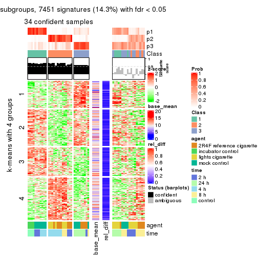
get_signatures(res, k = 4)
get_signatures(res, k = 5)
get_signatures(res, k = 6)
Signature heatmaps where rows are not scaled:
get_signatures(res, k = 2, scale_rows = FALSE)
get_signatures(res, k = 3, scale_rows = FALSE)
get_signatures(res, k = 4, scale_rows = FALSE)
get_signatures(res, k = 5, scale_rows = FALSE)
get_signatures(res, k = 6, scale_rows = FALSE)
Compare the overlap of signatures from different k:
compare_signatures(res)
get_signature() returns a data frame invisibly. TO get the list of signatures, the function
call should be assigned to a variable explicitly. In following code, if plot argument is set
to FALSE, no heatmap is plotted while only the differential analysis is performed.
# code only for demonstration
tb = get_signature(res, k = ..., plot = FALSE)
An example of the output of tb is:
#> which_row fdr mean_1 mean_2 scaled_mean_1 scaled_mean_2 km
#> 1 38 0.042760348 8.373488 9.131774 -0.5533452 0.5164555 1
#> 2 40 0.018707592 7.106213 8.469186 -0.6173731 0.5762149 1
#> 3 55 0.019134737 10.221463 11.207825 -0.6159697 0.5749050 1
#> 4 59 0.006059896 5.921854 7.869574 -0.6899429 0.6439467 1
#> 5 60 0.018055526 8.928898 10.211722 -0.6204761 0.5791110 1
#> 6 98 0.009384629 15.714769 14.887706 0.6635654 -0.6193277 2
...
The columns in tb are:
which_row: row indices corresponding to the input matrix.fdr: FDR for the differential test. mean_x: The mean value in group x.scaled_mean_x: The mean value in group x after rows are scaled.km: Row groups if k-means clustering is applied to rows.UMAP plot which shows how samples are separated.
dimension_reduction(res, k = 2, method = "UMAP")
dimension_reduction(res, k = 3, method = "UMAP")
dimension_reduction(res, k = 4, method = "UMAP")
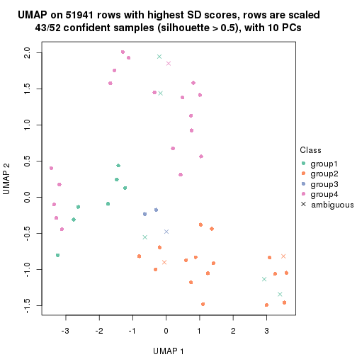
dimension_reduction(res, k = 5, method = "UMAP")
dimension_reduction(res, k = 6, method = "UMAP")
Following heatmap shows how subgroups are split when increasing k:
collect_classes(res)
Test correlation between subgroups and known annotations. If the known annotation is numeric, one-way ANOVA test is applied, and if the known annotation is discrete, chi-squared contingency table test is applied.
test_to_known_factors(res)
#> n agent(p) time(p) k
#> SD:mclust 20 1.70e-04 1.37e-02 2
#> SD:mclust 34 1.51e-05 1.81e-05 3
#> SD:mclust 43 5.77e-04 3.06e-05 4
#> SD:mclust 37 3.43e-05 1.18e-05 5
#> SD:mclust 27 1.02e-03 8.44e-05 6
If matrix rows can be associated to genes, consider to use GO_Enrichment(res,
...) to perform function enrichment for the signature genes.
The object with results only for a single top-value method and a single partition method can be extracted as:
res = res_list["SD", "NMF"]
# you can also extract it by
# res = res_list["SD:NMF"]
A summary of res and all the functions that can be applied to it:
res
#> A 'ConsensusPartition' object with k = 2, 3, 4, 5, 6.
#> On a matrix with 51941 rows and 52 columns.
#> Top rows (1000, 2000, 3000, 4000, 5000) are extracted by 'SD' method.
#> Subgroups are detected by 'NMF' method.
#> Performed in total 1250 partitions by row resampling.
#> Best k for subgroups seems to be 2.
#>
#> Following methods can be applied to this 'ConsensusPartition' object:
#> [1] "cola_report" "collect_classes" "collect_plots"
#> [4] "collect_stats" "colnames" "compare_signatures"
#> [7] "consensus_heatmap" "dimension_reduction" "functional_enrichment"
#> [10] "get_anno_col" "get_anno" "get_classes"
#> [13] "get_consensus" "get_matrix" "get_membership"
#> [16] "get_param" "get_signatures" "get_stats"
#> [19] "is_best_k" "is_stable_k" "membership_heatmap"
#> [22] "ncol" "nrow" "plot_ecdf"
#> [25] "rownames" "select_partition_number" "show"
#> [28] "suggest_best_k" "test_to_known_factors"
collect_plots() function collects all the plots made from res for all k (number of partitions)
into one single page to provide an easy and fast comparison between different k.
collect_plots(res)
The plots are:
k and the heatmap of
predicted classes for each k.k.k.k.All the plots in panels can be made by individual functions and they are plotted later in this section.
select_partition_number() produces several plots showing different
statistics for choosing “optimized” k. There are following statistics:
k;k, the area increased is defined as \(A_k - A_{k-1}\).The detailed explanations of these statistics can be found in the cola vignette.
Generally speaking, lower PAC score, higher mean silhouette score or higher
concordance corresponds to better partition. Rand index and Jaccard index
measure how similar the current partition is compared to partition with k-1.
If they are too similar, we won't accept k is better than k-1.
select_partition_number(res)
The numeric values for all these statistics can be obtained by get_stats().
get_stats(res)
#> k 1-PAC mean_silhouette concordance area_increased Rand Jaccard
#> 2 2 0.141 0.682 0.820 0.4842 0.491 0.491
#> 3 3 0.302 0.595 0.771 0.3641 0.710 0.475
#> 4 4 0.403 0.443 0.683 0.1162 0.928 0.791
#> 5 5 0.423 0.296 0.606 0.0647 0.927 0.767
#> 6 6 0.481 0.276 0.555 0.0431 0.953 0.821
suggest_best_k() suggests the best \(k\) based on these statistics. The rules are as follows:
NA.suggest_best_k(res)
#> [1] 2
Following shows the table of the partitions (You need to click the show/hide
code output link to see it). The membership matrix (columns with name p*)
is inferred by
clue::cl_consensus()
function with the SE method. Basically the value in the membership matrix
represents the probability to belong to a certain group. The finall class
label for an item is determined with the group with highest probability it
belongs to.
In get_classes() function, the entropy is calculated from the membership
matrix and the silhouette score is calculated from the consensus matrix.
cbind(get_classes(res, k = 2), get_membership(res, k = 2))
#> class entropy silhouette p1 p2
#> GSM270543 1 0.2043 0.8299 0.968 0.032
#> GSM270544 1 0.3879 0.8133 0.924 0.076
#> GSM270545 1 0.0938 0.8291 0.988 0.012
#> GSM270546 1 0.4022 0.7926 0.920 0.080
#> GSM270547 1 0.0672 0.8293 0.992 0.008
#> GSM270548 1 0.2236 0.8268 0.964 0.036
#> GSM270549 1 0.2043 0.8279 0.968 0.032
#> GSM270550 1 0.0376 0.8287 0.996 0.004
#> GSM270551 2 0.8267 0.7050 0.260 0.740
#> GSM270552 1 0.8386 0.5823 0.732 0.268
#> GSM270553 1 0.8813 0.4832 0.700 0.300
#> GSM270554 1 0.8763 0.5144 0.704 0.296
#> GSM270555 2 0.8386 0.6932 0.268 0.732
#> GSM270556 2 0.8763 0.6789 0.296 0.704
#> GSM270557 2 0.7883 0.7234 0.236 0.764
#> GSM270558 2 0.8327 0.6970 0.264 0.736
#> GSM270559 2 0.6247 0.7464 0.156 0.844
#> GSM270560 2 0.2236 0.7250 0.036 0.964
#> GSM270561 2 0.7453 0.6776 0.212 0.788
#> GSM270562 2 0.5294 0.7226 0.120 0.880
#> GSM270563 2 0.7139 0.6810 0.196 0.804
#> GSM270564 2 0.8955 0.5481 0.312 0.688
#> GSM270565 2 0.4431 0.7169 0.092 0.908
#> GSM270566 2 0.6887 0.6965 0.184 0.816
#> GSM270567 1 0.5408 0.7831 0.876 0.124
#> GSM270568 2 0.7674 0.7410 0.224 0.776
#> GSM270569 2 0.6247 0.7507 0.156 0.844
#> GSM270570 2 0.9323 0.5081 0.348 0.652
#> GSM270571 1 0.8661 0.5326 0.712 0.288
#> GSM270572 2 0.9710 0.5054 0.400 0.600
#> GSM270573 2 0.8207 0.7063 0.256 0.744
#> GSM270574 2 0.8327 0.7025 0.264 0.736
#> GSM270575 2 0.5842 0.7500 0.140 0.860
#> GSM270576 2 0.7815 0.7312 0.232 0.768
#> GSM270577 2 0.8608 0.7066 0.284 0.716
#> GSM270578 2 0.8081 0.6399 0.248 0.752
#> GSM270579 1 0.9922 0.1376 0.552 0.448
#> GSM270580 2 0.1414 0.7196 0.020 0.980
#> GSM270581 2 0.9993 0.0471 0.484 0.516
#> GSM270582 2 0.9795 0.3121 0.416 0.584
#> GSM270583 2 0.4939 0.7410 0.108 0.892
#> GSM270584 1 0.6247 0.7120 0.844 0.156
#> GSM270585 1 0.9358 0.4228 0.648 0.352
#> GSM270586 1 0.7139 0.6743 0.804 0.196
#> GSM270587 1 0.1633 0.8279 0.976 0.024
#> GSM270588 1 0.6343 0.7197 0.840 0.160
#> GSM270589 1 0.3274 0.8139 0.940 0.060
#> GSM270590 1 0.4431 0.7849 0.908 0.092
#> GSM270591 1 0.0672 0.8304 0.992 0.008
#> GSM270592 1 0.0938 0.8292 0.988 0.012
#> GSM270593 1 0.1633 0.8260 0.976 0.024
#> GSM270594 1 0.1843 0.8291 0.972 0.028
cbind(get_classes(res, k = 3), get_membership(res, k = 3))
#> class entropy silhouette p1 p2 p3
#> GSM270543 1 0.679 0.7207 0.744 0.124 0.132
#> GSM270544 1 0.654 0.6731 0.736 0.204 0.060
#> GSM270545 1 0.162 0.7961 0.964 0.024 0.012
#> GSM270546 1 0.368 0.7610 0.876 0.116 0.008
#> GSM270547 1 0.337 0.7934 0.908 0.052 0.040
#> GSM270548 1 0.357 0.7903 0.900 0.060 0.040
#> GSM270549 1 0.371 0.7974 0.892 0.032 0.076
#> GSM270550 1 0.165 0.7958 0.960 0.004 0.036
#> GSM270551 3 0.524 0.6321 0.028 0.168 0.804
#> GSM270552 3 0.696 0.1762 0.412 0.020 0.568
#> GSM270553 3 0.695 0.2795 0.408 0.020 0.572
#> GSM270554 3 0.689 0.1885 0.432 0.016 0.552
#> GSM270555 3 0.303 0.6908 0.048 0.032 0.920
#> GSM270556 3 0.526 0.6765 0.088 0.084 0.828
#> GSM270557 3 0.472 0.6351 0.016 0.160 0.824
#> GSM270558 3 0.290 0.6893 0.028 0.048 0.924
#> GSM270559 3 0.570 0.5235 0.012 0.252 0.736
#> GSM270560 2 0.590 0.4639 0.000 0.648 0.352
#> GSM270561 2 0.504 0.7184 0.048 0.832 0.120
#> GSM270562 2 0.406 0.7270 0.020 0.868 0.112
#> GSM270563 2 0.346 0.7299 0.024 0.900 0.076
#> GSM270564 2 0.460 0.7137 0.108 0.852 0.040
#> GSM270565 2 0.350 0.7159 0.004 0.880 0.116
#> GSM270566 2 0.409 0.7309 0.028 0.872 0.100
#> GSM270567 1 0.774 0.6080 0.672 0.204 0.124
#> GSM270568 3 0.638 0.6142 0.076 0.164 0.760
#> GSM270569 3 0.569 0.4988 0.008 0.268 0.724
#> GSM270570 3 0.939 0.2458 0.192 0.320 0.488
#> GSM270571 3 0.911 0.0495 0.424 0.140 0.436
#> GSM270572 3 0.399 0.6693 0.124 0.012 0.864
#> GSM270573 3 0.313 0.6879 0.032 0.052 0.916
#> GSM270574 3 0.303 0.6878 0.032 0.048 0.920
#> GSM270575 2 0.739 0.0587 0.032 0.500 0.468
#> GSM270576 2 0.745 0.5919 0.148 0.700 0.152
#> GSM270577 3 0.732 0.4822 0.068 0.264 0.668
#> GSM270578 2 0.454 0.7243 0.056 0.860 0.084
#> GSM270579 2 0.554 0.6217 0.236 0.752 0.012
#> GSM270580 2 0.586 0.4961 0.000 0.656 0.344
#> GSM270581 2 0.463 0.6752 0.164 0.824 0.012
#> GSM270582 2 0.563 0.6747 0.188 0.780 0.032
#> GSM270583 2 0.724 0.3822 0.032 0.576 0.392
#> GSM270584 1 0.520 0.6278 0.760 0.236 0.004
#> GSM270585 2 0.726 0.3277 0.372 0.592 0.036
#> GSM270586 1 0.643 0.3078 0.612 0.380 0.008
#> GSM270587 1 0.475 0.7423 0.816 0.012 0.172
#> GSM270588 1 0.670 0.3008 0.576 0.012 0.412
#> GSM270589 1 0.549 0.6733 0.756 0.012 0.232
#> GSM270590 1 0.613 0.6139 0.712 0.020 0.268
#> GSM270591 1 0.271 0.7852 0.912 0.000 0.088
#> GSM270592 1 0.311 0.7810 0.900 0.004 0.096
#> GSM270593 1 0.288 0.7868 0.904 0.000 0.096
#> GSM270594 1 0.164 0.7986 0.964 0.016 0.020
cbind(get_classes(res, k = 4), get_membership(res, k = 4))
#> class entropy silhouette p1 p2 p3 p4
#> GSM270543 4 0.759 0.3979 0.080 0.060 0.292 0.568
#> GSM270544 4 0.754 0.3181 0.020 0.128 0.328 0.524
#> GSM270545 4 0.252 0.6655 0.000 0.016 0.076 0.908
#> GSM270546 4 0.529 0.5777 0.000 0.056 0.224 0.720
#> GSM270547 4 0.493 0.6218 0.012 0.028 0.200 0.760
#> GSM270548 4 0.607 0.5173 0.024 0.032 0.296 0.648
#> GSM270549 4 0.546 0.6127 0.040 0.028 0.184 0.748
#> GSM270550 4 0.307 0.6733 0.016 0.020 0.068 0.896
#> GSM270551 1 0.609 0.4190 0.620 0.040 0.328 0.012
#> GSM270552 1 0.778 0.1785 0.488 0.020 0.148 0.344
#> GSM270553 1 0.707 0.3043 0.568 0.008 0.124 0.300
#> GSM270554 1 0.740 0.3110 0.564 0.016 0.148 0.272
#> GSM270555 1 0.374 0.5820 0.864 0.012 0.080 0.044
#> GSM270556 1 0.544 0.5292 0.708 0.012 0.248 0.032
#> GSM270557 1 0.580 0.4550 0.652 0.032 0.304 0.012
#> GSM270558 1 0.332 0.5861 0.884 0.016 0.076 0.024
#> GSM270559 1 0.606 0.4485 0.668 0.080 0.248 0.004
#> GSM270560 2 0.724 0.2000 0.312 0.520 0.168 0.000
#> GSM270561 2 0.462 0.6027 0.072 0.824 0.080 0.024
#> GSM270562 2 0.484 0.5540 0.052 0.764 0.184 0.000
#> GSM270563 2 0.238 0.6222 0.024 0.924 0.048 0.004
#> GSM270564 2 0.266 0.6194 0.012 0.916 0.024 0.048
#> GSM270565 2 0.339 0.6083 0.056 0.872 0.072 0.000
#> GSM270566 2 0.430 0.5969 0.044 0.816 0.136 0.004
#> GSM270567 4 0.847 0.2938 0.092 0.280 0.120 0.508
#> GSM270568 1 0.666 0.4973 0.688 0.140 0.136 0.036
#> GSM270569 1 0.663 0.3898 0.624 0.160 0.216 0.000
#> GSM270570 2 0.950 -0.1128 0.340 0.340 0.184 0.136
#> GSM270571 3 0.872 -0.1118 0.228 0.044 0.380 0.348
#> GSM270572 1 0.487 0.5188 0.796 0.008 0.088 0.108
#> GSM270573 1 0.411 0.5576 0.832 0.012 0.128 0.028
#> GSM270574 1 0.436 0.5612 0.836 0.036 0.096 0.032
#> GSM270575 3 0.790 -0.0414 0.280 0.276 0.440 0.004
#> GSM270576 2 0.796 0.0290 0.108 0.448 0.400 0.044
#> GSM270577 1 0.815 0.1889 0.536 0.236 0.180 0.048
#> GSM270578 2 0.729 0.2285 0.048 0.508 0.392 0.052
#> GSM270579 2 0.506 0.5644 0.004 0.776 0.092 0.128
#> GSM270580 2 0.680 0.3512 0.260 0.592 0.148 0.000
#> GSM270581 2 0.361 0.6063 0.000 0.860 0.080 0.060
#> GSM270582 2 0.282 0.6132 0.008 0.904 0.020 0.068
#> GSM270583 2 0.770 0.3578 0.240 0.580 0.136 0.044
#> GSM270584 4 0.606 0.4496 0.004 0.288 0.064 0.644
#> GSM270585 2 0.631 0.4736 0.020 0.696 0.104 0.180
#> GSM270586 2 0.675 0.1316 0.004 0.524 0.084 0.388
#> GSM270587 4 0.591 0.5956 0.092 0.040 0.120 0.748
#> GSM270588 4 0.747 0.2409 0.344 0.012 0.136 0.508
#> GSM270589 4 0.677 0.5267 0.168 0.036 0.120 0.676
#> GSM270590 4 0.787 0.4471 0.224 0.068 0.124 0.584
#> GSM270591 4 0.250 0.6664 0.044 0.004 0.032 0.920
#> GSM270592 4 0.303 0.6543 0.048 0.004 0.052 0.896
#> GSM270593 4 0.335 0.6611 0.044 0.000 0.084 0.872
#> GSM270594 4 0.300 0.6724 0.008 0.024 0.072 0.896
cbind(get_classes(res, k = 5), get_membership(res, k = 5))
#> class entropy silhouette p1 p2 p3 p4 p5
#> GSM270543 4 0.712 0.4149 0.064 0.040 0.068 0.584 0.244
#> GSM270544 4 0.693 0.3847 0.084 0.040 0.020 0.532 0.324
#> GSM270545 4 0.233 0.5806 0.028 0.016 0.000 0.916 0.040
#> GSM270546 4 0.429 0.5596 0.028 0.032 0.000 0.784 0.156
#> GSM270547 4 0.413 0.5649 0.032 0.008 0.008 0.792 0.160
#> GSM270548 4 0.573 0.4811 0.040 0.004 0.036 0.628 0.292
#> GSM270549 4 0.653 0.4763 0.096 0.012 0.048 0.624 0.220
#> GSM270550 4 0.333 0.5599 0.080 0.016 0.016 0.868 0.020
#> GSM270551 3 0.731 0.2103 0.124 0.024 0.552 0.052 0.248
#> GSM270552 3 0.824 0.2064 0.256 0.020 0.444 0.180 0.100
#> GSM270553 3 0.791 0.1210 0.304 0.004 0.412 0.200 0.080
#> GSM270554 3 0.747 0.1603 0.348 0.008 0.448 0.140 0.056
#> GSM270555 3 0.563 0.4208 0.296 0.000 0.620 0.016 0.068
#> GSM270556 3 0.566 0.4331 0.084 0.012 0.728 0.060 0.116
#> GSM270557 3 0.615 0.2481 0.096 0.032 0.656 0.012 0.204
#> GSM270558 3 0.407 0.4819 0.180 0.000 0.780 0.012 0.028
#> GSM270559 3 0.575 0.3032 0.060 0.044 0.696 0.012 0.188
#> GSM270560 2 0.697 -0.1029 0.036 0.492 0.316 0.000 0.156
#> GSM270561 2 0.454 0.5380 0.088 0.800 0.032 0.008 0.072
#> GSM270562 2 0.629 0.3415 0.072 0.644 0.052 0.012 0.220
#> GSM270563 2 0.223 0.5398 0.004 0.908 0.012 0.000 0.076
#> GSM270564 2 0.333 0.5543 0.048 0.872 0.008 0.020 0.052
#> GSM270565 2 0.381 0.4966 0.016 0.824 0.044 0.000 0.116
#> GSM270566 2 0.472 0.4681 0.020 0.756 0.048 0.004 0.172
#> GSM270567 4 0.932 0.0449 0.148 0.240 0.132 0.372 0.108
#> GSM270568 3 0.718 0.4054 0.116 0.088 0.632 0.056 0.108
#> GSM270569 3 0.614 0.2682 0.036 0.104 0.700 0.040 0.120
#> GSM270570 3 0.912 0.0743 0.140 0.272 0.380 0.096 0.112
#> GSM270571 1 0.862 0.1297 0.376 0.020 0.120 0.244 0.240
#> GSM270572 1 0.576 -0.2428 0.512 0.000 0.424 0.028 0.036
#> GSM270573 3 0.578 0.2579 0.440 0.000 0.472 0.000 0.088
#> GSM270574 3 0.546 0.2292 0.460 0.012 0.492 0.000 0.036
#> GSM270575 5 0.798 0.0000 0.056 0.260 0.240 0.016 0.428
#> GSM270576 2 0.763 -0.4271 0.020 0.416 0.136 0.048 0.380
#> GSM270577 3 0.846 0.0032 0.204 0.220 0.412 0.012 0.152
#> GSM270578 2 0.740 -0.0486 0.048 0.492 0.048 0.068 0.344
#> GSM270579 2 0.542 0.4873 0.032 0.732 0.008 0.108 0.120
#> GSM270580 2 0.621 0.2253 0.024 0.596 0.264 0.000 0.116
#> GSM270581 2 0.381 0.5437 0.024 0.832 0.000 0.048 0.096
#> GSM270582 2 0.355 0.5482 0.040 0.860 0.004 0.056 0.040
#> GSM270583 2 0.856 0.0466 0.116 0.432 0.268 0.044 0.140
#> GSM270584 4 0.732 0.2436 0.152 0.264 0.008 0.520 0.056
#> GSM270585 2 0.666 0.4193 0.100 0.660 0.024 0.124 0.092
#> GSM270586 2 0.756 0.1640 0.132 0.460 0.000 0.308 0.100
#> GSM270587 4 0.614 -0.0866 0.436 0.052 0.000 0.476 0.036
#> GSM270588 1 0.625 0.3707 0.632 0.020 0.144 0.196 0.008
#> GSM270589 1 0.628 0.0881 0.488 0.036 0.028 0.428 0.020
#> GSM270590 1 0.686 0.3039 0.528 0.060 0.052 0.340 0.020
#> GSM270591 4 0.374 0.4984 0.168 0.008 0.004 0.804 0.016
#> GSM270592 4 0.485 0.3261 0.296 0.008 0.004 0.668 0.024
#> GSM270593 4 0.451 0.5088 0.108 0.004 0.072 0.792 0.024
#> GSM270594 4 0.340 0.5524 0.096 0.000 0.016 0.852 0.036
cbind(get_classes(res, k = 6), get_membership(res, k = 6))
#> class entropy silhouette p1 p2 p3 p4 p5 p6
#> GSM270543 4 0.723 0.35631 0.040 0.032 0.228 0.548 0.088 0.064
#> GSM270544 4 0.683 0.34763 0.076 0.020 0.324 0.504 0.056 0.020
#> GSM270545 4 0.228 0.54358 0.040 0.008 0.020 0.912 0.020 0.000
#> GSM270546 4 0.401 0.52986 0.004 0.016 0.148 0.780 0.052 0.000
#> GSM270547 4 0.386 0.53775 0.012 0.000 0.144 0.784 0.060 0.000
#> GSM270548 4 0.600 0.42971 0.028 0.004 0.232 0.612 0.104 0.020
#> GSM270549 4 0.730 0.35999 0.064 0.016 0.188 0.512 0.196 0.024
#> GSM270550 4 0.433 0.46819 0.168 0.004 0.016 0.756 0.052 0.004
#> GSM270551 6 0.762 0.25778 0.044 0.008 0.172 0.088 0.200 0.488
#> GSM270552 6 0.835 0.06156 0.244 0.004 0.060 0.120 0.236 0.336
#> GSM270553 6 0.846 0.27350 0.224 0.004 0.100 0.104 0.204 0.364
#> GSM270554 6 0.789 0.17308 0.324 0.008 0.044 0.068 0.200 0.356
#> GSM270555 6 0.583 0.39880 0.248 0.000 0.012 0.024 0.116 0.600
#> GSM270556 6 0.580 0.40928 0.040 0.000 0.124 0.032 0.136 0.668
#> GSM270557 6 0.669 0.31593 0.060 0.012 0.196 0.044 0.088 0.600
#> GSM270558 6 0.439 0.48200 0.120 0.004 0.024 0.016 0.056 0.780
#> GSM270559 6 0.547 0.33073 0.024 0.036 0.168 0.020 0.048 0.704
#> GSM270560 2 0.750 -0.14228 0.020 0.400 0.212 0.000 0.088 0.280
#> GSM270561 2 0.462 0.48364 0.120 0.764 0.048 0.004 0.056 0.008
#> GSM270562 2 0.689 0.16028 0.040 0.544 0.276 0.024 0.056 0.060
#> GSM270563 2 0.428 0.47108 0.008 0.776 0.120 0.012 0.080 0.004
#> GSM270564 2 0.313 0.51395 0.040 0.872 0.016 0.020 0.048 0.004
#> GSM270565 2 0.448 0.44066 0.016 0.768 0.120 0.000 0.072 0.024
#> GSM270566 2 0.622 0.30962 0.024 0.636 0.196 0.024 0.084 0.036
#> GSM270567 5 0.917 0.00000 0.160 0.200 0.036 0.196 0.312 0.096
#> GSM270568 6 0.744 0.34208 0.084 0.068 0.052 0.040 0.212 0.544
#> GSM270569 6 0.717 0.31390 0.044 0.068 0.120 0.028 0.160 0.580
#> GSM270570 6 0.912 -0.16906 0.120 0.208 0.060 0.064 0.264 0.284
#> GSM270571 1 0.890 0.07172 0.328 0.028 0.252 0.184 0.108 0.100
#> GSM270572 1 0.506 -0.11069 0.592 0.000 0.028 0.008 0.024 0.348
#> GSM270573 6 0.638 0.25402 0.424 0.012 0.048 0.004 0.076 0.436
#> GSM270574 6 0.593 0.25319 0.444 0.008 0.044 0.004 0.048 0.452
#> GSM270575 3 0.714 0.43026 0.028 0.148 0.536 0.012 0.068 0.208
#> GSM270576 3 0.756 0.48997 0.008 0.284 0.464 0.064 0.064 0.116
#> GSM270577 6 0.906 -0.00939 0.184 0.212 0.172 0.020 0.108 0.304
#> GSM270578 3 0.723 0.47033 0.000 0.260 0.500 0.108 0.064 0.068
#> GSM270579 2 0.673 0.32799 0.028 0.604 0.156 0.112 0.088 0.012
#> GSM270580 2 0.698 0.09165 0.028 0.504 0.128 0.000 0.072 0.268
#> GSM270581 2 0.413 0.47545 0.020 0.808 0.064 0.024 0.080 0.004
#> GSM270582 2 0.453 0.50148 0.028 0.792 0.072 0.048 0.052 0.008
#> GSM270583 2 0.835 -0.11551 0.100 0.396 0.056 0.020 0.208 0.220
#> GSM270584 4 0.756 -0.34991 0.184 0.316 0.012 0.364 0.124 0.000
#> GSM270585 2 0.708 -0.04673 0.140 0.544 0.036 0.108 0.172 0.000
#> GSM270586 2 0.777 -0.23688 0.144 0.436 0.044 0.240 0.136 0.000
#> GSM270587 1 0.494 0.29698 0.588 0.040 0.008 0.356 0.008 0.000
#> GSM270588 1 0.540 0.42755 0.696 0.012 0.008 0.148 0.028 0.108
#> GSM270589 1 0.583 0.41624 0.612 0.044 0.012 0.272 0.048 0.012
#> GSM270590 1 0.635 0.37463 0.584 0.076 0.024 0.264 0.036 0.016
#> GSM270591 4 0.424 0.34012 0.280 0.004 0.000 0.680 0.036 0.000
#> GSM270592 4 0.477 0.09916 0.396 0.004 0.000 0.560 0.036 0.004
#> GSM270593 4 0.545 0.42823 0.176 0.004 0.020 0.692 0.056 0.052
#> GSM270594 4 0.479 0.48186 0.136 0.012 0.016 0.752 0.064 0.020
Heatmaps for the consensus matrix. It visualizes the probability of two samples to be in a same group.
consensus_heatmap(res, k = 2)
consensus_heatmap(res, k = 3)
consensus_heatmap(res, k = 4)
consensus_heatmap(res, k = 5)
consensus_heatmap(res, k = 6)
Heatmaps for the membership of samples in all partitions to see how consistent they are:
membership_heatmap(res, k = 2)
membership_heatmap(res, k = 3)
membership_heatmap(res, k = 4)
membership_heatmap(res, k = 5)
membership_heatmap(res, k = 6)
As soon as we have had the classes for columns, we can look for signatures which are significantly different between classes which can be candidate marks for certain classes. Following are the heatmaps for signatures.
Signature heatmaps where rows are scaled:
get_signatures(res, k = 2)
get_signatures(res, k = 3)
get_signatures(res, k = 4)
get_signatures(res, k = 5)
get_signatures(res, k = 6)

Signature heatmaps where rows are not scaled:
get_signatures(res, k = 2, scale_rows = FALSE)
get_signatures(res, k = 3, scale_rows = FALSE)
get_signatures(res, k = 4, scale_rows = FALSE)
get_signatures(res, k = 5, scale_rows = FALSE)
get_signatures(res, k = 6, scale_rows = FALSE)

Compare the overlap of signatures from different k:
compare_signatures(res)
get_signature() returns a data frame invisibly. TO get the list of signatures, the function
call should be assigned to a variable explicitly. In following code, if plot argument is set
to FALSE, no heatmap is plotted while only the differential analysis is performed.
# code only for demonstration
tb = get_signature(res, k = ..., plot = FALSE)
An example of the output of tb is:
#> which_row fdr mean_1 mean_2 scaled_mean_1 scaled_mean_2 km
#> 1 38 0.042760348 8.373488 9.131774 -0.5533452 0.5164555 1
#> 2 40 0.018707592 7.106213 8.469186 -0.6173731 0.5762149 1
#> 3 55 0.019134737 10.221463 11.207825 -0.6159697 0.5749050 1
#> 4 59 0.006059896 5.921854 7.869574 -0.6899429 0.6439467 1
#> 5 60 0.018055526 8.928898 10.211722 -0.6204761 0.5791110 1
#> 6 98 0.009384629 15.714769 14.887706 0.6635654 -0.6193277 2
...
The columns in tb are:
which_row: row indices corresponding to the input matrix.fdr: FDR for the differential test. mean_x: The mean value in group x.scaled_mean_x: The mean value in group x after rows are scaled.km: Row groups if k-means clustering is applied to rows.UMAP plot which shows how samples are separated.
dimension_reduction(res, k = 2, method = "UMAP")
dimension_reduction(res, k = 3, method = "UMAP")
dimension_reduction(res, k = 4, method = "UMAP")
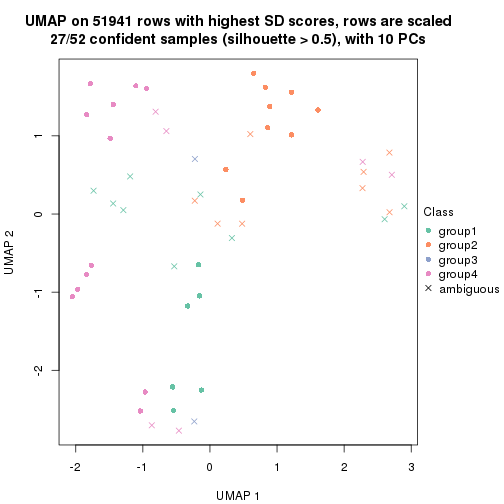
dimension_reduction(res, k = 5, method = "UMAP")
dimension_reduction(res, k = 6, method = "UMAP")
Following heatmap shows how subgroups are split when increasing k:
collect_classes(res)
Test correlation between subgroups and known annotations. If the known annotation is numeric, one-way ANOVA test is applied, and if the known annotation is discrete, chi-squared contingency table test is applied.
test_to_known_factors(res)
#> n agent(p) time(p) k
#> SD:NMF 47 0.00226 0.230301 2
#> SD:NMF 38 0.00163 0.000770 3
#> SD:NMF 27 0.00384 0.000305 4
#> SD:NMF 11 0.01173 0.230693 5
#> SD:NMF 5 0.08208 0.576150 6
If matrix rows can be associated to genes, consider to use GO_Enrichment(res,
...) to perform function enrichment for the signature genes.
The object with results only for a single top-value method and a single partition method can be extracted as:
res = res_list["CV", "hclust"]
# you can also extract it by
# res = res_list["CV:hclust"]
A summary of res and all the functions that can be applied to it:
res
#> A 'ConsensusPartition' object with k = 2, 3, 4, 5, 6.
#> On a matrix with 51941 rows and 52 columns.
#> Top rows (1000, 2000, 3000, 4000, 5000) are extracted by 'CV' method.
#> Subgroups are detected by 'hclust' method.
#> Performed in total 1250 partitions by row resampling.
#> Best k for subgroups seems to be 3.
#>
#> Following methods can be applied to this 'ConsensusPartition' object:
#> [1] "cola_report" "collect_classes" "collect_plots"
#> [4] "collect_stats" "colnames" "compare_signatures"
#> [7] "consensus_heatmap" "dimension_reduction" "functional_enrichment"
#> [10] "get_anno_col" "get_anno" "get_classes"
#> [13] "get_consensus" "get_matrix" "get_membership"
#> [16] "get_param" "get_signatures" "get_stats"
#> [19] "is_best_k" "is_stable_k" "membership_heatmap"
#> [22] "ncol" "nrow" "plot_ecdf"
#> [25] "rownames" "select_partition_number" "show"
#> [28] "suggest_best_k" "test_to_known_factors"
collect_plots() function collects all the plots made from res for all k (number of partitions)
into one single page to provide an easy and fast comparison between different k.
collect_plots(res)
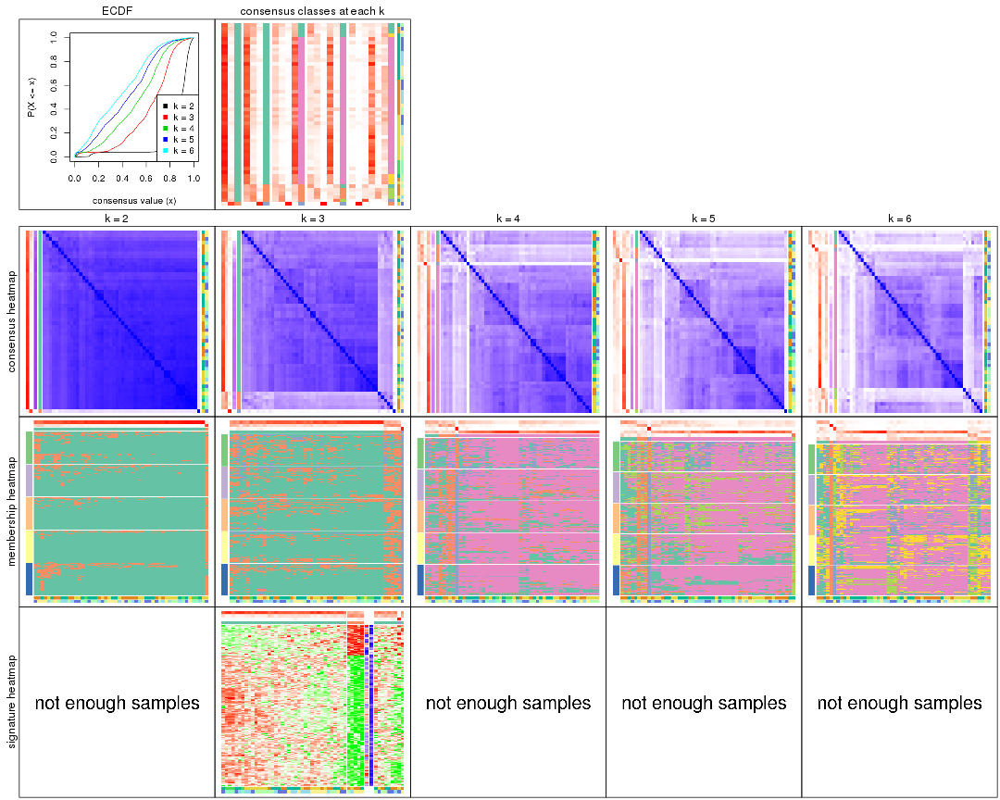
The plots are:
k and the heatmap of
predicted classes for each k.k.k.k.All the plots in panels can be made by individual functions and they are plotted later in this section.
select_partition_number() produces several plots showing different
statistics for choosing “optimized” k. There are following statistics:
k;k, the area increased is defined as \(A_k - A_{k-1}\).The detailed explanations of these statistics can be found in the cola vignette.
Generally speaking, lower PAC score, higher mean silhouette score or higher
concordance corresponds to better partition. Rand index and Jaccard index
measure how similar the current partition is compared to partition with k-1.
If they are too similar, we won't accept k is better than k-1.
select_partition_number(res)
The numeric values for all these statistics can be obtained by get_stats().
get_stats(res)
#> k 1-PAC mean_silhouette concordance area_increased Rand Jaccard
#> 2 2 0.5425 0.895 0.922 0.146 0.962 0.962
#> 3 3 0.0332 0.603 0.780 1.510 0.827 0.820
#> 4 4 0.0612 0.458 0.695 0.314 0.873 0.839
#> 5 5 0.0859 0.443 0.651 0.172 0.992 0.988
#> 6 6 0.1284 0.227 0.593 0.105 0.906 0.859
suggest_best_k() suggests the best \(k\) based on these statistics. The rules are as follows:
NA.suggest_best_k(res)
#> [1] 3
Following shows the table of the partitions (You need to click the show/hide
code output link to see it). The membership matrix (columns with name p*)
is inferred by
clue::cl_consensus()
function with the SE method. Basically the value in the membership matrix
represents the probability to belong to a certain group. The finall class
label for an item is determined with the group with highest probability it
belongs to.
In get_classes() function, the entropy is calculated from the membership
matrix and the silhouette score is calculated from the consensus matrix.
cbind(get_classes(res, k = 2), get_membership(res, k = 2))
#> class entropy silhouette p1 p2
#> GSM270543 1 0.2423 0.938 0.960 0.040
#> GSM270544 1 0.4431 0.921 0.908 0.092
#> GSM270545 1 0.0938 0.936 0.988 0.012
#> GSM270546 1 0.2236 0.938 0.964 0.036
#> GSM270547 1 0.1633 0.939 0.976 0.024
#> GSM270548 1 0.4562 0.921 0.904 0.096
#> GSM270549 1 0.5842 0.880 0.860 0.140
#> GSM270550 1 0.0672 0.934 0.992 0.008
#> GSM270551 1 0.8386 0.685 0.732 0.268
#> GSM270552 1 0.4022 0.934 0.920 0.080
#> GSM270553 1 0.2423 0.940 0.960 0.040
#> GSM270554 1 0.3584 0.936 0.932 0.068
#> GSM270555 1 0.6712 0.858 0.824 0.176
#> GSM270556 1 0.5178 0.911 0.884 0.116
#> GSM270557 1 0.3733 0.935 0.928 0.072
#> GSM270558 1 0.3431 0.935 0.936 0.064
#> GSM270559 1 0.7745 0.782 0.772 0.228
#> GSM270560 1 0.2948 0.939 0.948 0.052
#> GSM270561 1 0.2236 0.939 0.964 0.036
#> GSM270562 1 0.2778 0.938 0.952 0.048
#> GSM270563 1 0.4161 0.927 0.916 0.084
#> GSM270564 1 0.2603 0.939 0.956 0.044
#> GSM270565 1 0.3584 0.937 0.932 0.068
#> GSM270566 1 0.3114 0.939 0.944 0.056
#> GSM270567 1 0.2603 0.939 0.956 0.044
#> GSM270568 1 0.6438 0.878 0.836 0.164
#> GSM270569 1 0.8713 0.679 0.708 0.292
#> GSM270570 1 0.5946 0.879 0.856 0.144
#> GSM270571 1 0.5737 0.892 0.864 0.136
#> GSM270572 1 0.3733 0.932 0.928 0.072
#> GSM270573 1 0.7056 0.835 0.808 0.192
#> GSM270574 1 0.2948 0.938 0.948 0.052
#> GSM270575 2 0.5294 0.000 0.120 0.880
#> GSM270576 1 0.4022 0.921 0.920 0.080
#> GSM270577 1 0.3114 0.938 0.944 0.056
#> GSM270578 1 0.4939 0.902 0.892 0.108
#> GSM270579 1 0.2948 0.938 0.948 0.052
#> GSM270580 1 0.6148 0.869 0.848 0.152
#> GSM270581 1 0.2423 0.937 0.960 0.040
#> GSM270582 1 0.2043 0.937 0.968 0.032
#> GSM270583 1 0.4161 0.933 0.916 0.084
#> GSM270584 1 0.0672 0.936 0.992 0.008
#> GSM270585 1 0.2603 0.938 0.956 0.044
#> GSM270586 1 0.1184 0.936 0.984 0.016
#> GSM270587 1 0.2043 0.938 0.968 0.032
#> GSM270588 1 0.0938 0.935 0.988 0.012
#> GSM270589 1 0.1843 0.937 0.972 0.028
#> GSM270590 1 0.2236 0.938 0.964 0.036
#> GSM270591 1 0.0938 0.934 0.988 0.012
#> GSM270592 1 0.0938 0.936 0.988 0.012
#> GSM270593 1 0.3114 0.933 0.944 0.056
#> GSM270594 1 0.0938 0.933 0.988 0.012
cbind(get_classes(res, k = 3), get_membership(res, k = 3))
#> class entropy silhouette p1 p2 p3
#> GSM270543 1 0.481 0.6980 0.804 0.188 0.008
#> GSM270544 1 0.674 0.4876 0.656 0.316 0.028
#> GSM270545 1 0.268 0.7332 0.924 0.068 0.008
#> GSM270546 1 0.465 0.6990 0.816 0.176 0.008
#> GSM270547 1 0.329 0.7425 0.900 0.088 0.012
#> GSM270548 1 0.579 0.6581 0.772 0.192 0.036
#> GSM270549 1 0.689 0.6169 0.736 0.152 0.112
#> GSM270550 1 0.186 0.7345 0.948 0.052 0.000
#> GSM270551 2 0.870 0.5618 0.300 0.564 0.136
#> GSM270552 1 0.493 0.7184 0.820 0.156 0.024
#> GSM270553 1 0.486 0.7151 0.800 0.192 0.008
#> GSM270554 1 0.448 0.7282 0.844 0.136 0.020
#> GSM270555 1 0.797 -0.2637 0.504 0.436 0.060
#> GSM270556 1 0.672 0.2779 0.604 0.380 0.016
#> GSM270557 1 0.504 0.7003 0.808 0.172 0.020
#> GSM270558 1 0.594 0.6156 0.740 0.236 0.024
#> GSM270559 1 0.891 -0.1380 0.520 0.344 0.136
#> GSM270560 1 0.470 0.7196 0.812 0.180 0.008
#> GSM270561 1 0.429 0.7315 0.832 0.164 0.004
#> GSM270562 1 0.469 0.7265 0.820 0.168 0.012
#> GSM270563 1 0.670 0.3263 0.648 0.328 0.024
#> GSM270564 1 0.343 0.7509 0.884 0.112 0.004
#> GSM270565 1 0.517 0.6854 0.792 0.192 0.016
#> GSM270566 1 0.506 0.7260 0.800 0.184 0.016
#> GSM270567 1 0.371 0.7487 0.868 0.128 0.004
#> GSM270568 1 0.774 0.0117 0.548 0.400 0.052
#> GSM270569 2 0.928 0.5953 0.388 0.452 0.160
#> GSM270570 2 0.705 0.5482 0.456 0.524 0.020
#> GSM270571 1 0.775 0.3271 0.616 0.312 0.072
#> GSM270572 1 0.548 0.5895 0.732 0.264 0.004
#> GSM270573 2 0.768 0.5535 0.412 0.540 0.048
#> GSM270574 1 0.459 0.7099 0.820 0.172 0.008
#> GSM270575 3 0.117 0.0000 0.016 0.008 0.976
#> GSM270576 1 0.680 0.5250 0.708 0.236 0.056
#> GSM270577 1 0.491 0.6849 0.804 0.184 0.012
#> GSM270578 1 0.729 0.4718 0.696 0.212 0.092
#> GSM270579 1 0.486 0.7302 0.820 0.160 0.020
#> GSM270580 2 0.653 0.6519 0.368 0.620 0.012
#> GSM270581 1 0.400 0.7409 0.868 0.116 0.016
#> GSM270582 1 0.304 0.7449 0.896 0.104 0.000
#> GSM270583 1 0.576 0.6701 0.764 0.208 0.028
#> GSM270584 1 0.217 0.7351 0.944 0.048 0.008
#> GSM270585 1 0.460 0.7355 0.832 0.152 0.016
#> GSM270586 1 0.286 0.7420 0.912 0.084 0.004
#> GSM270587 1 0.311 0.7431 0.900 0.096 0.004
#> GSM270588 1 0.236 0.7426 0.928 0.072 0.000
#> GSM270589 1 0.296 0.7438 0.900 0.100 0.000
#> GSM270590 1 0.286 0.7412 0.912 0.084 0.004
#> GSM270591 1 0.216 0.7350 0.936 0.064 0.000
#> GSM270592 1 0.245 0.7386 0.936 0.052 0.012
#> GSM270593 1 0.530 0.6879 0.804 0.164 0.032
#> GSM270594 1 0.216 0.7399 0.936 0.064 0.000
cbind(get_classes(res, k = 4), get_membership(res, k = 4))
#> class entropy silhouette p1 p2 p3 p4
#> GSM270543 4 0.4546 0.5669 0.256 0.012 0.000 0.732
#> GSM270544 4 0.7144 -0.0527 0.388 0.080 0.020 0.512
#> GSM270545 4 0.2860 0.6397 0.100 0.008 0.004 0.888
#> GSM270546 4 0.4360 0.5625 0.248 0.008 0.000 0.744
#> GSM270547 4 0.4113 0.6396 0.136 0.024 0.012 0.828
#> GSM270548 4 0.5954 0.4999 0.252 0.040 0.024 0.684
#> GSM270549 4 0.6809 0.4147 0.240 0.020 0.104 0.636
#> GSM270550 4 0.1792 0.6490 0.068 0.000 0.000 0.932
#> GSM270551 2 0.7879 0.2853 0.208 0.584 0.060 0.148
#> GSM270552 4 0.5438 0.5259 0.232 0.020 0.028 0.720
#> GSM270553 4 0.5502 0.5732 0.212 0.056 0.008 0.724
#> GSM270554 4 0.4916 0.5771 0.196 0.020 0.020 0.764
#> GSM270555 1 0.8857 0.2632 0.376 0.260 0.048 0.316
#> GSM270556 1 0.7441 0.4782 0.440 0.132 0.008 0.420
#> GSM270557 4 0.6530 0.4540 0.232 0.088 0.020 0.660
#> GSM270558 4 0.7082 0.1796 0.276 0.116 0.016 0.592
#> GSM270559 1 0.9081 0.4887 0.412 0.148 0.112 0.328
#> GSM270560 4 0.5539 0.5747 0.224 0.060 0.004 0.712
#> GSM270561 4 0.4630 0.6103 0.196 0.036 0.000 0.768
#> GSM270562 4 0.5120 0.6085 0.196 0.044 0.008 0.752
#> GSM270563 4 0.7567 -0.0634 0.308 0.160 0.012 0.520
#> GSM270564 4 0.3606 0.6573 0.140 0.020 0.000 0.840
#> GSM270565 4 0.5788 0.5233 0.176 0.104 0.004 0.716
#> GSM270566 4 0.5246 0.5920 0.216 0.048 0.004 0.732
#> GSM270567 4 0.3913 0.6512 0.148 0.028 0.000 0.824
#> GSM270568 1 0.8106 0.4554 0.440 0.140 0.036 0.384
#> GSM270569 2 0.9642 0.2195 0.268 0.356 0.140 0.236
#> GSM270570 2 0.7743 0.2600 0.256 0.436 0.000 0.308
#> GSM270571 4 0.7875 -0.0945 0.348 0.108 0.044 0.500
#> GSM270572 4 0.6899 0.1386 0.284 0.116 0.008 0.592
#> GSM270573 2 0.8536 0.0860 0.344 0.392 0.032 0.232
#> GSM270574 4 0.5466 0.5605 0.200 0.060 0.008 0.732
#> GSM270575 3 0.0657 0.0000 0.000 0.004 0.984 0.012
#> GSM270576 4 0.7698 -0.0200 0.352 0.092 0.044 0.512
#> GSM270577 4 0.5896 0.4568 0.236 0.060 0.012 0.692
#> GSM270578 4 0.7527 0.1753 0.296 0.052 0.084 0.568
#> GSM270579 4 0.5394 0.5933 0.212 0.044 0.012 0.732
#> GSM270580 2 0.7007 0.4016 0.212 0.580 0.000 0.208
#> GSM270581 4 0.4239 0.6423 0.152 0.032 0.004 0.812
#> GSM270582 4 0.3335 0.6512 0.128 0.016 0.000 0.856
#> GSM270583 4 0.6174 0.3976 0.316 0.032 0.024 0.628
#> GSM270584 4 0.2164 0.6496 0.068 0.004 0.004 0.924
#> GSM270585 4 0.5042 0.6122 0.176 0.044 0.012 0.768
#> GSM270586 4 0.2928 0.6533 0.108 0.012 0.000 0.880
#> GSM270587 4 0.2799 0.6583 0.108 0.008 0.000 0.884
#> GSM270588 4 0.2401 0.6602 0.092 0.004 0.000 0.904
#> GSM270589 4 0.2675 0.6544 0.100 0.008 0.000 0.892
#> GSM270590 4 0.2859 0.6506 0.112 0.008 0.000 0.880
#> GSM270591 4 0.2530 0.6458 0.100 0.004 0.000 0.896
#> GSM270592 4 0.2234 0.6550 0.064 0.008 0.004 0.924
#> GSM270593 4 0.5694 0.5026 0.212 0.048 0.020 0.720
#> GSM270594 4 0.2546 0.6570 0.092 0.008 0.000 0.900
cbind(get_classes(res, k = 5), get_membership(res, k = 5))
#> class entropy silhouette p1 p2 p3 p4 p5
#> GSM270543 4 0.5589 0.5721 0.104 0.204 0.004 0.676 0.012
#> GSM270544 4 0.8160 0.0183 0.264 0.236 0.016 0.412 0.072
#> GSM270545 4 0.3177 0.6352 0.036 0.084 0.004 0.868 0.008
#> GSM270546 4 0.5541 0.5642 0.092 0.204 0.004 0.684 0.016
#> GSM270547 4 0.4531 0.6346 0.056 0.128 0.008 0.788 0.020
#> GSM270548 4 0.7240 0.4416 0.112 0.204 0.012 0.576 0.096
#> GSM270549 4 0.7677 0.4184 0.148 0.164 0.108 0.556 0.024
#> GSM270550 4 0.2053 0.6445 0.024 0.048 0.000 0.924 0.004
#> GSM270551 5 0.6155 0.0000 0.120 0.116 0.012 0.064 0.688
#> GSM270552 4 0.5966 0.5235 0.252 0.076 0.020 0.640 0.012
#> GSM270553 4 0.6003 0.5620 0.196 0.128 0.008 0.652 0.016
#> GSM270554 4 0.5271 0.5750 0.216 0.064 0.012 0.700 0.008
#> GSM270555 1 0.8417 0.2569 0.472 0.136 0.036 0.208 0.148
#> GSM270556 1 0.7868 0.3386 0.392 0.224 0.000 0.304 0.080
#> GSM270557 4 0.6817 0.4774 0.220 0.144 0.012 0.588 0.036
#> GSM270558 4 0.6781 0.1996 0.368 0.112 0.008 0.488 0.024
#> GSM270559 1 0.8351 0.3849 0.496 0.112 0.088 0.224 0.080
#> GSM270560 4 0.5782 0.5501 0.216 0.128 0.000 0.644 0.012
#> GSM270561 4 0.5067 0.6292 0.160 0.104 0.000 0.724 0.012
#> GSM270562 4 0.5636 0.6015 0.132 0.148 0.008 0.696 0.016
#> GSM270563 4 0.8079 -0.0741 0.128 0.348 0.012 0.396 0.116
#> GSM270564 4 0.4441 0.6488 0.120 0.096 0.000 0.776 0.008
#> GSM270565 4 0.6483 0.5217 0.204 0.128 0.004 0.620 0.044
#> GSM270566 4 0.5803 0.5883 0.144 0.156 0.004 0.676 0.020
#> GSM270567 4 0.4746 0.6488 0.124 0.100 0.000 0.760 0.016
#> GSM270568 1 0.6312 0.3743 0.616 0.032 0.016 0.264 0.072
#> GSM270569 2 0.8827 0.2970 0.140 0.472 0.112 0.148 0.128
#> GSM270570 2 0.7362 0.4011 0.124 0.540 0.000 0.200 0.136
#> GSM270571 4 0.8694 -0.1042 0.128 0.220 0.024 0.380 0.248
#> GSM270572 4 0.7225 0.1615 0.320 0.152 0.004 0.480 0.044
#> GSM270573 1 0.7281 -0.2513 0.516 0.092 0.004 0.100 0.288
#> GSM270574 4 0.5936 0.5700 0.192 0.136 0.004 0.652 0.016
#> GSM270575 3 0.0162 0.0000 0.000 0.000 0.996 0.004 0.000
#> GSM270576 4 0.7964 0.1139 0.180 0.308 0.036 0.436 0.040
#> GSM270577 4 0.6086 0.4499 0.276 0.108 0.008 0.600 0.008
#> GSM270578 4 0.7777 0.2090 0.112 0.296 0.076 0.488 0.028
#> GSM270579 4 0.6154 0.5846 0.152 0.144 0.012 0.664 0.028
#> GSM270580 2 0.7764 0.1498 0.152 0.472 0.000 0.128 0.248
#> GSM270581 4 0.5180 0.6384 0.104 0.092 0.008 0.756 0.040
#> GSM270582 4 0.3749 0.6514 0.104 0.080 0.000 0.816 0.000
#> GSM270583 4 0.6672 0.3830 0.332 0.116 0.016 0.524 0.012
#> GSM270584 4 0.2301 0.6449 0.028 0.048 0.004 0.916 0.004
#> GSM270585 4 0.5326 0.6229 0.144 0.084 0.004 0.732 0.036
#> GSM270586 4 0.3635 0.6498 0.112 0.056 0.000 0.828 0.004
#> GSM270587 4 0.3191 0.6568 0.084 0.052 0.004 0.860 0.000
#> GSM270588 4 0.2719 0.6577 0.068 0.048 0.000 0.884 0.000
#> GSM270589 4 0.3107 0.6506 0.096 0.032 0.000 0.864 0.008
#> GSM270590 4 0.3359 0.6519 0.108 0.052 0.000 0.840 0.000
#> GSM270591 4 0.2835 0.6444 0.036 0.080 0.000 0.880 0.004
#> GSM270592 4 0.2196 0.6512 0.024 0.056 0.004 0.916 0.000
#> GSM270593 4 0.6056 0.5440 0.196 0.100 0.012 0.664 0.028
#> GSM270594 4 0.2929 0.6531 0.044 0.076 0.000 0.876 0.004
cbind(get_classes(res, k = 6), get_membership(res, k = 6))
#> class entropy silhouette p1 p2 p3 p4 p5 p6
#> GSM270543 4 0.5302 0.3907 0.024 0.004 0.016 0.660 0.052 0.244
#> GSM270544 4 0.8852 -0.1487 0.148 0.012 0.124 0.332 0.152 0.232
#> GSM270545 4 0.2345 0.4802 0.012 0.000 0.004 0.904 0.028 0.052
#> GSM270546 4 0.5273 0.3923 0.024 0.004 0.016 0.680 0.064 0.212
#> GSM270547 4 0.3633 0.4704 0.004 0.004 0.016 0.812 0.028 0.136
#> GSM270548 4 0.7227 0.2032 0.076 0.000 0.044 0.516 0.180 0.184
#> GSM270549 4 0.8193 0.1057 0.068 0.092 0.052 0.480 0.104 0.204
#> GSM270550 4 0.1007 0.4890 0.004 0.000 0.004 0.968 0.008 0.016
#> GSM270551 3 0.3250 0.0000 0.020 0.008 0.864 0.032 0.012 0.064
#> GSM270552 4 0.5454 -0.0158 0.024 0.012 0.016 0.532 0.016 0.400
#> GSM270553 4 0.5730 0.1822 0.028 0.008 0.008 0.552 0.052 0.352
#> GSM270554 4 0.4859 0.1581 0.016 0.004 0.012 0.596 0.012 0.360
#> GSM270555 1 0.8860 0.1986 0.372 0.028 0.148 0.156 0.096 0.200
#> GSM270556 6 0.7809 -0.3029 0.248 0.000 0.092 0.180 0.056 0.424
#> GSM270557 4 0.6361 -0.0633 0.064 0.000 0.024 0.504 0.056 0.352
#> GSM270558 6 0.6980 0.3646 0.100 0.000 0.036 0.384 0.060 0.420
#> GSM270559 1 0.7941 0.2306 0.408 0.064 0.056 0.120 0.028 0.324
#> GSM270560 4 0.5313 0.1582 0.032 0.000 0.004 0.540 0.036 0.388
#> GSM270561 4 0.4784 0.3355 0.012 0.000 0.016 0.640 0.024 0.308
#> GSM270562 4 0.5644 0.3316 0.012 0.008 0.040 0.596 0.036 0.308
#> GSM270563 4 0.8197 -0.1918 0.052 0.004 0.100 0.336 0.252 0.256
#> GSM270564 4 0.4322 0.3967 0.000 0.000 0.008 0.672 0.032 0.288
#> GSM270565 4 0.6454 -0.0490 0.048 0.000 0.052 0.508 0.048 0.344
#> GSM270566 4 0.5597 0.3217 0.016 0.004 0.024 0.584 0.048 0.324
#> GSM270567 4 0.4698 0.3924 0.008 0.000 0.020 0.668 0.028 0.276
#> GSM270568 1 0.7182 0.1875 0.436 0.008 0.060 0.196 0.008 0.292
#> GSM270569 5 0.9220 0.2937 0.116 0.084 0.132 0.100 0.356 0.212
#> GSM270570 5 0.7533 0.3978 0.048 0.000 0.120 0.152 0.492 0.188
#> GSM270571 4 0.9083 -0.2584 0.172 0.012 0.152 0.268 0.240 0.156
#> GSM270572 6 0.7006 0.4111 0.092 0.000 0.092 0.344 0.024 0.448
#> GSM270573 1 0.7269 -0.1600 0.460 0.000 0.308 0.056 0.064 0.112
#> GSM270574 4 0.5682 0.0987 0.016 0.000 0.036 0.532 0.040 0.376
#> GSM270575 2 0.0146 0.0000 0.000 0.996 0.000 0.000 0.000 0.004
#> GSM270576 4 0.8255 -0.0609 0.108 0.020 0.044 0.392 0.176 0.260
#> GSM270577 4 0.5659 -0.3192 0.052 0.000 0.020 0.468 0.016 0.444
#> GSM270578 4 0.7740 0.0435 0.036 0.064 0.024 0.452 0.156 0.268
#> GSM270579 4 0.6160 0.3316 0.060 0.000 0.052 0.620 0.052 0.216
#> GSM270580 5 0.7813 0.1467 0.160 0.000 0.140 0.116 0.484 0.100
#> GSM270581 4 0.5150 0.4220 0.016 0.004 0.024 0.680 0.048 0.228
#> GSM270582 4 0.3627 0.4184 0.000 0.000 0.004 0.752 0.020 0.224
#> GSM270583 6 0.5920 0.1856 0.040 0.008 0.020 0.416 0.028 0.488
#> GSM270584 4 0.1129 0.4884 0.012 0.000 0.004 0.964 0.008 0.012
#> GSM270585 4 0.4712 0.3203 0.000 0.000 0.032 0.644 0.024 0.300
#> GSM270586 4 0.3792 0.4255 0.008 0.000 0.008 0.740 0.008 0.236
#> GSM270587 4 0.3458 0.4626 0.016 0.004 0.000 0.800 0.012 0.168
#> GSM270588 4 0.2118 0.4858 0.008 0.000 0.000 0.888 0.000 0.104
#> GSM270589 4 0.3164 0.4436 0.008 0.000 0.004 0.804 0.004 0.180
#> GSM270590 4 0.3438 0.4258 0.008 0.000 0.008 0.764 0.000 0.220
#> GSM270591 4 0.2302 0.4886 0.008 0.000 0.000 0.900 0.032 0.060
#> GSM270592 4 0.1426 0.4912 0.016 0.000 0.000 0.948 0.008 0.028
#> GSM270593 4 0.5468 0.3327 0.148 0.008 0.000 0.664 0.028 0.152
#> GSM270594 4 0.2060 0.4922 0.000 0.000 0.000 0.900 0.016 0.084
Heatmaps for the consensus matrix. It visualizes the probability of two samples to be in a same group.
consensus_heatmap(res, k = 2)
consensus_heatmap(res, k = 3)
consensus_heatmap(res, k = 4)
consensus_heatmap(res, k = 5)
consensus_heatmap(res, k = 6)
Heatmaps for the membership of samples in all partitions to see how consistent they are:
membership_heatmap(res, k = 2)
membership_heatmap(res, k = 3)

membership_heatmap(res, k = 4)
membership_heatmap(res, k = 5)
membership_heatmap(res, k = 6)
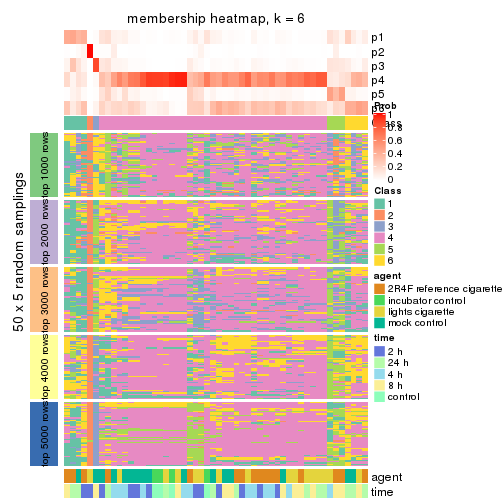
As soon as we have had the classes for columns, we can look for signatures which are significantly different between classes which can be candidate marks for certain classes. Following are the heatmaps for signatures.
Signature heatmaps where rows are scaled:
get_signatures(res, k = 2)

get_signatures(res, k = 3)
get_signatures(res, k = 4)

get_signatures(res, k = 5)

get_signatures(res, k = 6)

Signature heatmaps where rows are not scaled:
get_signatures(res, k = 2, scale_rows = FALSE)

get_signatures(res, k = 3, scale_rows = FALSE)
get_signatures(res, k = 4, scale_rows = FALSE)

get_signatures(res, k = 5, scale_rows = FALSE)

get_signatures(res, k = 6, scale_rows = FALSE)

Compare the overlap of signatures from different k:
compare_signatures(res)
get_signature() returns a data frame invisibly. TO get the list of signatures, the function
call should be assigned to a variable explicitly. In following code, if plot argument is set
to FALSE, no heatmap is plotted while only the differential analysis is performed.
# code only for demonstration
tb = get_signature(res, k = ..., plot = FALSE)
An example of the output of tb is:
#> which_row fdr mean_1 mean_2 scaled_mean_1 scaled_mean_2 km
#> 1 38 0.042760348 8.373488 9.131774 -0.5533452 0.5164555 1
#> 2 40 0.018707592 7.106213 8.469186 -0.6173731 0.5762149 1
#> 3 55 0.019134737 10.221463 11.207825 -0.6159697 0.5749050 1
#> 4 59 0.006059896 5.921854 7.869574 -0.6899429 0.6439467 1
#> 5 60 0.018055526 8.928898 10.211722 -0.6204761 0.5791110 1
#> 6 98 0.009384629 15.714769 14.887706 0.6635654 -0.6193277 2
...
The columns in tb are:
which_row: row indices corresponding to the input matrix.fdr: FDR for the differential test. mean_x: The mean value in group x.scaled_mean_x: The mean value in group x after rows are scaled.km: Row groups if k-means clustering is applied to rows.UMAP plot which shows how samples are separated.
dimension_reduction(res, k = 2, method = "UMAP")
dimension_reduction(res, k = 3, method = "UMAP")
dimension_reduction(res, k = 4, method = "UMAP")
dimension_reduction(res, k = 5, method = "UMAP")
dimension_reduction(res, k = 6, method = "UMAP")
Following heatmap shows how subgroups are split when increasing k:
collect_classes(res)
Test correlation between subgroups and known annotations. If the known annotation is numeric, one-way ANOVA test is applied, and if the known annotation is discrete, chi-squared contingency table test is applied.
test_to_known_factors(res)
#> n agent(p) time(p) k
#> CV:hclust 51 NA NA 2
#> CV:hclust 43 0.379 0.371 3
#> CV:hclust 30 NA NA 4
#> CV:hclust 30 NA NA 5
#> CV:hclust 0 NA NA 6
If matrix rows can be associated to genes, consider to use GO_Enrichment(res,
...) to perform function enrichment for the signature genes.
The object with results only for a single top-value method and a single partition method can be extracted as:
res = res_list["CV", "kmeans"]
# you can also extract it by
# res = res_list["CV:kmeans"]
A summary of res and all the functions that can be applied to it:
res
#> A 'ConsensusPartition' object with k = 2, 3, 4, 5, 6.
#> On a matrix with 51941 rows and 52 columns.
#> Top rows (1000, 2000, 3000, 4000, 5000) are extracted by 'CV' method.
#> Subgroups are detected by 'kmeans' method.
#> Performed in total 1250 partitions by row resampling.
#> Best k for subgroups seems to be 2.
#>
#> Following methods can be applied to this 'ConsensusPartition' object:
#> [1] "cola_report" "collect_classes" "collect_plots"
#> [4] "collect_stats" "colnames" "compare_signatures"
#> [7] "consensus_heatmap" "dimension_reduction" "functional_enrichment"
#> [10] "get_anno_col" "get_anno" "get_classes"
#> [13] "get_consensus" "get_matrix" "get_membership"
#> [16] "get_param" "get_signatures" "get_stats"
#> [19] "is_best_k" "is_stable_k" "membership_heatmap"
#> [22] "ncol" "nrow" "plot_ecdf"
#> [25] "rownames" "select_partition_number" "show"
#> [28] "suggest_best_k" "test_to_known_factors"
collect_plots() function collects all the plots made from res for all k (number of partitions)
into one single page to provide an easy and fast comparison between different k.
collect_plots(res)
The plots are:
k and the heatmap of
predicted classes for each k.k.k.k.All the plots in panels can be made by individual functions and they are plotted later in this section.
select_partition_number() produces several plots showing different
statistics for choosing “optimized” k. There are following statistics:
k;k, the area increased is defined as \(A_k - A_{k-1}\).The detailed explanations of these statistics can be found in the cola vignette.
Generally speaking, lower PAC score, higher mean silhouette score or higher
concordance corresponds to better partition. Rand index and Jaccard index
measure how similar the current partition is compared to partition with k-1.
If they are too similar, we won't accept k is better than k-1.
select_partition_number(res)
The numeric values for all these statistics can be obtained by get_stats().
get_stats(res)
#> k 1-PAC mean_silhouette concordance area_increased Rand Jaccard
#> 2 2 0.355 0.739 0.869 0.4971 0.493 0.493
#> 3 3 0.274 0.424 0.706 0.2842 0.848 0.706
#> 4 4 0.296 0.358 0.619 0.1203 0.871 0.687
#> 5 5 0.388 0.314 0.592 0.0686 0.899 0.688
#> 6 6 0.435 0.338 0.579 0.0417 0.876 0.551
suggest_best_k() suggests the best \(k\) based on these statistics. The rules are as follows:
NA.suggest_best_k(res)
#> [1] 2
Following shows the table of the partitions (You need to click the show/hide
code output link to see it). The membership matrix (columns with name p*)
is inferred by
clue::cl_consensus()
function with the SE method. Basically the value in the membership matrix
represents the probability to belong to a certain group. The finall class
label for an item is determined with the group with highest probability it
belongs to.
In get_classes() function, the entropy is calculated from the membership
matrix and the silhouette score is calculated from the consensus matrix.
cbind(get_classes(res, k = 2), get_membership(res, k = 2))
#> class entropy silhouette p1 p2
#> GSM270543 1 0.3114 0.8281 0.944 0.056
#> GSM270544 2 0.9815 0.1870 0.420 0.580
#> GSM270545 1 0.1414 0.8352 0.980 0.020
#> GSM270546 1 0.4690 0.8094 0.900 0.100
#> GSM270547 1 0.0938 0.8383 0.988 0.012
#> GSM270548 1 0.4690 0.8055 0.900 0.100
#> GSM270549 1 0.7056 0.7453 0.808 0.192
#> GSM270550 1 0.0672 0.8381 0.992 0.008
#> GSM270551 2 0.0938 0.8671 0.012 0.988
#> GSM270552 1 0.9393 0.5103 0.644 0.356
#> GSM270553 2 0.8144 0.6881 0.252 0.748
#> GSM270554 1 0.8608 0.6082 0.716 0.284
#> GSM270555 2 0.1414 0.8682 0.020 0.980
#> GSM270556 2 0.1843 0.8704 0.028 0.972
#> GSM270557 2 0.5737 0.8426 0.136 0.864
#> GSM270558 2 0.2043 0.8708 0.032 0.968
#> GSM270559 2 0.0376 0.8621 0.004 0.996
#> GSM270560 2 0.3879 0.8695 0.076 0.924
#> GSM270561 1 0.9000 0.5605 0.684 0.316
#> GSM270562 2 0.7745 0.7356 0.228 0.772
#> GSM270563 2 0.5519 0.8319 0.128 0.872
#> GSM270564 1 0.9635 0.3619 0.612 0.388
#> GSM270565 2 0.9209 0.5276 0.336 0.664
#> GSM270566 2 0.9933 0.2478 0.452 0.548
#> GSM270567 1 0.7219 0.7195 0.800 0.200
#> GSM270568 2 0.2948 0.8667 0.052 0.948
#> GSM270569 2 0.0376 0.8621 0.004 0.996
#> GSM270570 2 0.3733 0.8715 0.072 0.928
#> GSM270571 1 0.9993 0.0518 0.516 0.484
#> GSM270572 2 0.3584 0.8713 0.068 0.932
#> GSM270573 2 0.1633 0.8681 0.024 0.976
#> GSM270574 2 0.6887 0.7991 0.184 0.816
#> GSM270575 2 0.0672 0.8612 0.008 0.992
#> GSM270576 2 0.2778 0.8713 0.048 0.952
#> GSM270577 2 0.4690 0.8610 0.100 0.900
#> GSM270578 1 0.9954 0.1181 0.540 0.460
#> GSM270579 1 0.9775 0.3523 0.588 0.412
#> GSM270580 2 0.3114 0.8701 0.056 0.944
#> GSM270581 1 0.0376 0.8375 0.996 0.004
#> GSM270582 1 0.4431 0.8153 0.908 0.092
#> GSM270583 2 0.5629 0.8436 0.132 0.868
#> GSM270584 1 0.0938 0.8382 0.988 0.012
#> GSM270585 1 0.7453 0.7126 0.788 0.212
#> GSM270586 1 0.0672 0.8381 0.992 0.008
#> GSM270587 1 0.0672 0.8381 0.992 0.008
#> GSM270588 1 0.0376 0.8375 0.996 0.004
#> GSM270589 1 0.0672 0.8376 0.992 0.008
#> GSM270590 1 0.1414 0.8381 0.980 0.020
#> GSM270591 1 0.0376 0.8376 0.996 0.004
#> GSM270592 1 0.1184 0.8382 0.984 0.016
#> GSM270593 1 0.5178 0.8032 0.884 0.116
#> GSM270594 1 0.0672 0.8379 0.992 0.008
cbind(get_classes(res, k = 3), get_membership(res, k = 3))
#> class entropy silhouette p1 p2 p3
#> GSM270543 1 0.7252 0.576273 0.704 0.100 0.196
#> GSM270544 3 0.9417 0.318521 0.272 0.224 0.504
#> GSM270545 1 0.1289 0.734309 0.968 0.000 0.032
#> GSM270546 1 0.6722 0.563680 0.720 0.060 0.220
#> GSM270547 1 0.2773 0.731928 0.928 0.024 0.048
#> GSM270548 1 0.7824 0.338195 0.580 0.064 0.356
#> GSM270549 1 0.8271 0.101313 0.480 0.076 0.444
#> GSM270550 1 0.1015 0.742134 0.980 0.008 0.012
#> GSM270551 3 0.6460 0.041052 0.004 0.440 0.556
#> GSM270552 2 0.8730 0.000926 0.420 0.472 0.108
#> GSM270553 2 0.8331 0.342277 0.164 0.628 0.208
#> GSM270554 1 0.8264 0.317179 0.556 0.356 0.088
#> GSM270555 2 0.6386 0.137852 0.004 0.584 0.412
#> GSM270556 2 0.4293 0.486760 0.004 0.832 0.164
#> GSM270557 2 0.5696 0.497597 0.056 0.796 0.148
#> GSM270558 2 0.4209 0.489894 0.016 0.856 0.128
#> GSM270559 2 0.6154 0.179149 0.000 0.592 0.408
#> GSM270560 2 0.4526 0.509086 0.040 0.856 0.104
#> GSM270561 1 0.8645 0.315823 0.540 0.344 0.116
#> GSM270562 2 0.7531 0.367016 0.092 0.672 0.236
#> GSM270563 2 0.8404 0.010206 0.084 0.464 0.452
#> GSM270564 1 0.8808 0.131315 0.484 0.400 0.116
#> GSM270565 2 0.7695 0.352461 0.200 0.676 0.124
#> GSM270566 2 0.9026 0.198330 0.248 0.556 0.196
#> GSM270567 1 0.7705 0.420717 0.604 0.332 0.064
#> GSM270568 2 0.5775 0.399405 0.012 0.728 0.260
#> GSM270569 3 0.6302 -0.069953 0.000 0.480 0.520
#> GSM270570 2 0.6952 0.230270 0.024 0.600 0.376
#> GSM270571 3 0.9305 0.314933 0.308 0.188 0.504
#> GSM270572 2 0.5719 0.492487 0.052 0.792 0.156
#> GSM270573 2 0.5760 0.303692 0.000 0.672 0.328
#> GSM270574 2 0.5874 0.496820 0.116 0.796 0.088
#> GSM270575 3 0.4842 0.293180 0.000 0.224 0.776
#> GSM270576 3 0.6445 0.255655 0.020 0.308 0.672
#> GSM270577 2 0.6349 0.492244 0.092 0.768 0.140
#> GSM270578 3 0.9772 0.109150 0.268 0.292 0.440
#> GSM270579 1 0.9250 0.153955 0.512 0.184 0.304
#> GSM270580 2 0.6935 0.231732 0.024 0.604 0.372
#> GSM270581 1 0.4475 0.713289 0.864 0.072 0.064
#> GSM270582 1 0.6737 0.619526 0.744 0.156 0.100
#> GSM270583 2 0.5874 0.503005 0.088 0.796 0.116
#> GSM270584 1 0.0424 0.743304 0.992 0.008 0.000
#> GSM270585 1 0.8731 0.289742 0.528 0.352 0.120
#> GSM270586 1 0.2297 0.736571 0.944 0.036 0.020
#> GSM270587 1 0.0829 0.743224 0.984 0.004 0.012
#> GSM270588 1 0.0983 0.742938 0.980 0.016 0.004
#> GSM270589 1 0.1482 0.743098 0.968 0.020 0.012
#> GSM270590 1 0.2116 0.737769 0.948 0.040 0.012
#> GSM270591 1 0.0747 0.739341 0.984 0.000 0.016
#> GSM270592 1 0.0237 0.742926 0.996 0.004 0.000
#> GSM270593 1 0.5610 0.621816 0.776 0.028 0.196
#> GSM270594 1 0.1267 0.739382 0.972 0.004 0.024
cbind(get_classes(res, k = 4), get_membership(res, k = 4))
#> class entropy silhouette p1 p2 p3 p4
#> GSM270543 4 0.7409 -0.0823 0.392 0.080 0.032 0.496
#> GSM270544 1 0.7967 0.5034 0.604 0.132 0.116 0.148
#> GSM270545 4 0.2530 0.6464 0.100 0.004 0.000 0.896
#> GSM270546 4 0.6710 -0.0768 0.416 0.048 0.020 0.516
#> GSM270547 4 0.3443 0.6220 0.136 0.016 0.000 0.848
#> GSM270548 1 0.6350 0.5609 0.644 0.036 0.036 0.284
#> GSM270549 1 0.7758 0.5433 0.592 0.068 0.112 0.228
#> GSM270550 4 0.0921 0.6956 0.028 0.000 0.000 0.972
#> GSM270551 3 0.6473 0.4078 0.188 0.168 0.644 0.000
#> GSM270552 2 0.8838 0.1113 0.100 0.420 0.128 0.352
#> GSM270553 2 0.7303 0.3333 0.208 0.636 0.080 0.076
#> GSM270554 4 0.8252 0.1288 0.096 0.360 0.076 0.468
#> GSM270555 3 0.6240 0.3496 0.064 0.368 0.568 0.000
#> GSM270556 2 0.6193 0.2500 0.148 0.672 0.180 0.000
#> GSM270557 2 0.5919 0.3551 0.112 0.744 0.112 0.032
#> GSM270558 2 0.5391 0.2219 0.040 0.716 0.236 0.008
#> GSM270559 3 0.6285 0.2503 0.060 0.412 0.528 0.000
#> GSM270560 2 0.4356 0.3823 0.092 0.828 0.072 0.008
#> GSM270561 4 0.7994 0.2806 0.100 0.312 0.064 0.524
#> GSM270562 2 0.7143 0.3311 0.308 0.584 0.044 0.064
#> GSM270563 2 0.8853 0.1642 0.320 0.416 0.200 0.064
#> GSM270564 2 0.7729 0.0813 0.100 0.472 0.036 0.392
#> GSM270565 2 0.8227 0.3866 0.172 0.572 0.096 0.160
#> GSM270566 2 0.7739 0.1480 0.328 0.496 0.016 0.160
#> GSM270567 4 0.7951 0.2099 0.124 0.340 0.040 0.496
#> GSM270568 2 0.7315 -0.0160 0.148 0.512 0.336 0.004
#> GSM270569 3 0.7210 0.2854 0.184 0.276 0.540 0.000
#> GSM270570 2 0.7944 0.0596 0.240 0.452 0.300 0.008
#> GSM270571 1 0.6478 0.4974 0.720 0.100 0.076 0.104
#> GSM270572 2 0.7119 0.2858 0.180 0.624 0.176 0.020
#> GSM270573 2 0.7188 -0.2164 0.136 0.436 0.428 0.000
#> GSM270574 2 0.6292 0.3880 0.064 0.728 0.080 0.128
#> GSM270575 3 0.6171 0.2040 0.348 0.064 0.588 0.000
#> GSM270576 1 0.7902 0.1235 0.504 0.256 0.224 0.016
#> GSM270577 2 0.5830 0.3715 0.052 0.752 0.136 0.060
#> GSM270578 1 0.8596 0.2837 0.504 0.268 0.100 0.128
#> GSM270579 1 0.9269 0.4405 0.428 0.176 0.128 0.268
#> GSM270580 2 0.7404 -0.1555 0.128 0.448 0.416 0.008
#> GSM270581 4 0.5265 0.5718 0.160 0.072 0.008 0.760
#> GSM270582 4 0.6116 0.5784 0.056 0.136 0.072 0.736
#> GSM270583 2 0.6777 0.3531 0.088 0.696 0.136 0.080
#> GSM270584 4 0.0804 0.7022 0.012 0.008 0.000 0.980
#> GSM270585 4 0.8404 0.1393 0.124 0.344 0.068 0.464
#> GSM270586 4 0.3857 0.6646 0.060 0.056 0.020 0.864
#> GSM270587 4 0.0672 0.7030 0.008 0.008 0.000 0.984
#> GSM270588 4 0.0937 0.7031 0.012 0.012 0.000 0.976
#> GSM270589 4 0.2499 0.6940 0.032 0.044 0.004 0.920
#> GSM270590 4 0.2383 0.6952 0.024 0.048 0.004 0.924
#> GSM270591 4 0.1302 0.6900 0.044 0.000 0.000 0.956
#> GSM270592 4 0.0524 0.7020 0.004 0.008 0.000 0.988
#> GSM270593 4 0.6596 0.3541 0.212 0.020 0.104 0.664
#> GSM270594 4 0.2021 0.6862 0.056 0.012 0.000 0.932
cbind(get_classes(res, k = 5), get_membership(res, k = 5))
#> class entropy silhouette p1 p2 p3 p4 p5
#> GSM270543 5 0.704 0.4335 0.040 0.092 0.016 0.368 0.484
#> GSM270544 5 0.733 0.4769 0.096 0.060 0.084 0.144 0.616
#> GSM270545 4 0.261 0.5874 0.000 0.008 0.000 0.868 0.124
#> GSM270546 5 0.610 0.3567 0.008 0.064 0.012 0.432 0.484
#> GSM270547 4 0.381 0.5486 0.012 0.016 0.008 0.812 0.152
#> GSM270548 5 0.559 0.5611 0.024 0.056 0.012 0.224 0.684
#> GSM270549 5 0.683 0.4992 0.016 0.072 0.100 0.192 0.620
#> GSM270550 4 0.120 0.6897 0.000 0.012 0.000 0.960 0.028
#> GSM270551 3 0.699 0.3403 0.132 0.180 0.584 0.000 0.104
#> GSM270552 1 0.822 -0.1067 0.364 0.324 0.036 0.236 0.040
#> GSM270553 1 0.816 0.2112 0.468 0.280 0.088 0.040 0.124
#> GSM270554 4 0.758 -0.2191 0.272 0.336 0.012 0.360 0.020
#> GSM270555 3 0.655 0.2449 0.384 0.120 0.476 0.000 0.020
#> GSM270556 1 0.683 0.2535 0.580 0.228 0.116 0.000 0.076
#> GSM270557 1 0.681 0.2675 0.556 0.300 0.032 0.020 0.092
#> GSM270558 1 0.414 0.3006 0.800 0.052 0.132 0.000 0.016
#> GSM270559 3 0.601 0.1664 0.416 0.036 0.504 0.000 0.044
#> GSM270560 1 0.589 0.3931 0.668 0.220 0.052 0.008 0.052
#> GSM270561 4 0.776 -0.0943 0.248 0.280 0.012 0.420 0.040
#> GSM270562 1 0.792 0.2471 0.436 0.284 0.024 0.044 0.212
#> GSM270563 2 0.704 0.2021 0.152 0.620 0.068 0.028 0.132
#> GSM270564 2 0.780 0.0987 0.264 0.376 0.012 0.312 0.036
#> GSM270565 1 0.751 0.1714 0.496 0.316 0.036 0.108 0.044
#> GSM270566 1 0.840 0.1468 0.368 0.244 0.008 0.116 0.264
#> GSM270567 4 0.761 -0.2078 0.200 0.352 0.004 0.396 0.048
#> GSM270568 1 0.724 -0.0465 0.500 0.076 0.324 0.008 0.092
#> GSM270569 3 0.784 0.1451 0.204 0.356 0.360 0.000 0.080
#> GSM270570 2 0.705 0.0764 0.192 0.572 0.144 0.000 0.092
#> GSM270571 5 0.682 0.4258 0.068 0.112 0.072 0.084 0.664
#> GSM270572 1 0.586 0.3197 0.724 0.120 0.060 0.032 0.064
#> GSM270573 1 0.714 -0.2101 0.436 0.076 0.392 0.000 0.096
#> GSM270574 1 0.572 0.3183 0.676 0.212 0.016 0.084 0.012
#> GSM270575 3 0.611 0.2772 0.032 0.080 0.592 0.000 0.296
#> GSM270576 5 0.771 0.0376 0.092 0.348 0.108 0.012 0.440
#> GSM270577 1 0.565 0.3957 0.724 0.148 0.056 0.052 0.020
#> GSM270578 5 0.834 0.2084 0.092 0.300 0.056 0.108 0.444
#> GSM270579 5 0.904 0.3289 0.212 0.164 0.044 0.204 0.376
#> GSM270580 2 0.761 -0.1655 0.264 0.436 0.240 0.000 0.060
#> GSM270581 4 0.647 0.3444 0.028 0.196 0.000 0.592 0.184
#> GSM270582 4 0.661 0.4580 0.096 0.196 0.052 0.636 0.020
#> GSM270583 1 0.560 0.3625 0.696 0.204 0.012 0.032 0.056
#> GSM270584 4 0.118 0.6937 0.004 0.016 0.000 0.964 0.016
#> GSM270585 2 0.732 0.1550 0.172 0.432 0.000 0.348 0.048
#> GSM270586 4 0.436 0.6369 0.032 0.152 0.008 0.788 0.020
#> GSM270587 4 0.119 0.6962 0.008 0.020 0.000 0.964 0.008
#> GSM270588 4 0.168 0.6969 0.012 0.032 0.000 0.944 0.012
#> GSM270589 4 0.335 0.6718 0.052 0.072 0.000 0.860 0.016
#> GSM270590 4 0.294 0.6775 0.048 0.072 0.000 0.876 0.004
#> GSM270591 4 0.133 0.6794 0.004 0.008 0.000 0.956 0.032
#> GSM270592 4 0.074 0.6946 0.008 0.004 0.000 0.980 0.008
#> GSM270593 4 0.598 0.2219 0.016 0.004 0.116 0.636 0.228
#> GSM270594 4 0.205 0.6840 0.004 0.020 0.004 0.928 0.044
cbind(get_classes(res, k = 6), get_membership(res, k = 6))
#> class entropy silhouette p1 p2 p3 p4 p5 p6
#> GSM270543 4 0.7155 0.3622 0.368 0.136 0.028 0.420 0.020 0.028
#> GSM270544 4 0.6581 0.3573 0.088 0.024 0.116 0.648 0.064 0.060
#> GSM270545 1 0.2013 0.7095 0.908 0.008 0.000 0.076 0.008 0.000
#> GSM270546 4 0.6062 0.3011 0.420 0.048 0.020 0.476 0.020 0.016
#> GSM270547 1 0.4362 0.5996 0.776 0.076 0.020 0.116 0.004 0.008
#> GSM270548 4 0.5343 0.4522 0.144 0.068 0.000 0.708 0.024 0.056
#> GSM270549 4 0.6038 0.3310 0.100 0.044 0.016 0.644 0.184 0.012
#> GSM270550 1 0.0653 0.7696 0.980 0.004 0.000 0.012 0.000 0.004
#> GSM270551 6 0.6756 0.1169 0.000 0.024 0.152 0.048 0.256 0.520
#> GSM270552 2 0.7118 0.3974 0.108 0.592 0.156 0.036 0.052 0.056
#> GSM270553 3 0.8213 0.1537 0.024 0.328 0.360 0.156 0.064 0.068
#> GSM270554 2 0.6509 0.4863 0.248 0.584 0.072 0.012 0.032 0.052
#> GSM270555 6 0.7664 0.1756 0.000 0.072 0.320 0.032 0.240 0.336
#> GSM270556 3 0.6542 0.1667 0.000 0.156 0.588 0.020 0.080 0.156
#> GSM270557 3 0.6473 0.2419 0.012 0.372 0.488 0.052 0.016 0.060
#> GSM270558 3 0.5298 0.2375 0.004 0.108 0.712 0.012 0.044 0.120
#> GSM270559 3 0.6335 -0.0881 0.000 0.008 0.444 0.020 0.372 0.156
#> GSM270560 3 0.5232 0.3522 0.008 0.276 0.644 0.040 0.020 0.012
#> GSM270561 2 0.7039 0.4357 0.324 0.492 0.084 0.032 0.028 0.040
#> GSM270562 3 0.7651 0.2830 0.012 0.228 0.440 0.228 0.040 0.052
#> GSM270563 2 0.7131 0.0965 0.012 0.560 0.080 0.100 0.048 0.200
#> GSM270564 2 0.7222 0.4098 0.232 0.512 0.164 0.044 0.020 0.028
#> GSM270565 2 0.7279 0.1235 0.096 0.432 0.356 0.028 0.012 0.076
#> GSM270566 3 0.8431 0.1556 0.084 0.244 0.328 0.260 0.012 0.072
#> GSM270567 2 0.5495 0.4988 0.244 0.652 0.036 0.028 0.004 0.036
#> GSM270568 3 0.8380 -0.0266 0.016 0.116 0.412 0.072 0.168 0.216
#> GSM270569 5 0.8330 -0.1134 0.000 0.196 0.184 0.048 0.292 0.280
#> GSM270570 6 0.7422 -0.0183 0.000 0.340 0.132 0.092 0.032 0.404
#> GSM270571 4 0.6115 0.3482 0.036 0.064 0.060 0.688 0.040 0.112
#> GSM270572 3 0.7121 0.2230 0.024 0.196 0.552 0.072 0.020 0.136
#> GSM270573 6 0.6253 0.2269 0.004 0.040 0.268 0.036 0.068 0.584
#> GSM270574 2 0.6484 0.0303 0.048 0.528 0.328 0.020 0.016 0.060
#> GSM270575 5 0.2952 0.1009 0.000 0.004 0.008 0.156 0.828 0.004
#> GSM270576 4 0.7833 0.0686 0.000 0.184 0.092 0.472 0.104 0.148
#> GSM270577 3 0.7260 0.2329 0.036 0.296 0.504 0.052 0.064 0.048
#> GSM270578 4 0.8267 0.1269 0.060 0.256 0.168 0.404 0.092 0.020
#> GSM270579 4 0.9072 0.2431 0.184 0.128 0.144 0.364 0.040 0.140
#> GSM270580 6 0.6750 0.2115 0.000 0.180 0.268 0.048 0.012 0.492
#> GSM270581 1 0.6714 0.1075 0.500 0.296 0.040 0.144 0.016 0.004
#> GSM270582 1 0.5319 0.2372 0.572 0.360 0.020 0.008 0.032 0.008
#> GSM270583 2 0.7108 0.0287 0.040 0.448 0.376 0.040 0.036 0.060
#> GSM270584 1 0.0692 0.7770 0.976 0.020 0.000 0.000 0.004 0.000
#> GSM270585 2 0.4741 0.5067 0.252 0.688 0.012 0.012 0.008 0.028
#> GSM270586 1 0.4013 0.6105 0.740 0.224 0.008 0.020 0.004 0.004
#> GSM270587 1 0.1923 0.7649 0.916 0.064 0.004 0.016 0.000 0.000
#> GSM270588 1 0.1957 0.7658 0.912 0.072 0.008 0.008 0.000 0.000
#> GSM270589 1 0.3649 0.6947 0.804 0.152 0.012 0.020 0.004 0.008
#> GSM270590 1 0.3492 0.6996 0.816 0.136 0.028 0.016 0.004 0.000
#> GSM270591 1 0.1437 0.7599 0.952 0.016 0.004 0.020 0.004 0.004
#> GSM270592 1 0.0935 0.7772 0.964 0.032 0.004 0.000 0.000 0.000
#> GSM270593 1 0.6219 0.3274 0.632 0.028 0.020 0.200 0.088 0.032
#> GSM270594 1 0.1623 0.7578 0.940 0.020 0.000 0.032 0.004 0.004
Heatmaps for the consensus matrix. It visualizes the probability of two samples to be in a same group.
consensus_heatmap(res, k = 2)
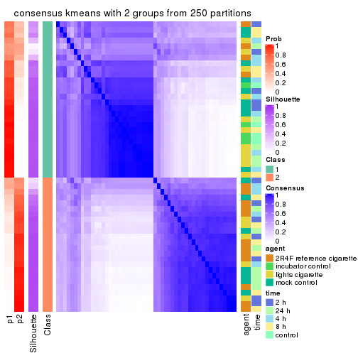
consensus_heatmap(res, k = 3)
consensus_heatmap(res, k = 4)
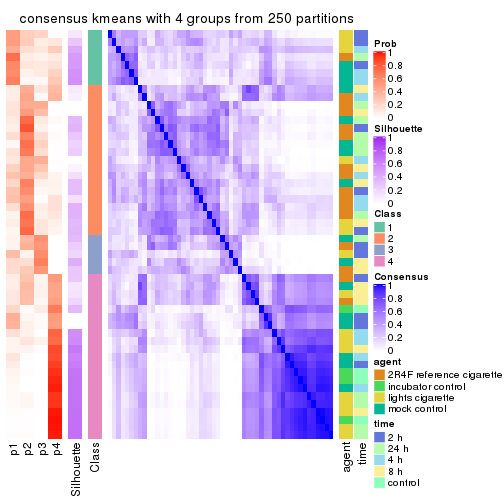
consensus_heatmap(res, k = 5)
consensus_heatmap(res, k = 6)
Heatmaps for the membership of samples in all partitions to see how consistent they are:
membership_heatmap(res, k = 2)
membership_heatmap(res, k = 3)
membership_heatmap(res, k = 4)
membership_heatmap(res, k = 5)
membership_heatmap(res, k = 6)
As soon as we have had the classes for columns, we can look for signatures which are significantly different between classes which can be candidate marks for certain classes. Following are the heatmaps for signatures.
Signature heatmaps where rows are scaled:
get_signatures(res, k = 2)
get_signatures(res, k = 3)
get_signatures(res, k = 4)
get_signatures(res, k = 5)

get_signatures(res, k = 6)

Signature heatmaps where rows are not scaled:
get_signatures(res, k = 2, scale_rows = FALSE)
get_signatures(res, k = 3, scale_rows = FALSE)
get_signatures(res, k = 4, scale_rows = FALSE)
get_signatures(res, k = 5, scale_rows = FALSE)

get_signatures(res, k = 6, scale_rows = FALSE)

Compare the overlap of signatures from different k:
compare_signatures(res)
get_signature() returns a data frame invisibly. TO get the list of signatures, the function
call should be assigned to a variable explicitly. In following code, if plot argument is set
to FALSE, no heatmap is plotted while only the differential analysis is performed.
# code only for demonstration
tb = get_signature(res, k = ..., plot = FALSE)
An example of the output of tb is:
#> which_row fdr mean_1 mean_2 scaled_mean_1 scaled_mean_2 km
#> 1 38 0.042760348 8.373488 9.131774 -0.5533452 0.5164555 1
#> 2 40 0.018707592 7.106213 8.469186 -0.6173731 0.5762149 1
#> 3 55 0.019134737 10.221463 11.207825 -0.6159697 0.5749050 1
#> 4 59 0.006059896 5.921854 7.869574 -0.6899429 0.6439467 1
#> 5 60 0.018055526 8.928898 10.211722 -0.6204761 0.5791110 1
#> 6 98 0.009384629 15.714769 14.887706 0.6635654 -0.6193277 2
...
The columns in tb are:
which_row: row indices corresponding to the input matrix.fdr: FDR for the differential test. mean_x: The mean value in group x.scaled_mean_x: The mean value in group x after rows are scaled.km: Row groups if k-means clustering is applied to rows.UMAP plot which shows how samples are separated.
dimension_reduction(res, k = 2, method = "UMAP")
dimension_reduction(res, k = 3, method = "UMAP")
dimension_reduction(res, k = 4, method = "UMAP")
dimension_reduction(res, k = 5, method = "UMAP")
dimension_reduction(res, k = 6, method = "UMAP")
Following heatmap shows how subgroups are split when increasing k:
collect_classes(res)
Test correlation between subgroups and known annotations. If the known annotation is numeric, one-way ANOVA test is applied, and if the known annotation is discrete, chi-squared contingency table test is applied.
test_to_known_factors(res)
#> n agent(p) time(p) k
#> CV:kmeans 46 0.0077 0.189 2
#> CV:kmeans 19 0.0227 0.412 3
#> CV:kmeans 17 0.0355 0.356 4
#> CV:kmeans 13 0.2956 0.461 5
#> CV:kmeans 13 0.6286 0.461 6
If matrix rows can be associated to genes, consider to use GO_Enrichment(res,
...) to perform function enrichment for the signature genes.
The object with results only for a single top-value method and a single partition method can be extracted as:
res = res_list["CV", "skmeans"]
# you can also extract it by
# res = res_list["CV:skmeans"]
A summary of res and all the functions that can be applied to it:
res
#> A 'ConsensusPartition' object with k = 2, 3, 4, 5, 6.
#> On a matrix with 51941 rows and 52 columns.
#> Top rows (1000, 2000, 3000, 4000, 5000) are extracted by 'CV' method.
#> Subgroups are detected by 'skmeans' method.
#> Performed in total 1250 partitions by row resampling.
#> Best k for subgroups seems to be 2.
#>
#> Following methods can be applied to this 'ConsensusPartition' object:
#> [1] "cola_report" "collect_classes" "collect_plots"
#> [4] "collect_stats" "colnames" "compare_signatures"
#> [7] "consensus_heatmap" "dimension_reduction" "functional_enrichment"
#> [10] "get_anno_col" "get_anno" "get_classes"
#> [13] "get_consensus" "get_matrix" "get_membership"
#> [16] "get_param" "get_signatures" "get_stats"
#> [19] "is_best_k" "is_stable_k" "membership_heatmap"
#> [22] "ncol" "nrow" "plot_ecdf"
#> [25] "rownames" "select_partition_number" "show"
#> [28] "suggest_best_k" "test_to_known_factors"
collect_plots() function collects all the plots made from res for all k (number of partitions)
into one single page to provide an easy and fast comparison between different k.
collect_plots(res)
The plots are:
k and the heatmap of
predicted classes for each k.k.k.k.All the plots in panels can be made by individual functions and they are plotted later in this section.
select_partition_number() produces several plots showing different
statistics for choosing “optimized” k. There are following statistics:
k;k, the area increased is defined as \(A_k - A_{k-1}\).The detailed explanations of these statistics can be found in the cola vignette.
Generally speaking, lower PAC score, higher mean silhouette score or higher
concordance corresponds to better partition. Rand index and Jaccard index
measure how similar the current partition is compared to partition with k-1.
If they are too similar, we won't accept k is better than k-1.
select_partition_number(res)
The numeric values for all these statistics can be obtained by get_stats().
get_stats(res)
#> k 1-PAC mean_silhouette concordance area_increased Rand Jaccard
#> 2 2 0.00255 0.4986 0.730 0.5073 0.493 0.493
#> 3 3 0.02466 0.2259 0.548 0.3310 0.747 0.537
#> 4 4 0.06888 0.1355 0.448 0.1244 0.732 0.370
#> 5 5 0.14796 0.1253 0.400 0.0669 0.793 0.350
#> 6 6 0.25085 0.0839 0.358 0.0412 0.817 0.316
suggest_best_k() suggests the best \(k\) based on these statistics. The rules are as follows:
NA.suggest_best_k(res)
#> [1] 2
Following shows the table of the partitions (You need to click the show/hide
code output link to see it). The membership matrix (columns with name p*)
is inferred by
clue::cl_consensus()
function with the SE method. Basically the value in the membership matrix
represents the probability to belong to a certain group. The finall class
label for an item is determined with the group with highest probability it
belongs to.
In get_classes() function, the entropy is calculated from the membership
matrix and the silhouette score is calculated from the consensus matrix.
cbind(get_classes(res, k = 2), get_membership(res, k = 2))
#> class entropy silhouette p1 p2
#> GSM270543 2 0.939 0.4470 0.356 0.644
#> GSM270544 1 0.990 0.2826 0.560 0.440
#> GSM270545 2 0.430 0.6612 0.088 0.912
#> GSM270546 2 0.904 0.5058 0.320 0.680
#> GSM270547 2 0.552 0.6595 0.128 0.872
#> GSM270548 2 0.929 0.4253 0.344 0.656
#> GSM270549 1 1.000 0.0333 0.500 0.500
#> GSM270550 2 0.224 0.6488 0.036 0.964
#> GSM270551 1 0.625 0.6676 0.844 0.156
#> GSM270552 1 0.988 0.2646 0.564 0.436
#> GSM270553 1 0.943 0.4919 0.640 0.360
#> GSM270554 2 0.999 -0.0160 0.484 0.516
#> GSM270555 1 0.482 0.6614 0.896 0.104
#> GSM270556 1 0.563 0.6690 0.868 0.132
#> GSM270557 1 0.866 0.6075 0.712 0.288
#> GSM270558 1 0.671 0.6665 0.824 0.176
#> GSM270559 1 0.469 0.6597 0.900 0.100
#> GSM270560 1 0.775 0.6599 0.772 0.228
#> GSM270561 2 0.995 0.0881 0.460 0.540
#> GSM270562 1 0.936 0.4953 0.648 0.352
#> GSM270563 1 0.827 0.6104 0.740 0.260
#> GSM270564 2 0.995 0.0382 0.460 0.540
#> GSM270565 1 0.991 0.3118 0.556 0.444
#> GSM270566 1 0.995 0.2443 0.540 0.460
#> GSM270567 2 0.993 0.1091 0.452 0.548
#> GSM270568 1 0.904 0.5823 0.680 0.320
#> GSM270569 1 0.494 0.6614 0.892 0.108
#> GSM270570 1 0.722 0.6599 0.800 0.200
#> GSM270571 1 0.994 0.2243 0.544 0.456
#> GSM270572 1 0.881 0.5978 0.700 0.300
#> GSM270573 1 0.689 0.6678 0.816 0.184
#> GSM270574 1 0.925 0.5521 0.660 0.340
#> GSM270575 1 0.552 0.6650 0.872 0.128
#> GSM270576 1 0.706 0.6612 0.808 0.192
#> GSM270577 1 0.932 0.5301 0.652 0.348
#> GSM270578 1 0.996 0.1927 0.536 0.464
#> GSM270579 2 1.000 -0.1118 0.500 0.500
#> GSM270580 1 0.644 0.6677 0.836 0.164
#> GSM270581 2 0.767 0.6089 0.224 0.776
#> GSM270582 2 0.866 0.5563 0.288 0.712
#> GSM270583 1 0.866 0.6076 0.712 0.288
#> GSM270584 2 0.184 0.6494 0.028 0.972
#> GSM270585 2 0.975 0.3167 0.408 0.592
#> GSM270586 2 0.671 0.6490 0.176 0.824
#> GSM270587 2 0.482 0.6674 0.104 0.896
#> GSM270588 2 0.653 0.6409 0.168 0.832
#> GSM270589 2 0.760 0.6232 0.220 0.780
#> GSM270590 2 0.788 0.6150 0.236 0.764
#> GSM270591 2 0.416 0.6657 0.084 0.916
#> GSM270592 2 0.388 0.6660 0.076 0.924
#> GSM270593 2 0.866 0.5525 0.288 0.712
#> GSM270594 2 0.574 0.6645 0.136 0.864
cbind(get_classes(res, k = 3), get_membership(res, k = 3))
#> class entropy silhouette p1 p2 p3
#> GSM270543 1 0.970 -0.11759 0.396 0.388 0.216
#> GSM270544 2 0.994 0.17214 0.320 0.384 0.296
#> GSM270545 1 0.474 0.51811 0.848 0.104 0.048
#> GSM270546 1 0.876 0.18827 0.504 0.380 0.116
#> GSM270547 1 0.720 0.45055 0.704 0.204 0.092
#> GSM270548 2 0.961 0.10025 0.368 0.428 0.204
#> GSM270549 1 0.986 -0.15161 0.384 0.364 0.252
#> GSM270550 1 0.341 0.52941 0.904 0.068 0.028
#> GSM270551 3 0.677 0.35464 0.040 0.276 0.684
#> GSM270552 3 0.980 -0.02402 0.248 0.336 0.416
#> GSM270553 3 0.958 0.02515 0.200 0.368 0.432
#> GSM270554 2 0.996 0.10206 0.300 0.372 0.328
#> GSM270555 3 0.645 0.36686 0.060 0.196 0.744
#> GSM270556 3 0.718 0.33835 0.060 0.268 0.672
#> GSM270557 3 0.892 0.23863 0.136 0.348 0.516
#> GSM270558 3 0.771 0.35130 0.092 0.256 0.652
#> GSM270559 3 0.631 0.37864 0.052 0.200 0.748
#> GSM270560 3 0.833 0.26997 0.096 0.340 0.564
#> GSM270561 2 0.971 0.19223 0.332 0.436 0.232
#> GSM270562 2 0.946 -0.02134 0.184 0.448 0.368
#> GSM270563 2 0.869 -0.15143 0.104 0.460 0.436
#> GSM270564 2 0.968 0.19309 0.328 0.444 0.228
#> GSM270565 2 0.976 -0.00534 0.228 0.392 0.380
#> GSM270566 2 0.995 0.14852 0.308 0.384 0.308
#> GSM270567 1 0.993 -0.20720 0.372 0.352 0.276
#> GSM270568 3 0.898 0.22031 0.148 0.328 0.524
#> GSM270569 3 0.740 0.34229 0.072 0.264 0.664
#> GSM270570 3 0.905 0.17725 0.148 0.344 0.508
#> GSM270571 3 0.967 -0.00181 0.212 0.380 0.408
#> GSM270572 3 0.936 0.17092 0.192 0.312 0.496
#> GSM270573 3 0.801 0.32642 0.104 0.268 0.628
#> GSM270574 3 0.936 0.15145 0.172 0.368 0.460
#> GSM270575 3 0.719 0.32400 0.040 0.336 0.624
#> GSM270576 3 0.842 0.23161 0.096 0.364 0.540
#> GSM270577 3 0.962 0.12111 0.224 0.316 0.460
#> GSM270578 2 0.946 0.12601 0.224 0.496 0.280
#> GSM270579 3 0.999 -0.14661 0.316 0.340 0.344
#> GSM270580 3 0.771 0.32300 0.080 0.284 0.636
#> GSM270581 1 0.837 0.29956 0.592 0.292 0.116
#> GSM270582 1 0.934 0.10470 0.476 0.348 0.176
#> GSM270583 3 0.861 0.25455 0.116 0.336 0.548
#> GSM270584 1 0.359 0.52786 0.892 0.088 0.020
#> GSM270585 2 0.975 0.21023 0.320 0.436 0.244
#> GSM270586 1 0.794 0.28692 0.568 0.364 0.068
#> GSM270587 1 0.639 0.49791 0.752 0.184 0.064
#> GSM270588 1 0.761 0.41717 0.676 0.216 0.108
#> GSM270589 1 0.791 0.40309 0.656 0.220 0.124
#> GSM270590 1 0.820 0.32515 0.612 0.276 0.112
#> GSM270591 1 0.540 0.52056 0.816 0.124 0.060
#> GSM270592 1 0.407 0.52172 0.864 0.120 0.016
#> GSM270593 1 0.870 0.28911 0.588 0.244 0.168
#> GSM270594 1 0.672 0.48059 0.720 0.220 0.060
cbind(get_classes(res, k = 4), get_membership(res, k = 4))
#> class entropy silhouette p1 p2 p3 p4
#> GSM270543 4 0.921 0.17255 0.340 0.136 0.136 0.388
#> GSM270544 4 0.942 0.19078 0.272 0.108 0.244 0.376
#> GSM270545 1 0.467 0.48402 0.812 0.036 0.028 0.124
#> GSM270546 4 0.833 0.08508 0.380 0.100 0.076 0.444
#> GSM270547 1 0.687 0.36532 0.652 0.052 0.068 0.228
#> GSM270548 4 0.855 0.23100 0.188 0.160 0.112 0.540
#> GSM270549 4 0.968 0.18549 0.220 0.204 0.192 0.384
#> GSM270550 1 0.423 0.51574 0.844 0.040 0.028 0.088
#> GSM270551 2 0.845 0.08378 0.048 0.468 0.304 0.180
#> GSM270552 3 0.906 0.06839 0.120 0.176 0.468 0.236
#> GSM270553 3 0.962 0.05100 0.180 0.192 0.392 0.236
#> GSM270554 3 0.970 0.04413 0.180 0.212 0.376 0.232
#> GSM270555 3 0.827 -0.05923 0.040 0.360 0.444 0.156
#> GSM270556 2 0.736 0.10798 0.004 0.540 0.272 0.184
#> GSM270557 2 0.866 0.09989 0.072 0.492 0.236 0.200
#> GSM270558 2 0.816 0.05651 0.044 0.416 0.412 0.128
#> GSM270559 3 0.750 -0.05669 0.028 0.340 0.528 0.104
#> GSM270560 2 0.880 0.06598 0.064 0.436 0.304 0.196
#> GSM270561 3 0.940 0.08663 0.236 0.172 0.428 0.164
#> GSM270562 4 0.926 -0.09618 0.080 0.328 0.260 0.332
#> GSM270563 2 0.854 0.06068 0.056 0.468 0.176 0.300
#> GSM270564 3 0.984 0.01328 0.228 0.296 0.300 0.176
#> GSM270565 3 0.976 -0.00822 0.156 0.272 0.332 0.240
#> GSM270566 4 0.967 0.13601 0.212 0.220 0.184 0.384
#> GSM270567 2 0.978 -0.04117 0.248 0.336 0.164 0.252
#> GSM270568 2 0.888 0.05537 0.100 0.412 0.356 0.132
#> GSM270569 3 0.843 -0.03999 0.040 0.384 0.400 0.176
#> GSM270570 2 0.826 0.08710 0.056 0.532 0.232 0.180
#> GSM270571 4 0.867 0.14055 0.132 0.176 0.160 0.532
#> GSM270572 3 0.943 -0.01661 0.140 0.292 0.392 0.176
#> GSM270573 2 0.886 0.07749 0.056 0.396 0.324 0.224
#> GSM270574 2 0.942 -0.01877 0.152 0.396 0.292 0.160
#> GSM270575 3 0.849 -0.08603 0.040 0.368 0.404 0.188
#> GSM270576 2 0.903 0.04079 0.064 0.376 0.244 0.316
#> GSM270577 3 0.716 0.07112 0.112 0.152 0.664 0.072
#> GSM270578 4 0.949 0.07076 0.136 0.244 0.220 0.400
#> GSM270579 4 0.985 0.08141 0.192 0.264 0.216 0.328
#> GSM270580 2 0.702 0.10364 0.024 0.628 0.228 0.120
#> GSM270581 4 0.890 -0.00301 0.352 0.136 0.100 0.412
#> GSM270582 1 0.962 0.00826 0.360 0.156 0.292 0.192
#> GSM270583 2 0.892 0.00921 0.076 0.376 0.372 0.176
#> GSM270584 1 0.400 0.51955 0.856 0.052 0.020 0.072
#> GSM270585 2 0.985 -0.04715 0.216 0.304 0.184 0.296
#> GSM270586 1 0.936 0.17578 0.420 0.124 0.236 0.220
#> GSM270587 1 0.746 0.41747 0.636 0.084 0.100 0.180
#> GSM270588 1 0.785 0.36806 0.612 0.108 0.120 0.160
#> GSM270589 1 0.886 0.27656 0.488 0.096 0.220 0.196
#> GSM270590 1 0.857 0.34829 0.536 0.108 0.164 0.192
#> GSM270591 1 0.581 0.48321 0.760 0.060 0.068 0.112
#> GSM270592 1 0.598 0.50082 0.736 0.028 0.104 0.132
#> GSM270593 1 0.897 0.14799 0.488 0.128 0.168 0.216
#> GSM270594 1 0.723 0.43201 0.652 0.064 0.112 0.172
cbind(get_classes(res, k = 5), get_membership(res, k = 5))
#> class entropy silhouette p1 p2 p3 p4 p5
#> GSM270543 5 0.884 0.111372 0.104 0.140 0.076 0.264 0.416
#> GSM270544 5 0.941 0.151073 0.120 0.132 0.188 0.184 0.376
#> GSM270545 4 0.523 0.449723 0.036 0.052 0.024 0.756 0.132
#> GSM270546 5 0.777 0.038242 0.044 0.060 0.096 0.328 0.472
#> GSM270547 4 0.698 0.353559 0.064 0.096 0.024 0.604 0.212
#> GSM270548 5 0.865 0.127809 0.108 0.136 0.084 0.196 0.476
#> GSM270549 5 0.983 0.042401 0.140 0.228 0.180 0.176 0.276
#> GSM270550 4 0.401 0.478992 0.036 0.060 0.008 0.836 0.060
#> GSM270551 3 0.738 0.213532 0.092 0.124 0.584 0.024 0.176
#> GSM270552 2 0.865 0.095371 0.128 0.472 0.208 0.080 0.112
#> GSM270553 1 0.953 0.058607 0.336 0.200 0.184 0.092 0.188
#> GSM270554 2 0.819 0.159533 0.092 0.540 0.148 0.124 0.096
#> GSM270555 3 0.629 0.201326 0.116 0.112 0.676 0.008 0.088
#> GSM270556 1 0.863 -0.067522 0.348 0.136 0.296 0.016 0.204
#> GSM270557 1 0.848 0.004668 0.416 0.096 0.308 0.048 0.132
#> GSM270558 1 0.756 -0.015264 0.460 0.112 0.352 0.032 0.044
#> GSM270559 3 0.673 0.165959 0.208 0.048 0.628 0.032 0.084
#> GSM270560 1 0.744 0.082155 0.560 0.092 0.232 0.028 0.088
#> GSM270561 1 0.943 -0.025329 0.304 0.304 0.108 0.136 0.148
#> GSM270562 5 0.866 -0.061870 0.336 0.116 0.168 0.032 0.348
#> GSM270563 5 0.923 0.005422 0.220 0.256 0.212 0.036 0.276
#> GSM270564 1 0.929 0.041257 0.404 0.168 0.120 0.168 0.140
#> GSM270565 1 0.922 0.046679 0.364 0.240 0.124 0.076 0.196
#> GSM270566 1 0.900 0.010547 0.352 0.084 0.112 0.128 0.324
#> GSM270567 2 0.896 0.146992 0.168 0.428 0.096 0.212 0.096
#> GSM270568 3 0.852 0.095513 0.256 0.144 0.432 0.032 0.136
#> GSM270569 3 0.847 0.141254 0.200 0.176 0.448 0.024 0.152
#> GSM270570 3 0.943 -0.000801 0.232 0.244 0.248 0.052 0.224
#> GSM270571 5 0.850 0.068802 0.100 0.092 0.256 0.088 0.464
#> GSM270572 3 0.962 -0.030674 0.236 0.256 0.272 0.124 0.112
#> GSM270573 3 0.777 0.173056 0.168 0.148 0.552 0.032 0.100
#> GSM270574 1 0.931 -0.027538 0.316 0.164 0.308 0.108 0.104
#> GSM270575 3 0.838 0.150185 0.188 0.132 0.448 0.020 0.212
#> GSM270576 5 0.904 -0.001786 0.176 0.128 0.260 0.060 0.376
#> GSM270577 1 0.902 0.077938 0.416 0.160 0.212 0.072 0.140
#> GSM270578 5 0.937 0.104622 0.204 0.156 0.136 0.120 0.384
#> GSM270579 5 0.962 0.088892 0.152 0.132 0.200 0.176 0.340
#> GSM270580 3 0.842 0.113815 0.248 0.124 0.436 0.024 0.168
#> GSM270581 4 0.931 -0.058650 0.128 0.212 0.072 0.324 0.264
#> GSM270582 2 0.945 0.079892 0.172 0.308 0.080 0.272 0.168
#> GSM270583 2 0.906 0.001782 0.200 0.372 0.256 0.072 0.100
#> GSM270584 4 0.467 0.466362 0.048 0.096 0.000 0.784 0.072
#> GSM270585 2 0.916 0.106657 0.108 0.416 0.128 0.152 0.196
#> GSM270586 2 0.872 -0.007684 0.136 0.352 0.032 0.324 0.156
#> GSM270587 4 0.768 0.285637 0.096 0.244 0.024 0.528 0.108
#> GSM270588 4 0.808 0.265341 0.108 0.148 0.100 0.552 0.092
#> GSM270589 4 0.835 0.094981 0.132 0.348 0.040 0.392 0.088
#> GSM270590 4 0.856 0.189474 0.136 0.256 0.080 0.452 0.076
#> GSM270591 4 0.580 0.450989 0.056 0.084 0.032 0.732 0.096
#> GSM270592 4 0.688 0.385931 0.044 0.232 0.028 0.600 0.096
#> GSM270593 4 0.919 0.105545 0.112 0.120 0.152 0.408 0.208
#> GSM270594 4 0.738 0.381355 0.080 0.156 0.032 0.592 0.140
cbind(get_classes(res, k = 6), get_membership(res, k = 6))
#> class entropy silhouette p1 p2 p3 p4 p5 p6
#> GSM270543 4 0.936 0.06805 0.268 0.116 0.072 0.288 0.132 0.124
#> GSM270544 4 0.887 0.12702 0.204 0.132 0.144 0.392 0.064 0.064
#> GSM270545 1 0.400 0.42369 0.816 0.020 0.020 0.072 0.068 0.004
#> GSM270546 1 0.869 0.02244 0.388 0.116 0.048 0.260 0.092 0.096
#> GSM270547 1 0.669 0.31971 0.628 0.068 0.036 0.164 0.048 0.056
#> GSM270548 4 0.780 0.17683 0.124 0.132 0.060 0.544 0.076 0.064
#> GSM270549 4 0.902 0.11196 0.208 0.068 0.096 0.364 0.184 0.080
#> GSM270550 1 0.439 0.41142 0.772 0.020 0.012 0.044 0.144 0.008
#> GSM270551 3 0.880 0.09964 0.020 0.208 0.336 0.224 0.084 0.128
#> GSM270552 6 0.938 -0.02810 0.072 0.100 0.216 0.104 0.236 0.272
#> GSM270553 6 0.778 0.02562 0.084 0.052 0.172 0.064 0.092 0.536
#> GSM270554 5 0.896 0.01948 0.064 0.112 0.116 0.100 0.380 0.228
#> GSM270555 3 0.734 0.10212 0.004 0.096 0.432 0.064 0.056 0.348
#> GSM270556 3 0.826 0.08444 0.028 0.220 0.436 0.128 0.048 0.140
#> GSM270557 6 0.887 -0.05177 0.048 0.128 0.312 0.112 0.084 0.316
#> GSM270558 3 0.736 0.07540 0.016 0.108 0.460 0.024 0.080 0.312
#> GSM270559 3 0.579 0.16601 0.020 0.036 0.700 0.104 0.036 0.104
#> GSM270560 6 0.880 0.03527 0.052 0.208 0.264 0.076 0.068 0.332
#> GSM270561 5 0.913 -0.00281 0.076 0.248 0.100 0.100 0.344 0.132
#> GSM270562 6 0.897 0.06549 0.040 0.288 0.128 0.180 0.072 0.292
#> GSM270563 2 0.834 -0.03081 0.028 0.412 0.128 0.176 0.040 0.216
#> GSM270564 6 0.942 -0.01482 0.128 0.204 0.076 0.096 0.192 0.304
#> GSM270565 2 0.895 -0.01826 0.076 0.408 0.144 0.084 0.164 0.124
#> GSM270566 6 0.927 0.03643 0.092 0.212 0.088 0.220 0.080 0.308
#> GSM270567 4 0.955 0.02374 0.192 0.188 0.064 0.272 0.116 0.168
#> GSM270568 3 0.838 0.11904 0.072 0.128 0.492 0.088 0.116 0.104
#> GSM270569 3 0.812 0.10228 0.020 0.168 0.464 0.116 0.060 0.172
#> GSM270570 6 0.878 -0.00191 0.028 0.188 0.172 0.176 0.068 0.368
#> GSM270571 4 0.817 0.08561 0.064 0.164 0.060 0.496 0.132 0.084
#> GSM270572 5 0.922 -0.07717 0.044 0.196 0.228 0.132 0.300 0.100
#> GSM270573 3 0.891 0.11102 0.032 0.236 0.352 0.140 0.092 0.148
#> GSM270574 2 0.945 -0.06114 0.092 0.288 0.204 0.068 0.176 0.172
#> GSM270575 3 0.865 0.10507 0.036 0.092 0.376 0.252 0.076 0.168
#> GSM270576 4 0.923 -0.00369 0.048 0.132 0.188 0.312 0.100 0.220
#> GSM270577 3 0.917 0.00682 0.056 0.116 0.284 0.076 0.216 0.252
#> GSM270578 4 0.928 0.03264 0.132 0.096 0.116 0.320 0.084 0.252
#> GSM270579 4 0.891 0.12754 0.088 0.076 0.124 0.376 0.248 0.088
#> GSM270580 6 0.773 -0.04046 0.008 0.200 0.240 0.092 0.028 0.432
#> GSM270581 2 0.894 -0.01401 0.264 0.316 0.040 0.172 0.144 0.064
#> GSM270582 2 0.904 -0.03579 0.232 0.304 0.096 0.068 0.240 0.060
#> GSM270583 3 0.932 0.00138 0.040 0.168 0.264 0.100 0.216 0.212
#> GSM270584 1 0.594 0.35200 0.644 0.124 0.008 0.028 0.176 0.020
#> GSM270585 2 0.876 0.05947 0.100 0.420 0.052 0.128 0.192 0.108
#> GSM270586 5 0.820 0.08467 0.176 0.184 0.036 0.088 0.460 0.056
#> GSM270587 1 0.739 0.13588 0.448 0.080 0.016 0.048 0.340 0.068
#> GSM270588 1 0.859 0.06020 0.352 0.132 0.048 0.092 0.312 0.064
#> GSM270589 5 0.803 0.06196 0.244 0.068 0.044 0.072 0.472 0.100
#> GSM270590 5 0.821 -0.03198 0.292 0.088 0.056 0.068 0.424 0.072
#> GSM270591 1 0.608 0.38224 0.680 0.052 0.020 0.036 0.116 0.096
#> GSM270592 1 0.686 0.18877 0.440 0.048 0.012 0.068 0.396 0.036
#> GSM270593 1 0.879 0.14966 0.428 0.064 0.140 0.144 0.144 0.080
#> GSM270594 1 0.777 0.21426 0.440 0.088 0.032 0.072 0.316 0.052
Heatmaps for the consensus matrix. It visualizes the probability of two samples to be in a same group.
consensus_heatmap(res, k = 2)
consensus_heatmap(res, k = 3)
consensus_heatmap(res, k = 4)
consensus_heatmap(res, k = 5)
consensus_heatmap(res, k = 6)
Heatmaps for the membership of samples in all partitions to see how consistent they are:
membership_heatmap(res, k = 2)
membership_heatmap(res, k = 3)

membership_heatmap(res, k = 4)
membership_heatmap(res, k = 5)
membership_heatmap(res, k = 6)
As soon as we have had the classes for columns, we can look for signatures which are significantly different between classes which can be candidate marks for certain classes. Following are the heatmaps for signatures.
Signature heatmaps where rows are scaled:
get_signatures(res, k = 2)
get_signatures(res, k = 3)

get_signatures(res, k = 4)

get_signatures(res, k = 5)

get_signatures(res, k = 6)

Signature heatmaps where rows are not scaled:
get_signatures(res, k = 2, scale_rows = FALSE)
get_signatures(res, k = 3, scale_rows = FALSE)

get_signatures(res, k = 4, scale_rows = FALSE)

get_signatures(res, k = 5, scale_rows = FALSE)

get_signatures(res, k = 6, scale_rows = FALSE)

Compare the overlap of signatures from different k:
compare_signatures(res)
get_signature() returns a data frame invisibly. TO get the list of signatures, the function
call should be assigned to a variable explicitly. In following code, if plot argument is set
to FALSE, no heatmap is plotted while only the differential analysis is performed.
# code only for demonstration
tb = get_signature(res, k = ..., plot = FALSE)
An example of the output of tb is:
#> which_row fdr mean_1 mean_2 scaled_mean_1 scaled_mean_2 km
#> 1 38 0.042760348 8.373488 9.131774 -0.5533452 0.5164555 1
#> 2 40 0.018707592 7.106213 8.469186 -0.6173731 0.5762149 1
#> 3 55 0.019134737 10.221463 11.207825 -0.6159697 0.5749050 1
#> 4 59 0.006059896 5.921854 7.869574 -0.6899429 0.6439467 1
#> 5 60 0.018055526 8.928898 10.211722 -0.6204761 0.5791110 1
#> 6 98 0.009384629 15.714769 14.887706 0.6635654 -0.6193277 2
...
The columns in tb are:
which_row: row indices corresponding to the input matrix.fdr: FDR for the differential test. mean_x: The mean value in group x.scaled_mean_x: The mean value in group x after rows are scaled.km: Row groups if k-means clustering is applied to rows.UMAP plot which shows how samples are separated.
dimension_reduction(res, k = 2, method = "UMAP")
dimension_reduction(res, k = 3, method = "UMAP")
dimension_reduction(res, k = 4, method = "UMAP")
dimension_reduction(res, k = 5, method = "UMAP")
dimension_reduction(res, k = 6, method = "UMAP")
Following heatmap shows how subgroups are split when increasing k:
collect_classes(res)
Test correlation between subgroups and known annotations. If the known annotation is numeric, one-way ANOVA test is applied, and if the known annotation is discrete, chi-squared contingency table test is applied.
test_to_known_factors(res)
#> n agent(p) time(p) k
#> CV:skmeans 35 0.00343 0.097 2
#> CV:skmeans 5 NA NA 3
#> CV:skmeans 3 NA NA 4
#> CV:skmeans 0 NA NA 5
#> CV:skmeans 0 NA NA 6
If matrix rows can be associated to genes, consider to use GO_Enrichment(res,
...) to perform function enrichment for the signature genes.
The object with results only for a single top-value method and a single partition method can be extracted as:
res = res_list["CV", "pam"]
# you can also extract it by
# res = res_list["CV:pam"]
A summary of res and all the functions that can be applied to it:
res
#> A 'ConsensusPartition' object with k = 2, 3, 4, 5, 6.
#> On a matrix with 51941 rows and 52 columns.
#> Top rows (1000, 2000, 3000, 4000, 5000) are extracted by 'CV' method.
#> Subgroups are detected by 'pam' method.
#> Performed in total 1250 partitions by row resampling.
#> Best k for subgroups seems to be 2.
#>
#> Following methods can be applied to this 'ConsensusPartition' object:
#> [1] "cola_report" "collect_classes" "collect_plots"
#> [4] "collect_stats" "colnames" "compare_signatures"
#> [7] "consensus_heatmap" "dimension_reduction" "functional_enrichment"
#> [10] "get_anno_col" "get_anno" "get_classes"
#> [13] "get_consensus" "get_matrix" "get_membership"
#> [16] "get_param" "get_signatures" "get_stats"
#> [19] "is_best_k" "is_stable_k" "membership_heatmap"
#> [22] "ncol" "nrow" "plot_ecdf"
#> [25] "rownames" "select_partition_number" "show"
#> [28] "suggest_best_k" "test_to_known_factors"
collect_plots() function collects all the plots made from res for all k (number of partitions)
into one single page to provide an easy and fast comparison between different k.
collect_plots(res)
The plots are:
k and the heatmap of
predicted classes for each k.k.k.k.All the plots in panels can be made by individual functions and they are plotted later in this section.
select_partition_number() produces several plots showing different
statistics for choosing “optimized” k. There are following statistics:
k;k, the area increased is defined as \(A_k - A_{k-1}\).The detailed explanations of these statistics can be found in the cola vignette.
Generally speaking, lower PAC score, higher mean silhouette score or higher
concordance corresponds to better partition. Rand index and Jaccard index
measure how similar the current partition is compared to partition with k-1.
If they are too similar, we won't accept k is better than k-1.
select_partition_number(res)
The numeric values for all these statistics can be obtained by get_stats().
get_stats(res)
#> k 1-PAC mean_silhouette concordance area_increased Rand Jaccard
#> 2 2 0.0459 0.643 0.781 0.4952 0.491 0.491
#> 3 3 0.0799 0.612 0.744 0.1315 0.982 0.963
#> 4 4 0.0935 0.594 0.720 0.0489 1.000 1.000
#> 5 5 0.0850 0.498 0.712 0.0324 0.963 0.922
#> 6 6 0.1071 0.499 0.687 0.0298 1.000 1.000
suggest_best_k() suggests the best \(k\) based on these statistics. The rules are as follows:
NA.suggest_best_k(res)
#> [1] 2
Following shows the table of the partitions (You need to click the show/hide
code output link to see it). The membership matrix (columns with name p*)
is inferred by
clue::cl_consensus()
function with the SE method. Basically the value in the membership matrix
represents the probability to belong to a certain group. The finall class
label for an item is determined with the group with highest probability it
belongs to.
In get_classes() function, the entropy is calculated from the membership
matrix and the silhouette score is calculated from the consensus matrix.
cbind(get_classes(res, k = 2), get_membership(res, k = 2))
#> class entropy silhouette p1 p2
#> GSM270543 1 0.997 0.116 0.532 0.468
#> GSM270544 2 0.999 0.149 0.480 0.520
#> GSM270545 2 0.430 0.753 0.088 0.912
#> GSM270546 2 0.625 0.731 0.156 0.844
#> GSM270547 2 0.469 0.762 0.100 0.900
#> GSM270548 1 0.760 0.731 0.780 0.220
#> GSM270549 1 0.388 0.765 0.924 0.076
#> GSM270550 2 0.327 0.756 0.060 0.940
#> GSM270551 2 0.975 0.375 0.408 0.592
#> GSM270552 1 0.615 0.767 0.848 0.152
#> GSM270553 2 0.482 0.764 0.104 0.896
#> GSM270554 1 0.529 0.750 0.880 0.120
#> GSM270555 1 0.662 0.729 0.828 0.172
#> GSM270556 2 0.469 0.752 0.100 0.900
#> GSM270557 2 0.939 0.500 0.356 0.644
#> GSM270558 1 0.730 0.736 0.796 0.204
#> GSM270559 1 0.373 0.750 0.928 0.072
#> GSM270560 1 0.706 0.712 0.808 0.192
#> GSM270561 1 0.827 0.643 0.740 0.260
#> GSM270562 2 0.443 0.753 0.092 0.908
#> GSM270563 2 0.850 0.560 0.276 0.724
#> GSM270564 2 0.494 0.759 0.108 0.892
#> GSM270565 1 0.775 0.706 0.772 0.228
#> GSM270566 2 0.917 0.631 0.332 0.668
#> GSM270567 2 0.891 0.564 0.308 0.692
#> GSM270568 2 0.943 0.527 0.360 0.640
#> GSM270569 2 0.358 0.748 0.068 0.932
#> GSM270570 1 0.993 0.392 0.548 0.452
#> GSM270571 1 0.921 0.565 0.664 0.336
#> GSM270572 1 0.584 0.754 0.860 0.140
#> GSM270573 1 0.814 0.715 0.748 0.252
#> GSM270574 2 0.506 0.751 0.112 0.888
#> GSM270575 1 0.952 0.557 0.628 0.372
#> GSM270576 2 0.388 0.762 0.076 0.924
#> GSM270577 1 0.714 0.729 0.804 0.196
#> GSM270578 1 0.327 0.759 0.940 0.060
#> GSM270579 1 0.327 0.766 0.940 0.060
#> GSM270580 1 0.456 0.769 0.904 0.096
#> GSM270581 2 0.839 0.683 0.268 0.732
#> GSM270582 2 0.529 0.745 0.120 0.880
#> GSM270583 2 0.163 0.749 0.024 0.976
#> GSM270584 2 0.595 0.743 0.144 0.856
#> GSM270585 2 0.997 0.360 0.468 0.532
#> GSM270586 1 0.980 0.177 0.584 0.416
#> GSM270587 2 0.443 0.760 0.092 0.908
#> GSM270588 2 0.987 0.254 0.432 0.568
#> GSM270589 1 0.850 0.632 0.724 0.276
#> GSM270590 1 0.662 0.742 0.828 0.172
#> GSM270591 2 0.767 0.736 0.224 0.776
#> GSM270592 1 0.163 0.751 0.976 0.024
#> GSM270593 1 0.373 0.764 0.928 0.072
#> GSM270594 2 0.993 0.335 0.452 0.548
cbind(get_classes(res, k = 3), get_membership(res, k = 3))
#> class entropy silhouette p1 p2 p3
#> GSM270543 3 0.8725 0.1398 0.108 0.416 0.476
#> GSM270544 2 0.8700 0.3769 0.120 0.536 0.344
#> GSM270545 2 0.4324 0.7018 0.112 0.860 0.028
#> GSM270546 2 0.4811 0.7028 0.024 0.828 0.148
#> GSM270547 2 0.1950 0.7054 0.008 0.952 0.040
#> GSM270548 3 0.6696 0.7240 0.076 0.188 0.736
#> GSM270549 3 0.2703 0.7587 0.016 0.056 0.928
#> GSM270550 2 0.1015 0.6989 0.012 0.980 0.008
#> GSM270551 2 0.7310 0.4347 0.048 0.628 0.324
#> GSM270552 3 0.5744 0.7366 0.128 0.072 0.800
#> GSM270553 2 0.2173 0.7110 0.008 0.944 0.048
#> GSM270554 3 0.4818 0.7473 0.048 0.108 0.844
#> GSM270555 3 0.4540 0.7374 0.028 0.124 0.848
#> GSM270556 2 0.6677 0.7005 0.180 0.740 0.080
#> GSM270557 2 0.6908 0.5379 0.036 0.656 0.308
#> GSM270558 3 0.6203 0.7326 0.056 0.184 0.760
#> GSM270559 3 0.3237 0.7446 0.056 0.032 0.912
#> GSM270560 3 0.4618 0.7254 0.024 0.136 0.840
#> GSM270561 3 0.5517 0.6300 0.004 0.268 0.728
#> GSM270562 2 0.6192 0.6973 0.176 0.764 0.060
#> GSM270563 2 0.9084 0.5057 0.216 0.552 0.232
#> GSM270564 2 0.4232 0.7083 0.084 0.872 0.044
#> GSM270565 3 0.7165 0.7046 0.112 0.172 0.716
#> GSM270566 2 0.8275 0.5845 0.108 0.596 0.296
#> GSM270567 2 0.6348 0.6340 0.048 0.740 0.212
#> GSM270568 2 0.8894 0.5071 0.152 0.548 0.300
#> GSM270569 2 0.6096 0.6576 0.280 0.704 0.016
#> GSM270570 3 0.9369 0.3652 0.212 0.280 0.508
#> GSM270571 3 0.8607 0.5583 0.152 0.256 0.592
#> GSM270572 3 0.5506 0.7460 0.092 0.092 0.816
#> GSM270573 3 0.7572 0.6880 0.184 0.128 0.688
#> GSM270574 2 0.5159 0.6965 0.140 0.820 0.040
#> GSM270575 1 0.2527 0.0000 0.936 0.044 0.020
#> GSM270576 2 0.2902 0.6967 0.064 0.920 0.016
#> GSM270577 3 0.6034 0.7206 0.068 0.152 0.780
#> GSM270578 3 0.1163 0.7465 0.000 0.028 0.972
#> GSM270579 3 0.2527 0.7584 0.020 0.044 0.936
#> GSM270580 3 0.4174 0.7612 0.036 0.092 0.872
#> GSM270581 2 0.7458 0.6704 0.112 0.692 0.196
#> GSM270582 2 0.7633 0.6590 0.264 0.652 0.084
#> GSM270583 2 0.4121 0.6838 0.108 0.868 0.024
#> GSM270584 2 0.6266 0.6811 0.156 0.768 0.076
#> GSM270585 2 0.7174 0.3206 0.024 0.516 0.460
#> GSM270586 3 0.6897 0.0885 0.016 0.436 0.548
#> GSM270587 2 0.3583 0.7151 0.056 0.900 0.044
#> GSM270588 2 0.9152 0.2142 0.152 0.484 0.364
#> GSM270589 3 0.6255 0.5614 0.012 0.320 0.668
#> GSM270590 3 0.6460 0.7245 0.124 0.112 0.764
#> GSM270591 2 0.6728 0.7093 0.080 0.736 0.184
#> GSM270592 3 0.0747 0.7368 0.000 0.016 0.984
#> GSM270593 3 0.2866 0.7573 0.008 0.076 0.916
#> GSM270594 2 0.6659 0.3342 0.008 0.532 0.460
cbind(get_classes(res, k = 4), get_membership(res, k = 4))
#> class entropy silhouette p1 p2 p3 p4
#> GSM270543 1 0.7398 0.1051 0.456 0.376 0.000 NA
#> GSM270544 2 0.7375 0.3837 0.332 0.532 0.120 NA
#> GSM270545 2 0.3910 0.7147 0.024 0.820 0.000 NA
#> GSM270546 2 0.4037 0.7106 0.140 0.828 0.024 NA
#> GSM270547 2 0.1182 0.7052 0.016 0.968 0.000 NA
#> GSM270548 1 0.5624 0.7068 0.724 0.148 0.000 NA
#> GSM270549 1 0.2161 0.7400 0.932 0.048 0.004 NA
#> GSM270550 2 0.0937 0.7073 0.012 0.976 0.000 NA
#> GSM270551 2 0.7650 0.3386 0.216 0.492 0.004 NA
#> GSM270552 1 0.5108 0.7307 0.796 0.064 0.108 NA
#> GSM270553 2 0.1724 0.7156 0.032 0.948 0.000 NA
#> GSM270554 1 0.4279 0.7331 0.832 0.112 0.040 NA
#> GSM270555 1 0.4643 0.7142 0.812 0.124 0.020 NA
#> GSM270556 2 0.6535 0.7104 0.080 0.716 0.092 NA
#> GSM270557 2 0.5665 0.5436 0.276 0.680 0.020 NA
#> GSM270558 1 0.5199 0.7173 0.756 0.144 0.000 NA
#> GSM270559 1 0.3392 0.7371 0.880 0.024 0.080 NA
#> GSM270560 1 0.3770 0.7084 0.840 0.136 0.008 NA
#> GSM270561 1 0.4785 0.6097 0.720 0.264 0.004 NA
#> GSM270562 2 0.6016 0.7077 0.048 0.724 0.048 NA
#> GSM270563 2 0.8395 0.4801 0.220 0.520 0.060 NA
#> GSM270564 2 0.3686 0.7209 0.040 0.876 0.044 NA
#> GSM270565 1 0.5842 0.6877 0.704 0.128 0.000 NA
#> GSM270566 2 0.6790 0.5594 0.296 0.576 0.000 NA
#> GSM270567 2 0.5100 0.6132 0.208 0.748 0.032 NA
#> GSM270568 2 0.7966 0.4805 0.296 0.532 0.052 NA
#> GSM270569 2 0.6594 0.6671 0.008 0.656 0.160 NA
#> GSM270570 1 0.8785 0.3969 0.492 0.244 0.096 NA
#> GSM270571 1 0.7145 0.5415 0.556 0.192 0.000 NA
#> GSM270572 1 0.4462 0.7197 0.804 0.064 0.000 NA
#> GSM270573 1 0.7054 0.6726 0.672 0.112 0.068 NA
#> GSM270574 2 0.4621 0.7134 0.028 0.824 0.092 NA
#> GSM270575 3 0.1624 0.0000 0.000 0.020 0.952 NA
#> GSM270576 2 0.3304 0.6880 0.012 0.884 0.028 NA
#> GSM270577 1 0.4985 0.7019 0.768 0.152 0.000 NA
#> GSM270578 1 0.1388 0.7343 0.960 0.028 0.000 NA
#> GSM270579 1 0.2131 0.7439 0.936 0.040 0.008 NA
#> GSM270580 1 0.6163 0.3486 0.532 0.052 0.000 NA
#> GSM270581 2 0.6508 0.6391 0.192 0.640 0.000 NA
#> GSM270582 2 0.7361 0.6890 0.084 0.652 0.144 NA
#> GSM270583 2 0.3316 0.7054 0.020 0.888 0.064 NA
#> GSM270584 2 0.5466 0.6797 0.068 0.712 0.000 NA
#> GSM270585 2 0.5853 0.3081 0.460 0.508 0.000 NA
#> GSM270586 1 0.5925 0.0657 0.524 0.444 0.004 NA
#> GSM270587 2 0.3463 0.7247 0.040 0.864 0.000 NA
#> GSM270588 2 0.7711 0.1527 0.352 0.420 0.000 NA
#> GSM270589 1 0.5266 0.5360 0.656 0.324 0.004 NA
#> GSM270590 1 0.5076 0.7089 0.756 0.072 0.000 NA
#> GSM270591 2 0.5889 0.6930 0.188 0.696 0.000 NA
#> GSM270592 1 0.0469 0.7247 0.988 0.012 0.000 NA
#> GSM270593 1 0.2198 0.7359 0.920 0.072 0.000 NA
#> GSM270594 2 0.5451 0.3211 0.464 0.524 0.008 NA
cbind(get_classes(res, k = 5), get_membership(res, k = 5))
#> class entropy silhouette p1 p2 p3 p4 p5
#> GSM270543 1 0.6451 0.1108 0.452 0.364 0.000 0.000 0.184
#> GSM270544 2 0.6402 0.3496 0.328 0.548 0.008 0.100 0.016
#> GSM270545 2 0.3449 0.6404 0.024 0.812 0.000 0.000 0.164
#> GSM270546 2 0.3515 0.6330 0.136 0.832 0.004 0.016 0.012
#> GSM270547 2 0.1314 0.6158 0.012 0.960 0.016 0.000 0.012
#> GSM270548 1 0.4961 0.5957 0.724 0.140 0.004 0.000 0.132
#> GSM270549 1 0.2169 0.6134 0.924 0.048 0.008 0.008 0.012
#> GSM270550 2 0.0898 0.6201 0.008 0.972 0.000 0.000 0.020
#> GSM270551 3 0.6723 0.0000 0.108 0.264 0.568 0.000 0.060
#> GSM270552 1 0.4674 0.5965 0.792 0.072 0.012 0.096 0.028
#> GSM270553 2 0.1847 0.6295 0.028 0.940 0.008 0.004 0.020
#> GSM270554 1 0.3771 0.6035 0.828 0.124 0.008 0.028 0.012
#> GSM270555 1 0.5763 0.4562 0.700 0.120 0.144 0.016 0.020
#> GSM270556 2 0.6163 0.6434 0.080 0.704 0.032 0.068 0.116
#> GSM270557 2 0.4833 0.4875 0.272 0.688 0.004 0.016 0.020
#> GSM270558 1 0.4785 0.5968 0.740 0.140 0.004 0.000 0.116
#> GSM270559 1 0.3206 0.5982 0.880 0.020 0.020 0.060 0.020
#> GSM270560 1 0.3145 0.5762 0.844 0.136 0.000 0.012 0.008
#> GSM270561 1 0.4219 0.4915 0.716 0.264 0.004 0.000 0.016
#> GSM270562 2 0.5375 0.6399 0.048 0.716 0.012 0.032 0.192
#> GSM270563 2 0.7430 0.4563 0.224 0.504 0.008 0.048 0.216
#> GSM270564 2 0.3337 0.6412 0.040 0.876 0.012 0.036 0.036
#> GSM270565 1 0.5039 0.5687 0.700 0.116 0.000 0.000 0.184
#> GSM270566 2 0.5974 0.5373 0.292 0.564 0.000 0.000 0.144
#> GSM270567 2 0.4696 0.5171 0.208 0.740 0.020 0.024 0.008
#> GSM270568 2 0.7216 0.4826 0.284 0.528 0.016 0.044 0.128
#> GSM270569 2 0.6642 0.5649 0.008 0.624 0.056 0.128 0.184
#> GSM270570 1 0.8552 0.2141 0.468 0.208 0.172 0.076 0.076
#> GSM270571 1 0.6571 0.4291 0.540 0.176 0.016 0.000 0.268
#> GSM270572 1 0.3825 0.6181 0.804 0.060 0.000 0.000 0.136
#> GSM270573 1 0.6219 0.5607 0.660 0.108 0.004 0.056 0.172
#> GSM270574 2 0.4294 0.6412 0.032 0.824 0.020 0.072 0.052
#> GSM270575 4 0.0771 0.0000 0.000 0.020 0.000 0.976 0.004
#> GSM270576 2 0.4338 0.5110 0.008 0.800 0.068 0.012 0.112
#> GSM270577 1 0.4350 0.6129 0.764 0.152 0.000 0.000 0.084
#> GSM270578 1 0.1483 0.5959 0.952 0.028 0.008 0.000 0.012
#> GSM270579 1 0.1982 0.6214 0.932 0.036 0.004 0.004 0.024
#> GSM270580 5 0.5256 0.0000 0.356 0.048 0.004 0.000 0.592
#> GSM270581 2 0.5941 0.5889 0.196 0.612 0.004 0.000 0.188
#> GSM270582 2 0.6494 0.6238 0.084 0.656 0.008 0.124 0.128
#> GSM270583 2 0.2889 0.6258 0.020 0.896 0.012 0.048 0.024
#> GSM270584 2 0.4847 0.6125 0.068 0.692 0.000 0.000 0.240
#> GSM270585 2 0.5109 0.3117 0.460 0.504 0.000 0.000 0.036
#> GSM270586 1 0.5544 0.0533 0.512 0.440 0.016 0.004 0.028
#> GSM270587 2 0.3115 0.6462 0.036 0.852 0.000 0.000 0.112
#> GSM270588 2 0.6840 0.1365 0.356 0.396 0.004 0.000 0.244
#> GSM270589 1 0.4625 0.4414 0.652 0.324 0.000 0.004 0.020
#> GSM270590 1 0.4372 0.6032 0.756 0.072 0.000 0.000 0.172
#> GSM270591 2 0.5301 0.6339 0.192 0.684 0.004 0.000 0.120
#> GSM270592 1 0.0404 0.5877 0.988 0.012 0.000 0.000 0.000
#> GSM270593 1 0.1894 0.6123 0.920 0.072 0.000 0.000 0.008
#> GSM270594 2 0.4835 0.3272 0.456 0.528 0.004 0.008 0.004
cbind(get_classes(res, k = 6), get_membership(res, k = 6))
#> class entropy silhouette p1 p2 p3 p4 p5 p6
#> GSM270543 1 0.5942 0.1000 0.444 0.188 0.004 0.364 NA 0.000
#> GSM270544 4 0.6064 0.3940 0.320 0.028 0.012 0.552 NA 0.080
#> GSM270545 4 0.3037 0.6720 0.016 0.176 0.000 0.808 NA 0.000
#> GSM270546 4 0.3326 0.6679 0.132 0.012 0.012 0.828 NA 0.016
#> GSM270547 4 0.1038 0.6487 0.008 0.008 0.008 0.968 NA 0.000
#> GSM270548 1 0.4566 0.6001 0.712 0.136 0.000 0.148 NA 0.000
#> GSM270549 1 0.2157 0.6196 0.916 0.008 0.012 0.052 NA 0.008
#> GSM270550 4 0.0653 0.6520 0.004 0.012 0.004 0.980 NA 0.000
#> GSM270551 3 0.4651 0.0000 0.048 0.052 0.728 0.172 NA 0.000
#> GSM270552 1 0.4513 0.6101 0.788 0.032 0.012 0.072 NA 0.080
#> GSM270553 4 0.1508 0.6596 0.016 0.020 0.004 0.948 NA 0.000
#> GSM270554 1 0.3674 0.6127 0.824 0.020 0.004 0.112 NA 0.028
#> GSM270555 1 0.5665 0.1339 0.548 0.000 0.016 0.088 NA 0.008
#> GSM270556 4 0.6120 0.6735 0.076 0.124 0.024 0.680 NA 0.056
#> GSM270557 4 0.4295 0.5337 0.264 0.032 0.000 0.692 NA 0.012
#> GSM270558 1 0.4339 0.6055 0.736 0.120 0.004 0.140 NA 0.000
#> GSM270559 1 0.3161 0.5997 0.876 0.020 0.020 0.020 NA 0.044
#> GSM270560 1 0.2948 0.5870 0.840 0.004 0.004 0.136 NA 0.016
#> GSM270561 1 0.3874 0.5111 0.712 0.008 0.008 0.268 NA 0.000
#> GSM270562 4 0.4999 0.6743 0.044 0.188 0.016 0.716 NA 0.028
#> GSM270563 4 0.6741 0.4607 0.228 0.232 0.004 0.488 NA 0.044
#> GSM270564 4 0.2932 0.6719 0.032 0.040 0.008 0.884 NA 0.028
#> GSM270565 1 0.4474 0.5789 0.704 0.188 0.000 0.108 NA 0.000
#> GSM270566 4 0.5426 0.5592 0.292 0.152 0.000 0.556 NA 0.000
#> GSM270567 4 0.4425 0.5845 0.200 0.008 0.012 0.740 NA 0.020
#> GSM270568 4 0.6786 0.4803 0.272 0.144 0.024 0.520 NA 0.028
#> GSM270569 4 0.7334 0.5493 0.012 0.172 0.072 0.556 NA 0.108
#> GSM270570 1 0.8460 0.0754 0.404 0.096 0.040 0.168 NA 0.052
#> GSM270571 1 0.6892 0.3614 0.484 0.288 0.024 0.156 NA 0.000
#> GSM270572 1 0.3394 0.6218 0.804 0.144 0.000 0.052 NA 0.000
#> GSM270573 1 0.6490 0.5309 0.620 0.184 0.040 0.092 NA 0.052
#> GSM270574 4 0.3820 0.6750 0.028 0.056 0.008 0.828 NA 0.072
#> GSM270575 6 0.0291 0.0000 0.000 0.004 0.000 0.004 NA 0.992
#> GSM270576 4 0.5510 0.3779 0.008 0.040 0.064 0.648 NA 0.004
#> GSM270577 1 0.3956 0.6191 0.760 0.088 0.000 0.152 NA 0.000
#> GSM270578 1 0.2030 0.5689 0.920 0.004 0.012 0.016 NA 0.000
#> GSM270579 1 0.1850 0.6271 0.932 0.024 0.004 0.032 NA 0.004
#> GSM270580 2 0.5126 0.0000 0.308 0.616 0.004 0.048 NA 0.000
#> GSM270581 4 0.5303 0.6205 0.196 0.204 0.000 0.600 NA 0.000
#> GSM270582 4 0.6251 0.6642 0.088 0.144 0.012 0.640 NA 0.104
#> GSM270583 4 0.2890 0.6603 0.016 0.036 0.008 0.884 NA 0.048
#> GSM270584 4 0.4495 0.6475 0.072 0.256 0.000 0.672 NA 0.000
#> GSM270585 4 0.4703 0.3002 0.464 0.044 0.000 0.492 NA 0.000
#> GSM270586 1 0.4985 0.0507 0.516 0.024 0.004 0.436 NA 0.000
#> GSM270587 4 0.2726 0.6789 0.032 0.112 0.000 0.856 NA 0.000
#> GSM270588 4 0.6058 0.1309 0.356 0.260 0.000 0.384 NA 0.000
#> GSM270589 1 0.4306 0.4622 0.644 0.020 0.004 0.328 NA 0.004
#> GSM270590 1 0.3852 0.6089 0.760 0.176 0.000 0.064 NA 0.000
#> GSM270591 4 0.4809 0.6743 0.192 0.140 0.000 0.668 NA 0.000
#> GSM270592 1 0.0458 0.5949 0.984 0.000 0.000 0.016 NA 0.000
#> GSM270593 1 0.1757 0.6179 0.916 0.008 0.000 0.076 NA 0.000
#> GSM270594 4 0.4652 0.3309 0.444 0.004 0.004 0.528 NA 0.008
Heatmaps for the consensus matrix. It visualizes the probability of two samples to be in a same group.
consensus_heatmap(res, k = 2)
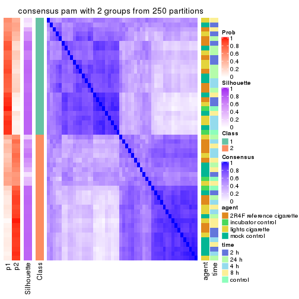
consensus_heatmap(res, k = 3)
consensus_heatmap(res, k = 4)
consensus_heatmap(res, k = 5)
consensus_heatmap(res, k = 6)
Heatmaps for the membership of samples in all partitions to see how consistent they are:
membership_heatmap(res, k = 2)
membership_heatmap(res, k = 3)
membership_heatmap(res, k = 4)
membership_heatmap(res, k = 5)
membership_heatmap(res, k = 6)
As soon as we have had the classes for columns, we can look for signatures which are significantly different between classes which can be candidate marks for certain classes. Following are the heatmaps for signatures.
Signature heatmaps where rows are scaled:
get_signatures(res, k = 2)

get_signatures(res, k = 3)

get_signatures(res, k = 4)

get_signatures(res, k = 5)
get_signatures(res, k = 6)

Signature heatmaps where rows are not scaled:
get_signatures(res, k = 2, scale_rows = FALSE)

get_signatures(res, k = 3, scale_rows = FALSE)

get_signatures(res, k = 4, scale_rows = FALSE)

get_signatures(res, k = 5, scale_rows = FALSE)
get_signatures(res, k = 6, scale_rows = FALSE)

Compare the overlap of signatures from different k:
compare_signatures(res)
get_signature() returns a data frame invisibly. TO get the list of signatures, the function
call should be assigned to a variable explicitly. In following code, if plot argument is set
to FALSE, no heatmap is plotted while only the differential analysis is performed.
# code only for demonstration
tb = get_signature(res, k = ..., plot = FALSE)
An example of the output of tb is:
#> which_row fdr mean_1 mean_2 scaled_mean_1 scaled_mean_2 km
#> 1 38 0.042760348 8.373488 9.131774 -0.5533452 0.5164555 1
#> 2 40 0.018707592 7.106213 8.469186 -0.6173731 0.5762149 1
#> 3 55 0.019134737 10.221463 11.207825 -0.6159697 0.5749050 1
#> 4 59 0.006059896 5.921854 7.869574 -0.6899429 0.6439467 1
#> 5 60 0.018055526 8.928898 10.211722 -0.6204761 0.5791110 1
#> 6 98 0.009384629 15.714769 14.887706 0.6635654 -0.6193277 2
...
The columns in tb are:
which_row: row indices corresponding to the input matrix.fdr: FDR for the differential test. mean_x: The mean value in group x.scaled_mean_x: The mean value in group x after rows are scaled.km: Row groups if k-means clustering is applied to rows.UMAP plot which shows how samples are separated.
dimension_reduction(res, k = 2, method = "UMAP")
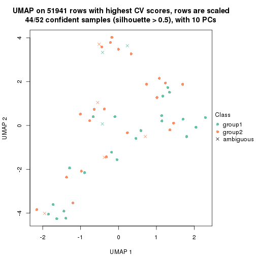
dimension_reduction(res, k = 3, method = "UMAP")
dimension_reduction(res, k = 4, method = "UMAP")
dimension_reduction(res, k = 5, method = "UMAP")
dimension_reduction(res, k = 6, method = "UMAP")
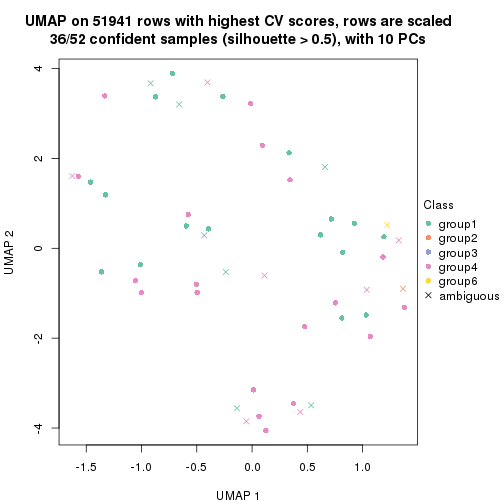
Following heatmap shows how subgroups are split when increasing k:
collect_classes(res)
Test correlation between subgroups and known annotations. If the known annotation is numeric, one-way ANOVA test is applied, and if the known annotation is discrete, chi-squared contingency table test is applied.
test_to_known_factors(res)
#> n agent(p) time(p) k
#> CV:pam 44 0.907 0.422 2
#> CV:pam 43 0.929 0.467 3
#> CV:pam 40 0.901 0.567 4
#> CV:pam 35 0.882 0.751 5
#> CV:pam 36 0.881 0.660 6
If matrix rows can be associated to genes, consider to use GO_Enrichment(res,
...) to perform function enrichment for the signature genes.
The object with results only for a single top-value method and a single partition method can be extracted as:
res = res_list["CV", "mclust"]
# you can also extract it by
# res = res_list["CV:mclust"]
A summary of res and all the functions that can be applied to it:
res
#> A 'ConsensusPartition' object with k = 2, 3, 4, 5, 6.
#> On a matrix with 51941 rows and 52 columns.
#> Top rows (1000, 2000, 3000, 4000, 5000) are extracted by 'CV' method.
#> Subgroups are detected by 'mclust' method.
#> Performed in total 1250 partitions by row resampling.
#> Best k for subgroups seems to be 3.
#>
#> Following methods can be applied to this 'ConsensusPartition' object:
#> [1] "cola_report" "collect_classes" "collect_plots"
#> [4] "collect_stats" "colnames" "compare_signatures"
#> [7] "consensus_heatmap" "dimension_reduction" "functional_enrichment"
#> [10] "get_anno_col" "get_anno" "get_classes"
#> [13] "get_consensus" "get_matrix" "get_membership"
#> [16] "get_param" "get_signatures" "get_stats"
#> [19] "is_best_k" "is_stable_k" "membership_heatmap"
#> [22] "ncol" "nrow" "plot_ecdf"
#> [25] "rownames" "select_partition_number" "show"
#> [28] "suggest_best_k" "test_to_known_factors"
collect_plots() function collects all the plots made from res for all k (number of partitions)
into one single page to provide an easy and fast comparison between different k.
collect_plots(res)
The plots are:
k and the heatmap of
predicted classes for each k.k.k.k.All the plots in panels can be made by individual functions and they are plotted later in this section.
select_partition_number() produces several plots showing different
statistics for choosing “optimized” k. There are following statistics:
k;k, the area increased is defined as \(A_k - A_{k-1}\).The detailed explanations of these statistics can be found in the cola vignette.
Generally speaking, lower PAC score, higher mean silhouette score or higher
concordance corresponds to better partition. Rand index and Jaccard index
measure how similar the current partition is compared to partition with k-1.
If they are too similar, we won't accept k is better than k-1.
select_partition_number(res)
The numeric values for all these statistics can be obtained by get_stats().
get_stats(res)
#> k 1-PAC mean_silhouette concordance area_increased Rand Jaccard
#> 2 2 0.1514 0.701 0.839 0.2720 0.823 0.823
#> 3 3 0.0442 0.491 0.638 0.9345 0.823 0.789
#> 4 4 0.1964 0.304 0.599 0.2926 0.520 0.354
#> 5 5 0.3776 0.336 0.635 0.1131 0.784 0.433
#> 6 6 0.4898 0.359 0.608 0.0584 0.909 0.629
suggest_best_k() suggests the best \(k\) based on these statistics. The rules are as follows:
NA.suggest_best_k(res)
#> [1] 3
Following shows the table of the partitions (You need to click the show/hide
code output link to see it). The membership matrix (columns with name p*)
is inferred by
clue::cl_consensus()
function with the SE method. Basically the value in the membership matrix
represents the probability to belong to a certain group. The finall class
label for an item is determined with the group with highest probability it
belongs to.
In get_classes() function, the entropy is calculated from the membership
matrix and the silhouette score is calculated from the consensus matrix.
cbind(get_classes(res, k = 2), get_membership(res, k = 2))
#> class entropy silhouette p1 p2
#> GSM270543 1 0.494 0.7699 0.892 0.108
#> GSM270544 1 0.373 0.7925 0.928 0.072
#> GSM270545 1 0.821 0.4205 0.744 0.256
#> GSM270546 1 0.506 0.7757 0.888 0.112
#> GSM270547 1 0.760 0.5789 0.780 0.220
#> GSM270548 1 0.402 0.7910 0.920 0.080
#> GSM270549 1 0.295 0.7974 0.948 0.052
#> GSM270550 2 0.971 0.9057 0.400 0.600
#> GSM270551 1 0.358 0.8054 0.932 0.068
#> GSM270552 1 0.494 0.7755 0.892 0.108
#> GSM270553 1 0.184 0.8027 0.972 0.028
#> GSM270554 1 0.563 0.7609 0.868 0.132
#> GSM270555 1 0.416 0.7983 0.916 0.084
#> GSM270556 1 0.494 0.7898 0.892 0.108
#> GSM270557 1 0.373 0.8083 0.928 0.072
#> GSM270558 1 0.552 0.7638 0.872 0.128
#> GSM270559 1 0.506 0.7803 0.888 0.112
#> GSM270560 1 0.388 0.8058 0.924 0.076
#> GSM270561 1 0.644 0.7308 0.836 0.164
#> GSM270562 1 0.242 0.8082 0.960 0.040
#> GSM270563 1 0.295 0.8102 0.948 0.052
#> GSM270564 1 0.584 0.7650 0.860 0.140
#> GSM270565 1 0.541 0.7619 0.876 0.124
#> GSM270566 1 0.204 0.8023 0.968 0.032
#> GSM270567 1 0.595 0.7511 0.856 0.144
#> GSM270568 1 0.482 0.7835 0.896 0.104
#> GSM270569 1 0.494 0.7850 0.892 0.108
#> GSM270570 1 0.506 0.7992 0.888 0.112
#> GSM270571 1 0.311 0.7952 0.944 0.056
#> GSM270572 1 0.506 0.7770 0.888 0.112
#> GSM270573 1 0.541 0.7607 0.876 0.124
#> GSM270574 1 0.494 0.7831 0.892 0.108
#> GSM270575 1 0.615 0.7471 0.848 0.152
#> GSM270576 1 0.388 0.8021 0.924 0.076
#> GSM270577 1 0.443 0.8004 0.908 0.092
#> GSM270578 1 0.388 0.8025 0.924 0.076
#> GSM270579 1 0.184 0.7947 0.972 0.028
#> GSM270580 1 0.482 0.7942 0.896 0.104
#> GSM270581 1 0.552 0.7232 0.872 0.128
#> GSM270582 1 0.653 0.7040 0.832 0.168
#> GSM270583 1 0.343 0.8075 0.936 0.064
#> GSM270584 2 0.991 0.9244 0.444 0.556
#> GSM270585 1 0.563 0.7668 0.868 0.132
#> GSM270586 1 0.969 -0.4085 0.604 0.396
#> GSM270587 2 0.983 0.9296 0.424 0.576
#> GSM270588 1 0.891 0.0912 0.692 0.308
#> GSM270589 1 0.821 0.4557 0.744 0.256
#> GSM270590 1 0.900 0.2001 0.684 0.316
#> GSM270591 2 0.994 0.8847 0.456 0.544
#> GSM270592 2 0.990 0.9256 0.440 0.560
#> GSM270593 1 0.552 0.7416 0.872 0.128
#> GSM270594 1 0.997 -0.6899 0.532 0.468
cbind(get_classes(res, k = 3), get_membership(res, k = 3))
#> class entropy silhouette p1 p2 p3
#> GSM270543 3 0.804 0.37780 0.248 NA 0.636
#> GSM270544 3 0.683 0.48461 0.168 NA 0.736
#> GSM270545 3 0.863 -0.09759 0.436 NA 0.464
#> GSM270546 3 0.825 0.36948 0.232 NA 0.628
#> GSM270547 3 0.849 0.09849 0.384 NA 0.520
#> GSM270548 3 0.747 0.43668 0.216 NA 0.684
#> GSM270549 3 0.683 0.48238 0.192 NA 0.728
#> GSM270550 1 0.362 0.76880 0.864 NA 0.136
#> GSM270551 3 0.385 0.60404 0.028 NA 0.884
#> GSM270552 3 0.947 0.33503 0.212 NA 0.488
#> GSM270553 3 0.641 0.58434 0.092 NA 0.764
#> GSM270554 3 0.971 0.28832 0.256 NA 0.452
#> GSM270555 3 0.607 0.57060 0.024 NA 0.728
#> GSM270556 3 0.451 0.59752 0.012 NA 0.832
#> GSM270557 3 0.698 0.57226 0.072 NA 0.708
#> GSM270558 3 0.717 0.47628 0.028 NA 0.568
#> GSM270559 3 0.562 0.54824 0.012 NA 0.744
#> GSM270560 3 0.634 0.58993 0.064 NA 0.756
#> GSM270561 3 0.970 0.24924 0.256 NA 0.456
#> GSM270562 3 0.526 0.58443 0.088 NA 0.828
#> GSM270563 3 0.500 0.59652 0.068 NA 0.840
#> GSM270564 3 0.948 0.31639 0.264 NA 0.496
#> GSM270565 3 0.917 0.38133 0.216 NA 0.540
#> GSM270566 3 0.624 0.54817 0.160 NA 0.768
#> GSM270567 3 0.954 0.30292 0.236 NA 0.484
#> GSM270568 3 0.742 0.47566 0.040 NA 0.572
#> GSM270569 3 0.501 0.58143 0.016 NA 0.804
#> GSM270570 3 0.556 0.60113 0.048 NA 0.800
#> GSM270571 3 0.657 0.52138 0.160 NA 0.752
#> GSM270572 3 0.718 0.45331 0.028 NA 0.564
#> GSM270573 3 0.682 0.51371 0.028 NA 0.644
#> GSM270574 3 0.749 0.47466 0.044 NA 0.576
#> GSM270575 3 0.656 0.50499 0.040 NA 0.708
#> GSM270576 3 0.437 0.59368 0.040 NA 0.864
#> GSM270577 3 0.803 0.50149 0.080 NA 0.584
#> GSM270578 3 0.643 0.53249 0.156 NA 0.760
#> GSM270579 3 0.654 0.53641 0.176 NA 0.748
#> GSM270580 3 0.522 0.59336 0.016 NA 0.788
#> GSM270581 3 0.744 0.34948 0.316 NA 0.628
#> GSM270582 3 0.934 0.00208 0.412 NA 0.424
#> GSM270583 3 0.784 0.50836 0.092 NA 0.636
#> GSM270584 1 0.400 0.78167 0.840 NA 0.160
#> GSM270585 3 0.954 0.29952 0.236 NA 0.484
#> GSM270586 1 0.758 0.56421 0.616 NA 0.324
#> GSM270587 1 0.398 0.77605 0.852 NA 0.144
#> GSM270588 1 0.722 0.67244 0.660 NA 0.284
#> GSM270589 1 0.825 0.54713 0.588 NA 0.312
#> GSM270590 1 0.840 0.54704 0.592 NA 0.288
#> GSM270591 1 0.472 0.76777 0.824 NA 0.160
#> GSM270592 1 0.397 0.77518 0.860 NA 0.132
#> GSM270593 3 0.860 0.31647 0.284 NA 0.580
#> GSM270594 1 0.674 0.66643 0.688 NA 0.272
cbind(get_classes(res, k = 4), get_membership(res, k = 4))
#> class entropy silhouette p1 p2 p3 p4
#> GSM270543 4 0.6046 0.42084 0.044 0.304 0.012 0.640
#> GSM270544 4 0.6614 0.38051 0.056 0.152 0.092 0.700
#> GSM270545 2 0.5656 0.16469 0.012 0.592 0.012 0.384
#> GSM270546 4 0.5389 0.44318 0.016 0.208 0.040 0.736
#> GSM270547 2 0.6597 0.02886 0.060 0.512 0.008 0.420
#> GSM270548 4 0.6174 0.45794 0.020 0.276 0.048 0.656
#> GSM270549 4 0.8298 0.40210 0.076 0.324 0.108 0.492
#> GSM270550 2 0.2408 0.49871 0.000 0.896 0.000 0.104
#> GSM270551 1 0.8325 0.19244 0.452 0.040 0.168 0.340
#> GSM270552 1 0.8641 0.20372 0.476 0.300 0.140 0.084
#> GSM270553 1 0.7170 0.36749 0.612 0.128 0.024 0.236
#> GSM270554 1 0.8716 0.14718 0.452 0.320 0.148 0.080
#> GSM270555 1 0.4171 0.48444 0.840 0.012 0.096 0.052
#> GSM270556 1 0.6209 0.47588 0.656 0.040 0.028 0.276
#> GSM270557 1 0.6306 0.51479 0.692 0.084 0.024 0.200
#> GSM270558 1 0.3174 0.48753 0.888 0.008 0.076 0.028
#> GSM270559 1 0.7045 0.02387 0.532 0.000 0.328 0.140
#> GSM270560 1 0.6803 0.50963 0.644 0.076 0.036 0.244
#> GSM270561 2 0.8847 0.00082 0.360 0.408 0.144 0.088
#> GSM270562 4 0.6997 0.26427 0.248 0.144 0.008 0.600
#> GSM270563 4 0.8868 -0.09625 0.320 0.120 0.116 0.444
#> GSM270564 2 0.9446 -0.02736 0.312 0.368 0.124 0.196
#> GSM270565 1 0.9378 0.12583 0.380 0.320 0.136 0.164
#> GSM270566 4 0.7322 0.39503 0.188 0.204 0.016 0.592
#> GSM270567 1 0.9377 0.00915 0.360 0.344 0.140 0.156
#> GSM270568 1 0.6491 0.26093 0.656 0.040 0.256 0.048
#> GSM270569 1 0.7477 0.20177 0.544 0.008 0.252 0.196
#> GSM270570 1 0.7944 0.29647 0.468 0.068 0.076 0.388
#> GSM270571 4 0.7077 0.35360 0.084 0.152 0.092 0.672
#> GSM270572 1 0.4815 0.47019 0.816 0.032 0.072 0.080
#> GSM270573 1 0.6307 0.34535 0.700 0.020 0.164 0.116
#> GSM270574 1 0.3396 0.53865 0.884 0.068 0.024 0.024
#> GSM270575 3 0.5855 0.00000 0.100 0.000 0.692 0.208
#> GSM270576 4 0.8239 -0.18959 0.236 0.020 0.304 0.440
#> GSM270577 1 0.5010 0.50454 0.796 0.112 0.072 0.020
#> GSM270578 4 0.8542 0.25317 0.148 0.140 0.164 0.548
#> GSM270579 2 0.8997 -0.09315 0.228 0.404 0.068 0.300
#> GSM270580 1 0.6124 0.35312 0.640 0.004 0.068 0.288
#> GSM270581 2 0.7136 0.09891 0.068 0.524 0.028 0.380
#> GSM270582 2 0.7915 0.40716 0.184 0.596 0.140 0.080
#> GSM270583 1 0.7173 0.50233 0.656 0.160 0.056 0.128
#> GSM270584 2 0.2101 0.53785 0.012 0.928 0.000 0.060
#> GSM270585 2 0.9181 -0.01380 0.348 0.384 0.124 0.144
#> GSM270586 2 0.6027 0.49392 0.064 0.748 0.080 0.108
#> GSM270587 2 0.0921 0.53657 0.000 0.972 0.000 0.028
#> GSM270588 2 0.3617 0.54087 0.056 0.876 0.020 0.048
#> GSM270589 2 0.4233 0.53611 0.088 0.844 0.032 0.036
#> GSM270590 2 0.4759 0.53220 0.088 0.820 0.044 0.048
#> GSM270591 2 0.3490 0.46404 0.004 0.836 0.004 0.156
#> GSM270592 2 0.1792 0.52408 0.000 0.932 0.000 0.068
#> GSM270593 4 0.8031 0.12538 0.028 0.404 0.148 0.420
#> GSM270594 2 0.4834 0.36686 0.012 0.728 0.008 0.252
cbind(get_classes(res, k = 5), get_membership(res, k = 5))
#> class entropy silhouette p1 p2 p3 p4 p5
#> GSM270543 4 0.4433 0.4411 0.124 0.052 0.012 0.796 0.016
#> GSM270544 4 0.4284 0.3983 0.032 0.020 0.048 0.824 0.076
#> GSM270545 1 0.4675 0.1628 0.544 0.004 0.008 0.444 0.000
#> GSM270546 4 0.2874 0.4223 0.060 0.012 0.008 0.892 0.028
#> GSM270547 4 0.5590 -0.0267 0.436 0.052 0.000 0.504 0.008
#> GSM270548 4 0.5435 0.4352 0.080 0.032 0.028 0.748 0.112
#> GSM270549 4 0.6587 0.3666 0.084 0.080 0.016 0.648 0.172
#> GSM270550 1 0.0579 0.7321 0.984 0.008 0.000 0.008 0.000
#> GSM270551 3 0.8247 0.1091 0.004 0.224 0.396 0.120 0.256
#> GSM270552 2 0.4205 0.4539 0.056 0.816 0.100 0.012 0.016
#> GSM270553 2 0.8050 -0.0166 0.024 0.496 0.220 0.156 0.104
#> GSM270554 2 0.4699 0.4690 0.112 0.776 0.088 0.004 0.020
#> GSM270555 3 0.6316 0.4959 0.004 0.272 0.588 0.020 0.116
#> GSM270556 3 0.7240 0.2729 0.000 0.332 0.476 0.076 0.116
#> GSM270557 2 0.6708 0.0662 0.028 0.600 0.260 0.056 0.056
#> GSM270558 3 0.5100 0.4588 0.008 0.300 0.656 0.020 0.016
#> GSM270559 3 0.6041 0.3152 0.000 0.044 0.580 0.052 0.324
#> GSM270560 2 0.7181 -0.1075 0.024 0.492 0.356 0.076 0.052
#> GSM270561 2 0.4817 0.4943 0.160 0.764 0.032 0.028 0.016
#> GSM270562 4 0.8712 0.0255 0.036 0.268 0.208 0.384 0.104
#> GSM270563 2 0.7955 0.0475 0.000 0.448 0.140 0.172 0.240
#> GSM270564 2 0.4638 0.5015 0.144 0.776 0.008 0.052 0.020
#> GSM270565 2 0.5606 0.4723 0.088 0.740 0.100 0.048 0.024
#> GSM270566 4 0.8894 0.1852 0.116 0.232 0.112 0.436 0.104
#> GSM270567 2 0.4716 0.5039 0.128 0.784 0.040 0.032 0.016
#> GSM270568 3 0.6124 0.4741 0.004 0.180 0.668 0.076 0.072
#> GSM270569 3 0.7646 0.3868 0.008 0.220 0.452 0.048 0.272
#> GSM270570 2 0.7851 -0.1234 0.004 0.392 0.344 0.076 0.184
#> GSM270571 4 0.6710 0.2924 0.024 0.084 0.084 0.648 0.160
#> GSM270572 3 0.4905 0.4249 0.008 0.308 0.656 0.024 0.004
#> GSM270573 3 0.4309 0.5213 0.000 0.136 0.792 0.044 0.028
#> GSM270574 2 0.5832 -0.2073 0.028 0.504 0.436 0.012 0.020
#> GSM270575 5 0.3689 0.3949 0.000 0.004 0.092 0.076 0.828
#> GSM270576 5 0.7316 0.2006 0.008 0.100 0.072 0.340 0.480
#> GSM270577 3 0.6363 0.2289 0.060 0.404 0.500 0.024 0.012
#> GSM270578 4 0.7460 -0.0214 0.076 0.104 0.012 0.484 0.324
#> GSM270579 4 0.9023 0.1540 0.104 0.312 0.112 0.364 0.108
#> GSM270580 3 0.7525 0.2802 0.004 0.268 0.460 0.048 0.220
#> GSM270581 1 0.8336 -0.1605 0.324 0.316 0.008 0.256 0.096
#> GSM270582 2 0.5962 0.0091 0.396 0.532 0.024 0.040 0.008
#> GSM270583 2 0.6204 0.2165 0.036 0.612 0.280 0.012 0.060
#> GSM270584 1 0.0703 0.7366 0.976 0.024 0.000 0.000 0.000
#> GSM270585 2 0.3960 0.5153 0.104 0.828 0.020 0.040 0.008
#> GSM270586 1 0.4921 0.4868 0.640 0.320 0.000 0.004 0.036
#> GSM270587 1 0.0609 0.7357 0.980 0.020 0.000 0.000 0.000
#> GSM270588 1 0.2396 0.7244 0.900 0.084 0.008 0.004 0.004
#> GSM270589 1 0.3984 0.6614 0.788 0.180 0.012 0.012 0.008
#> GSM270590 1 0.3883 0.6170 0.744 0.244 0.008 0.004 0.000
#> GSM270591 1 0.1901 0.7076 0.928 0.012 0.004 0.056 0.000
#> GSM270592 1 0.0451 0.7333 0.988 0.008 0.004 0.000 0.000
#> GSM270593 4 0.7025 0.2889 0.288 0.016 0.064 0.552 0.080
#> GSM270594 1 0.4114 0.4963 0.712 0.016 0.000 0.272 0.000
cbind(get_classes(res, k = 6), get_membership(res, k = 6))
#> class entropy silhouette p1 p2 p3 p4 p5 p6
#> GSM270543 4 0.5033 0.4835 0.068 0.068 0.008 0.736 0.116 0.004
#> GSM270544 4 0.4470 0.4570 0.004 0.020 0.076 0.784 0.088 0.028
#> GSM270545 1 0.4669 0.0483 0.504 0.004 0.004 0.468 0.012 0.008
#> GSM270546 4 0.3553 0.4866 0.024 0.032 0.012 0.844 0.080 0.008
#> GSM270547 4 0.6379 0.2343 0.328 0.068 0.024 0.528 0.048 0.004
#> GSM270548 4 0.5593 0.4894 0.044 0.040 0.064 0.720 0.112 0.020
#> GSM270549 4 0.6535 0.4136 0.028 0.068 0.120 0.628 0.140 0.016
#> GSM270550 1 0.0458 0.7606 0.984 0.016 0.000 0.000 0.000 0.000
#> GSM270551 5 0.7503 0.2317 0.000 0.104 0.184 0.032 0.464 0.216
#> GSM270552 2 0.4912 0.4554 0.064 0.740 0.004 0.004 0.068 0.120
#> GSM270553 2 0.7444 -0.1118 0.008 0.416 0.004 0.108 0.280 0.184
#> GSM270554 2 0.4203 0.4723 0.084 0.784 0.008 0.004 0.012 0.108
#> GSM270555 6 0.6445 0.3160 0.004 0.120 0.084 0.008 0.196 0.588
#> GSM270556 5 0.6908 0.1883 0.004 0.144 0.044 0.016 0.412 0.380
#> GSM270557 2 0.6892 0.0135 0.020 0.484 0.008 0.024 0.220 0.244
#> GSM270558 6 0.4775 0.5134 0.004 0.224 0.004 0.008 0.068 0.692
#> GSM270559 6 0.6545 0.0816 0.000 0.012 0.316 0.032 0.160 0.480
#> GSM270560 2 0.7297 -0.2792 0.012 0.344 0.016 0.028 0.280 0.320
#> GSM270561 2 0.4840 0.5277 0.140 0.748 0.004 0.020 0.040 0.048
#> GSM270562 5 0.7854 0.0905 0.012 0.196 0.012 0.292 0.368 0.120
#> GSM270563 5 0.7732 0.1687 0.004 0.348 0.108 0.092 0.388 0.060
#> GSM270564 2 0.4879 0.4976 0.092 0.768 0.012 0.044 0.056 0.028
#> GSM270565 2 0.5459 0.4921 0.064 0.716 0.008 0.024 0.064 0.124
#> GSM270566 4 0.8178 0.0799 0.064 0.192 0.016 0.356 0.308 0.064
#> GSM270567 2 0.4623 0.5060 0.088 0.768 0.000 0.016 0.084 0.044
#> GSM270568 6 0.5792 0.5079 0.004 0.124 0.060 0.076 0.044 0.692
#> GSM270569 5 0.7386 0.1385 0.000 0.064 0.208 0.024 0.388 0.316
#> GSM270570 5 0.6404 0.3786 0.004 0.260 0.020 0.016 0.536 0.164
#> GSM270571 4 0.6979 0.3498 0.012 0.088 0.060 0.524 0.280 0.036
#> GSM270572 6 0.5218 0.5298 0.012 0.224 0.012 0.012 0.064 0.676
#> GSM270573 6 0.4614 0.4406 0.004 0.052 0.044 0.028 0.092 0.780
#> GSM270574 6 0.5148 0.3120 0.008 0.432 0.000 0.004 0.052 0.504
#> GSM270575 3 0.2839 0.3693 0.000 0.000 0.876 0.032 0.052 0.040
#> GSM270576 3 0.7807 0.2417 0.004 0.056 0.364 0.216 0.308 0.052
#> GSM270577 6 0.6558 0.4137 0.024 0.336 0.008 0.032 0.096 0.504
#> GSM270578 4 0.8059 -0.0321 0.048 0.088 0.252 0.388 0.216 0.008
#> GSM270579 4 0.8807 0.1925 0.044 0.220 0.056 0.360 0.196 0.124
#> GSM270580 5 0.6458 0.3095 0.008 0.132 0.052 0.004 0.552 0.252
#> GSM270581 2 0.8418 -0.1060 0.264 0.316 0.072 0.236 0.108 0.004
#> GSM270582 2 0.5763 0.2134 0.344 0.556 0.004 0.056 0.016 0.024
#> GSM270583 2 0.6029 0.0951 0.008 0.572 0.032 0.008 0.088 0.292
#> GSM270584 1 0.0837 0.7594 0.972 0.020 0.000 0.004 0.004 0.000
#> GSM270585 2 0.3887 0.5278 0.064 0.832 0.008 0.024 0.036 0.036
#> GSM270586 1 0.4979 0.4090 0.596 0.348 0.032 0.012 0.012 0.000
#> GSM270587 1 0.1003 0.7631 0.964 0.028 0.004 0.004 0.000 0.000
#> GSM270588 1 0.2244 0.7433 0.888 0.100 0.000 0.004 0.004 0.004
#> GSM270589 1 0.3883 0.5919 0.716 0.264 0.004 0.004 0.004 0.008
#> GSM270590 1 0.3937 0.5674 0.700 0.280 0.004 0.000 0.008 0.008
#> GSM270591 1 0.1889 0.7395 0.920 0.020 0.004 0.056 0.000 0.000
#> GSM270592 1 0.0520 0.7581 0.984 0.008 0.000 0.008 0.000 0.000
#> GSM270593 4 0.6247 0.3728 0.200 0.032 0.056 0.632 0.012 0.068
#> GSM270594 1 0.5020 0.4421 0.640 0.028 0.012 0.296 0.020 0.004
Heatmaps for the consensus matrix. It visualizes the probability of two samples to be in a same group.
consensus_heatmap(res, k = 2)

consensus_heatmap(res, k = 3)
consensus_heatmap(res, k = 4)
consensus_heatmap(res, k = 5)
consensus_heatmap(res, k = 6)
Heatmaps for the membership of samples in all partitions to see how consistent they are:
membership_heatmap(res, k = 2)
membership_heatmap(res, k = 3)
membership_heatmap(res, k = 4)
membership_heatmap(res, k = 5)
membership_heatmap(res, k = 6)
As soon as we have had the classes for columns, we can look for signatures which are significantly different between classes which can be candidate marks for certain classes. Following are the heatmaps for signatures.
Signature heatmaps where rows are scaled:
get_signatures(res, k = 2)
get_signatures(res, k = 3)
get_signatures(res, k = 4)
get_signatures(res, k = 5)
get_signatures(res, k = 6)
Signature heatmaps where rows are not scaled:
get_signatures(res, k = 2, scale_rows = FALSE)
get_signatures(res, k = 3, scale_rows = FALSE)
get_signatures(res, k = 4, scale_rows = FALSE)
get_signatures(res, k = 5, scale_rows = FALSE)
get_signatures(res, k = 6, scale_rows = FALSE)
Compare the overlap of signatures from different k:
compare_signatures(res)
get_signature() returns a data frame invisibly. TO get the list of signatures, the function
call should be assigned to a variable explicitly. In following code, if plot argument is set
to FALSE, no heatmap is plotted while only the differential analysis is performed.
# code only for demonstration
tb = get_signature(res, k = ..., plot = FALSE)
An example of the output of tb is:
#> which_row fdr mean_1 mean_2 scaled_mean_1 scaled_mean_2 km
#> 1 38 0.042760348 8.373488 9.131774 -0.5533452 0.5164555 1
#> 2 40 0.018707592 7.106213 8.469186 -0.6173731 0.5762149 1
#> 3 55 0.019134737 10.221463 11.207825 -0.6159697 0.5749050 1
#> 4 59 0.006059896 5.921854 7.869574 -0.6899429 0.6439467 1
#> 5 60 0.018055526 8.928898 10.211722 -0.6204761 0.5791110 1
#> 6 98 0.009384629 15.714769 14.887706 0.6635654 -0.6193277 2
...
The columns in tb are:
which_row: row indices corresponding to the input matrix.fdr: FDR for the differential test. mean_x: The mean value in group x.scaled_mean_x: The mean value in group x after rows are scaled.km: Row groups if k-means clustering is applied to rows.UMAP plot which shows how samples are separated.
dimension_reduction(res, k = 2, method = "UMAP")
dimension_reduction(res, k = 3, method = "UMAP")
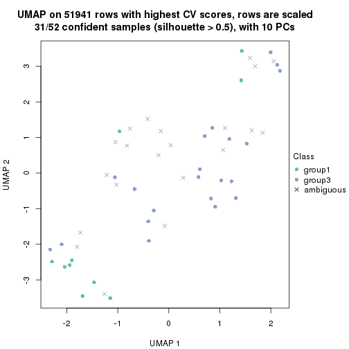
dimension_reduction(res, k = 4, method = "UMAP")
dimension_reduction(res, k = 5, method = "UMAP")
dimension_reduction(res, k = 6, method = "UMAP")
Following heatmap shows how subgroups are split when increasing k:
collect_classes(res)
Test correlation between subgroups and known annotations. If the known annotation is numeric, one-way ANOVA test is applied, and if the known annotation is discrete, chi-squared contingency table test is applied.
test_to_known_factors(res)
#> n agent(p) time(p) k
#> CV:mclust 46 0.00648 0.0255 2
#> CV:mclust 31 0.00613 0.0310 3
#> CV:mclust 11 0.15517 0.3073 4
#> CV:mclust 12 0.18813 0.3414 5
#> CV:mclust 14 0.12005 0.2675 6
If matrix rows can be associated to genes, consider to use GO_Enrichment(res,
...) to perform function enrichment for the signature genes.
The object with results only for a single top-value method and a single partition method can be extracted as:
res = res_list["CV", "NMF"]
# you can also extract it by
# res = res_list["CV:NMF"]
A summary of res and all the functions that can be applied to it:
res
#> A 'ConsensusPartition' object with k = 2, 3, 4, 5, 6.
#> On a matrix with 51941 rows and 52 columns.
#> Top rows (1000, 2000, 3000, 4000, 5000) are extracted by 'CV' method.
#> Subgroups are detected by 'NMF' method.
#> Performed in total 1250 partitions by row resampling.
#> Best k for subgroups seems to be 2.
#>
#> Following methods can be applied to this 'ConsensusPartition' object:
#> [1] "cola_report" "collect_classes" "collect_plots"
#> [4] "collect_stats" "colnames" "compare_signatures"
#> [7] "consensus_heatmap" "dimension_reduction" "functional_enrichment"
#> [10] "get_anno_col" "get_anno" "get_classes"
#> [13] "get_consensus" "get_matrix" "get_membership"
#> [16] "get_param" "get_signatures" "get_stats"
#> [19] "is_best_k" "is_stable_k" "membership_heatmap"
#> [22] "ncol" "nrow" "plot_ecdf"
#> [25] "rownames" "select_partition_number" "show"
#> [28] "suggest_best_k" "test_to_known_factors"
collect_plots() function collects all the plots made from res for all k (number of partitions)
into one single page to provide an easy and fast comparison between different k.
collect_plots(res)
The plots are:
k and the heatmap of
predicted classes for each k.k.k.k.All the plots in panels can be made by individual functions and they are plotted later in this section.
select_partition_number() produces several plots showing different
statistics for choosing “optimized” k. There are following statistics:
k;k, the area increased is defined as \(A_k - A_{k-1}\).The detailed explanations of these statistics can be found in the cola vignette.
Generally speaking, lower PAC score, higher mean silhouette score or higher
concordance corresponds to better partition. Rand index and Jaccard index
measure how similar the current partition is compared to partition with k-1.
If they are too similar, we won't accept k is better than k-1.
select_partition_number(res)
The numeric values for all these statistics can be obtained by get_stats().
get_stats(res)
#> k 1-PAC mean_silhouette concordance area_increased Rand Jaccard
#> 2 2 0.286 0.742 0.858 0.4954 0.490 0.490
#> 3 3 0.212 0.431 0.641 0.3373 0.839 0.682
#> 4 4 0.263 0.343 0.559 0.1235 0.827 0.564
#> 5 5 0.314 0.209 0.511 0.0673 0.857 0.521
#> 6 6 0.401 0.136 0.423 0.0426 0.817 0.355
suggest_best_k() suggests the best \(k\) based on these statistics. The rules are as follows:
NA.suggest_best_k(res)
#> [1] 2
Following shows the table of the partitions (You need to click the show/hide
code output link to see it). The membership matrix (columns with name p*)
is inferred by
clue::cl_consensus()
function with the SE method. Basically the value in the membership matrix
represents the probability to belong to a certain group. The finall class
label for an item is determined with the group with highest probability it
belongs to.
In get_classes() function, the entropy is calculated from the membership
matrix and the silhouette score is calculated from the consensus matrix.
cbind(get_classes(res, k = 2), get_membership(res, k = 2))
#> class entropy silhouette p1 p2
#> GSM270543 1 0.2778 0.8410 0.952 0.048
#> GSM270544 1 0.6148 0.8029 0.848 0.152
#> GSM270545 1 0.1414 0.8364 0.980 0.020
#> GSM270546 1 0.2603 0.8396 0.956 0.044
#> GSM270547 1 0.4690 0.8331 0.900 0.100
#> GSM270548 1 0.3733 0.8434 0.928 0.072
#> GSM270549 1 0.3431 0.8464 0.936 0.064
#> GSM270550 1 0.2043 0.8402 0.968 0.032
#> GSM270551 2 0.4562 0.8560 0.096 0.904
#> GSM270552 2 0.5519 0.8295 0.128 0.872
#> GSM270553 2 0.3879 0.8599 0.076 0.924
#> GSM270554 2 0.7299 0.7466 0.204 0.796
#> GSM270555 2 0.1184 0.8512 0.016 0.984
#> GSM270556 2 0.2423 0.8604 0.040 0.960
#> GSM270557 2 0.2236 0.8606 0.036 0.964
#> GSM270558 2 0.2043 0.8576 0.032 0.968
#> GSM270559 2 0.3431 0.8524 0.064 0.936
#> GSM270560 2 0.2778 0.8589 0.048 0.952
#> GSM270561 2 0.8713 0.6501 0.292 0.708
#> GSM270562 2 0.9833 0.3255 0.424 0.576
#> GSM270563 2 0.6438 0.8071 0.164 0.836
#> GSM270564 2 0.9754 0.3184 0.408 0.592
#> GSM270565 2 0.9427 0.5101 0.360 0.640
#> GSM270566 1 0.9998 -0.0572 0.508 0.492
#> GSM270567 2 0.9522 0.4083 0.372 0.628
#> GSM270568 2 0.4815 0.8399 0.104 0.896
#> GSM270569 2 0.2603 0.8522 0.044 0.956
#> GSM270570 2 0.4690 0.8506 0.100 0.900
#> GSM270571 1 0.5294 0.8250 0.880 0.120
#> GSM270572 2 0.3274 0.8604 0.060 0.940
#> GSM270573 2 0.3274 0.8581 0.060 0.940
#> GSM270574 2 0.0938 0.8505 0.012 0.988
#> GSM270575 2 0.5737 0.8345 0.136 0.864
#> GSM270576 1 0.9933 0.1111 0.548 0.452
#> GSM270577 2 0.5737 0.8294 0.136 0.864
#> GSM270578 1 0.8267 0.6527 0.740 0.260
#> GSM270579 1 0.8016 0.6726 0.756 0.244
#> GSM270580 2 0.3431 0.8596 0.064 0.936
#> GSM270581 1 0.3114 0.8429 0.944 0.056
#> GSM270582 1 0.9087 0.5685 0.676 0.324
#> GSM270583 2 0.1843 0.8544 0.028 0.972
#> GSM270584 1 0.1414 0.8372 0.980 0.020
#> GSM270585 1 0.9754 0.3896 0.592 0.408
#> GSM270586 1 0.3431 0.8429 0.936 0.064
#> GSM270587 1 0.3879 0.8404 0.924 0.076
#> GSM270588 1 0.9393 0.4921 0.644 0.356
#> GSM270589 1 0.7056 0.7674 0.808 0.192
#> GSM270590 1 0.5059 0.8294 0.888 0.112
#> GSM270591 1 0.4022 0.8409 0.920 0.080
#> GSM270592 1 0.1184 0.8379 0.984 0.016
#> GSM270593 1 0.2778 0.8398 0.952 0.048
#> GSM270594 1 0.1633 0.8392 0.976 0.024
cbind(get_classes(res, k = 3), get_membership(res, k = 3))
#> class entropy silhouette p1 p2 p3
#> GSM270543 1 0.514 0.56348 0.832 0.064 0.104
#> GSM270544 1 0.782 0.43245 0.660 0.116 0.224
#> GSM270545 1 0.341 0.56814 0.876 0.124 0.000
#> GSM270546 1 0.489 0.55754 0.844 0.060 0.096
#> GSM270547 1 0.534 0.57411 0.824 0.080 0.096
#> GSM270548 1 0.498 0.57514 0.840 0.096 0.064
#> GSM270549 1 0.533 0.57933 0.812 0.144 0.044
#> GSM270550 1 0.514 0.50237 0.748 0.252 0.000
#> GSM270551 3 0.596 0.63140 0.044 0.188 0.768
#> GSM270552 3 0.705 0.34360 0.020 0.456 0.524
#> GSM270553 3 0.547 0.62787 0.052 0.140 0.808
#> GSM270554 2 0.659 0.26664 0.032 0.688 0.280
#> GSM270555 3 0.506 0.63458 0.008 0.208 0.784
#> GSM270556 3 0.582 0.63432 0.064 0.144 0.792
#> GSM270557 3 0.536 0.63193 0.032 0.168 0.800
#> GSM270558 3 0.570 0.62243 0.012 0.252 0.736
#> GSM270559 3 0.558 0.61796 0.024 0.204 0.772
#> GSM270560 3 0.393 0.63383 0.028 0.092 0.880
#> GSM270561 2 0.822 0.32835 0.108 0.604 0.288
#> GSM270562 3 0.908 0.20129 0.320 0.160 0.520
#> GSM270563 3 0.878 0.27378 0.136 0.316 0.548
#> GSM270564 3 0.907 -0.12619 0.136 0.416 0.448
#> GSM270565 2 0.855 0.28633 0.132 0.584 0.284
#> GSM270566 1 0.943 0.07035 0.432 0.176 0.392
#> GSM270567 2 0.924 0.22548 0.160 0.472 0.368
#> GSM270568 3 0.826 0.44765 0.076 0.436 0.488
#> GSM270569 3 0.498 0.63731 0.020 0.168 0.812
#> GSM270570 3 0.662 0.60297 0.068 0.196 0.736
#> GSM270571 1 0.760 0.47524 0.688 0.172 0.140
#> GSM270572 3 0.718 0.43886 0.024 0.464 0.512
#> GSM270573 3 0.751 0.54978 0.052 0.344 0.604
#> GSM270574 3 0.581 0.59335 0.004 0.304 0.692
#> GSM270575 3 0.800 0.50183 0.096 0.284 0.620
#> GSM270576 1 0.946 0.07090 0.428 0.180 0.392
#> GSM270577 3 0.800 0.34193 0.060 0.464 0.476
#> GSM270578 1 0.846 0.35839 0.608 0.148 0.244
#> GSM270579 1 0.855 0.27483 0.568 0.312 0.120
#> GSM270580 3 0.541 0.60098 0.052 0.136 0.812
#> GSM270581 1 0.730 0.44181 0.664 0.272 0.064
#> GSM270582 2 0.878 0.41255 0.280 0.568 0.152
#> GSM270583 3 0.660 0.48243 0.008 0.428 0.564
#> GSM270584 1 0.543 0.46887 0.716 0.284 0.000
#> GSM270585 2 0.885 0.48721 0.236 0.576 0.188
#> GSM270586 1 0.695 0.07586 0.512 0.472 0.016
#> GSM270587 1 0.725 0.17334 0.536 0.436 0.028
#> GSM270588 2 0.798 0.47876 0.248 0.640 0.112
#> GSM270589 2 0.706 0.26377 0.352 0.616 0.032
#> GSM270590 2 0.766 0.00693 0.452 0.504 0.044
#> GSM270591 1 0.681 0.52220 0.716 0.220 0.064
#> GSM270592 1 0.588 0.38155 0.652 0.348 0.000
#> GSM270593 1 0.598 0.53511 0.744 0.228 0.028
#> GSM270594 1 0.512 0.54596 0.788 0.200 0.012
cbind(get_classes(res, k = 4), get_membership(res, k = 4))
#> class entropy silhouette p1 p2 p3 p4
#> GSM270543 4 0.645 0.03137 0.032 0.020 0.440 0.508
#> GSM270544 4 0.855 -0.07076 0.116 0.080 0.400 0.404
#> GSM270545 4 0.280 0.50522 0.000 0.012 0.100 0.888
#> GSM270546 4 0.583 0.21823 0.008 0.024 0.380 0.588
#> GSM270547 4 0.626 0.37377 0.056 0.032 0.228 0.684
#> GSM270548 4 0.644 0.13534 0.012 0.048 0.384 0.556
#> GSM270549 4 0.691 0.35035 0.024 0.096 0.256 0.624
#> GSM270550 4 0.490 0.49387 0.012 0.156 0.048 0.784
#> GSM270551 1 0.694 0.54904 0.632 0.144 0.208 0.016
#> GSM270552 2 0.771 0.03038 0.332 0.528 0.092 0.048
#> GSM270553 1 0.716 0.47076 0.608 0.160 0.216 0.016
#> GSM270554 2 0.581 0.43897 0.172 0.732 0.020 0.076
#> GSM270555 1 0.522 0.60575 0.752 0.156 0.092 0.000
#> GSM270556 1 0.682 0.50412 0.616 0.128 0.248 0.008
#> GSM270557 1 0.664 0.52236 0.652 0.172 0.168 0.008
#> GSM270558 1 0.550 0.60847 0.748 0.176 0.056 0.020
#> GSM270559 1 0.664 0.54457 0.680 0.096 0.188 0.036
#> GSM270560 1 0.590 0.56020 0.720 0.072 0.188 0.020
#> GSM270561 2 0.768 0.48375 0.156 0.624 0.088 0.132
#> GSM270562 3 0.843 0.14544 0.372 0.072 0.440 0.116
#> GSM270563 3 0.850 0.00596 0.296 0.300 0.380 0.024
#> GSM270564 2 0.885 0.20794 0.228 0.472 0.220 0.080
#> GSM270565 2 0.871 0.37495 0.188 0.520 0.180 0.112
#> GSM270566 3 0.834 0.44940 0.212 0.060 0.528 0.200
#> GSM270567 2 0.936 0.11103 0.268 0.380 0.252 0.100
#> GSM270568 1 0.846 0.45984 0.520 0.256 0.140 0.084
#> GSM270569 1 0.667 0.56309 0.656 0.152 0.180 0.012
#> GSM270570 1 0.750 0.39380 0.600 0.148 0.216 0.036
#> GSM270571 3 0.829 0.12284 0.084 0.092 0.472 0.352
#> GSM270572 1 0.739 0.43710 0.548 0.328 0.092 0.032
#> GSM270573 1 0.691 0.56289 0.656 0.176 0.140 0.028
#> GSM270574 1 0.533 0.57496 0.736 0.200 0.060 0.004
#> GSM270575 1 0.888 0.22003 0.372 0.196 0.368 0.064
#> GSM270576 3 0.885 0.39087 0.176 0.104 0.492 0.228
#> GSM270577 1 0.846 0.27980 0.440 0.372 0.084 0.104
#> GSM270578 3 0.807 0.32617 0.116 0.060 0.524 0.300
#> GSM270579 4 0.827 0.24969 0.056 0.176 0.240 0.528
#> GSM270580 1 0.655 0.49297 0.660 0.156 0.176 0.008
#> GSM270581 3 0.837 0.06859 0.016 0.292 0.348 0.344
#> GSM270582 2 0.851 0.38604 0.088 0.516 0.140 0.256
#> GSM270583 1 0.723 0.32385 0.484 0.412 0.084 0.020
#> GSM270584 4 0.555 0.39868 0.000 0.200 0.084 0.716
#> GSM270585 2 0.818 0.41815 0.080 0.564 0.148 0.208
#> GSM270586 2 0.677 0.09982 0.004 0.476 0.080 0.440
#> GSM270587 4 0.668 0.19093 0.036 0.356 0.036 0.572
#> GSM270588 2 0.832 0.36033 0.108 0.524 0.092 0.276
#> GSM270589 2 0.584 0.21423 0.008 0.584 0.024 0.384
#> GSM270590 4 0.629 -0.11747 0.016 0.468 0.028 0.488
#> GSM270591 4 0.612 0.48276 0.084 0.100 0.072 0.744
#> GSM270592 4 0.508 0.31298 0.000 0.260 0.032 0.708
#> GSM270593 4 0.619 0.47035 0.032 0.096 0.152 0.720
#> GSM270594 4 0.423 0.52552 0.000 0.096 0.080 0.824
cbind(get_classes(res, k = 5), get_membership(res, k = 5))
#> class entropy silhouette p1 p2 p3 p4 p5
#> GSM270543 4 0.708 -0.0763 0.024 0.112 0.392 0.452 0.020
#> GSM270544 4 0.794 -0.0252 0.200 0.060 0.288 0.436 0.016
#> GSM270545 4 0.297 0.4865 0.020 0.000 0.044 0.884 0.052
#> GSM270546 4 0.534 0.2341 0.012 0.056 0.292 0.640 0.000
#> GSM270547 4 0.565 0.3186 0.004 0.052 0.268 0.648 0.028
#> GSM270548 3 0.656 0.0803 0.008 0.040 0.504 0.384 0.064
#> GSM270549 4 0.734 0.2308 0.044 0.020 0.260 0.532 0.144
#> GSM270550 4 0.570 0.3742 0.004 0.024 0.056 0.636 0.280
#> GSM270551 2 0.821 -0.1081 0.360 0.364 0.168 0.016 0.092
#> GSM270552 5 0.834 -0.0892 0.240 0.268 0.088 0.016 0.388
#> GSM270553 2 0.833 -0.0814 0.356 0.376 0.156 0.036 0.076
#> GSM270554 5 0.646 0.3429 0.136 0.156 0.028 0.028 0.652
#> GSM270555 1 0.696 0.2336 0.600 0.208 0.088 0.012 0.092
#> GSM270556 1 0.738 0.0903 0.460 0.292 0.212 0.012 0.024
#> GSM270557 2 0.770 0.0219 0.352 0.424 0.108 0.004 0.112
#> GSM270558 1 0.722 0.2978 0.564 0.236 0.068 0.016 0.116
#> GSM270559 1 0.576 0.3027 0.732 0.088 0.100 0.052 0.028
#> GSM270560 1 0.732 0.0872 0.484 0.316 0.144 0.008 0.048
#> GSM270561 5 0.693 0.3724 0.104 0.144 0.076 0.036 0.640
#> GSM270562 3 0.876 0.0105 0.188 0.292 0.364 0.124 0.032
#> GSM270563 2 0.812 0.1851 0.064 0.432 0.280 0.024 0.200
#> GSM270564 2 0.781 0.1229 0.040 0.448 0.160 0.032 0.320
#> GSM270565 5 0.884 0.1958 0.152 0.220 0.124 0.068 0.436
#> GSM270566 3 0.835 0.2617 0.100 0.192 0.484 0.180 0.044
#> GSM270567 2 0.845 0.1458 0.072 0.372 0.192 0.036 0.328
#> GSM270568 1 0.665 0.3155 0.672 0.104 0.040 0.100 0.084
#> GSM270569 1 0.790 0.1097 0.452 0.320 0.128 0.024 0.076
#> GSM270570 2 0.801 0.1387 0.252 0.500 0.132 0.048 0.068
#> GSM270571 3 0.802 0.1897 0.052 0.068 0.484 0.284 0.112
#> GSM270572 1 0.777 0.2816 0.508 0.168 0.064 0.024 0.236
#> GSM270573 1 0.702 0.3113 0.620 0.176 0.068 0.032 0.104
#> GSM270574 1 0.706 0.1793 0.480 0.312 0.024 0.004 0.180
#> GSM270575 3 0.899 -0.0290 0.296 0.144 0.372 0.072 0.116
#> GSM270576 3 0.838 0.2985 0.064 0.200 0.444 0.244 0.048
#> GSM270577 1 0.808 0.1968 0.400 0.124 0.048 0.056 0.372
#> GSM270578 3 0.758 0.2860 0.048 0.152 0.540 0.224 0.036
#> GSM270579 4 0.890 0.0314 0.108 0.060 0.268 0.392 0.172
#> GSM270580 2 0.700 0.1300 0.280 0.540 0.120 0.004 0.056
#> GSM270581 3 0.837 0.1561 0.008 0.164 0.416 0.176 0.236
#> GSM270582 5 0.835 0.3481 0.176 0.124 0.068 0.120 0.512
#> GSM270583 1 0.733 0.1760 0.440 0.236 0.036 0.000 0.288
#> GSM270584 4 0.653 0.2635 0.008 0.036 0.080 0.556 0.320
#> GSM270585 5 0.803 0.2216 0.048 0.188 0.172 0.072 0.520
#> GSM270586 5 0.666 0.3966 0.016 0.052 0.108 0.196 0.628
#> GSM270587 5 0.633 0.2325 0.020 0.060 0.020 0.344 0.556
#> GSM270588 5 0.843 0.3684 0.164 0.108 0.088 0.128 0.512
#> GSM270589 5 0.579 0.3657 0.040 0.016 0.028 0.272 0.644
#> GSM270590 5 0.584 0.3677 0.040 0.028 0.020 0.264 0.648
#> GSM270591 4 0.678 0.4259 0.036 0.108 0.048 0.640 0.168
#> GSM270592 4 0.540 0.1493 0.008 0.008 0.028 0.560 0.396
#> GSM270593 4 0.548 0.4490 0.100 0.024 0.044 0.748 0.084
#> GSM270594 4 0.486 0.4809 0.004 0.008 0.064 0.732 0.192
cbind(get_classes(res, k = 6), get_membership(res, k = 6))
#> class entropy silhouette p1 p2 p3 p4 p5 p6
#> GSM270543 4 0.730 0.1583 0.028 0.128 0.220 0.528 0.020 0.076
#> GSM270544 4 0.825 0.1101 0.032 0.048 0.172 0.456 0.140 0.152
#> GSM270545 4 0.408 0.3576 0.184 0.008 0.040 0.760 0.004 0.004
#> GSM270546 4 0.527 0.3074 0.016 0.088 0.120 0.724 0.008 0.044
#> GSM270547 4 0.635 0.3391 0.096 0.088 0.136 0.644 0.020 0.016
#> GSM270548 4 0.754 -0.0352 0.056 0.168 0.352 0.384 0.024 0.016
#> GSM270549 4 0.789 0.1058 0.084 0.076 0.300 0.436 0.020 0.084
#> GSM270550 4 0.582 0.0697 0.412 0.036 0.032 0.496 0.020 0.004
#> GSM270551 5 0.887 0.1054 0.060 0.124 0.112 0.084 0.384 0.236
#> GSM270552 6 0.885 -0.0682 0.284 0.184 0.096 0.016 0.132 0.288
#> GSM270553 6 0.714 0.1745 0.044 0.108 0.080 0.028 0.152 0.588
#> GSM270554 1 0.779 0.1196 0.496 0.188 0.076 0.008 0.116 0.116
#> GSM270555 6 0.753 -0.0375 0.048 0.088 0.092 0.008 0.340 0.424
#> GSM270556 6 0.840 0.1143 0.024 0.168 0.080 0.068 0.316 0.344
#> GSM270557 6 0.815 0.1236 0.028 0.264 0.088 0.020 0.256 0.344
#> GSM270558 5 0.719 0.0914 0.092 0.064 0.048 0.008 0.492 0.296
#> GSM270559 6 0.666 0.0223 0.012 0.016 0.112 0.028 0.392 0.440
#> GSM270560 6 0.725 0.0918 0.008 0.148 0.072 0.012 0.376 0.384
#> GSM270561 1 0.677 0.2628 0.612 0.160 0.024 0.032 0.072 0.100
#> GSM270562 6 0.927 0.0623 0.028 0.168 0.152 0.168 0.188 0.296
#> GSM270563 2 0.560 0.2906 0.060 0.720 0.068 0.024 0.024 0.104
#> GSM270564 2 0.783 0.2717 0.256 0.440 0.036 0.024 0.064 0.180
#> GSM270565 1 0.913 -0.0548 0.328 0.232 0.112 0.044 0.172 0.112
#> GSM270566 4 0.960 -0.1497 0.048 0.168 0.208 0.216 0.176 0.184
#> GSM270567 2 0.799 0.3178 0.152 0.528 0.072 0.076 0.088 0.084
#> GSM270568 5 0.759 0.0926 0.072 0.036 0.080 0.072 0.536 0.204
#> GSM270569 6 0.773 0.0435 0.016 0.152 0.112 0.016 0.284 0.420
#> GSM270570 2 0.836 -0.1047 0.032 0.372 0.080 0.044 0.248 0.224
#> GSM270571 3 0.898 -0.0579 0.100 0.192 0.344 0.224 0.100 0.040
#> GSM270572 5 0.690 0.3077 0.220 0.060 0.068 0.024 0.580 0.048
#> GSM270573 5 0.433 0.2692 0.036 0.028 0.064 0.028 0.812 0.032
#> GSM270574 5 0.786 0.1878 0.144 0.176 0.044 0.004 0.456 0.176
#> GSM270575 3 0.815 -0.0695 0.056 0.104 0.372 0.048 0.068 0.352
#> GSM270576 4 0.900 -0.0792 0.068 0.200 0.224 0.296 0.028 0.184
#> GSM270577 1 0.842 -0.2030 0.344 0.064 0.060 0.032 0.292 0.208
#> GSM270578 4 0.885 -0.1164 0.036 0.176 0.244 0.264 0.036 0.244
#> GSM270579 4 0.852 0.0228 0.144 0.080 0.288 0.344 0.132 0.012
#> GSM270580 6 0.778 0.1204 0.024 0.328 0.056 0.020 0.216 0.356
#> GSM270581 2 0.792 0.1244 0.140 0.456 0.160 0.192 0.008 0.044
#> GSM270582 1 0.877 0.1450 0.404 0.236 0.096 0.076 0.088 0.100
#> GSM270583 5 0.847 0.1128 0.208 0.200 0.068 0.004 0.356 0.164
#> GSM270584 1 0.657 0.0858 0.464 0.076 0.048 0.384 0.024 0.004
#> GSM270585 2 0.689 0.2019 0.340 0.492 0.064 0.024 0.028 0.052
#> GSM270586 1 0.543 0.3551 0.684 0.180 0.036 0.084 0.008 0.008
#> GSM270587 1 0.648 0.3775 0.620 0.076 0.044 0.200 0.032 0.028
#> GSM270588 1 0.798 0.1697 0.464 0.108 0.100 0.060 0.244 0.024
#> GSM270589 1 0.494 0.4446 0.772 0.032 0.032 0.080 0.052 0.032
#> GSM270590 1 0.528 0.4412 0.752 0.040 0.036 0.084 0.048 0.040
#> GSM270591 4 0.786 0.2347 0.224 0.056 0.060 0.504 0.072 0.084
#> GSM270592 1 0.533 0.2792 0.636 0.012 0.052 0.276 0.016 0.008
#> GSM270593 4 0.725 0.2919 0.196 0.008 0.112 0.548 0.072 0.064
#> GSM270594 4 0.606 0.2271 0.352 0.048 0.048 0.528 0.000 0.024
Heatmaps for the consensus matrix. It visualizes the probability of two samples to be in a same group.
consensus_heatmap(res, k = 2)
consensus_heatmap(res, k = 3)
consensus_heatmap(res, k = 4)
consensus_heatmap(res, k = 5)
consensus_heatmap(res, k = 6)
Heatmaps for the membership of samples in all partitions to see how consistent they are:
membership_heatmap(res, k = 2)
membership_heatmap(res, k = 3)
membership_heatmap(res, k = 4)
membership_heatmap(res, k = 5)
membership_heatmap(res, k = 6)
As soon as we have had the classes for columns, we can look for signatures which are significantly different between classes which can be candidate marks for certain classes. Following are the heatmaps for signatures.
Signature heatmaps where rows are scaled:
get_signatures(res, k = 2)
get_signatures(res, k = 3)
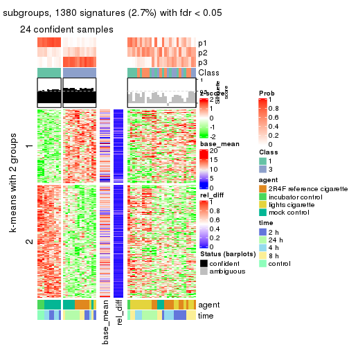
get_signatures(res, k = 4)

get_signatures(res, k = 5)

get_signatures(res, k = 6)

Signature heatmaps where rows are not scaled:
get_signatures(res, k = 2, scale_rows = FALSE)
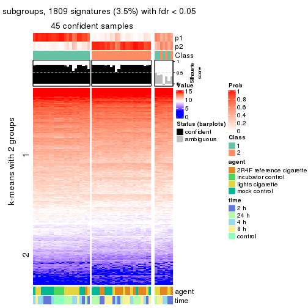
get_signatures(res, k = 3, scale_rows = FALSE)
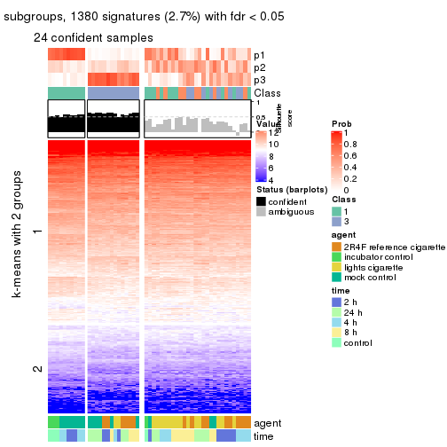
get_signatures(res, k = 4, scale_rows = FALSE)

get_signatures(res, k = 5, scale_rows = FALSE)

get_signatures(res, k = 6, scale_rows = FALSE)

Compare the overlap of signatures from different k:
compare_signatures(res)
get_signature() returns a data frame invisibly. TO get the list of signatures, the function
call should be assigned to a variable explicitly. In following code, if plot argument is set
to FALSE, no heatmap is plotted while only the differential analysis is performed.
# code only for demonstration
tb = get_signature(res, k = ..., plot = FALSE)
An example of the output of tb is:
#> which_row fdr mean_1 mean_2 scaled_mean_1 scaled_mean_2 km
#> 1 38 0.042760348 8.373488 9.131774 -0.5533452 0.5164555 1
#> 2 40 0.018707592 7.106213 8.469186 -0.6173731 0.5762149 1
#> 3 55 0.019134737 10.221463 11.207825 -0.6159697 0.5749050 1
#> 4 59 0.006059896 5.921854 7.869574 -0.6899429 0.6439467 1
#> 5 60 0.018055526 8.928898 10.211722 -0.6204761 0.5791110 1
#> 6 98 0.009384629 15.714769 14.887706 0.6635654 -0.6193277 2
...
The columns in tb are:
which_row: row indices corresponding to the input matrix.fdr: FDR for the differential test. mean_x: The mean value in group x.scaled_mean_x: The mean value in group x after rows are scaled.km: Row groups if k-means clustering is applied to rows.UMAP plot which shows how samples are separated.
dimension_reduction(res, k = 2, method = "UMAP")
dimension_reduction(res, k = 3, method = "UMAP")
dimension_reduction(res, k = 4, method = "UMAP")
dimension_reduction(res, k = 5, method = "UMAP")
dimension_reduction(res, k = 6, method = "UMAP")
Following heatmap shows how subgroups are split when increasing k:
collect_classes(res)
Test correlation between subgroups and known annotations. If the known annotation is numeric, one-way ANOVA test is applied, and if the known annotation is discrete, chi-squared contingency table test is applied.
test_to_known_factors(res)
#> n agent(p) time(p) k
#> CV:NMF 45 0.00259 0.04041 2
#> CV:NMF 24 0.01342 0.00576 3
#> CV:NMF 12 0.04979 0.06579 4
#> CV:NMF 0 NA NA 5
#> CV:NMF 0 NA NA 6
If matrix rows can be associated to genes, consider to use GO_Enrichment(res,
...) to perform function enrichment for the signature genes.
The object with results only for a single top-value method and a single partition method can be extracted as:
res = res_list["MAD", "hclust"]
# you can also extract it by
# res = res_list["MAD:hclust"]
A summary of res and all the functions that can be applied to it:
res
#> A 'ConsensusPartition' object with k = 2, 3, 4, 5, 6.
#> On a matrix with 51941 rows and 52 columns.
#> Top rows (1000, 2000, 3000, 4000, 5000) are extracted by 'MAD' method.
#> Subgroups are detected by 'hclust' method.
#> Performed in total 1250 partitions by row resampling.
#> Best k for subgroups seems to be 3.
#>
#> Following methods can be applied to this 'ConsensusPartition' object:
#> [1] "cola_report" "collect_classes" "collect_plots"
#> [4] "collect_stats" "colnames" "compare_signatures"
#> [7] "consensus_heatmap" "dimension_reduction" "functional_enrichment"
#> [10] "get_anno_col" "get_anno" "get_classes"
#> [13] "get_consensus" "get_matrix" "get_membership"
#> [16] "get_param" "get_signatures" "get_stats"
#> [19] "is_best_k" "is_stable_k" "membership_heatmap"
#> [22] "ncol" "nrow" "plot_ecdf"
#> [25] "rownames" "select_partition_number" "show"
#> [28] "suggest_best_k" "test_to_known_factors"
collect_plots() function collects all the plots made from res for all k (number of partitions)
into one single page to provide an easy and fast comparison between different k.
collect_plots(res)
The plots are:
k and the heatmap of
predicted classes for each k.k.k.k.All the plots in panels can be made by individual functions and they are plotted later in this section.
select_partition_number() produces several plots showing different
statistics for choosing “optimized” k. There are following statistics:
k;k, the area increased is defined as \(A_k - A_{k-1}\).The detailed explanations of these statistics can be found in the cola vignette.
Generally speaking, lower PAC score, higher mean silhouette score or higher
concordance corresponds to better partition. Rand index and Jaccard index
measure how similar the current partition is compared to partition with k-1.
If they are too similar, we won't accept k is better than k-1.
select_partition_number(res)
The numeric values for all these statistics can be obtained by get_stats().
get_stats(res)
#> k 1-PAC mean_silhouette concordance area_increased Rand Jaccard
#> 2 2 0.0510 0.765 0.831 0.2682 0.925 0.925
#> 3 3 0.0502 0.604 0.737 0.5368 0.891 0.882
#> 4 4 0.0638 0.347 0.627 0.3104 0.771 0.726
#> 5 5 0.0969 0.269 0.569 0.1647 0.854 0.774
#> 6 6 0.1582 0.164 0.495 0.0992 0.773 0.587
suggest_best_k() suggests the best \(k\) based on these statistics. The rules are as follows:
NA.suggest_best_k(res)
#> [1] 3
Following shows the table of the partitions (You need to click the show/hide
code output link to see it). The membership matrix (columns with name p*)
is inferred by
clue::cl_consensus()
function with the SE method. Basically the value in the membership matrix
represents the probability to belong to a certain group. The finall class
label for an item is determined with the group with highest probability it
belongs to.
In get_classes() function, the entropy is calculated from the membership
matrix and the silhouette score is calculated from the consensus matrix.
cbind(get_classes(res, k = 2), get_membership(res, k = 2))
#> class entropy silhouette p1 p2
#> GSM270543 1 0.456 0.8435 0.904 0.096
#> GSM270544 1 0.625 0.8238 0.844 0.156
#> GSM270545 1 0.358 0.8339 0.932 0.068
#> GSM270546 1 0.518 0.8380 0.884 0.116
#> GSM270547 1 0.388 0.8399 0.924 0.076
#> GSM270548 1 0.456 0.8395 0.904 0.096
#> GSM270549 1 0.689 0.8103 0.816 0.184
#> GSM270550 1 0.373 0.8391 0.928 0.072
#> GSM270551 2 0.895 0.6892 0.312 0.688
#> GSM270552 1 0.653 0.8327 0.832 0.168
#> GSM270553 1 0.775 0.7623 0.772 0.228
#> GSM270554 1 0.595 0.8372 0.856 0.144
#> GSM270555 1 0.981 0.3506 0.580 0.420
#> GSM270556 1 0.775 0.7748 0.772 0.228
#> GSM270557 1 0.706 0.8029 0.808 0.192
#> GSM270558 1 0.745 0.7838 0.788 0.212
#> GSM270559 1 0.946 0.5040 0.636 0.364
#> GSM270560 1 0.644 0.8249 0.836 0.164
#> GSM270561 1 0.529 0.8416 0.880 0.120
#> GSM270562 1 0.605 0.8309 0.852 0.148
#> GSM270563 1 0.605 0.8195 0.852 0.148
#> GSM270564 1 0.595 0.8339 0.856 0.144
#> GSM270565 1 0.615 0.8218 0.848 0.152
#> GSM270566 1 0.671 0.8211 0.824 0.176
#> GSM270567 1 0.680 0.8254 0.820 0.180
#> GSM270568 1 0.697 0.8075 0.812 0.188
#> GSM270569 1 0.753 0.7920 0.784 0.216
#> GSM270570 1 0.671 0.8165 0.824 0.176
#> GSM270571 1 0.653 0.8079 0.832 0.168
#> GSM270572 1 0.634 0.8263 0.840 0.160
#> GSM270573 1 0.850 0.6931 0.724 0.276
#> GSM270574 1 0.644 0.8312 0.836 0.164
#> GSM270575 2 0.706 0.7503 0.192 0.808
#> GSM270576 1 0.998 -0.0418 0.524 0.476
#> GSM270577 1 0.615 0.8342 0.848 0.152
#> GSM270578 1 0.866 0.6026 0.712 0.288
#> GSM270579 1 0.529 0.8432 0.880 0.120
#> GSM270580 1 1.000 -0.1245 0.504 0.496
#> GSM270581 1 0.584 0.8244 0.860 0.140
#> GSM270582 1 0.529 0.8353 0.880 0.120
#> GSM270583 1 0.653 0.8264 0.832 0.168
#> GSM270584 1 0.343 0.8376 0.936 0.064
#> GSM270585 1 0.595 0.8276 0.856 0.144
#> GSM270586 1 0.482 0.8446 0.896 0.104
#> GSM270587 1 0.295 0.8383 0.948 0.052
#> GSM270588 1 0.529 0.8397 0.880 0.120
#> GSM270589 1 0.373 0.8405 0.928 0.072
#> GSM270590 1 0.456 0.8430 0.904 0.096
#> GSM270591 1 0.358 0.8339 0.932 0.068
#> GSM270592 1 0.373 0.8336 0.928 0.072
#> GSM270593 1 0.358 0.8395 0.932 0.068
#> GSM270594 1 0.416 0.8419 0.916 0.084
cbind(get_classes(res, k = 3), get_membership(res, k = 3))
#> class entropy silhouette p1 p2 p3
#> GSM270543 1 0.403 0.7356 0.856 0.008 0.136
#> GSM270544 1 0.659 0.6847 0.728 0.056 0.216
#> GSM270545 1 0.280 0.7230 0.908 0.000 0.092
#> GSM270546 1 0.447 0.7226 0.828 0.008 0.164
#> GSM270547 1 0.350 0.7302 0.880 0.004 0.116
#> GSM270548 1 0.478 0.7261 0.820 0.016 0.164
#> GSM270549 1 0.697 0.6622 0.716 0.080 0.204
#> GSM270550 1 0.304 0.7312 0.896 0.000 0.104
#> GSM270551 3 0.882 -0.0023 0.136 0.324 0.540
#> GSM270552 1 0.619 0.7053 0.744 0.040 0.216
#> GSM270553 1 0.783 0.4726 0.612 0.076 0.312
#> GSM270554 1 0.525 0.7233 0.792 0.020 0.188
#> GSM270555 3 0.945 0.3936 0.348 0.188 0.464
#> GSM270556 1 0.683 0.4224 0.604 0.020 0.376
#> GSM270557 1 0.677 0.6189 0.684 0.040 0.276
#> GSM270558 1 0.704 0.5622 0.648 0.040 0.312
#> GSM270559 1 0.889 -0.2895 0.452 0.120 0.428
#> GSM270560 1 0.636 0.6468 0.696 0.024 0.280
#> GSM270561 1 0.531 0.7270 0.788 0.020 0.192
#> GSM270562 1 0.607 0.6925 0.736 0.028 0.236
#> GSM270563 1 0.566 0.6868 0.772 0.028 0.200
#> GSM270564 1 0.573 0.6996 0.752 0.020 0.228
#> GSM270565 1 0.587 0.6933 0.760 0.032 0.208
#> GSM270566 1 0.642 0.6489 0.676 0.020 0.304
#> GSM270567 1 0.644 0.6740 0.696 0.028 0.276
#> GSM270568 1 0.703 0.6039 0.660 0.044 0.296
#> GSM270569 1 0.695 0.5512 0.636 0.032 0.332
#> GSM270570 1 0.626 0.6420 0.696 0.020 0.284
#> GSM270571 1 0.678 0.6642 0.732 0.080 0.188
#> GSM270572 1 0.605 0.6547 0.696 0.012 0.292
#> GSM270573 1 0.808 0.2030 0.524 0.068 0.408
#> GSM270574 1 0.651 0.6623 0.688 0.028 0.284
#> GSM270575 2 0.183 0.0000 0.008 0.956 0.036
#> GSM270576 3 0.983 0.5549 0.332 0.256 0.412
#> GSM270577 1 0.610 0.6993 0.724 0.024 0.252
#> GSM270578 1 0.926 -0.0130 0.516 0.192 0.292
#> GSM270579 1 0.560 0.7170 0.756 0.016 0.228
#> GSM270580 3 0.846 0.5951 0.296 0.120 0.584
#> GSM270581 1 0.546 0.6921 0.776 0.020 0.204
#> GSM270582 1 0.491 0.7197 0.804 0.012 0.184
#> GSM270583 1 0.625 0.6470 0.684 0.016 0.300
#> GSM270584 1 0.311 0.7295 0.900 0.004 0.096
#> GSM270585 1 0.532 0.6996 0.780 0.016 0.204
#> GSM270586 1 0.495 0.7349 0.808 0.016 0.176
#> GSM270587 1 0.254 0.7333 0.920 0.000 0.080
#> GSM270588 1 0.502 0.7106 0.776 0.004 0.220
#> GSM270589 1 0.327 0.7346 0.892 0.004 0.104
#> GSM270590 1 0.435 0.7388 0.836 0.008 0.156
#> GSM270591 1 0.271 0.7232 0.912 0.000 0.088
#> GSM270592 1 0.312 0.7261 0.892 0.000 0.108
#> GSM270593 1 0.361 0.7351 0.880 0.008 0.112
#> GSM270594 1 0.406 0.7363 0.860 0.012 0.128
cbind(get_classes(res, k = 4), get_membership(res, k = 4))
#> class entropy silhouette p1 p2 p3 p4
#> GSM270543 4 0.4972 0.5709 0.136 0.004 0.080 0.780
#> GSM270544 4 0.7595 0.2622 0.316 0.028 0.120 0.536
#> GSM270545 4 0.2596 0.5797 0.068 0.000 0.024 0.908
#> GSM270546 4 0.4996 0.5736 0.132 0.008 0.076 0.784
#> GSM270547 4 0.4285 0.5793 0.104 0.000 0.076 0.820
#> GSM270548 4 0.5480 0.5499 0.140 0.000 0.124 0.736
#> GSM270549 4 0.7654 0.2494 0.252 0.040 0.132 0.576
#> GSM270550 4 0.3215 0.5882 0.092 0.000 0.032 0.876
#> GSM270551 3 0.6735 0.0000 0.100 0.140 0.696 0.064
#> GSM270552 4 0.6889 0.3763 0.268 0.016 0.104 0.612
#> GSM270553 4 0.8295 -0.0738 0.364 0.072 0.104 0.460
#> GSM270554 4 0.6239 0.4454 0.264 0.008 0.076 0.652
#> GSM270555 1 0.9406 0.1615 0.436 0.180 0.200 0.184
#> GSM270556 1 0.7599 0.3409 0.460 0.008 0.156 0.376
#> GSM270557 1 0.6952 0.0307 0.456 0.008 0.084 0.452
#> GSM270558 1 0.6979 0.1614 0.488 0.008 0.088 0.416
#> GSM270559 1 0.9133 0.3421 0.416 0.084 0.252 0.248
#> GSM270560 4 0.6678 0.1348 0.412 0.000 0.088 0.500
#> GSM270561 4 0.5249 0.5532 0.248 0.000 0.044 0.708
#> GSM270562 4 0.6836 0.3855 0.280 0.004 0.124 0.592
#> GSM270563 4 0.6115 0.5281 0.156 0.016 0.116 0.712
#> GSM270564 4 0.5991 0.5132 0.256 0.008 0.064 0.672
#> GSM270565 4 0.6006 0.5254 0.168 0.008 0.116 0.708
#> GSM270566 4 0.6269 0.3845 0.364 0.004 0.056 0.576
#> GSM270567 4 0.6362 0.2802 0.368 0.000 0.072 0.560
#> GSM270568 1 0.7147 0.0806 0.472 0.012 0.092 0.424
#> GSM270569 1 0.7737 0.0882 0.420 0.012 0.156 0.412
#> GSM270570 4 0.7540 -0.0872 0.420 0.008 0.144 0.428
#> GSM270571 4 0.7527 0.3984 0.196 0.060 0.124 0.620
#> GSM270572 4 0.6292 0.1838 0.416 0.000 0.060 0.524
#> GSM270573 1 0.8239 0.2919 0.384 0.012 0.324 0.280
#> GSM270574 4 0.6777 0.2288 0.376 0.004 0.088 0.532
#> GSM270575 2 0.0712 0.0000 0.004 0.984 0.008 0.004
#> GSM270576 1 0.9874 -0.0887 0.332 0.212 0.236 0.220
#> GSM270577 4 0.6757 0.3316 0.360 0.012 0.072 0.556
#> GSM270578 4 0.9143 -0.1640 0.320 0.200 0.088 0.392
#> GSM270579 4 0.6334 0.4933 0.244 0.016 0.076 0.664
#> GSM270580 1 0.8625 -0.2332 0.408 0.060 0.372 0.160
#> GSM270581 4 0.5664 0.5325 0.200 0.004 0.080 0.716
#> GSM270582 4 0.6028 0.5469 0.184 0.004 0.116 0.696
#> GSM270583 4 0.6419 0.1739 0.420 0.000 0.068 0.512
#> GSM270584 4 0.3464 0.5935 0.108 0.000 0.032 0.860
#> GSM270585 4 0.5788 0.5358 0.200 0.004 0.088 0.708
#> GSM270586 4 0.4997 0.5803 0.216 0.004 0.036 0.744
#> GSM270587 4 0.3037 0.5857 0.100 0.000 0.020 0.880
#> GSM270588 4 0.5717 0.4208 0.324 0.000 0.044 0.632
#> GSM270589 4 0.3464 0.5835 0.108 0.000 0.032 0.860
#> GSM270590 4 0.4669 0.5821 0.200 0.000 0.036 0.764
#> GSM270591 4 0.2521 0.5800 0.064 0.000 0.024 0.912
#> GSM270592 4 0.2845 0.5846 0.076 0.000 0.028 0.896
#> GSM270593 4 0.3850 0.5874 0.112 0.008 0.032 0.848
#> GSM270594 4 0.4336 0.5861 0.132 0.004 0.048 0.816
cbind(get_classes(res, k = 5), get_membership(res, k = 5))
#> class entropy silhouette p1 p2 p3 p4 p5
#> GSM270543 4 0.5197 0.50269 0.080 0.020 0.000 0.712 NA
#> GSM270544 4 0.8320 0.05502 0.216 0.080 0.024 0.416 NA
#> GSM270545 4 0.1686 0.52597 0.020 0.028 0.000 0.944 NA
#> GSM270546 4 0.4447 0.52500 0.032 0.028 0.000 0.768 NA
#> GSM270547 4 0.4342 0.52733 0.056 0.024 0.000 0.792 NA
#> GSM270548 4 0.6024 0.46758 0.084 0.052 0.000 0.652 NA
#> GSM270549 4 0.8128 -0.00714 0.212 0.096 0.016 0.460 NA
#> GSM270550 4 0.2228 0.53584 0.020 0.016 0.000 0.920 NA
#> GSM270551 2 0.4930 0.03729 0.036 0.792 0.068 0.044 NA
#> GSM270552 4 0.7603 0.16247 0.264 0.076 0.008 0.496 NA
#> GSM270553 4 0.8524 -0.17771 0.304 0.072 0.056 0.408 NA
#> GSM270554 4 0.7216 0.25484 0.232 0.068 0.004 0.544 NA
#> GSM270555 1 0.8348 -0.18510 0.516 0.128 0.172 0.076 NA
#> GSM270556 1 0.7226 0.16457 0.576 0.120 0.008 0.192 NA
#> GSM270557 1 0.6961 0.24476 0.464 0.036 0.004 0.376 NA
#> GSM270558 1 0.6661 0.34146 0.532 0.048 0.004 0.336 NA
#> GSM270559 1 0.8827 -0.04579 0.452 0.172 0.068 0.152 NA
#> GSM270560 4 0.7543 -0.02868 0.352 0.060 0.000 0.404 NA
#> GSM270561 4 0.5868 0.47045 0.108 0.016 0.000 0.628 NA
#> GSM270562 4 0.7796 0.21669 0.208 0.072 0.004 0.440 NA
#> GSM270563 4 0.5982 0.46377 0.048 0.024 0.008 0.568 NA
#> GSM270564 4 0.5979 0.43726 0.088 0.012 0.000 0.552 NA
#> GSM270565 4 0.6087 0.45362 0.048 0.036 0.004 0.560 NA
#> GSM270566 4 0.6674 0.29271 0.208 0.004 0.000 0.452 NA
#> GSM270567 4 0.7123 -0.07376 0.384 0.040 0.000 0.424 NA
#> GSM270568 1 0.7969 0.29887 0.396 0.064 0.008 0.296 NA
#> GSM270569 1 0.8252 0.26961 0.404 0.128 0.004 0.248 NA
#> GSM270570 1 0.8098 0.22847 0.316 0.092 0.000 0.280 NA
#> GSM270571 4 0.8042 0.23156 0.128 0.076 0.048 0.504 NA
#> GSM270572 1 0.6963 0.11709 0.432 0.044 0.000 0.404 NA
#> GSM270573 2 0.8580 0.00364 0.308 0.328 0.008 0.168 NA
#> GSM270574 1 0.7301 0.07685 0.396 0.036 0.004 0.396 NA
#> GSM270575 3 0.0324 0.00000 0.000 0.004 0.992 0.004 NA
#> GSM270576 1 0.9931 -0.28374 0.256 0.196 0.188 0.164 NA
#> GSM270577 4 0.7300 0.08553 0.304 0.028 0.004 0.448 NA
#> GSM270578 4 0.8878 -0.11514 0.140 0.032 0.192 0.344 NA
#> GSM270579 4 0.7244 0.34002 0.200 0.052 0.004 0.528 NA
#> GSM270580 2 0.8569 0.21936 0.320 0.332 0.032 0.076 NA
#> GSM270581 4 0.5199 0.46681 0.028 0.012 0.000 0.580 NA
#> GSM270582 4 0.6035 0.47364 0.064 0.036 0.000 0.588 NA
#> GSM270583 1 0.6838 0.09822 0.444 0.032 0.000 0.396 NA
#> GSM270584 4 0.3067 0.53907 0.040 0.016 0.000 0.876 NA
#> GSM270585 4 0.5571 0.46401 0.060 0.008 0.000 0.568 NA
#> GSM270586 4 0.5904 0.48949 0.096 0.024 0.000 0.632 NA
#> GSM270587 4 0.3916 0.52227 0.072 0.012 0.000 0.820 NA
#> GSM270588 4 0.6516 0.15188 0.332 0.024 0.000 0.524 NA
#> GSM270589 4 0.4060 0.52020 0.068 0.016 0.000 0.812 NA
#> GSM270590 4 0.5408 0.49989 0.116 0.004 0.000 0.668 NA
#> GSM270591 4 0.1560 0.52652 0.020 0.028 0.000 0.948 NA
#> GSM270592 4 0.2149 0.53212 0.012 0.028 0.000 0.924 NA
#> GSM270593 4 0.3835 0.52546 0.056 0.032 0.000 0.836 NA
#> GSM270594 4 0.3799 0.52513 0.068 0.024 0.000 0.836 NA
cbind(get_classes(res, k = 6), get_membership(res, k = 6))
#> class entropy silhouette p1 p2 p3 p4 p5 p6
#> GSM270543 4 0.567 0.3110 0.016 0.180 0.000 0.656 0.112 0.036
#> GSM270544 4 0.852 -0.1355 0.068 0.276 0.012 0.344 0.164 0.136
#> GSM270545 4 0.125 0.4203 0.012 0.000 0.000 0.956 0.024 0.008
#> GSM270546 4 0.483 0.3644 0.020 0.132 0.000 0.740 0.084 0.024
#> GSM270547 4 0.444 0.3622 0.016 0.152 0.000 0.760 0.048 0.024
#> GSM270548 4 0.635 0.2082 0.040 0.216 0.000 0.600 0.096 0.048
#> GSM270549 4 0.815 -0.1482 0.080 0.148 0.004 0.376 0.296 0.096
#> GSM270550 4 0.197 0.4214 0.008 0.044 0.000 0.920 0.028 0.000
#> GSM270551 1 0.353 0.0000 0.856 0.020 0.012 0.032 0.040 0.040
#> GSM270552 4 0.725 -0.0783 0.040 0.168 0.000 0.400 0.348 0.044
#> GSM270553 4 0.868 -0.2398 0.028 0.160 0.048 0.356 0.204 0.204
#> GSM270554 4 0.696 0.0280 0.028 0.172 0.000 0.444 0.320 0.036
#> GSM270555 6 0.704 0.2966 0.028 0.032 0.160 0.044 0.168 0.568
#> GSM270556 6 0.720 0.2136 0.032 0.120 0.000 0.092 0.272 0.484
#> GSM270557 5 0.817 0.1996 0.020 0.192 0.004 0.280 0.284 0.220
#> GSM270558 5 0.799 0.2733 0.028 0.128 0.004 0.236 0.376 0.228
#> GSM270559 6 0.787 0.3554 0.068 0.128 0.056 0.092 0.116 0.540
#> GSM270560 2 0.811 0.0443 0.044 0.316 0.000 0.300 0.216 0.124
#> GSM270561 4 0.587 0.2286 0.020 0.216 0.000 0.584 0.176 0.004
#> GSM270562 2 0.775 0.3075 0.056 0.388 0.004 0.332 0.148 0.072
#> GSM270563 4 0.545 -0.1467 0.020 0.444 0.000 0.484 0.036 0.016
#> GSM270564 2 0.581 0.2646 0.016 0.472 0.000 0.432 0.044 0.036
#> GSM270565 4 0.559 -0.2178 0.024 0.456 0.000 0.464 0.036 0.020
#> GSM270566 2 0.646 0.3915 0.008 0.492 0.000 0.336 0.104 0.060
#> GSM270567 5 0.743 0.1953 0.028 0.188 0.000 0.332 0.384 0.068
#> GSM270568 5 0.834 0.2116 0.048 0.208 0.000 0.228 0.320 0.196
#> GSM270569 5 0.774 0.2007 0.044 0.136 0.004 0.168 0.476 0.172
#> GSM270570 5 0.645 0.2302 0.024 0.128 0.000 0.184 0.596 0.068
#> GSM270571 4 0.809 -0.0169 0.052 0.272 0.036 0.436 0.124 0.080
#> GSM270572 5 0.739 0.3092 0.024 0.092 0.000 0.332 0.404 0.148
#> GSM270573 5 0.827 -0.1772 0.288 0.100 0.000 0.120 0.356 0.136
#> GSM270574 5 0.667 0.2904 0.028 0.116 0.000 0.328 0.488 0.040
#> GSM270575 3 0.000 0.0000 0.000 0.000 1.000 0.000 0.000 0.000
#> GSM270576 6 0.965 0.1082 0.180 0.140 0.168 0.104 0.116 0.292
#> GSM270577 5 0.736 0.1101 0.024 0.176 0.000 0.340 0.388 0.072
#> GSM270578 2 0.855 0.1094 0.016 0.328 0.184 0.292 0.072 0.108
#> GSM270579 4 0.759 -0.0354 0.044 0.212 0.004 0.456 0.216 0.068
#> GSM270580 6 0.825 0.0566 0.232 0.160 0.016 0.028 0.184 0.380
#> GSM270581 2 0.434 0.1112 0.000 0.496 0.000 0.484 0.020 0.000
#> GSM270582 4 0.594 -0.0429 0.028 0.364 0.000 0.516 0.080 0.012
#> GSM270583 5 0.744 0.2196 0.004 0.204 0.000 0.296 0.372 0.124
#> GSM270584 4 0.253 0.4165 0.004 0.056 0.000 0.884 0.056 0.000
#> GSM270585 4 0.508 -0.2316 0.000 0.464 0.000 0.472 0.056 0.008
#> GSM270586 4 0.606 0.1894 0.016 0.248 0.000 0.560 0.164 0.012
#> GSM270587 4 0.407 0.3764 0.004 0.120 0.000 0.772 0.100 0.004
#> GSM270588 4 0.645 -0.0616 0.008 0.112 0.000 0.484 0.344 0.052
#> GSM270589 4 0.428 0.3715 0.012 0.124 0.000 0.768 0.088 0.008
#> GSM270590 4 0.554 0.1953 0.000 0.252 0.000 0.596 0.136 0.016
#> GSM270591 4 0.117 0.4215 0.012 0.000 0.000 0.960 0.020 0.008
#> GSM270592 4 0.196 0.4245 0.012 0.024 0.000 0.928 0.028 0.008
#> GSM270593 4 0.385 0.4033 0.012 0.048 0.000 0.816 0.096 0.028
#> GSM270594 4 0.363 0.4088 0.012 0.044 0.000 0.828 0.096 0.020
Heatmaps for the consensus matrix. It visualizes the probability of two samples to be in a same group.
consensus_heatmap(res, k = 2)
consensus_heatmap(res, k = 3)
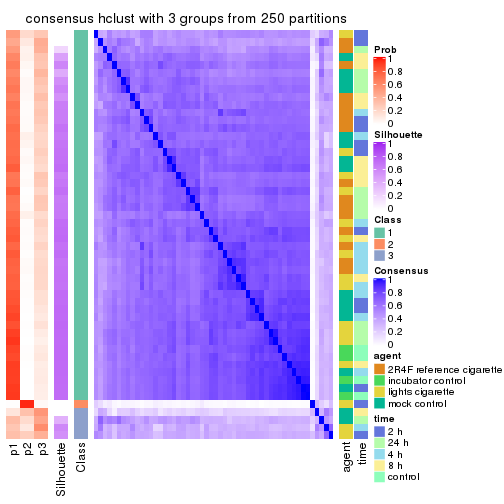
consensus_heatmap(res, k = 4)
consensus_heatmap(res, k = 5)
consensus_heatmap(res, k = 6)
Heatmaps for the membership of samples in all partitions to see how consistent they are:
membership_heatmap(res, k = 2)
membership_heatmap(res, k = 3)
membership_heatmap(res, k = 4)
membership_heatmap(res, k = 5)
membership_heatmap(res, k = 6)
As soon as we have had the classes for columns, we can look for signatures which are significantly different between classes which can be candidate marks for certain classes. Following are the heatmaps for signatures.
Signature heatmaps where rows are scaled:
get_signatures(res, k = 2)
get_signatures(res, k = 3)
get_signatures(res, k = 4)

get_signatures(res, k = 5)

get_signatures(res, k = 6)

Signature heatmaps where rows are not scaled:
get_signatures(res, k = 2, scale_rows = FALSE)
get_signatures(res, k = 3, scale_rows = FALSE)
get_signatures(res, k = 4, scale_rows = FALSE)

get_signatures(res, k = 5, scale_rows = FALSE)

get_signatures(res, k = 6, scale_rows = FALSE)

Compare the overlap of signatures from different k:
compare_signatures(res)
get_signature() returns a data frame invisibly. TO get the list of signatures, the function
call should be assigned to a variable explicitly. In following code, if plot argument is set
to FALSE, no heatmap is plotted while only the differential analysis is performed.
# code only for demonstration
tb = get_signature(res, k = ..., plot = FALSE)
An example of the output of tb is:
#> which_row fdr mean_1 mean_2 scaled_mean_1 scaled_mean_2 km
#> 1 38 0.042760348 8.373488 9.131774 -0.5533452 0.5164555 1
#> 2 40 0.018707592 7.106213 8.469186 -0.6173731 0.5762149 1
#> 3 55 0.019134737 10.221463 11.207825 -0.6159697 0.5749050 1
#> 4 59 0.006059896 5.921854 7.869574 -0.6899429 0.6439467 1
#> 5 60 0.018055526 8.928898 10.211722 -0.6204761 0.5791110 1
#> 6 98 0.009384629 15.714769 14.887706 0.6635654 -0.6193277 2
...
The columns in tb are:
which_row: row indices corresponding to the input matrix.fdr: FDR for the differential test. mean_x: The mean value in group x.scaled_mean_x: The mean value in group x after rows are scaled.km: Row groups if k-means clustering is applied to rows.UMAP plot which shows how samples are separated.
dimension_reduction(res, k = 2, method = "UMAP")

dimension_reduction(res, k = 3, method = "UMAP")
dimension_reduction(res, k = 4, method = "UMAP")
dimension_reduction(res, k = 5, method = "UMAP")
dimension_reduction(res, k = 6, method = "UMAP")
Following heatmap shows how subgroups are split when increasing k:
collect_classes(res)
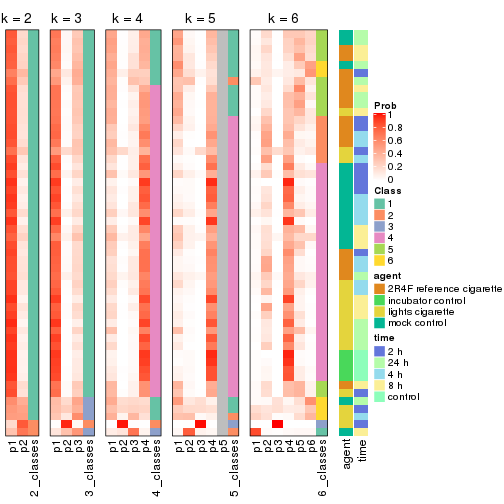
Test correlation between subgroups and known annotations. If the known annotation is numeric, one-way ANOVA test is applied, and if the known annotation is discrete, chi-squared contingency table test is applied.
test_to_known_factors(res)
#> n agent(p) time(p) k
#> MAD:hclust 49 0.696 0.669 2
#> MAD:hclust 44 0.213 0.665 3
#> MAD:hclust 22 NA NA 4
#> MAD:hclust 12 NA NA 5
#> MAD:hclust 0 NA NA 6
If matrix rows can be associated to genes, consider to use GO_Enrichment(res,
...) to perform function enrichment for the signature genes.
The object with results only for a single top-value method and a single partition method can be extracted as:
res = res_list["MAD", "kmeans"]
# you can also extract it by
# res = res_list["MAD:kmeans"]
A summary of res and all the functions that can be applied to it:
res
#> A 'ConsensusPartition' object with k = 2, 3, 4, 5, 6.
#> On a matrix with 51941 rows and 52 columns.
#> Top rows (1000, 2000, 3000, 4000, 5000) are extracted by 'MAD' method.
#> Subgroups are detected by 'kmeans' method.
#> Performed in total 1250 partitions by row resampling.
#> Best k for subgroups seems to be 2.
#>
#> Following methods can be applied to this 'ConsensusPartition' object:
#> [1] "cola_report" "collect_classes" "collect_plots"
#> [4] "collect_stats" "colnames" "compare_signatures"
#> [7] "consensus_heatmap" "dimension_reduction" "functional_enrichment"
#> [10] "get_anno_col" "get_anno" "get_classes"
#> [13] "get_consensus" "get_matrix" "get_membership"
#> [16] "get_param" "get_signatures" "get_stats"
#> [19] "is_best_k" "is_stable_k" "membership_heatmap"
#> [22] "ncol" "nrow" "plot_ecdf"
#> [25] "rownames" "select_partition_number" "show"
#> [28] "suggest_best_k" "test_to_known_factors"
collect_plots() function collects all the plots made from res for all k (number of partitions)
into one single page to provide an easy and fast comparison between different k.
collect_plots(res)
The plots are:
k and the heatmap of
predicted classes for each k.k.k.k.All the plots in panels can be made by individual functions and they are plotted later in this section.
select_partition_number() produces several plots showing different
statistics for choosing “optimized” k. There are following statistics:
k;k, the area increased is defined as \(A_k - A_{k-1}\).The detailed explanations of these statistics can be found in the cola vignette.
Generally speaking, lower PAC score, higher mean silhouette score or higher
concordance corresponds to better partition. Rand index and Jaccard index
measure how similar the current partition is compared to partition with k-1.
If they are too similar, we won't accept k is better than k-1.
select_partition_number(res)
The numeric values for all these statistics can be obtained by get_stats().
get_stats(res)
#> k 1-PAC mean_silhouette concordance area_increased Rand Jaccard
#> 2 2 0.335 0.794 0.874 0.5015 0.493 0.493
#> 3 3 0.256 0.411 0.693 0.2838 0.855 0.713
#> 4 4 0.333 0.464 0.695 0.1295 0.782 0.497
#> 5 5 0.466 0.449 0.659 0.0681 0.950 0.828
#> 6 6 0.538 0.358 0.615 0.0437 0.915 0.694
suggest_best_k() suggests the best \(k\) based on these statistics. The rules are as follows:
NA.suggest_best_k(res)
#> [1] 2
Following shows the table of the partitions (You need to click the show/hide
code output link to see it). The membership matrix (columns with name p*)
is inferred by
clue::cl_consensus()
function with the SE method. Basically the value in the membership matrix
represents the probability to belong to a certain group. The finall class
label for an item is determined with the group with highest probability it
belongs to.
In get_classes() function, the entropy is calculated from the membership
matrix and the silhouette score is calculated from the consensus matrix.
cbind(get_classes(res, k = 2), get_membership(res, k = 2))
#> class entropy silhouette p1 p2
#> GSM270543 1 0.3879 0.856 0.924 0.076
#> GSM270544 1 0.6712 0.790 0.824 0.176
#> GSM270545 1 0.0938 0.860 0.988 0.012
#> GSM270546 1 0.2948 0.856 0.948 0.052
#> GSM270547 1 0.1184 0.859 0.984 0.016
#> GSM270548 1 0.2236 0.861 0.964 0.036
#> GSM270549 1 0.7883 0.692 0.764 0.236
#> GSM270550 1 0.0938 0.861 0.988 0.012
#> GSM270551 2 0.3584 0.875 0.068 0.932
#> GSM270552 1 0.8016 0.683 0.756 0.244
#> GSM270553 2 0.9286 0.562 0.344 0.656
#> GSM270554 1 0.8267 0.687 0.740 0.260
#> GSM270555 2 0.4562 0.863 0.096 0.904
#> GSM270556 2 0.3114 0.876 0.056 0.944
#> GSM270557 2 0.3431 0.879 0.064 0.936
#> GSM270558 2 0.2603 0.878 0.044 0.956
#> GSM270559 2 0.0938 0.872 0.012 0.988
#> GSM270560 2 0.1633 0.874 0.024 0.976
#> GSM270561 1 0.7056 0.786 0.808 0.192
#> GSM270562 2 0.3584 0.866 0.068 0.932
#> GSM270563 1 0.8327 0.723 0.736 0.264
#> GSM270564 1 0.9608 0.498 0.616 0.384
#> GSM270565 1 0.9881 0.357 0.564 0.436
#> GSM270566 2 0.7139 0.742 0.196 0.804
#> GSM270567 2 0.9000 0.572 0.316 0.684
#> GSM270568 2 0.4431 0.876 0.092 0.908
#> GSM270569 2 0.1633 0.873 0.024 0.976
#> GSM270570 2 0.5178 0.860 0.116 0.884
#> GSM270571 1 0.8443 0.690 0.728 0.272
#> GSM270572 2 0.5178 0.863 0.116 0.884
#> GSM270573 2 0.3431 0.876 0.064 0.936
#> GSM270574 2 0.2948 0.876 0.052 0.948
#> GSM270575 2 0.3584 0.875 0.068 0.932
#> GSM270576 2 0.3733 0.875 0.072 0.928
#> GSM270577 2 0.6801 0.784 0.180 0.820
#> GSM270578 2 0.9358 0.550 0.352 0.648
#> GSM270579 2 0.9209 0.437 0.336 0.664
#> GSM270580 2 0.0672 0.868 0.008 0.992
#> GSM270581 1 0.4815 0.845 0.896 0.104
#> GSM270582 1 0.6712 0.814 0.824 0.176
#> GSM270583 2 0.4939 0.862 0.108 0.892
#> GSM270584 1 0.2778 0.857 0.952 0.048
#> GSM270585 1 0.4562 0.848 0.904 0.096
#> GSM270586 1 0.3584 0.856 0.932 0.068
#> GSM270587 1 0.1184 0.861 0.984 0.016
#> GSM270588 1 0.8713 0.655 0.708 0.292
#> GSM270589 1 0.1414 0.861 0.980 0.020
#> GSM270590 1 0.3431 0.859 0.936 0.064
#> GSM270591 1 0.1184 0.861 0.984 0.016
#> GSM270592 1 0.1184 0.861 0.984 0.016
#> GSM270593 1 0.1843 0.859 0.972 0.028
#> GSM270594 1 0.1184 0.859 0.984 0.016
cbind(get_classes(res, k = 3), get_membership(res, k = 3))
#> class entropy silhouette p1 p2 p3
#> GSM270543 1 0.507 0.6249 0.832 0.116 0.052
#> GSM270544 1 0.661 0.5127 0.740 0.188 0.072
#> GSM270545 1 0.153 0.6687 0.964 0.032 0.004
#> GSM270546 1 0.350 0.6523 0.896 0.084 0.020
#> GSM270547 1 0.140 0.6690 0.968 0.028 0.004
#> GSM270548 1 0.369 0.6516 0.880 0.108 0.012
#> GSM270549 1 0.703 0.5118 0.728 0.152 0.120
#> GSM270550 1 0.199 0.6748 0.948 0.048 0.004
#> GSM270551 3 0.730 0.3834 0.036 0.380 0.584
#> GSM270552 1 0.851 0.3962 0.612 0.176 0.212
#> GSM270553 3 0.974 0.0543 0.388 0.224 0.388
#> GSM270554 1 0.876 0.3263 0.584 0.176 0.240
#> GSM270555 3 0.659 0.5366 0.044 0.244 0.712
#> GSM270556 3 0.466 0.6118 0.016 0.156 0.828
#> GSM270557 3 0.658 0.5905 0.068 0.192 0.740
#> GSM270558 3 0.295 0.6361 0.020 0.060 0.920
#> GSM270559 3 0.502 0.5692 0.004 0.220 0.776
#> GSM270560 3 0.570 0.5669 0.012 0.252 0.736
#> GSM270561 1 0.833 -0.0150 0.480 0.440 0.080
#> GSM270562 3 0.767 0.1936 0.044 0.472 0.484
#> GSM270563 2 0.762 0.1647 0.348 0.596 0.056
#> GSM270564 2 0.873 0.3185 0.296 0.564 0.140
#> GSM270565 2 0.832 0.3706 0.240 0.620 0.140
#> GSM270566 2 0.840 -0.1204 0.084 0.468 0.448
#> GSM270567 3 0.847 0.3780 0.212 0.172 0.616
#> GSM270568 3 0.630 0.6051 0.056 0.192 0.752
#> GSM270569 3 0.555 0.6018 0.020 0.212 0.768
#> GSM270570 3 0.753 0.5361 0.084 0.252 0.664
#> GSM270571 1 0.880 0.2616 0.584 0.220 0.196
#> GSM270572 3 0.475 0.6232 0.076 0.072 0.852
#> GSM270573 3 0.503 0.6316 0.040 0.132 0.828
#> GSM270574 3 0.441 0.6341 0.036 0.104 0.860
#> GSM270575 2 0.813 -0.2612 0.072 0.528 0.400
#> GSM270576 2 0.823 -0.2318 0.076 0.512 0.412
#> GSM270577 3 0.844 0.4816 0.160 0.224 0.616
#> GSM270578 2 0.941 0.1994 0.260 0.508 0.232
#> GSM270579 3 0.980 -0.1867 0.240 0.360 0.400
#> GSM270580 3 0.525 0.5545 0.000 0.264 0.736
#> GSM270581 1 0.695 0.1127 0.512 0.472 0.016
#> GSM270582 2 0.755 -0.0373 0.436 0.524 0.040
#> GSM270583 3 0.635 0.5734 0.048 0.212 0.740
#> GSM270584 1 0.647 0.4376 0.668 0.312 0.020
#> GSM270585 1 0.747 0.1508 0.520 0.444 0.036
#> GSM270586 1 0.728 0.2940 0.588 0.376 0.036
#> GSM270587 1 0.230 0.6725 0.936 0.060 0.004
#> GSM270588 1 0.877 0.0234 0.476 0.112 0.412
#> GSM270589 1 0.328 0.6710 0.908 0.068 0.024
#> GSM270590 1 0.739 0.4365 0.652 0.284 0.064
#> GSM270591 1 0.199 0.6739 0.948 0.048 0.004
#> GSM270592 1 0.220 0.6734 0.940 0.056 0.004
#> GSM270593 1 0.301 0.6525 0.920 0.052 0.028
#> GSM270594 1 0.176 0.6684 0.956 0.040 0.004
cbind(get_classes(res, k = 4), get_membership(res, k = 4))
#> class entropy silhouette p1 p2 p3 p4
#> GSM270543 4 0.563 0.65956 0.024 0.136 0.084 0.756
#> GSM270544 4 0.714 0.58982 0.080 0.104 0.148 0.668
#> GSM270545 4 0.171 0.73884 0.004 0.020 0.024 0.952
#> GSM270546 4 0.365 0.71642 0.008 0.060 0.064 0.868
#> GSM270547 4 0.221 0.73590 0.004 0.024 0.040 0.932
#> GSM270548 4 0.488 0.68489 0.004 0.124 0.084 0.788
#> GSM270549 4 0.745 0.55703 0.100 0.076 0.192 0.632
#> GSM270550 4 0.126 0.73684 0.000 0.028 0.008 0.964
#> GSM270551 3 0.698 0.37389 0.304 0.096 0.584 0.016
#> GSM270552 4 0.881 0.35789 0.192 0.124 0.172 0.512
#> GSM270553 4 0.910 -0.14616 0.272 0.068 0.280 0.380
#> GSM270554 4 0.920 0.25522 0.232 0.168 0.144 0.456
#> GSM270555 3 0.646 -0.12095 0.472 0.032 0.476 0.020
#> GSM270556 1 0.544 0.40035 0.708 0.048 0.240 0.004
#> GSM270557 1 0.734 0.36114 0.612 0.092 0.244 0.052
#> GSM270558 1 0.496 0.48291 0.772 0.040 0.176 0.012
#> GSM270559 1 0.659 -0.00756 0.496 0.080 0.424 0.000
#> GSM270560 1 0.601 0.46326 0.676 0.220 0.104 0.000
#> GSM270561 2 0.668 0.65151 0.096 0.636 0.016 0.252
#> GSM270562 2 0.793 -0.24837 0.344 0.408 0.244 0.004
#> GSM270563 2 0.415 0.64858 0.008 0.832 0.040 0.120
#> GSM270564 2 0.488 0.64733 0.060 0.808 0.028 0.104
#> GSM270565 2 0.362 0.61532 0.048 0.876 0.020 0.056
#> GSM270566 2 0.613 -0.11764 0.416 0.544 0.028 0.012
#> GSM270567 1 0.664 0.51019 0.688 0.160 0.036 0.116
#> GSM270568 1 0.603 0.55670 0.736 0.116 0.116 0.032
#> GSM270569 1 0.561 0.53973 0.740 0.152 0.100 0.008
#> GSM270570 1 0.603 0.54037 0.728 0.168 0.064 0.040
#> GSM270571 4 0.960 0.08625 0.256 0.204 0.156 0.384
#> GSM270572 1 0.526 0.54503 0.784 0.084 0.108 0.024
#> GSM270573 1 0.462 0.50848 0.796 0.052 0.148 0.004
#> GSM270574 1 0.392 0.56756 0.856 0.076 0.056 0.012
#> GSM270575 3 0.387 0.51238 0.076 0.060 0.856 0.008
#> GSM270576 3 0.646 0.49296 0.152 0.116 0.700 0.032
#> GSM270577 1 0.785 0.43453 0.608 0.144 0.160 0.088
#> GSM270578 3 0.938 0.18274 0.124 0.296 0.392 0.188
#> GSM270579 1 0.850 0.03393 0.432 0.376 0.084 0.108
#> GSM270580 1 0.696 -0.09610 0.472 0.112 0.416 0.000
#> GSM270581 2 0.361 0.68765 0.000 0.800 0.000 0.200
#> GSM270582 2 0.448 0.67616 0.016 0.808 0.028 0.148
#> GSM270583 1 0.531 0.54579 0.732 0.216 0.044 0.008
#> GSM270584 2 0.581 0.48107 0.024 0.548 0.004 0.424
#> GSM270585 2 0.468 0.68651 0.020 0.764 0.008 0.208
#> GSM270586 2 0.641 0.56256 0.044 0.576 0.016 0.364
#> GSM270587 4 0.182 0.72803 0.020 0.036 0.000 0.944
#> GSM270588 1 0.750 0.21979 0.500 0.104 0.024 0.372
#> GSM270589 4 0.329 0.69623 0.036 0.072 0.008 0.884
#> GSM270590 2 0.701 0.47038 0.076 0.512 0.016 0.396
#> GSM270591 4 0.100 0.73553 0.004 0.024 0.000 0.972
#> GSM270592 4 0.111 0.73426 0.004 0.028 0.000 0.968
#> GSM270593 4 0.250 0.73518 0.012 0.028 0.036 0.924
#> GSM270594 4 0.111 0.74014 0.004 0.016 0.008 0.972
cbind(get_classes(res, k = 5), get_membership(res, k = 5))
#> class entropy silhouette p1 p2 p3 p4 p5
#> GSM270543 4 0.520 0.6395 0.016 0.088 0.028 0.756 0.112
#> GSM270544 4 0.761 0.4155 0.068 0.072 0.096 0.580 0.184
#> GSM270545 4 0.231 0.7238 0.000 0.040 0.012 0.916 0.032
#> GSM270546 4 0.407 0.6802 0.004 0.048 0.024 0.820 0.104
#> GSM270547 4 0.251 0.7178 0.000 0.020 0.016 0.904 0.060
#> GSM270548 4 0.501 0.6264 0.008 0.092 0.016 0.752 0.132
#> GSM270549 4 0.649 0.3303 0.040 0.024 0.064 0.612 0.260
#> GSM270550 4 0.163 0.7205 0.000 0.036 0.004 0.944 0.016
#> GSM270551 5 0.677 -0.3316 0.140 0.012 0.372 0.008 0.468
#> GSM270552 5 0.794 0.4053 0.104 0.072 0.036 0.384 0.404
#> GSM270553 4 0.860 -0.4662 0.160 0.012 0.180 0.336 0.312
#> GSM270554 5 0.800 0.4367 0.116 0.088 0.024 0.368 0.404
#> GSM270555 3 0.727 -0.1060 0.380 0.012 0.384 0.012 0.212
#> GSM270556 1 0.608 0.3975 0.620 0.020 0.132 0.000 0.228
#> GSM270557 1 0.689 0.3974 0.644 0.056 0.132 0.044 0.124
#> GSM270558 1 0.503 0.4666 0.744 0.012 0.072 0.012 0.160
#> GSM270559 1 0.728 -0.0384 0.420 0.044 0.364 0.000 0.172
#> GSM270560 1 0.593 0.4696 0.672 0.144 0.040 0.000 0.144
#> GSM270561 2 0.523 0.7126 0.044 0.740 0.008 0.156 0.052
#> GSM270562 2 0.833 -0.2259 0.312 0.336 0.188 0.000 0.164
#> GSM270563 2 0.308 0.7219 0.004 0.884 0.024 0.040 0.048
#> GSM270564 2 0.395 0.7020 0.060 0.844 0.016 0.040 0.040
#> GSM270565 2 0.284 0.7011 0.016 0.896 0.012 0.020 0.056
#> GSM270566 1 0.682 0.2626 0.448 0.424 0.036 0.012 0.080
#> GSM270567 1 0.684 0.4504 0.612 0.080 0.020 0.072 0.216
#> GSM270568 1 0.520 0.5068 0.756 0.048 0.048 0.016 0.132
#> GSM270569 1 0.640 0.5009 0.628 0.100 0.052 0.004 0.216
#> GSM270570 1 0.660 0.4913 0.576 0.108 0.032 0.008 0.276
#> GSM270571 4 0.926 0.0146 0.200 0.128 0.080 0.368 0.224
#> GSM270572 1 0.564 0.4753 0.664 0.024 0.020 0.036 0.256
#> GSM270573 1 0.566 0.4350 0.628 0.024 0.040 0.008 0.300
#> GSM270574 1 0.450 0.5151 0.760 0.040 0.020 0.000 0.180
#> GSM270575 3 0.177 0.3959 0.012 0.004 0.940 0.004 0.040
#> GSM270576 3 0.578 0.4308 0.064 0.052 0.728 0.032 0.124
#> GSM270577 1 0.851 0.2659 0.432 0.112 0.108 0.056 0.292
#> GSM270578 3 0.898 0.2417 0.096 0.200 0.436 0.148 0.120
#> GSM270579 1 0.851 0.2297 0.384 0.320 0.048 0.068 0.180
#> GSM270580 1 0.734 -0.0364 0.388 0.036 0.368 0.000 0.208
#> GSM270581 2 0.306 0.7487 0.008 0.860 0.000 0.112 0.020
#> GSM270582 2 0.433 0.7369 0.028 0.820 0.032 0.088 0.032
#> GSM270583 1 0.583 0.5106 0.700 0.128 0.040 0.008 0.124
#> GSM270584 2 0.503 0.6411 0.024 0.664 0.000 0.288 0.024
#> GSM270585 2 0.339 0.7470 0.020 0.852 0.000 0.100 0.028
#> GSM270586 2 0.580 0.6628 0.036 0.664 0.004 0.228 0.068
#> GSM270587 4 0.238 0.7059 0.000 0.052 0.004 0.908 0.036
#> GSM270588 1 0.665 0.1634 0.540 0.072 0.000 0.320 0.068
#> GSM270589 4 0.377 0.6675 0.024 0.064 0.004 0.844 0.064
#> GSM270590 2 0.625 0.6212 0.068 0.608 0.000 0.264 0.060
#> GSM270591 4 0.141 0.7174 0.000 0.044 0.000 0.948 0.008
#> GSM270592 4 0.174 0.7151 0.000 0.040 0.000 0.936 0.024
#> GSM270593 4 0.225 0.7020 0.008 0.012 0.020 0.924 0.036
#> GSM270594 4 0.183 0.7191 0.000 0.032 0.004 0.936 0.028
cbind(get_classes(res, k = 6), get_membership(res, k = 6))
#> class entropy silhouette p1 p2 p3 p4 p5 p6
#> GSM270543 4 0.618 0.45693 0.260 0.076 0.028 0.596 0.012 0.028
#> GSM270544 4 0.779 0.14738 0.316 0.044 0.092 0.440 0.044 0.064
#> GSM270545 4 0.266 0.65585 0.084 0.004 0.024 0.880 0.004 0.004
#> GSM270546 4 0.432 0.57455 0.212 0.012 0.036 0.732 0.004 0.004
#> GSM270547 4 0.306 0.63789 0.132 0.012 0.020 0.836 0.000 0.000
#> GSM270548 4 0.559 0.44950 0.272 0.104 0.016 0.600 0.000 0.008
#> GSM270549 4 0.693 0.14973 0.352 0.008 0.068 0.472 0.040 0.060
#> GSM270550 4 0.126 0.66119 0.020 0.028 0.000 0.952 0.000 0.000
#> GSM270551 6 0.708 0.02048 0.116 0.016 0.272 0.008 0.088 0.500
#> GSM270552 4 0.864 -0.47952 0.312 0.064 0.036 0.328 0.160 0.100
#> GSM270553 1 0.895 0.14303 0.312 0.020 0.152 0.228 0.092 0.196
#> GSM270554 1 0.869 0.30278 0.300 0.076 0.020 0.300 0.196 0.108
#> GSM270555 6 0.695 0.33857 0.064 0.000 0.324 0.008 0.172 0.432
#> GSM270556 5 0.661 0.04577 0.088 0.012 0.072 0.000 0.448 0.380
#> GSM270557 5 0.760 0.05922 0.140 0.028 0.068 0.020 0.436 0.308
#> GSM270558 5 0.546 0.19446 0.076 0.008 0.004 0.004 0.544 0.364
#> GSM270559 6 0.667 0.38699 0.032 0.012 0.264 0.000 0.212 0.480
#> GSM270560 5 0.707 0.19111 0.120 0.108 0.012 0.000 0.460 0.300
#> GSM270561 2 0.656 0.54283 0.080 0.600 0.012 0.192 0.100 0.016
#> GSM270562 2 0.860 -0.25882 0.128 0.284 0.112 0.000 0.196 0.280
#> GSM270563 2 0.360 0.60392 0.068 0.848 0.016 0.028 0.016 0.024
#> GSM270564 2 0.370 0.59662 0.068 0.836 0.000 0.028 0.036 0.032
#> GSM270565 2 0.396 0.57804 0.076 0.820 0.008 0.008 0.036 0.052
#> GSM270566 2 0.678 -0.11304 0.116 0.440 0.004 0.008 0.368 0.064
#> GSM270567 5 0.661 0.37650 0.144 0.112 0.000 0.044 0.608 0.092
#> GSM270568 5 0.634 0.35285 0.164 0.028 0.040 0.000 0.596 0.172
#> GSM270569 5 0.592 0.36483 0.112 0.084 0.012 0.000 0.652 0.140
#> GSM270570 5 0.589 0.38381 0.152 0.068 0.012 0.020 0.676 0.072
#> GSM270571 1 0.872 0.06267 0.348 0.072 0.064 0.256 0.208 0.052
#> GSM270572 5 0.596 0.31912 0.084 0.012 0.012 0.036 0.624 0.232
#> GSM270573 5 0.629 0.15437 0.120 0.012 0.016 0.008 0.496 0.348
#> GSM270574 5 0.392 0.36844 0.032 0.012 0.000 0.000 0.752 0.204
#> GSM270575 3 0.104 0.33264 0.008 0.004 0.964 0.000 0.000 0.024
#> GSM270576 3 0.621 0.41648 0.128 0.020 0.612 0.008 0.032 0.200
#> GSM270577 5 0.834 0.16291 0.260 0.068 0.060 0.056 0.424 0.132
#> GSM270578 3 0.865 0.37924 0.188 0.188 0.412 0.076 0.048 0.088
#> GSM270579 5 0.807 0.21997 0.176 0.232 0.036 0.064 0.444 0.048
#> GSM270580 6 0.718 0.28923 0.064 0.020 0.212 0.000 0.248 0.456
#> GSM270581 2 0.204 0.64752 0.016 0.908 0.004 0.072 0.000 0.000
#> GSM270582 2 0.398 0.63432 0.028 0.832 0.028 0.056 0.020 0.036
#> GSM270583 5 0.663 0.39263 0.108 0.164 0.024 0.000 0.588 0.116
#> GSM270584 2 0.491 0.53191 0.020 0.644 0.000 0.288 0.044 0.004
#> GSM270585 2 0.276 0.64719 0.012 0.880 0.000 0.076 0.016 0.016
#> GSM270586 2 0.607 0.49695 0.060 0.576 0.008 0.284 0.068 0.004
#> GSM270587 4 0.309 0.59671 0.052 0.060 0.008 0.864 0.016 0.000
#> GSM270588 5 0.624 -0.00357 0.080 0.024 0.000 0.340 0.520 0.036
#> GSM270589 4 0.396 0.54120 0.092 0.068 0.004 0.804 0.032 0.000
#> GSM270590 2 0.616 0.45810 0.060 0.544 0.004 0.312 0.076 0.004
#> GSM270591 4 0.144 0.65445 0.012 0.032 0.004 0.948 0.004 0.000
#> GSM270592 4 0.137 0.65513 0.004 0.028 0.008 0.952 0.008 0.000
#> GSM270593 4 0.175 0.64932 0.084 0.000 0.004 0.912 0.000 0.000
#> GSM270594 4 0.115 0.66067 0.020 0.016 0.004 0.960 0.000 0.000
Heatmaps for the consensus matrix. It visualizes the probability of two samples to be in a same group.
consensus_heatmap(res, k = 2)
consensus_heatmap(res, k = 3)
consensus_heatmap(res, k = 4)
consensus_heatmap(res, k = 5)
consensus_heatmap(res, k = 6)
Heatmaps for the membership of samples in all partitions to see how consistent they are:
membership_heatmap(res, k = 2)
membership_heatmap(res, k = 3)
membership_heatmap(res, k = 4)
membership_heatmap(res, k = 5)
membership_heatmap(res, k = 6)
As soon as we have had the classes for columns, we can look for signatures which are significantly different between classes which can be candidate marks for certain classes. Following are the heatmaps for signatures.
Signature heatmaps where rows are scaled:
get_signatures(res, k = 2)
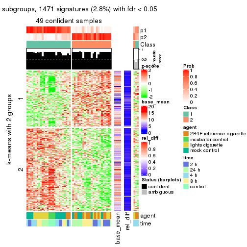
get_signatures(res, k = 3)
get_signatures(res, k = 4)
get_signatures(res, k = 5)
get_signatures(res, k = 6)

Signature heatmaps where rows are not scaled:
get_signatures(res, k = 2, scale_rows = FALSE)
get_signatures(res, k = 3, scale_rows = FALSE)

get_signatures(res, k = 4, scale_rows = FALSE)
get_signatures(res, k = 5, scale_rows = FALSE)
get_signatures(res, k = 6, scale_rows = FALSE)
Compare the overlap of signatures from different k:
compare_signatures(res)
get_signature() returns a data frame invisibly. TO get the list of signatures, the function
call should be assigned to a variable explicitly. In following code, if plot argument is set
to FALSE, no heatmap is plotted while only the differential analysis is performed.
# code only for demonstration
tb = get_signature(res, k = ..., plot = FALSE)
An example of the output of tb is:
#> which_row fdr mean_1 mean_2 scaled_mean_1 scaled_mean_2 km
#> 1 38 0.042760348 8.373488 9.131774 -0.5533452 0.5164555 1
#> 2 40 0.018707592 7.106213 8.469186 -0.6173731 0.5762149 1
#> 3 55 0.019134737 10.221463 11.207825 -0.6159697 0.5749050 1
#> 4 59 0.006059896 5.921854 7.869574 -0.6899429 0.6439467 1
#> 5 60 0.018055526 8.928898 10.211722 -0.6204761 0.5791110 1
#> 6 98 0.009384629 15.714769 14.887706 0.6635654 -0.6193277 2
...
The columns in tb are:
which_row: row indices corresponding to the input matrix.fdr: FDR for the differential test. mean_x: The mean value in group x.scaled_mean_x: The mean value in group x after rows are scaled.km: Row groups if k-means clustering is applied to rows.UMAP plot which shows how samples are separated.
dimension_reduction(res, k = 2, method = "UMAP")
dimension_reduction(res, k = 3, method = "UMAP")
dimension_reduction(res, k = 4, method = "UMAP")
dimension_reduction(res, k = 5, method = "UMAP")
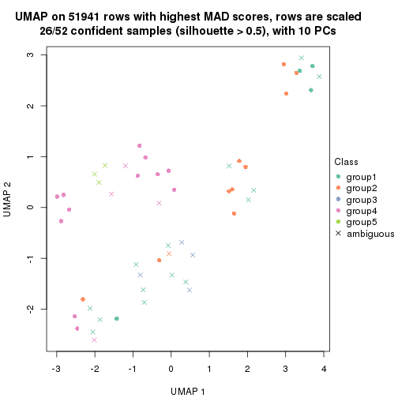
dimension_reduction(res, k = 6, method = "UMAP")
Following heatmap shows how subgroups are split when increasing k:
collect_classes(res)
Test correlation between subgroups and known annotations. If the known annotation is numeric, one-way ANOVA test is applied, and if the known annotation is discrete, chi-squared contingency table test is applied.
test_to_known_factors(res)
#> n agent(p) time(p) k
#> MAD:kmeans 49 0.018352 0.10642 2
#> MAD:kmeans 28 0.003969 0.01014 3
#> MAD:kmeans 31 0.000226 0.00384 4
#> MAD:kmeans 26 0.001185 0.03176 5
#> MAD:kmeans 18 0.005587 0.04945 6
If matrix rows can be associated to genes, consider to use GO_Enrichment(res,
...) to perform function enrichment for the signature genes.
The object with results only for a single top-value method and a single partition method can be extracted as:
res = res_list["MAD", "skmeans"]
# you can also extract it by
# res = res_list["MAD:skmeans"]
A summary of res and all the functions that can be applied to it:
res
#> A 'ConsensusPartition' object with k = 2, 3, 4, 5, 6.
#> On a matrix with 51941 rows and 52 columns.
#> Top rows (1000, 2000, 3000, 4000, 5000) are extracted by 'MAD' method.
#> Subgroups are detected by 'skmeans' method.
#> Performed in total 1250 partitions by row resampling.
#> Best k for subgroups seems to be 2.
#>
#> Following methods can be applied to this 'ConsensusPartition' object:
#> [1] "cola_report" "collect_classes" "collect_plots"
#> [4] "collect_stats" "colnames" "compare_signatures"
#> [7] "consensus_heatmap" "dimension_reduction" "functional_enrichment"
#> [10] "get_anno_col" "get_anno" "get_classes"
#> [13] "get_consensus" "get_matrix" "get_membership"
#> [16] "get_param" "get_signatures" "get_stats"
#> [19] "is_best_k" "is_stable_k" "membership_heatmap"
#> [22] "ncol" "nrow" "plot_ecdf"
#> [25] "rownames" "select_partition_number" "show"
#> [28] "suggest_best_k" "test_to_known_factors"
collect_plots() function collects all the plots made from res for all k (number of partitions)
into one single page to provide an easy and fast comparison between different k.
collect_plots(res)
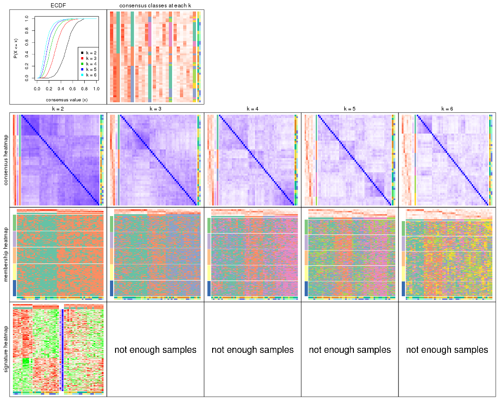
The plots are:
k and the heatmap of
predicted classes for each k.k.k.k.All the plots in panels can be made by individual functions and they are plotted later in this section.
select_partition_number() produces several plots showing different
statistics for choosing “optimized” k. There are following statistics:
k;k, the area increased is defined as \(A_k - A_{k-1}\).The detailed explanations of these statistics can be found in the cola vignette.
Generally speaking, lower PAC score, higher mean silhouette score or higher
concordance corresponds to better partition. Rand index and Jaccard index
measure how similar the current partition is compared to partition with k-1.
If they are too similar, we won't accept k is better than k-1.
select_partition_number(res)
The numeric values for all these statistics can be obtained by get_stats().
get_stats(res)
#> k 1-PAC mean_silhouette concordance area_increased Rand Jaccard
#> 2 2 0.00000 0.440 0.697 0.5078 0.493 0.493
#> 3 3 0.00765 0.235 0.553 0.3313 0.808 0.626
#> 4 4 0.05697 0.185 0.467 0.1238 0.837 0.580
#> 5 5 0.14031 0.163 0.414 0.0666 0.874 0.586
#> 6 6 0.28571 0.105 0.363 0.0417 0.890 0.545
suggest_best_k() suggests the best \(k\) based on these statistics. The rules are as follows:
NA.suggest_best_k(res)
#> [1] 2
Following shows the table of the partitions (You need to click the show/hide
code output link to see it). The membership matrix (columns with name p*)
is inferred by
clue::cl_consensus()
function with the SE method. Basically the value in the membership matrix
represents the probability to belong to a certain group. The finall class
label for an item is determined with the group with highest probability it
belongs to.
In get_classes() function, the entropy is calculated from the membership
matrix and the silhouette score is calculated from the consensus matrix.
cbind(get_classes(res, k = 2), get_membership(res, k = 2))
#> class entropy silhouette p1 p2
#> GSM270543 1 0.946 0.3956 0.636 0.364
#> GSM270544 1 0.997 0.0281 0.532 0.468
#> GSM270545 1 0.706 0.5854 0.808 0.192
#> GSM270546 1 0.821 0.5292 0.744 0.256
#> GSM270547 1 0.644 0.6041 0.836 0.164
#> GSM270548 1 0.839 0.5434 0.732 0.268
#> GSM270549 1 0.969 0.2684 0.604 0.396
#> GSM270550 1 0.584 0.6042 0.860 0.140
#> GSM270551 2 0.921 0.4846 0.336 0.664
#> GSM270552 1 0.981 0.2041 0.580 0.420
#> GSM270553 2 0.998 0.1679 0.476 0.524
#> GSM270554 1 0.993 0.0706 0.548 0.452
#> GSM270555 2 0.821 0.5610 0.256 0.744
#> GSM270556 2 0.662 0.5951 0.172 0.828
#> GSM270557 2 0.839 0.5693 0.268 0.732
#> GSM270558 2 0.788 0.5647 0.236 0.764
#> GSM270559 2 0.706 0.5899 0.192 0.808
#> GSM270560 2 0.615 0.5954 0.152 0.848
#> GSM270561 1 0.971 0.3027 0.600 0.400
#> GSM270562 2 0.730 0.5814 0.204 0.796
#> GSM270563 2 0.998 0.1794 0.472 0.528
#> GSM270564 2 0.975 0.3316 0.408 0.592
#> GSM270565 2 0.946 0.4692 0.364 0.636
#> GSM270566 2 0.917 0.4579 0.332 0.668
#> GSM270567 2 0.998 0.1244 0.476 0.524
#> GSM270568 2 0.855 0.5458 0.280 0.720
#> GSM270569 2 0.821 0.5745 0.256 0.744
#> GSM270570 2 0.955 0.4300 0.376 0.624
#> GSM270571 2 0.991 0.2006 0.444 0.556
#> GSM270572 2 0.946 0.3930 0.364 0.636
#> GSM270573 2 0.861 0.5433 0.284 0.716
#> GSM270574 2 0.775 0.5742 0.228 0.772
#> GSM270575 2 0.895 0.5201 0.312 0.688
#> GSM270576 2 0.876 0.5332 0.296 0.704
#> GSM270577 2 0.909 0.5036 0.324 0.676
#> GSM270578 2 0.991 0.2406 0.444 0.556
#> GSM270579 2 0.981 0.2947 0.420 0.580
#> GSM270580 2 0.456 0.5867 0.096 0.904
#> GSM270581 1 0.936 0.3883 0.648 0.352
#> GSM270582 1 1.000 -0.0193 0.512 0.488
#> GSM270583 2 0.891 0.5369 0.308 0.692
#> GSM270584 1 0.644 0.5870 0.836 0.164
#> GSM270585 1 0.952 0.3208 0.628 0.372
#> GSM270586 1 0.881 0.4481 0.700 0.300
#> GSM270587 1 0.625 0.6042 0.844 0.156
#> GSM270588 1 0.987 0.2390 0.568 0.432
#> GSM270589 1 0.563 0.6031 0.868 0.132
#> GSM270590 1 0.891 0.4834 0.692 0.308
#> GSM270591 1 0.625 0.6041 0.844 0.156
#> GSM270592 1 0.634 0.5975 0.840 0.160
#> GSM270593 1 0.722 0.5762 0.800 0.200
#> GSM270594 1 0.714 0.5748 0.804 0.196
cbind(get_classes(res, k = 3), get_membership(res, k = 3))
#> class entropy silhouette p1 p2 p3
#> GSM270543 1 0.949 0.15827 0.480 0.312 0.208
#> GSM270544 1 0.993 0.00185 0.392 0.300 0.308
#> GSM270545 1 0.633 0.43071 0.768 0.144 0.088
#> GSM270546 1 0.880 0.27779 0.556 0.300 0.144
#> GSM270547 1 0.630 0.43044 0.756 0.184 0.060
#> GSM270548 1 0.924 0.16693 0.472 0.368 0.160
#> GSM270549 1 0.974 0.17598 0.448 0.264 0.288
#> GSM270550 1 0.527 0.43905 0.816 0.140 0.044
#> GSM270551 3 0.923 0.25767 0.216 0.252 0.532
#> GSM270552 1 0.983 -0.00360 0.396 0.356 0.248
#> GSM270553 3 0.954 0.14085 0.280 0.236 0.484
#> GSM270554 1 0.985 0.05204 0.420 0.276 0.304
#> GSM270555 3 0.745 0.40068 0.152 0.148 0.700
#> GSM270556 3 0.794 0.40358 0.116 0.236 0.648
#> GSM270557 3 0.888 0.28297 0.184 0.244 0.572
#> GSM270558 3 0.751 0.40097 0.124 0.184 0.692
#> GSM270559 3 0.759 0.38840 0.112 0.208 0.680
#> GSM270560 3 0.799 0.29110 0.064 0.404 0.532
#> GSM270561 2 0.901 0.17123 0.360 0.500 0.140
#> GSM270562 3 0.845 0.20464 0.092 0.392 0.516
#> GSM270563 2 0.834 0.27739 0.168 0.628 0.204
#> GSM270564 2 0.885 0.20727 0.168 0.568 0.264
#> GSM270565 2 0.861 0.08035 0.120 0.556 0.324
#> GSM270566 2 0.906 0.09858 0.156 0.520 0.324
#> GSM270567 3 0.992 0.02183 0.276 0.344 0.380
#> GSM270568 3 0.912 0.26190 0.152 0.352 0.496
#> GSM270569 3 0.896 0.25042 0.136 0.360 0.504
#> GSM270570 3 0.984 0.09099 0.248 0.368 0.384
#> GSM270571 2 0.985 0.10534 0.312 0.416 0.272
#> GSM270572 3 0.904 0.28536 0.204 0.240 0.556
#> GSM270573 3 0.844 0.35357 0.124 0.284 0.592
#> GSM270574 3 0.804 0.37859 0.116 0.248 0.636
#> GSM270575 3 0.854 0.29223 0.152 0.248 0.600
#> GSM270576 3 0.875 0.24788 0.120 0.356 0.524
#> GSM270577 3 0.962 0.15442 0.224 0.316 0.460
#> GSM270578 2 0.984 -0.00525 0.252 0.400 0.348
#> GSM270579 2 0.971 0.17513 0.296 0.452 0.252
#> GSM270580 3 0.670 0.37976 0.036 0.280 0.684
#> GSM270581 2 0.750 0.16003 0.360 0.592 0.048
#> GSM270582 2 0.948 0.24949 0.328 0.472 0.200
#> GSM270583 3 0.901 0.22322 0.132 0.404 0.464
#> GSM270584 1 0.831 0.21317 0.568 0.336 0.096
#> GSM270585 2 0.859 0.15546 0.360 0.532 0.108
#> GSM270586 1 0.915 -0.03614 0.440 0.416 0.144
#> GSM270587 1 0.679 0.40458 0.728 0.196 0.076
#> GSM270588 1 0.996 -0.04364 0.372 0.328 0.300
#> GSM270589 1 0.770 0.35732 0.664 0.232 0.104
#> GSM270590 1 0.915 0.09116 0.496 0.348 0.156
#> GSM270591 1 0.695 0.41921 0.732 0.156 0.112
#> GSM270592 1 0.444 0.44584 0.864 0.084 0.052
#> GSM270593 1 0.692 0.43238 0.732 0.164 0.104
#> GSM270594 1 0.675 0.43579 0.744 0.152 0.104
cbind(get_classes(res, k = 4), get_membership(res, k = 4))
#> class entropy silhouette p1 p2 p3 p4
#> GSM270543 4 0.943 0.13989 0.140 0.240 0.204 0.416
#> GSM270544 4 0.959 0.05941 0.144 0.236 0.240 0.380
#> GSM270545 4 0.620 0.45443 0.060 0.092 0.112 0.736
#> GSM270546 4 0.811 0.31030 0.044 0.184 0.236 0.536
#> GSM270547 4 0.645 0.42278 0.040 0.112 0.140 0.708
#> GSM270548 4 0.886 0.19057 0.064 0.276 0.224 0.436
#> GSM270549 4 0.903 0.11557 0.212 0.092 0.244 0.452
#> GSM270550 4 0.601 0.44031 0.028 0.160 0.084 0.728
#> GSM270551 1 0.835 0.19301 0.536 0.112 0.252 0.100
#> GSM270552 3 0.973 0.12830 0.180 0.188 0.344 0.288
#> GSM270553 1 0.963 -0.01649 0.352 0.144 0.292 0.212
#> GSM270554 3 0.979 0.17765 0.192 0.192 0.336 0.280
#> GSM270555 1 0.756 0.24146 0.616 0.064 0.204 0.116
#> GSM270556 1 0.797 0.24633 0.584 0.164 0.184 0.068
#> GSM270557 1 0.908 0.14683 0.452 0.116 0.268 0.164
#> GSM270558 1 0.678 0.27141 0.668 0.052 0.208 0.072
#> GSM270559 1 0.667 0.29047 0.684 0.136 0.148 0.032
#> GSM270560 1 0.876 0.19096 0.416 0.244 0.292 0.048
#> GSM270561 3 0.962 -0.07483 0.128 0.300 0.328 0.244
#> GSM270562 1 0.883 0.16087 0.372 0.288 0.296 0.044
#> GSM270563 2 0.727 0.27014 0.144 0.648 0.152 0.056
#> GSM270564 2 0.840 0.19703 0.172 0.556 0.168 0.104
#> GSM270565 2 0.801 0.19159 0.200 0.568 0.176 0.056
#> GSM270566 2 0.919 -0.02310 0.252 0.400 0.264 0.084
#> GSM270567 3 0.994 0.06732 0.240 0.264 0.292 0.204
#> GSM270568 1 0.937 0.10264 0.400 0.160 0.296 0.144
#> GSM270569 1 0.881 0.16413 0.424 0.228 0.292 0.056
#> GSM270570 1 0.937 0.14889 0.396 0.244 0.252 0.108
#> GSM270571 3 0.973 0.03705 0.228 0.224 0.368 0.180
#> GSM270572 1 0.901 0.06242 0.388 0.104 0.364 0.144
#> GSM270573 1 0.839 0.18702 0.428 0.100 0.392 0.080
#> GSM270574 1 0.861 0.21360 0.508 0.140 0.256 0.096
#> GSM270575 1 0.896 0.16100 0.468 0.140 0.268 0.124
#> GSM270576 1 0.926 0.14636 0.428 0.200 0.256 0.116
#> GSM270577 3 0.963 -0.00602 0.268 0.184 0.376 0.172
#> GSM270578 1 0.999 -0.03746 0.272 0.248 0.240 0.240
#> GSM270579 2 0.976 -0.04738 0.260 0.300 0.292 0.148
#> GSM270580 1 0.691 0.29840 0.656 0.172 0.144 0.028
#> GSM270581 2 0.663 0.30683 0.060 0.700 0.088 0.152
#> GSM270582 2 0.852 0.21056 0.104 0.540 0.196 0.160
#> GSM270583 1 0.922 0.09617 0.336 0.328 0.260 0.076
#> GSM270584 2 0.765 0.10262 0.044 0.516 0.088 0.352
#> GSM270585 2 0.739 0.24629 0.068 0.644 0.140 0.148
#> GSM270586 2 0.862 0.13878 0.048 0.456 0.240 0.256
#> GSM270587 4 0.717 0.35837 0.044 0.124 0.188 0.644
#> GSM270588 3 0.978 0.08457 0.244 0.156 0.308 0.292
#> GSM270589 4 0.853 0.22524 0.068 0.180 0.248 0.504
#> GSM270590 2 0.976 -0.06158 0.148 0.316 0.272 0.264
#> GSM270591 4 0.657 0.42892 0.052 0.144 0.100 0.704
#> GSM270592 4 0.596 0.42652 0.012 0.120 0.148 0.720
#> GSM270593 4 0.630 0.41341 0.060 0.060 0.164 0.716
#> GSM270594 4 0.682 0.41331 0.076 0.092 0.140 0.692
cbind(get_classes(res, k = 5), get_membership(res, k = 5))
#> class entropy silhouette p1 p2 p3 p4 p5
#> GSM270543 4 0.878 0.16701 0.052 0.172 0.224 0.428 0.124
#> GSM270544 4 0.959 0.04185 0.164 0.144 0.260 0.312 0.120
#> GSM270545 4 0.596 0.39446 0.024 0.064 0.108 0.716 0.088
#> GSM270546 4 0.769 0.30191 0.028 0.112 0.168 0.560 0.132
#> GSM270547 4 0.611 0.37305 0.024 0.092 0.068 0.704 0.112
#> GSM270548 4 0.902 0.10759 0.052 0.196 0.176 0.400 0.176
#> GSM270549 4 0.927 0.08651 0.132 0.088 0.164 0.368 0.248
#> GSM270550 4 0.697 0.36009 0.048 0.116 0.060 0.640 0.136
#> GSM270551 3 0.893 0.08067 0.276 0.088 0.376 0.068 0.192
#> GSM270552 5 0.896 0.20483 0.176 0.128 0.080 0.180 0.436
#> GSM270553 5 0.886 0.15148 0.116 0.092 0.180 0.156 0.456
#> GSM270554 5 0.836 0.23609 0.120 0.108 0.076 0.184 0.512
#> GSM270555 1 0.842 0.10113 0.424 0.040 0.200 0.072 0.264
#> GSM270556 1 0.831 0.12193 0.452 0.100 0.248 0.028 0.172
#> GSM270557 1 0.888 -0.01478 0.352 0.084 0.340 0.092 0.132
#> GSM270558 1 0.740 0.14407 0.576 0.044 0.156 0.044 0.180
#> GSM270559 1 0.874 -0.01755 0.372 0.080 0.292 0.052 0.204
#> GSM270560 1 0.833 0.06165 0.428 0.112 0.272 0.020 0.168
#> GSM270561 2 0.881 0.14422 0.096 0.436 0.112 0.108 0.248
#> GSM270562 3 0.840 0.10115 0.232 0.204 0.448 0.052 0.064
#> GSM270563 2 0.742 0.28779 0.056 0.580 0.212 0.092 0.060
#> GSM270564 2 0.834 0.20672 0.092 0.480 0.192 0.044 0.192
#> GSM270565 2 0.793 0.19075 0.076 0.460 0.328 0.044 0.092
#> GSM270566 2 0.891 0.04791 0.232 0.356 0.264 0.048 0.100
#> GSM270567 1 0.918 0.06879 0.352 0.192 0.092 0.092 0.272
#> GSM270568 1 0.922 0.12343 0.384 0.104 0.216 0.100 0.196
#> GSM270569 1 0.930 0.04798 0.316 0.160 0.256 0.056 0.212
#> GSM270570 1 0.958 0.01206 0.284 0.180 0.244 0.080 0.212
#> GSM270571 5 0.989 0.03758 0.204 0.172 0.216 0.148 0.260
#> GSM270572 1 0.799 0.14920 0.552 0.100 0.080 0.092 0.176
#> GSM270573 1 0.793 0.13949 0.520 0.068 0.240 0.056 0.116
#> GSM270574 1 0.704 0.15109 0.632 0.072 0.152 0.044 0.100
#> GSM270575 3 0.836 0.15293 0.148 0.076 0.480 0.064 0.232
#> GSM270576 3 0.828 0.21911 0.112 0.104 0.536 0.132 0.116
#> GSM270577 5 0.921 0.10836 0.192 0.116 0.180 0.108 0.404
#> GSM270578 3 0.961 0.07629 0.104 0.224 0.316 0.156 0.200
#> GSM270579 3 0.950 0.07422 0.124 0.216 0.348 0.120 0.192
#> GSM270580 3 0.841 0.02164 0.340 0.092 0.372 0.028 0.168
#> GSM270581 2 0.600 0.37786 0.044 0.720 0.068 0.108 0.060
#> GSM270582 2 0.832 0.27097 0.100 0.504 0.212 0.112 0.072
#> GSM270583 1 0.893 0.09620 0.364 0.252 0.172 0.032 0.180
#> GSM270584 2 0.748 0.20737 0.056 0.528 0.032 0.276 0.108
#> GSM270585 2 0.666 0.34227 0.084 0.668 0.044 0.132 0.072
#> GSM270586 2 0.887 0.14673 0.040 0.384 0.124 0.236 0.216
#> GSM270587 4 0.864 0.19941 0.088 0.184 0.052 0.424 0.252
#> GSM270588 1 0.897 0.00827 0.412 0.108 0.076 0.232 0.172
#> GSM270589 4 0.841 0.11556 0.092 0.184 0.024 0.380 0.320
#> GSM270590 2 0.923 0.10011 0.176 0.364 0.060 0.184 0.216
#> GSM270591 4 0.696 0.37288 0.048 0.136 0.040 0.628 0.148
#> GSM270592 4 0.688 0.32155 0.064 0.096 0.032 0.632 0.176
#> GSM270593 4 0.707 0.28794 0.068 0.024 0.076 0.572 0.260
#> GSM270594 4 0.711 0.34245 0.040 0.068 0.096 0.616 0.180
cbind(get_classes(res, k = 6), get_membership(res, k = 6))
#> class entropy silhouette p1 p2 p3 p4 p5 p6
#> GSM270543 4 0.880 0.08022 0.192 0.164 0.124 0.400 0.064 0.056
#> GSM270544 1 0.979 -0.08521 0.240 0.100 0.184 0.196 0.144 0.136
#> GSM270545 1 0.583 0.31485 0.692 0.032 0.036 0.152 0.036 0.052
#> GSM270546 4 0.666 -0.09756 0.352 0.072 0.024 0.496 0.024 0.032
#> GSM270547 1 0.700 0.14588 0.456 0.044 0.032 0.376 0.036 0.056
#> GSM270548 1 0.799 0.02797 0.384 0.104 0.044 0.352 0.040 0.076
#> GSM270549 4 0.867 0.07249 0.280 0.028 0.092 0.360 0.124 0.116
#> GSM270550 1 0.636 0.32235 0.612 0.072 0.016 0.220 0.024 0.056
#> GSM270551 3 0.882 0.07730 0.076 0.040 0.392 0.168 0.176 0.148
#> GSM270552 4 0.982 0.06369 0.200 0.168 0.100 0.228 0.132 0.172
#> GSM270553 4 0.962 -0.02085 0.128 0.068 0.152 0.244 0.224 0.184
#> GSM270554 6 0.981 -0.07610 0.176 0.120 0.132 0.184 0.136 0.252
#> GSM270555 5 0.805 -0.02486 0.068 0.032 0.256 0.080 0.456 0.108
#> GSM270556 5 0.638 0.09033 0.024 0.084 0.112 0.048 0.664 0.068
#> GSM270557 6 0.921 -0.05378 0.044 0.076 0.224 0.196 0.176 0.284
#> GSM270558 3 0.836 -0.00926 0.020 0.048 0.288 0.080 0.284 0.280
#> GSM270559 5 0.839 -0.02799 0.032 0.064 0.288 0.092 0.388 0.136
#> GSM270560 3 0.873 0.05062 0.016 0.132 0.356 0.096 0.232 0.168
#> GSM270561 2 0.899 0.10795 0.084 0.340 0.104 0.128 0.068 0.276
#> GSM270562 3 0.761 0.14869 0.020 0.148 0.544 0.080 0.112 0.096
#> GSM270563 2 0.795 0.25409 0.032 0.508 0.160 0.144 0.072 0.084
#> GSM270564 2 0.861 0.20642 0.052 0.448 0.136 0.128 0.084 0.152
#> GSM270565 2 0.861 0.12384 0.020 0.388 0.232 0.100 0.148 0.112
#> GSM270566 2 0.932 -0.05399 0.040 0.268 0.224 0.100 0.188 0.180
#> GSM270567 5 0.976 0.05620 0.100 0.176 0.124 0.180 0.256 0.164
#> GSM270568 5 0.853 0.09864 0.064 0.092 0.148 0.092 0.464 0.140
#> GSM270569 5 0.877 0.07743 0.012 0.208 0.136 0.092 0.328 0.224
#> GSM270570 5 0.933 0.09716 0.052 0.192 0.120 0.192 0.312 0.132
#> GSM270571 6 0.961 0.04523 0.112 0.160 0.080 0.184 0.188 0.276
#> GSM270572 6 0.774 0.00204 0.084 0.032 0.128 0.020 0.312 0.424
#> GSM270573 5 0.868 0.00511 0.052 0.028 0.220 0.116 0.312 0.272
#> GSM270574 6 0.826 -0.01745 0.020 0.068 0.232 0.068 0.216 0.396
#> GSM270575 3 0.823 0.12106 0.052 0.060 0.480 0.156 0.164 0.088
#> GSM270576 3 0.746 0.14940 0.032 0.100 0.556 0.152 0.120 0.040
#> GSM270577 6 0.959 0.00612 0.068 0.132 0.188 0.164 0.172 0.276
#> GSM270578 3 0.933 0.05477 0.116 0.100 0.284 0.272 0.156 0.072
#> GSM270579 5 0.957 0.05039 0.076 0.160 0.132 0.248 0.256 0.128
#> GSM270580 3 0.707 0.10546 0.012 0.024 0.560 0.108 0.180 0.116
#> GSM270581 2 0.578 0.31597 0.068 0.708 0.064 0.104 0.020 0.036
#> GSM270582 2 0.829 0.23821 0.040 0.472 0.160 0.100 0.072 0.156
#> GSM270583 5 0.863 0.07275 0.020 0.244 0.136 0.064 0.356 0.180
#> GSM270584 2 0.767 0.07948 0.288 0.456 0.016 0.076 0.048 0.116
#> GSM270585 2 0.700 0.25331 0.080 0.624 0.044 0.080 0.068 0.104
#> GSM270586 2 0.923 0.10916 0.220 0.332 0.064 0.168 0.092 0.124
#> GSM270587 1 0.774 0.24757 0.512 0.108 0.040 0.092 0.040 0.208
#> GSM270588 6 0.841 0.11577 0.192 0.104 0.092 0.044 0.108 0.460
#> GSM270589 1 0.873 0.17969 0.364 0.180 0.044 0.112 0.056 0.244
#> GSM270590 2 0.825 0.12586 0.148 0.384 0.068 0.044 0.048 0.308
#> GSM270591 1 0.639 0.31642 0.664 0.112 0.048 0.096 0.040 0.040
#> GSM270592 1 0.578 0.35851 0.704 0.072 0.020 0.056 0.032 0.116
#> GSM270593 1 0.584 0.29056 0.700 0.036 0.020 0.120 0.068 0.056
#> GSM270594 1 0.676 0.28875 0.632 0.056 0.024 0.120 0.084 0.084
Heatmaps for the consensus matrix. It visualizes the probability of two samples to be in a same group.
consensus_heatmap(res, k = 2)
consensus_heatmap(res, k = 3)
consensus_heatmap(res, k = 4)
consensus_heatmap(res, k = 5)
consensus_heatmap(res, k = 6)
Heatmaps for the membership of samples in all partitions to see how consistent they are:
membership_heatmap(res, k = 2)
membership_heatmap(res, k = 3)
membership_heatmap(res, k = 4)
membership_heatmap(res, k = 5)
membership_heatmap(res, k = 6)
As soon as we have had the classes for columns, we can look for signatures which are significantly different between classes which can be candidate marks for certain classes. Following are the heatmaps for signatures.
Signature heatmaps where rows are scaled:
get_signatures(res, k = 2)
get_signatures(res, k = 3)

get_signatures(res, k = 4)

get_signatures(res, k = 5)

get_signatures(res, k = 6)

Signature heatmaps where rows are not scaled:
get_signatures(res, k = 2, scale_rows = FALSE)
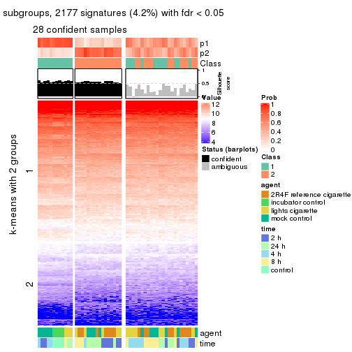
get_signatures(res, k = 3, scale_rows = FALSE)

get_signatures(res, k = 4, scale_rows = FALSE)

get_signatures(res, k = 5, scale_rows = FALSE)

get_signatures(res, k = 6, scale_rows = FALSE)

Compare the overlap of signatures from different k:
compare_signatures(res)
get_signature() returns a data frame invisibly. TO get the list of signatures, the function
call should be assigned to a variable explicitly. In following code, if plot argument is set
to FALSE, no heatmap is plotted while only the differential analysis is performed.
# code only for demonstration
tb = get_signature(res, k = ..., plot = FALSE)
An example of the output of tb is:
#> which_row fdr mean_1 mean_2 scaled_mean_1 scaled_mean_2 km
#> 1 38 0.042760348 8.373488 9.131774 -0.5533452 0.5164555 1
#> 2 40 0.018707592 7.106213 8.469186 -0.6173731 0.5762149 1
#> 3 55 0.019134737 10.221463 11.207825 -0.6159697 0.5749050 1
#> 4 59 0.006059896 5.921854 7.869574 -0.6899429 0.6439467 1
#> 5 60 0.018055526 8.928898 10.211722 -0.6204761 0.5791110 1
#> 6 98 0.009384629 15.714769 14.887706 0.6635654 -0.6193277 2
...
The columns in tb are:
which_row: row indices corresponding to the input matrix.fdr: FDR for the differential test. mean_x: The mean value in group x.scaled_mean_x: The mean value in group x after rows are scaled.km: Row groups if k-means clustering is applied to rows.UMAP plot which shows how samples are separated.
dimension_reduction(res, k = 2, method = "UMAP")
dimension_reduction(res, k = 3, method = "UMAP")
dimension_reduction(res, k = 4, method = "UMAP")
dimension_reduction(res, k = 5, method = "UMAP")
dimension_reduction(res, k = 6, method = "UMAP")
Following heatmap shows how subgroups are split when increasing k:
collect_classes(res)
Test correlation between subgroups and known annotations. If the known annotation is numeric, one-way ANOVA test is applied, and if the known annotation is discrete, chi-squared contingency table test is applied.
test_to_known_factors(res)
#> n agent(p) time(p) k
#> MAD:skmeans 28 0.0104 0.0472 2
#> MAD:skmeans 0 NA NA 3
#> MAD:skmeans 0 NA NA 4
#> MAD:skmeans 0 NA NA 5
#> MAD:skmeans 0 NA NA 6
If matrix rows can be associated to genes, consider to use GO_Enrichment(res,
...) to perform function enrichment for the signature genes.
The object with results only for a single top-value method and a single partition method can be extracted as:
res = res_list["MAD", "pam"]
# you can also extract it by
# res = res_list["MAD:pam"]
A summary of res and all the functions that can be applied to it:
res
#> A 'ConsensusPartition' object with k = 2, 3, 4, 5, 6.
#> On a matrix with 51941 rows and 52 columns.
#> Top rows (1000, 2000, 3000, 4000, 5000) are extracted by 'MAD' method.
#> Subgroups are detected by 'pam' method.
#> Performed in total 1250 partitions by row resampling.
#> Best k for subgroups seems to be 2.
#>
#> Following methods can be applied to this 'ConsensusPartition' object:
#> [1] "cola_report" "collect_classes" "collect_plots"
#> [4] "collect_stats" "colnames" "compare_signatures"
#> [7] "consensus_heatmap" "dimension_reduction" "functional_enrichment"
#> [10] "get_anno_col" "get_anno" "get_classes"
#> [13] "get_consensus" "get_matrix" "get_membership"
#> [16] "get_param" "get_signatures" "get_stats"
#> [19] "is_best_k" "is_stable_k" "membership_heatmap"
#> [22] "ncol" "nrow" "plot_ecdf"
#> [25] "rownames" "select_partition_number" "show"
#> [28] "suggest_best_k" "test_to_known_factors"
collect_plots() function collects all the plots made from res for all k (number of partitions)
into one single page to provide an easy and fast comparison between different k.
collect_plots(res)
The plots are:
k and the heatmap of
predicted classes for each k.k.k.k.All the plots in panels can be made by individual functions and they are plotted later in this section.
select_partition_number() produces several plots showing different
statistics for choosing “optimized” k. There are following statistics:
k;k, the area increased is defined as \(A_k - A_{k-1}\).The detailed explanations of these statistics can be found in the cola vignette.
Generally speaking, lower PAC score, higher mean silhouette score or higher
concordance corresponds to better partition. Rand index and Jaccard index
measure how similar the current partition is compared to partition with k-1.
If they are too similar, we won't accept k is better than k-1.
select_partition_number(res)
The numeric values for all these statistics can be obtained by get_stats().
get_stats(res)
#> k 1-PAC mean_silhouette concordance area_increased Rand Jaccard
#> 2 2 0.0884 0.570 0.781 0.4616 0.527 0.527
#> 3 3 0.0969 0.282 0.720 0.1828 0.867 0.770
#> 4 4 0.1131 0.306 0.687 0.0910 0.939 0.877
#> 5 5 0.1369 0.329 0.691 0.0404 0.908 0.801
#> 6 6 0.1667 0.299 0.682 0.0347 0.974 0.934
suggest_best_k() suggests the best \(k\) based on these statistics. The rules are as follows:
NA.suggest_best_k(res)
#> [1] 2
Following shows the table of the partitions (You need to click the show/hide
code output link to see it). The membership matrix (columns with name p*)
is inferred by
clue::cl_consensus()
function with the SE method. Basically the value in the membership matrix
represents the probability to belong to a certain group. The finall class
label for an item is determined with the group with highest probability it
belongs to.
In get_classes() function, the entropy is calculated from the membership
matrix and the silhouette score is calculated from the consensus matrix.
cbind(get_classes(res, k = 2), get_membership(res, k = 2))
#> class entropy silhouette p1 p2
#> GSM270543 1 0.9661 0.3411 0.608 0.392
#> GSM270544 1 0.7299 0.6693 0.796 0.204
#> GSM270545 2 0.9815 0.4811 0.420 0.580
#> GSM270546 2 1.0000 0.2622 0.496 0.504
#> GSM270547 1 0.5946 0.7003 0.856 0.144
#> GSM270548 1 0.1633 0.7326 0.976 0.024
#> GSM270549 1 0.4815 0.7294 0.896 0.104
#> GSM270550 1 0.8661 0.5185 0.712 0.288
#> GSM270551 1 0.2948 0.7313 0.948 0.052
#> GSM270552 1 0.5294 0.7018 0.880 0.120
#> GSM270553 1 0.4815 0.7319 0.896 0.104
#> GSM270554 1 0.2603 0.7297 0.956 0.044
#> GSM270555 1 0.0000 0.7242 1.000 0.000
#> GSM270556 2 0.8955 0.6184 0.312 0.688
#> GSM270557 1 0.7376 0.6646 0.792 0.208
#> GSM270558 2 0.9996 0.2408 0.488 0.512
#> GSM270559 1 0.2603 0.7227 0.956 0.044
#> GSM270560 2 0.8861 0.5631 0.304 0.696
#> GSM270561 1 0.7950 0.6382 0.760 0.240
#> GSM270562 2 0.7815 0.6939 0.232 0.768
#> GSM270563 2 0.4298 0.7239 0.088 0.912
#> GSM270564 2 0.8813 0.6655 0.300 0.700
#> GSM270565 1 0.9963 0.1243 0.536 0.464
#> GSM270566 1 0.9460 0.4396 0.636 0.364
#> GSM270567 1 1.0000 -0.1921 0.500 0.500
#> GSM270568 1 0.9248 0.4810 0.660 0.340
#> GSM270569 2 0.1843 0.6988 0.028 0.972
#> GSM270570 2 0.4022 0.7145 0.080 0.920
#> GSM270571 1 0.5294 0.7348 0.880 0.120
#> GSM270572 1 0.8144 0.6331 0.748 0.252
#> GSM270573 1 0.7745 0.6480 0.772 0.228
#> GSM270574 1 0.9988 0.0443 0.520 0.480
#> GSM270575 1 0.8555 0.5877 0.720 0.280
#> GSM270576 2 0.6247 0.7267 0.156 0.844
#> GSM270577 1 0.4161 0.7320 0.916 0.084
#> GSM270578 1 0.9881 0.0799 0.564 0.436
#> GSM270579 2 0.9881 0.3213 0.436 0.564
#> GSM270580 1 0.9970 0.1145 0.532 0.468
#> GSM270581 2 0.2423 0.7087 0.040 0.960
#> GSM270582 2 0.7674 0.6934 0.224 0.776
#> GSM270583 2 0.2778 0.7133 0.048 0.952
#> GSM270584 2 0.5059 0.7268 0.112 0.888
#> GSM270585 2 0.5059 0.7306 0.112 0.888
#> GSM270586 2 0.9909 0.3540 0.444 0.556
#> GSM270587 1 0.6048 0.6982 0.852 0.148
#> GSM270588 1 0.9661 0.4312 0.608 0.392
#> GSM270589 1 0.4161 0.7385 0.916 0.084
#> GSM270590 2 0.9661 0.4814 0.392 0.608
#> GSM270591 1 0.3114 0.7357 0.944 0.056
#> GSM270592 1 0.1633 0.7310 0.976 0.024
#> GSM270593 1 0.0000 0.7242 1.000 0.000
#> GSM270594 1 0.0672 0.7256 0.992 0.008
cbind(get_classes(res, k = 3), get_membership(res, k = 3))
#> class entropy silhouette p1 p2 p3
#> GSM270543 1 0.6282 0.1309 0.612 0.384 0.004
#> GSM270544 1 0.6247 0.4392 0.744 0.212 0.044
#> GSM270545 2 0.8188 0.1098 0.372 0.548 0.080
#> GSM270546 1 0.9589 -0.3776 0.424 0.376 0.200
#> GSM270547 1 0.7007 0.3642 0.724 0.100 0.176
#> GSM270548 1 0.2229 0.5654 0.944 0.012 0.044
#> GSM270549 1 0.2998 0.5649 0.916 0.068 0.016
#> GSM270550 1 0.8838 -0.0280 0.580 0.220 0.200
#> GSM270551 1 0.6090 0.3417 0.716 0.020 0.264
#> GSM270552 1 0.5564 0.4611 0.808 0.128 0.064
#> GSM270553 1 0.5093 0.5310 0.836 0.088 0.076
#> GSM270554 1 0.3045 0.5500 0.916 0.020 0.064
#> GSM270555 1 0.0424 0.5663 0.992 0.000 0.008
#> GSM270556 2 0.6936 0.3064 0.284 0.672 0.044
#> GSM270557 1 0.8637 -0.1905 0.564 0.128 0.308
#> GSM270558 2 0.9762 -0.4665 0.360 0.408 0.232
#> GSM270559 1 0.5072 0.4580 0.792 0.012 0.196
#> GSM270560 2 0.9042 0.0840 0.176 0.544 0.280
#> GSM270561 1 0.5115 0.4395 0.768 0.228 0.004
#> GSM270562 2 0.8334 0.3056 0.136 0.616 0.248
#> GSM270563 2 0.1753 0.5321 0.048 0.952 0.000
#> GSM270564 2 0.8576 0.2236 0.240 0.600 0.160
#> GSM270565 1 0.8382 -0.1371 0.492 0.424 0.084
#> GSM270566 1 0.8434 -0.0114 0.560 0.336 0.104
#> GSM270567 2 0.9574 -0.2540 0.392 0.412 0.196
#> GSM270568 1 0.5956 0.2746 0.672 0.324 0.004
#> GSM270569 2 0.1647 0.5072 0.004 0.960 0.036
#> GSM270570 2 0.6007 0.4247 0.048 0.768 0.184
#> GSM270571 1 0.5085 0.5073 0.836 0.072 0.092
#> GSM270572 1 0.7485 0.2651 0.696 0.172 0.132
#> GSM270573 1 0.6911 0.3249 0.728 0.180 0.092
#> GSM270574 3 0.9913 0.0000 0.336 0.276 0.388
#> GSM270575 1 0.8524 -0.1000 0.460 0.092 0.448
#> GSM270576 2 0.6778 0.4404 0.080 0.732 0.188
#> GSM270577 1 0.2492 0.5647 0.936 0.048 0.016
#> GSM270578 1 0.8322 -0.2101 0.492 0.428 0.080
#> GSM270579 2 0.6432 0.1763 0.428 0.568 0.004
#> GSM270580 2 0.8382 -0.0144 0.424 0.492 0.084
#> GSM270581 2 0.1170 0.5195 0.016 0.976 0.008
#> GSM270582 2 0.5111 0.5031 0.168 0.808 0.024
#> GSM270583 2 0.3995 0.4823 0.016 0.868 0.116
#> GSM270584 2 0.2261 0.5347 0.068 0.932 0.000
#> GSM270585 2 0.2772 0.5348 0.080 0.916 0.004
#> GSM270586 2 0.6204 0.1208 0.424 0.576 0.000
#> GSM270587 1 0.6519 0.4181 0.760 0.132 0.108
#> GSM270588 1 0.9048 -0.1787 0.548 0.268 0.184
#> GSM270589 1 0.4652 0.5446 0.856 0.064 0.080
#> GSM270590 2 0.6264 0.2728 0.380 0.616 0.004
#> GSM270591 1 0.3375 0.5653 0.908 0.044 0.048
#> GSM270592 1 0.0237 0.5659 0.996 0.004 0.000
#> GSM270593 1 0.0000 0.5646 1.000 0.000 0.000
#> GSM270594 1 0.1647 0.5641 0.960 0.004 0.036
cbind(get_classes(res, k = 4), get_membership(res, k = 4))
#> class entropy silhouette p1 p2 p3 p4
#> GSM270543 4 0.5165 0.22856 0.004 0.388 0.004 0.604
#> GSM270544 4 0.5537 0.46028 0.064 0.200 0.008 0.728
#> GSM270545 2 0.7521 0.03018 0.152 0.488 0.008 0.352
#> GSM270546 4 0.8041 -0.37549 0.348 0.284 0.004 0.364
#> GSM270547 4 0.5993 0.18430 0.308 0.064 0.000 0.628
#> GSM270548 4 0.1890 0.55488 0.056 0.008 0.000 0.936
#> GSM270549 4 0.2896 0.55479 0.032 0.056 0.008 0.904
#> GSM270550 4 0.7158 -0.11168 0.340 0.148 0.000 0.512
#> GSM270551 4 0.6936 -0.17107 0.416 0.012 0.076 0.496
#> GSM270552 4 0.5280 0.42319 0.124 0.124 0.000 0.752
#> GSM270553 4 0.4688 0.50127 0.128 0.080 0.000 0.792
#> GSM270554 4 0.3006 0.53873 0.092 0.012 0.008 0.888
#> GSM270555 4 0.0707 0.55869 0.020 0.000 0.000 0.980
#> GSM270556 2 0.6982 0.35251 0.060 0.648 0.068 0.224
#> GSM270557 1 0.6943 0.33480 0.488 0.096 0.004 0.412
#> GSM270558 1 0.8402 0.35907 0.372 0.344 0.020 0.264
#> GSM270559 4 0.4720 0.27517 0.324 0.004 0.000 0.672
#> GSM270560 2 0.8371 0.04229 0.340 0.460 0.052 0.148
#> GSM270561 4 0.3945 0.47917 0.004 0.216 0.000 0.780
#> GSM270562 2 0.7818 0.19856 0.312 0.528 0.040 0.120
#> GSM270563 2 0.1211 0.55082 0.000 0.960 0.000 0.040
#> GSM270564 2 0.7594 -0.01480 0.280 0.504 0.004 0.212
#> GSM270565 4 0.7527 0.00522 0.136 0.368 0.012 0.484
#> GSM270566 4 0.7007 0.14788 0.124 0.316 0.004 0.556
#> GSM270567 2 0.8537 -0.30015 0.296 0.340 0.024 0.340
#> GSM270568 4 0.4936 0.34551 0.012 0.316 0.000 0.672
#> GSM270569 2 0.1639 0.53391 0.036 0.952 0.008 0.004
#> GSM270570 2 0.5364 0.41598 0.228 0.724 0.012 0.036
#> GSM270571 4 0.4819 0.45893 0.152 0.060 0.004 0.784
#> GSM270572 4 0.6500 0.25581 0.184 0.144 0.008 0.664
#> GSM270573 4 0.6121 0.31625 0.140 0.164 0.004 0.692
#> GSM270574 1 0.7553 0.54700 0.548 0.200 0.012 0.240
#> GSM270575 3 0.4898 0.00000 0.000 0.024 0.716 0.260
#> GSM270576 2 0.7324 0.35019 0.228 0.624 0.084 0.064
#> GSM270577 4 0.2131 0.55710 0.036 0.032 0.000 0.932
#> GSM270578 4 0.7475 -0.07481 0.108 0.384 0.020 0.488
#> GSM270579 2 0.5598 0.22669 0.016 0.564 0.004 0.416
#> GSM270580 2 0.9028 0.04930 0.232 0.392 0.068 0.308
#> GSM270581 2 0.1377 0.54686 0.008 0.964 0.008 0.020
#> GSM270582 2 0.4362 0.52159 0.024 0.808 0.012 0.156
#> GSM270583 2 0.3896 0.50366 0.120 0.844 0.024 0.012
#> GSM270584 2 0.1474 0.55146 0.000 0.948 0.000 0.052
#> GSM270585 2 0.2101 0.55184 0.012 0.928 0.000 0.060
#> GSM270586 2 0.4933 0.19133 0.000 0.568 0.000 0.432
#> GSM270587 4 0.6075 0.30375 0.192 0.128 0.000 0.680
#> GSM270588 4 0.7692 -0.11109 0.244 0.236 0.008 0.512
#> GSM270589 4 0.3919 0.53300 0.104 0.056 0.000 0.840
#> GSM270590 2 0.4964 0.30354 0.004 0.616 0.000 0.380
#> GSM270591 4 0.3292 0.55300 0.080 0.036 0.004 0.880
#> GSM270592 4 0.0188 0.55701 0.000 0.004 0.000 0.996
#> GSM270593 4 0.0000 0.55571 0.000 0.000 0.000 1.000
#> GSM270594 4 0.2216 0.53926 0.092 0.000 0.000 0.908
cbind(get_classes(res, k = 5), get_membership(res, k = 5))
#> class entropy silhouette p1 p2 p3 p4 p5
#> GSM270543 4 0.4564 0.26406 0.008 0.388 0.004 0.600 0.000
#> GSM270544 4 0.4887 0.47671 0.072 0.200 0.008 0.720 0.000
#> GSM270545 2 0.6490 0.02652 0.156 0.492 0.008 0.344 0.000
#> GSM270546 1 0.6920 0.31504 0.368 0.280 0.004 0.348 0.000
#> GSM270547 4 0.5274 0.11194 0.336 0.064 0.000 0.600 0.000
#> GSM270548 4 0.1628 0.56869 0.056 0.008 0.000 0.936 0.000
#> GSM270549 4 0.2499 0.57376 0.028 0.052 0.008 0.908 0.004
#> GSM270550 4 0.6254 -0.21053 0.368 0.152 0.000 0.480 0.000
#> GSM270551 1 0.6781 0.19534 0.520 0.000 0.076 0.332 0.072
#> GSM270552 4 0.4939 0.43010 0.140 0.116 0.004 0.736 0.004
#> GSM270553 4 0.4239 0.50476 0.132 0.080 0.004 0.784 0.000
#> GSM270554 4 0.2748 0.55704 0.092 0.012 0.008 0.884 0.004
#> GSM270555 4 0.0794 0.57390 0.028 0.000 0.000 0.972 0.000
#> GSM270556 2 0.7263 0.34065 0.052 0.588 0.040 0.204 0.116
#> GSM270557 1 0.5819 0.35655 0.540 0.088 0.000 0.368 0.004
#> GSM270558 1 0.7093 0.27904 0.404 0.340 0.000 0.240 0.016
#> GSM270559 4 0.4166 0.23780 0.348 0.004 0.000 0.648 0.000
#> GSM270560 2 0.7945 0.09876 0.288 0.424 0.000 0.128 0.160
#> GSM270561 4 0.3366 0.50259 0.000 0.212 0.000 0.784 0.004
#> GSM270562 2 0.7454 0.21345 0.260 0.504 0.000 0.112 0.124
#> GSM270563 2 0.0880 0.58589 0.000 0.968 0.000 0.032 0.000
#> GSM270564 2 0.6716 -0.08522 0.300 0.480 0.000 0.212 0.008
#> GSM270565 4 0.6849 0.02669 0.124 0.368 0.004 0.476 0.028
#> GSM270566 4 0.6143 0.17923 0.136 0.316 0.000 0.544 0.004
#> GSM270567 4 0.7362 -0.37874 0.312 0.324 0.000 0.340 0.024
#> GSM270568 4 0.4502 0.38021 0.012 0.312 0.008 0.668 0.000
#> GSM270569 2 0.1533 0.56315 0.016 0.952 0.004 0.004 0.024
#> GSM270570 2 0.4747 0.44582 0.232 0.716 0.000 0.036 0.016
#> GSM270571 4 0.4139 0.48727 0.164 0.052 0.000 0.780 0.004
#> GSM270572 4 0.5628 0.31897 0.204 0.128 0.004 0.660 0.004
#> GSM270573 4 0.5820 0.35258 0.144 0.148 0.000 0.676 0.032
#> GSM270574 1 0.6720 0.36326 0.580 0.184 0.004 0.200 0.032
#> GSM270575 3 0.2881 0.00000 0.000 0.012 0.860 0.124 0.004
#> GSM270576 2 0.7415 0.26950 0.212 0.532 0.016 0.048 0.192
#> GSM270577 4 0.1750 0.57586 0.036 0.028 0.000 0.936 0.000
#> GSM270578 4 0.7361 -0.07886 0.092 0.348 0.004 0.464 0.092
#> GSM270579 2 0.4760 0.22018 0.020 0.564 0.000 0.416 0.000
#> GSM270580 5 0.6315 0.00000 0.028 0.148 0.000 0.216 0.608
#> GSM270581 2 0.1016 0.57757 0.008 0.972 0.004 0.012 0.004
#> GSM270582 2 0.3768 0.54854 0.004 0.808 0.004 0.156 0.028
#> GSM270583 2 0.3745 0.53643 0.140 0.820 0.004 0.012 0.024
#> GSM270584 2 0.1197 0.59220 0.000 0.952 0.000 0.048 0.000
#> GSM270585 2 0.1670 0.59075 0.012 0.936 0.000 0.052 0.000
#> GSM270586 2 0.4383 0.22124 0.004 0.572 0.000 0.424 0.000
#> GSM270587 4 0.5324 0.30074 0.204 0.128 0.000 0.668 0.000
#> GSM270588 4 0.6726 0.00674 0.264 0.232 0.004 0.496 0.004
#> GSM270589 4 0.3481 0.54587 0.100 0.056 0.000 0.840 0.004
#> GSM270590 2 0.4276 0.30766 0.004 0.616 0.000 0.380 0.000
#> GSM270591 4 0.2913 0.56832 0.080 0.040 0.004 0.876 0.000
#> GSM270592 4 0.0162 0.57070 0.000 0.004 0.000 0.996 0.000
#> GSM270593 4 0.0000 0.56922 0.000 0.000 0.000 1.000 0.000
#> GSM270594 4 0.1965 0.54807 0.096 0.000 0.000 0.904 0.000
cbind(get_classes(res, k = 6), get_membership(res, k = 6))
#> class entropy silhouette p1 p2 p3 p4 p5 p6
#> GSM270543 1 0.4409 0.23012 0.596 0.380 0.012 0.004 0.000 0.008
#> GSM270544 1 0.4701 0.46562 0.704 0.204 0.012 0.004 0.000 0.076
#> GSM270545 2 0.6071 -0.08391 0.332 0.488 0.012 0.004 0.000 0.164
#> GSM270546 6 0.6057 0.33864 0.340 0.264 0.000 0.000 0.000 0.396
#> GSM270547 1 0.4758 0.04235 0.580 0.060 0.000 0.000 0.000 0.360
#> GSM270548 1 0.1524 0.58551 0.932 0.008 0.000 0.000 0.000 0.060
#> GSM270549 1 0.2393 0.59011 0.904 0.048 0.012 0.008 0.000 0.028
#> GSM270550 1 0.5598 -0.29382 0.460 0.144 0.000 0.000 0.000 0.396
#> GSM270551 3 0.5731 0.00000 0.260 0.000 0.516 0.000 0.000 0.224
#> GSM270552 1 0.4436 0.45527 0.736 0.116 0.000 0.004 0.004 0.140
#> GSM270553 1 0.3948 0.51742 0.780 0.080 0.000 0.004 0.004 0.132
#> GSM270554 1 0.2773 0.57468 0.872 0.016 0.012 0.008 0.000 0.092
#> GSM270555 1 0.1010 0.59136 0.960 0.000 0.004 0.000 0.000 0.036
#> GSM270556 2 0.7609 0.17179 0.148 0.484 0.244 0.036 0.024 0.064
#> GSM270557 6 0.5476 0.24252 0.340 0.068 0.004 0.016 0.004 0.568
#> GSM270558 6 0.6840 0.29545 0.208 0.312 0.004 0.040 0.004 0.432
#> GSM270559 1 0.3819 0.20446 0.624 0.004 0.000 0.000 0.000 0.372
#> GSM270560 2 0.7296 0.01996 0.116 0.396 0.008 0.152 0.000 0.328
#> GSM270561 1 0.3023 0.50193 0.784 0.212 0.000 0.004 0.000 0.000
#> GSM270562 2 0.6676 0.13061 0.108 0.504 0.000 0.124 0.000 0.264
#> GSM270563 2 0.0790 0.54722 0.032 0.968 0.000 0.000 0.000 0.000
#> GSM270564 2 0.6062 -0.22193 0.212 0.468 0.000 0.008 0.000 0.312
#> GSM270565 1 0.6152 -0.04903 0.476 0.368 0.004 0.028 0.000 0.124
#> GSM270566 1 0.5619 0.13050 0.540 0.316 0.000 0.008 0.000 0.136
#> GSM270567 6 0.6823 0.36927 0.328 0.308 0.008 0.024 0.000 0.332
#> GSM270568 1 0.4283 0.35359 0.656 0.316 0.004 0.008 0.000 0.016
#> GSM270569 2 0.1377 0.53862 0.004 0.952 0.000 0.024 0.004 0.016
#> GSM270570 2 0.4383 0.36168 0.036 0.696 0.000 0.016 0.000 0.252
#> GSM270571 1 0.4055 0.47338 0.748 0.048 0.004 0.004 0.000 0.196
#> GSM270572 1 0.5115 0.32240 0.644 0.116 0.000 0.004 0.004 0.232
#> GSM270573 1 0.5404 0.35397 0.660 0.136 0.008 0.020 0.000 0.176
#> GSM270574 6 0.5292 0.20979 0.188 0.156 0.000 0.008 0.004 0.644
#> GSM270575 5 0.1267 0.00000 0.060 0.000 0.000 0.000 0.940 0.000
#> GSM270576 2 0.8130 -0.11961 0.024 0.356 0.088 0.256 0.024 0.252
#> GSM270577 1 0.1644 0.59237 0.932 0.028 0.000 0.000 0.000 0.040
#> GSM270578 1 0.7906 -0.16585 0.412 0.280 0.132 0.084 0.000 0.092
#> GSM270579 2 0.4276 0.13487 0.416 0.564 0.000 0.000 0.000 0.020
#> GSM270580 4 0.5289 0.00000 0.180 0.116 0.000 0.668 0.000 0.036
#> GSM270581 2 0.0870 0.54466 0.012 0.972 0.000 0.004 0.000 0.012
#> GSM270582 2 0.3353 0.48647 0.160 0.804 0.004 0.032 0.000 0.000
#> GSM270583 2 0.3432 0.49277 0.012 0.816 0.008 0.020 0.000 0.144
#> GSM270584 2 0.1075 0.54674 0.048 0.952 0.000 0.000 0.000 0.000
#> GSM270585 2 0.1542 0.54752 0.052 0.936 0.000 0.004 0.000 0.008
#> GSM270586 2 0.3937 0.14501 0.424 0.572 0.000 0.000 0.000 0.004
#> GSM270587 1 0.4834 0.29186 0.660 0.128 0.000 0.000 0.000 0.212
#> GSM270588 1 0.6071 0.00106 0.480 0.216 0.000 0.004 0.004 0.296
#> GSM270589 1 0.3112 0.55967 0.840 0.052 0.000 0.004 0.000 0.104
#> GSM270590 2 0.3841 0.22975 0.380 0.616 0.000 0.000 0.000 0.004
#> GSM270591 1 0.3075 0.58046 0.856 0.040 0.012 0.004 0.000 0.088
#> GSM270592 1 0.0146 0.58656 0.996 0.004 0.000 0.000 0.000 0.000
#> GSM270593 1 0.0000 0.58519 1.000 0.000 0.000 0.000 0.000 0.000
#> GSM270594 1 0.1765 0.56379 0.904 0.000 0.000 0.000 0.000 0.096
Heatmaps for the consensus matrix. It visualizes the probability of two samples to be in a same group.
consensus_heatmap(res, k = 2)
consensus_heatmap(res, k = 3)
consensus_heatmap(res, k = 4)
consensus_heatmap(res, k = 5)
consensus_heatmap(res, k = 6)
Heatmaps for the membership of samples in all partitions to see how consistent they are:
membership_heatmap(res, k = 2)
membership_heatmap(res, k = 3)
membership_heatmap(res, k = 4)

membership_heatmap(res, k = 5)

membership_heatmap(res, k = 6)
As soon as we have had the classes for columns, we can look for signatures which are significantly different between classes which can be candidate marks for certain classes. Following are the heatmaps for signatures.
Signature heatmaps where rows are scaled:
get_signatures(res, k = 2)
get_signatures(res, k = 3)
get_signatures(res, k = 4)
get_signatures(res, k = 5)
get_signatures(res, k = 6)
Signature heatmaps where rows are not scaled:
get_signatures(res, k = 2, scale_rows = FALSE)
get_signatures(res, k = 3, scale_rows = FALSE)
get_signatures(res, k = 4, scale_rows = FALSE)
get_signatures(res, k = 5, scale_rows = FALSE)
get_signatures(res, k = 6, scale_rows = FALSE)
Compare the overlap of signatures from different k:
compare_signatures(res)
get_signature() returns a data frame invisibly. TO get the list of signatures, the function
call should be assigned to a variable explicitly. In following code, if plot argument is set
to FALSE, no heatmap is plotted while only the differential analysis is performed.
# code only for demonstration
tb = get_signature(res, k = ..., plot = FALSE)
An example of the output of tb is:
#> which_row fdr mean_1 mean_2 scaled_mean_1 scaled_mean_2 km
#> 1 38 0.042760348 8.373488 9.131774 -0.5533452 0.5164555 1
#> 2 40 0.018707592 7.106213 8.469186 -0.6173731 0.5762149 1
#> 3 55 0.019134737 10.221463 11.207825 -0.6159697 0.5749050 1
#> 4 59 0.006059896 5.921854 7.869574 -0.6899429 0.6439467 1
#> 5 60 0.018055526 8.928898 10.211722 -0.6204761 0.5791110 1
#> 6 98 0.009384629 15.714769 14.887706 0.6635654 -0.6193277 2
...
The columns in tb are:
which_row: row indices corresponding to the input matrix.fdr: FDR for the differential test. mean_x: The mean value in group x.scaled_mean_x: The mean value in group x after rows are scaled.km: Row groups if k-means clustering is applied to rows.UMAP plot which shows how samples are separated.
dimension_reduction(res, k = 2, method = "UMAP")
dimension_reduction(res, k = 3, method = "UMAP")
dimension_reduction(res, k = 4, method = "UMAP")
dimension_reduction(res, k = 5, method = "UMAP")
dimension_reduction(res, k = 6, method = "UMAP")
Following heatmap shows how subgroups are split when increasing k:
collect_classes(res)
Test correlation between subgroups and known annotations. If the known annotation is numeric, one-way ANOVA test is applied, and if the known annotation is discrete, chi-squared contingency table test is applied.
test_to_known_factors(res)
#> n agent(p) time(p) k
#> MAD:pam 37 0.01490 0.1707 2
#> MAD:pam 18 0.02929 0.1257 3
#> MAD:pam 19 0.00865 0.1143 4
#> MAD:pam 19 0.01860 0.0875 5
#> MAD:pam 17 0.04583 0.1710 6
If matrix rows can be associated to genes, consider to use GO_Enrichment(res,
...) to perform function enrichment for the signature genes.
The object with results only for a single top-value method and a single partition method can be extracted as:
res = res_list["MAD", "mclust"]
# you can also extract it by
# res = res_list["MAD:mclust"]
A summary of res and all the functions that can be applied to it:
res
#> A 'ConsensusPartition' object with k = 2, 3, 4, 5, 6.
#> On a matrix with 51941 rows and 52 columns.
#> Top rows (1000, 2000, 3000, 4000, 5000) are extracted by 'MAD' method.
#> Subgroups are detected by 'mclust' method.
#> Performed in total 1250 partitions by row resampling.
#> Best k for subgroups seems to be 4.
#>
#> Following methods can be applied to this 'ConsensusPartition' object:
#> [1] "cola_report" "collect_classes" "collect_plots"
#> [4] "collect_stats" "colnames" "compare_signatures"
#> [7] "consensus_heatmap" "dimension_reduction" "functional_enrichment"
#> [10] "get_anno_col" "get_anno" "get_classes"
#> [13] "get_consensus" "get_matrix" "get_membership"
#> [16] "get_param" "get_signatures" "get_stats"
#> [19] "is_best_k" "is_stable_k" "membership_heatmap"
#> [22] "ncol" "nrow" "plot_ecdf"
#> [25] "rownames" "select_partition_number" "show"
#> [28] "suggest_best_k" "test_to_known_factors"
collect_plots() function collects all the plots made from res for all k (number of partitions)
into one single page to provide an easy and fast comparison between different k.
collect_plots(res)
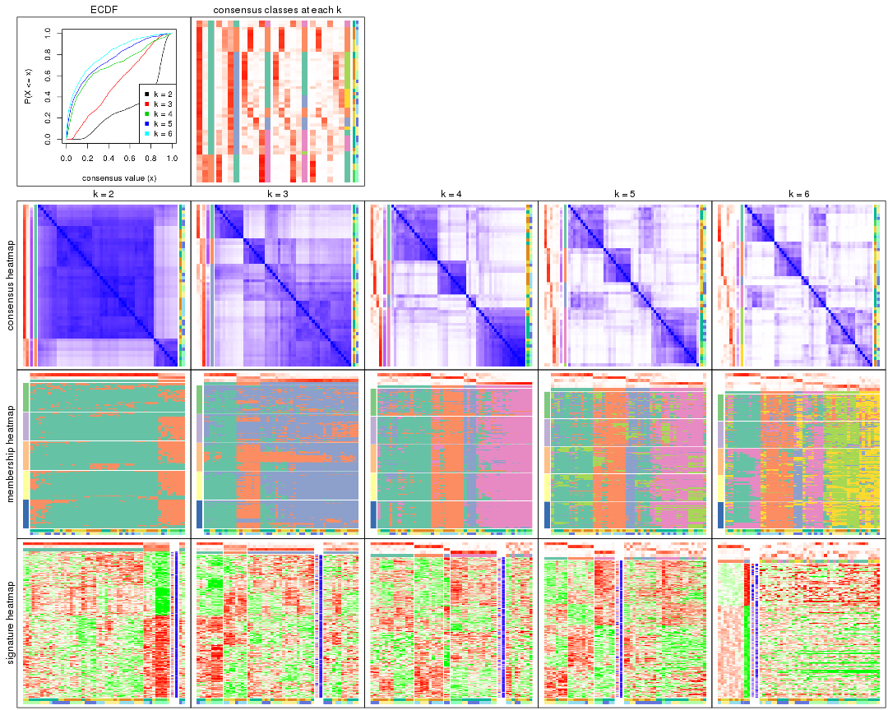
The plots are:
k and the heatmap of
predicted classes for each k.k.k.k.All the plots in panels can be made by individual functions and they are plotted later in this section.
select_partition_number() produces several plots showing different
statistics for choosing “optimized” k. There are following statistics:
k;k, the area increased is defined as \(A_k - A_{k-1}\).The detailed explanations of these statistics can be found in the cola vignette.
Generally speaking, lower PAC score, higher mean silhouette score or higher
concordance corresponds to better partition. Rand index and Jaccard index
measure how similar the current partition is compared to partition with k-1.
If they are too similar, we won't accept k is better than k-1.
select_partition_number(res)
The numeric values for all these statistics can be obtained by get_stats().
get_stats(res)
#> k 1-PAC mean_silhouette concordance area_increased Rand Jaccard
#> 2 2 0.2696 0.817 0.864 0.2959 0.708 0.708
#> 3 3 0.0927 0.587 0.723 0.8059 0.725 0.620
#> 4 4 0.4592 0.653 0.803 0.3147 0.661 0.378
#> 5 5 0.4847 0.401 0.685 0.0829 0.932 0.776
#> 6 6 0.5077 0.371 0.625 0.0635 0.897 0.606
suggest_best_k() suggests the best \(k\) based on these statistics. The rules are as follows:
NA.suggest_best_k(res)
#> [1] 4
Following shows the table of the partitions (You need to click the show/hide
code output link to see it). The membership matrix (columns with name p*)
is inferred by
clue::cl_consensus()
function with the SE method. Basically the value in the membership matrix
represents the probability to belong to a certain group. The finall class
label for an item is determined with the group with highest probability it
belongs to.
In get_classes() function, the entropy is calculated from the membership
matrix and the silhouette score is calculated from the consensus matrix.
cbind(get_classes(res, k = 2), get_membership(res, k = 2))
#> class entropy silhouette p1 p2
#> GSM270543 1 0.518 0.8088 0.884 0.116
#> GSM270544 1 0.529 0.8032 0.880 0.120
#> GSM270545 2 0.983 0.7439 0.424 0.576
#> GSM270546 1 0.861 0.3871 0.716 0.284
#> GSM270547 2 0.952 0.8104 0.372 0.628
#> GSM270548 1 0.946 0.0242 0.636 0.364
#> GSM270549 1 0.802 0.5504 0.756 0.244
#> GSM270550 2 0.833 0.8502 0.264 0.736
#> GSM270551 1 0.358 0.8824 0.932 0.068
#> GSM270552 1 0.802 0.5755 0.756 0.244
#> GSM270553 1 0.358 0.8732 0.932 0.068
#> GSM270554 1 0.689 0.7153 0.816 0.184
#> GSM270555 1 0.416 0.8733 0.916 0.084
#> GSM270556 1 0.373 0.8706 0.928 0.072
#> GSM270557 1 0.311 0.8864 0.944 0.056
#> GSM270558 1 0.518 0.8337 0.884 0.116
#> GSM270559 1 0.402 0.8687 0.920 0.080
#> GSM270560 1 0.295 0.8799 0.948 0.052
#> GSM270561 1 0.295 0.8801 0.948 0.052
#> GSM270562 1 0.224 0.8861 0.964 0.036
#> GSM270563 1 0.311 0.8765 0.944 0.056
#> GSM270564 1 0.358 0.8713 0.932 0.068
#> GSM270565 1 0.343 0.8721 0.936 0.064
#> GSM270566 1 0.260 0.8853 0.956 0.044
#> GSM270567 1 0.204 0.8867 0.968 0.032
#> GSM270568 1 0.388 0.8742 0.924 0.076
#> GSM270569 1 0.469 0.8521 0.900 0.100
#> GSM270570 1 0.388 0.8727 0.924 0.076
#> GSM270571 1 0.416 0.8584 0.916 0.084
#> GSM270572 1 0.456 0.8616 0.904 0.096
#> GSM270573 1 0.518 0.8443 0.884 0.116
#> GSM270574 1 0.518 0.8400 0.884 0.116
#> GSM270575 1 0.402 0.8786 0.920 0.080
#> GSM270576 1 0.373 0.8779 0.928 0.072
#> GSM270577 1 0.295 0.8870 0.948 0.052
#> GSM270578 1 0.358 0.8667 0.932 0.068
#> GSM270579 1 0.141 0.8819 0.980 0.020
#> GSM270580 1 0.373 0.8718 0.928 0.072
#> GSM270581 1 0.327 0.8782 0.940 0.060
#> GSM270582 1 0.242 0.8824 0.960 0.040
#> GSM270583 1 0.388 0.8750 0.924 0.076
#> GSM270584 1 0.260 0.8765 0.956 0.044
#> GSM270585 1 0.260 0.8809 0.956 0.044
#> GSM270586 1 0.260 0.8786 0.956 0.044
#> GSM270587 2 0.946 0.8245 0.364 0.636
#> GSM270588 1 0.278 0.8828 0.952 0.048
#> GSM270589 2 1.000 0.5539 0.496 0.504
#> GSM270590 1 0.311 0.8722 0.944 0.056
#> GSM270591 2 0.808 0.8403 0.248 0.752
#> GSM270592 2 0.814 0.8412 0.252 0.748
#> GSM270593 2 0.913 0.8563 0.328 0.672
#> GSM270594 2 0.876 0.8592 0.296 0.704
cbind(get_classes(res, k = 3), get_membership(res, k = 3))
#> class entropy silhouette p1 p2 p3
#> GSM270543 3 0.827 0.0864 0.376 0.084 0.540
#> GSM270544 3 0.751 0.2749 0.344 0.052 0.604
#> GSM270545 1 0.546 0.7676 0.776 0.020 0.204
#> GSM270546 1 0.753 0.4581 0.584 0.048 0.368
#> GSM270547 1 0.398 0.8076 0.852 0.004 0.144
#> GSM270548 1 0.755 0.4565 0.596 0.052 0.352
#> GSM270549 3 0.762 -0.0100 0.424 0.044 0.532
#> GSM270550 1 0.245 0.7944 0.924 0.000 0.076
#> GSM270551 3 0.417 0.6423 0.028 0.104 0.868
#> GSM270552 3 0.817 0.0726 0.416 0.072 0.512
#> GSM270553 3 0.483 0.6575 0.068 0.084 0.848
#> GSM270554 3 0.821 0.2999 0.344 0.088 0.568
#> GSM270555 3 0.456 0.6545 0.036 0.112 0.852
#> GSM270556 3 0.350 0.6599 0.020 0.084 0.896
#> GSM270557 3 0.300 0.6530 0.016 0.068 0.916
#> GSM270558 3 0.569 0.5818 0.020 0.224 0.756
#> GSM270559 3 0.304 0.6543 0.008 0.084 0.908
#> GSM270560 3 0.207 0.6490 0.000 0.060 0.940
#> GSM270561 2 0.828 0.6465 0.076 0.468 0.456
#> GSM270562 3 0.295 0.6169 0.004 0.088 0.908
#> GSM270563 2 0.710 0.8329 0.028 0.588 0.384
#> GSM270564 2 0.669 0.8313 0.016 0.612 0.372
#> GSM270565 2 0.690 0.7892 0.016 0.548 0.436
#> GSM270566 3 0.554 0.3315 0.012 0.236 0.752
#> GSM270567 3 0.566 0.6340 0.052 0.152 0.796
#> GSM270568 3 0.556 0.6094 0.028 0.192 0.780
#> GSM270569 3 0.362 0.6549 0.012 0.104 0.884
#> GSM270570 3 0.529 0.6359 0.028 0.172 0.800
#> GSM270571 3 0.759 0.4574 0.176 0.136 0.688
#> GSM270572 3 0.535 0.6162 0.028 0.176 0.796
#> GSM270573 3 0.552 0.6001 0.032 0.180 0.788
#> GSM270574 3 0.568 0.5850 0.024 0.212 0.764
#> GSM270575 3 0.479 0.6214 0.044 0.112 0.844
#> GSM270576 3 0.459 0.6136 0.032 0.120 0.848
#> GSM270577 3 0.462 0.6533 0.020 0.144 0.836
#> GSM270578 3 0.625 0.5371 0.108 0.116 0.776
#> GSM270579 3 0.517 0.4699 0.024 0.172 0.804
#> GSM270580 3 0.294 0.6411 0.012 0.072 0.916
#> GSM270581 2 0.766 0.8224 0.056 0.588 0.356
#> GSM270582 2 0.734 0.8426 0.036 0.572 0.392
#> GSM270583 3 0.420 0.6501 0.024 0.112 0.864
#> GSM270584 3 0.905 -0.4978 0.148 0.344 0.508
#> GSM270585 2 0.783 0.8208 0.056 0.540 0.404
#> GSM270586 2 0.907 0.6404 0.136 0.432 0.432
#> GSM270587 1 0.423 0.8143 0.836 0.004 0.160
#> GSM270588 3 0.716 0.5420 0.136 0.144 0.720
#> GSM270589 1 0.582 0.7380 0.752 0.024 0.224
#> GSM270590 3 0.806 0.3468 0.212 0.140 0.648
#> GSM270591 1 0.288 0.8093 0.904 0.000 0.096
#> GSM270592 1 0.280 0.8021 0.908 0.000 0.092
#> GSM270593 1 0.469 0.8165 0.820 0.012 0.168
#> GSM270594 1 0.368 0.8186 0.876 0.008 0.116
cbind(get_classes(res, k = 4), get_membership(res, k = 4))
#> class entropy silhouette p1 p2 p3 p4
#> GSM270543 4 0.6031 0.6939 0.048 0.160 0.060 0.732
#> GSM270544 4 0.4562 0.7653 0.028 0.036 0.116 0.820
#> GSM270545 4 0.1762 0.8100 0.012 0.016 0.020 0.952
#> GSM270546 4 0.3888 0.7882 0.016 0.052 0.072 0.860
#> GSM270547 4 0.0844 0.8081 0.004 0.004 0.012 0.980
#> GSM270548 4 0.4979 0.7470 0.016 0.108 0.080 0.796
#> GSM270549 4 0.4429 0.7744 0.060 0.020 0.088 0.832
#> GSM270550 4 0.0657 0.8045 0.000 0.004 0.012 0.984
#> GSM270551 3 0.7329 -0.1257 0.440 0.040 0.460 0.060
#> GSM270552 4 0.5737 0.6790 0.200 0.020 0.056 0.724
#> GSM270553 4 0.7012 0.0282 0.448 0.012 0.080 0.460
#> GSM270554 4 0.5872 0.6129 0.264 0.028 0.028 0.680
#> GSM270555 1 0.5383 0.6424 0.764 0.020 0.152 0.064
#> GSM270556 1 0.5218 0.6427 0.752 0.024 0.196 0.028
#> GSM270557 1 0.6623 0.6004 0.676 0.072 0.208 0.044
#> GSM270558 1 0.3686 0.7235 0.872 0.044 0.064 0.020
#> GSM270559 1 0.6261 0.5020 0.628 0.064 0.300 0.008
#> GSM270560 1 0.4982 0.6819 0.772 0.136 0.092 0.000
#> GSM270561 2 0.5146 0.7335 0.156 0.764 0.004 0.076
#> GSM270562 1 0.7475 0.1327 0.420 0.404 0.176 0.000
#> GSM270563 2 0.1724 0.8068 0.020 0.948 0.032 0.000
#> GSM270564 2 0.0921 0.8148 0.028 0.972 0.000 0.000
#> GSM270565 2 0.1854 0.8154 0.024 0.948 0.020 0.008
#> GSM270566 2 0.3961 0.6911 0.172 0.812 0.008 0.008
#> GSM270567 1 0.5889 0.5984 0.740 0.112 0.024 0.124
#> GSM270568 1 0.2074 0.7248 0.940 0.016 0.032 0.012
#> GSM270569 1 0.2928 0.7285 0.896 0.052 0.052 0.000
#> GSM270570 1 0.2864 0.7264 0.908 0.052 0.024 0.016
#> GSM270571 4 0.8038 0.4579 0.240 0.164 0.048 0.548
#> GSM270572 1 0.1749 0.7258 0.952 0.012 0.024 0.012
#> GSM270573 1 0.1256 0.7251 0.964 0.008 0.028 0.000
#> GSM270574 1 0.1229 0.7189 0.968 0.008 0.020 0.004
#> GSM270575 3 0.3363 0.6571 0.072 0.024 0.884 0.020
#> GSM270576 3 0.3931 0.6654 0.068 0.064 0.856 0.012
#> GSM270577 1 0.5847 0.6530 0.760 0.100 0.064 0.076
#> GSM270578 3 0.7533 0.4467 0.044 0.216 0.604 0.136
#> GSM270579 2 0.6722 0.4608 0.312 0.604 0.032 0.052
#> GSM270580 1 0.6580 0.4117 0.580 0.084 0.332 0.004
#> GSM270581 2 0.2089 0.8133 0.012 0.940 0.020 0.028
#> GSM270582 2 0.2400 0.8209 0.028 0.928 0.012 0.032
#> GSM270583 1 0.4682 0.6487 0.760 0.212 0.004 0.024
#> GSM270584 2 0.5277 0.6785 0.048 0.740 0.008 0.204
#> GSM270585 2 0.2319 0.8197 0.028 0.932 0.016 0.024
#> GSM270586 2 0.5230 0.7038 0.068 0.752 0.004 0.176
#> GSM270587 4 0.1394 0.8113 0.016 0.012 0.008 0.964
#> GSM270588 1 0.6210 0.3284 0.636 0.048 0.016 0.300
#> GSM270589 4 0.2456 0.8040 0.040 0.028 0.008 0.924
#> GSM270590 4 0.7610 0.4306 0.208 0.240 0.012 0.540
#> GSM270591 4 0.0804 0.8071 0.000 0.008 0.012 0.980
#> GSM270592 4 0.0712 0.8066 0.004 0.004 0.008 0.984
#> GSM270593 4 0.2107 0.8089 0.024 0.020 0.016 0.940
#> GSM270594 4 0.0564 0.8072 0.004 0.004 0.004 0.988
cbind(get_classes(res, k = 5), get_membership(res, k = 5))
#> class entropy silhouette p1 p2 p3 p4 p5
#> GSM270543 4 0.744 0.3428 0.032 0.148 0.072 0.580 0.168
#> GSM270544 4 0.625 0.4924 0.036 0.040 0.084 0.684 0.156
#> GSM270545 4 0.229 0.5820 0.000 0.008 0.012 0.908 0.072
#> GSM270546 4 0.510 0.5144 0.004 0.028 0.048 0.724 0.196
#> GSM270547 4 0.189 0.5819 0.000 0.000 0.008 0.920 0.072
#> GSM270548 4 0.586 0.4586 0.000 0.096 0.040 0.668 0.196
#> GSM270549 4 0.564 0.5124 0.060 0.032 0.072 0.744 0.092
#> GSM270550 4 0.355 0.4911 0.000 0.004 0.000 0.760 0.236
#> GSM270551 3 0.635 0.2805 0.252 0.012 0.620 0.040 0.076
#> GSM270552 4 0.720 0.1848 0.228 0.032 0.028 0.560 0.152
#> GSM270553 4 0.816 -0.1837 0.360 0.020 0.140 0.384 0.096
#> GSM270554 4 0.737 -0.0492 0.288 0.032 0.020 0.500 0.160
#> GSM270555 1 0.641 0.3117 0.560 0.000 0.304 0.032 0.104
#> GSM270556 1 0.576 0.1922 0.520 0.008 0.412 0.004 0.056
#> GSM270557 3 0.706 -0.1144 0.432 0.044 0.436 0.040 0.048
#> GSM270558 1 0.459 0.5225 0.724 0.008 0.228 0.000 0.040
#> GSM270559 3 0.529 0.0600 0.376 0.024 0.580 0.000 0.020
#> GSM270560 1 0.653 0.2087 0.528 0.096 0.344 0.004 0.028
#> GSM270561 2 0.595 0.5682 0.104 0.692 0.008 0.048 0.148
#> GSM270562 3 0.751 0.0950 0.280 0.308 0.380 0.004 0.028
#> GSM270563 2 0.235 0.7490 0.008 0.916 0.028 0.004 0.044
#> GSM270564 2 0.163 0.7482 0.004 0.948 0.020 0.004 0.024
#> GSM270565 2 0.216 0.7455 0.004 0.920 0.036 0.000 0.040
#> GSM270566 2 0.496 0.5245 0.168 0.740 0.064 0.000 0.028
#> GSM270567 1 0.678 0.4133 0.664 0.116 0.060 0.064 0.096
#> GSM270568 1 0.268 0.6356 0.904 0.020 0.036 0.004 0.036
#> GSM270569 1 0.392 0.6040 0.824 0.044 0.112 0.004 0.016
#> GSM270570 1 0.313 0.6319 0.888 0.036 0.032 0.024 0.020
#> GSM270571 4 0.890 -0.1694 0.176 0.152 0.080 0.448 0.144
#> GSM270572 1 0.301 0.6263 0.876 0.000 0.064 0.008 0.052
#> GSM270573 1 0.271 0.6176 0.880 0.000 0.088 0.000 0.032
#> GSM270574 1 0.122 0.6342 0.964 0.004 0.020 0.004 0.008
#> GSM270575 3 0.488 0.3896 0.036 0.004 0.704 0.012 0.244
#> GSM270576 3 0.482 0.3901 0.012 0.028 0.712 0.008 0.240
#> GSM270577 1 0.677 0.4552 0.628 0.084 0.204 0.048 0.036
#> GSM270578 3 0.832 0.1413 0.016 0.184 0.428 0.116 0.256
#> GSM270579 2 0.785 0.1547 0.264 0.516 0.088 0.052 0.080
#> GSM270580 3 0.569 0.0660 0.392 0.040 0.544 0.000 0.024
#> GSM270581 2 0.235 0.7464 0.000 0.912 0.016 0.016 0.056
#> GSM270582 2 0.216 0.7516 0.008 0.928 0.016 0.012 0.036
#> GSM270583 1 0.539 0.5088 0.708 0.192 0.072 0.008 0.020
#> GSM270584 2 0.593 0.4300 0.028 0.656 0.000 0.128 0.188
#> GSM270585 2 0.197 0.7466 0.016 0.932 0.000 0.016 0.036
#> GSM270586 2 0.541 0.5783 0.036 0.716 0.000 0.096 0.152
#> GSM270587 4 0.430 0.4630 0.004 0.016 0.004 0.724 0.252
#> GSM270588 1 0.756 -0.3328 0.528 0.072 0.024 0.116 0.260
#> GSM270589 4 0.507 0.3889 0.024 0.016 0.004 0.656 0.300
#> GSM270590 5 0.895 0.0000 0.264 0.212 0.016 0.232 0.276
#> GSM270591 4 0.330 0.5150 0.000 0.004 0.000 0.792 0.204
#> GSM270592 4 0.359 0.4995 0.004 0.000 0.004 0.772 0.220
#> GSM270593 4 0.316 0.5752 0.024 0.008 0.008 0.868 0.092
#> GSM270594 4 0.088 0.5808 0.000 0.000 0.000 0.968 0.032
cbind(get_classes(res, k = 6), get_membership(res, k = 6))
#> class entropy silhouette p1 p2 p3 p4 p5 p6
#> GSM270543 4 0.7239 0.4358 0.216 0.128 0.036 0.536 0.016 0.068
#> GSM270544 4 0.6822 0.4057 0.304 0.020 0.056 0.512 0.012 0.096
#> GSM270545 1 0.4208 -0.0903 0.536 0.004 0.008 0.452 0.000 0.000
#> GSM270546 4 0.5119 0.3602 0.332 0.016 0.036 0.604 0.004 0.008
#> GSM270547 1 0.3966 -0.0584 0.552 0.000 0.004 0.444 0.000 0.000
#> GSM270548 4 0.5942 0.3828 0.308 0.060 0.048 0.568 0.000 0.016
#> GSM270549 4 0.6582 0.1905 0.380 0.008 0.020 0.468 0.044 0.080
#> GSM270550 1 0.0713 0.4911 0.972 0.000 0.000 0.028 0.000 0.000
#> GSM270551 6 0.6896 0.1928 0.008 0.000 0.292 0.104 0.116 0.480
#> GSM270552 1 0.7406 -0.0242 0.424 0.020 0.008 0.324 0.144 0.080
#> GSM270553 4 0.8121 0.0383 0.180 0.004 0.020 0.324 0.224 0.248
#> GSM270554 1 0.7879 -0.0393 0.404 0.028 0.016 0.268 0.204 0.080
#> GSM270555 5 0.7062 -0.1064 0.012 0.000 0.080 0.140 0.388 0.380
#> GSM270556 6 0.5978 0.2443 0.008 0.000 0.056 0.072 0.296 0.568
#> GSM270557 6 0.6467 0.4442 0.000 0.036 0.052 0.144 0.168 0.600
#> GSM270558 5 0.5421 0.2190 0.000 0.008 0.024 0.060 0.592 0.316
#> GSM270559 6 0.5537 0.4575 0.000 0.008 0.096 0.044 0.192 0.660
#> GSM270560 6 0.5544 0.3451 0.004 0.072 0.020 0.012 0.272 0.620
#> GSM270561 2 0.7173 0.5961 0.064 0.608 0.056 0.116 0.092 0.064
#> GSM270562 6 0.6300 0.3729 0.004 0.196 0.060 0.016 0.116 0.608
#> GSM270563 2 0.3253 0.6860 0.004 0.856 0.040 0.056 0.000 0.044
#> GSM270564 2 0.1785 0.7137 0.000 0.936 0.012 0.016 0.008 0.028
#> GSM270565 2 0.3607 0.6841 0.000 0.828 0.036 0.040 0.004 0.092
#> GSM270566 2 0.5640 0.4179 0.000 0.604 0.008 0.024 0.096 0.268
#> GSM270567 5 0.7665 0.3169 0.104 0.096 0.004 0.104 0.508 0.184
#> GSM270568 5 0.3625 0.4831 0.004 0.016 0.004 0.032 0.816 0.128
#> GSM270569 5 0.4843 0.3269 0.004 0.024 0.024 0.004 0.644 0.300
#> GSM270570 5 0.4217 0.4799 0.012 0.032 0.008 0.032 0.792 0.124
#> GSM270571 4 0.8643 0.2892 0.132 0.120 0.044 0.444 0.116 0.144
#> GSM270572 5 0.3950 0.4586 0.004 0.000 0.020 0.064 0.796 0.116
#> GSM270573 5 0.3803 0.4286 0.000 0.004 0.020 0.028 0.788 0.160
#> GSM270574 5 0.1554 0.4980 0.000 0.004 0.004 0.008 0.940 0.044
#> GSM270575 3 0.3932 0.6420 0.000 0.000 0.760 0.024 0.024 0.192
#> GSM270576 3 0.3865 0.6546 0.000 0.016 0.748 0.020 0.000 0.216
#> GSM270577 5 0.7261 0.0285 0.016 0.060 0.016 0.132 0.416 0.360
#> GSM270578 3 0.7573 0.4903 0.108 0.128 0.520 0.124 0.000 0.120
#> GSM270579 2 0.7993 0.2189 0.036 0.420 0.024 0.084 0.164 0.272
#> GSM270580 6 0.5238 0.4994 0.008 0.016 0.152 0.000 0.148 0.676
#> GSM270581 2 0.3057 0.6887 0.008 0.864 0.052 0.064 0.000 0.012
#> GSM270582 2 0.3056 0.7048 0.016 0.876 0.028 0.024 0.004 0.052
#> GSM270583 5 0.6235 0.2394 0.004 0.160 0.008 0.016 0.524 0.288
#> GSM270584 2 0.6660 0.5621 0.188 0.608 0.052 0.096 0.020 0.036
#> GSM270585 2 0.3138 0.7063 0.012 0.876 0.028 0.044 0.016 0.024
#> GSM270586 2 0.6591 0.6145 0.120 0.640 0.064 0.112 0.028 0.036
#> GSM270587 1 0.1198 0.4818 0.960 0.004 0.012 0.020 0.000 0.004
#> GSM270588 5 0.8282 0.2391 0.260 0.068 0.032 0.128 0.424 0.088
#> GSM270589 1 0.3154 0.4319 0.868 0.020 0.024 0.068 0.012 0.008
#> GSM270590 1 0.8921 -0.0715 0.356 0.216 0.036 0.140 0.172 0.080
#> GSM270591 1 0.1701 0.4776 0.920 0.000 0.008 0.072 0.000 0.000
#> GSM270592 1 0.0777 0.4914 0.972 0.000 0.004 0.024 0.000 0.000
#> GSM270593 1 0.3543 0.3080 0.720 0.000 0.000 0.272 0.004 0.004
#> GSM270594 1 0.3390 0.2241 0.704 0.000 0.000 0.296 0.000 0.000
Heatmaps for the consensus matrix. It visualizes the probability of two samples to be in a same group.
consensus_heatmap(res, k = 2)
consensus_heatmap(res, k = 3)
consensus_heatmap(res, k = 4)
consensus_heatmap(res, k = 5)
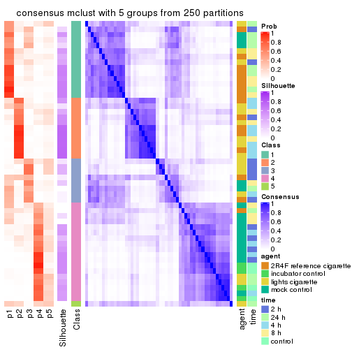
consensus_heatmap(res, k = 6)
Heatmaps for the membership of samples in all partitions to see how consistent they are:
membership_heatmap(res, k = 2)
membership_heatmap(res, k = 3)
membership_heatmap(res, k = 4)
membership_heatmap(res, k = 5)
membership_heatmap(res, k = 6)
As soon as we have had the classes for columns, we can look for signatures which are significantly different between classes which can be candidate marks for certain classes. Following are the heatmaps for signatures.
Signature heatmaps where rows are scaled:
get_signatures(res, k = 2)
get_signatures(res, k = 3)
get_signatures(res, k = 4)
get_signatures(res, k = 5)
get_signatures(res, k = 6)
Signature heatmaps where rows are not scaled:
get_signatures(res, k = 2, scale_rows = FALSE)
get_signatures(res, k = 3, scale_rows = FALSE)
get_signatures(res, k = 4, scale_rows = FALSE)
get_signatures(res, k = 5, scale_rows = FALSE)
get_signatures(res, k = 6, scale_rows = FALSE)
Compare the overlap of signatures from different k:
compare_signatures(res)
get_signature() returns a data frame invisibly. TO get the list of signatures, the function
call should be assigned to a variable explicitly. In following code, if plot argument is set
to FALSE, no heatmap is plotted while only the differential analysis is performed.
# code only for demonstration
tb = get_signature(res, k = ..., plot = FALSE)
An example of the output of tb is:
#> which_row fdr mean_1 mean_2 scaled_mean_1 scaled_mean_2 km
#> 1 38 0.042760348 8.373488 9.131774 -0.5533452 0.5164555 1
#> 2 40 0.018707592 7.106213 8.469186 -0.6173731 0.5762149 1
#> 3 55 0.019134737 10.221463 11.207825 -0.6159697 0.5749050 1
#> 4 59 0.006059896 5.921854 7.869574 -0.6899429 0.6439467 1
#> 5 60 0.018055526 8.928898 10.211722 -0.6204761 0.5791110 1
#> 6 98 0.009384629 15.714769 14.887706 0.6635654 -0.6193277 2
...
The columns in tb are:
which_row: row indices corresponding to the input matrix.fdr: FDR for the differential test. mean_x: The mean value in group x.scaled_mean_x: The mean value in group x after rows are scaled.km: Row groups if k-means clustering is applied to rows.UMAP plot which shows how samples are separated.
dimension_reduction(res, k = 2, method = "UMAP")
dimension_reduction(res, k = 3, method = "UMAP")
dimension_reduction(res, k = 4, method = "UMAP")
dimension_reduction(res, k = 5, method = "UMAP")
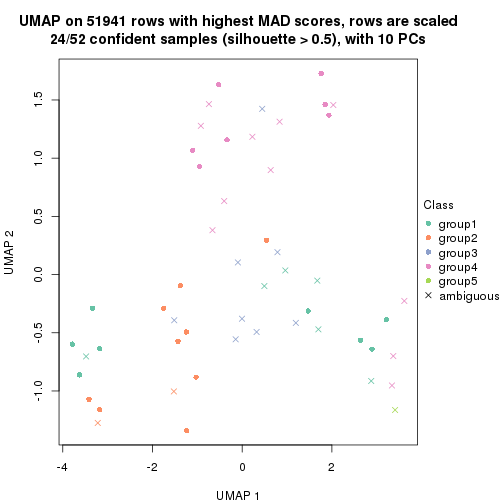
dimension_reduction(res, k = 6, method = "UMAP")
Following heatmap shows how subgroups are split when increasing k:
collect_classes(res)
Test correlation between subgroups and known annotations. If the known annotation is numeric, one-way ANOVA test is applied, and if the known annotation is discrete, chi-squared contingency table test is applied.
test_to_known_factors(res)
#> n agent(p) time(p) k
#> MAD:mclust 50 6.00e-05 0.000256 2
#> MAD:mclust 40 1.56e-03 0.000143 3
#> MAD:mclust 43 8.59e-05 0.001220 4
#> MAD:mclust 24 8.41e-04 0.000643 5
#> MAD:mclust 11 7.12e-01 0.038417 6
If matrix rows can be associated to genes, consider to use GO_Enrichment(res,
...) to perform function enrichment for the signature genes.
The object with results only for a single top-value method and a single partition method can be extracted as:
res = res_list["MAD", "NMF"]
# you can also extract it by
# res = res_list["MAD:NMF"]
A summary of res and all the functions that can be applied to it:
res
#> A 'ConsensusPartition' object with k = 2, 3, 4, 5, 6.
#> On a matrix with 51941 rows and 52 columns.
#> Top rows (1000, 2000, 3000, 4000, 5000) are extracted by 'MAD' method.
#> Subgroups are detected by 'NMF' method.
#> Performed in total 1250 partitions by row resampling.
#> Best k for subgroups seems to be 2.
#>
#> Following methods can be applied to this 'ConsensusPartition' object:
#> [1] "cola_report" "collect_classes" "collect_plots"
#> [4] "collect_stats" "colnames" "compare_signatures"
#> [7] "consensus_heatmap" "dimension_reduction" "functional_enrichment"
#> [10] "get_anno_col" "get_anno" "get_classes"
#> [13] "get_consensus" "get_matrix" "get_membership"
#> [16] "get_param" "get_signatures" "get_stats"
#> [19] "is_best_k" "is_stable_k" "membership_heatmap"
#> [22] "ncol" "nrow" "plot_ecdf"
#> [25] "rownames" "select_partition_number" "show"
#> [28] "suggest_best_k" "test_to_known_factors"
collect_plots() function collects all the plots made from res for all k (number of partitions)
into one single page to provide an easy and fast comparison between different k.
collect_plots(res)
The plots are:
k and the heatmap of
predicted classes for each k.k.k.k.All the plots in panels can be made by individual functions and they are plotted later in this section.
select_partition_number() produces several plots showing different
statistics for choosing “optimized” k. There are following statistics:
k;k, the area increased is defined as \(A_k - A_{k-1}\).The detailed explanations of these statistics can be found in the cola vignette.
Generally speaking, lower PAC score, higher mean silhouette score or higher
concordance corresponds to better partition. Rand index and Jaccard index
measure how similar the current partition is compared to partition with k-1.
If they are too similar, we won't accept k is better than k-1.
select_partition_number(res)
The numeric values for all these statistics can be obtained by get_stats().
get_stats(res)
#> k 1-PAC mean_silhouette concordance area_increased Rand Jaccard
#> 2 2 0.196 0.742 0.840 0.4888 0.497 0.497
#> 3 3 0.197 0.549 0.717 0.3315 0.830 0.665
#> 4 4 0.301 0.407 0.636 0.1344 0.905 0.742
#> 5 5 0.381 0.370 0.578 0.0684 0.964 0.884
#> 6 6 0.420 0.264 0.504 0.0427 0.870 0.586
suggest_best_k() suggests the best \(k\) based on these statistics. The rules are as follows:
NA.suggest_best_k(res)
#> [1] 2
Following shows the table of the partitions (You need to click the show/hide
code output link to see it). The membership matrix (columns with name p*)
is inferred by
clue::cl_consensus()
function with the SE method. Basically the value in the membership matrix
represents the probability to belong to a certain group. The finall class
label for an item is determined with the group with highest probability it
belongs to.
In get_classes() function, the entropy is calculated from the membership
matrix and the silhouette score is calculated from the consensus matrix.
cbind(get_classes(res, k = 2), get_membership(res, k = 2))
#> class entropy silhouette p1 p2
#> GSM270543 1 0.518 0.8067 0.884 0.116
#> GSM270544 1 0.653 0.7857 0.832 0.168
#> GSM270545 1 0.260 0.8083 0.956 0.044
#> GSM270546 1 0.373 0.8121 0.928 0.072
#> GSM270547 1 0.311 0.8094 0.944 0.056
#> GSM270548 1 0.242 0.8042 0.960 0.040
#> GSM270549 1 0.788 0.7193 0.764 0.236
#> GSM270550 1 0.358 0.8102 0.932 0.068
#> GSM270551 2 0.706 0.7972 0.192 0.808
#> GSM270552 1 0.980 0.4442 0.584 0.416
#> GSM270553 2 0.745 0.7916 0.212 0.788
#> GSM270554 1 0.971 0.5082 0.600 0.400
#> GSM270555 2 0.482 0.8583 0.104 0.896
#> GSM270556 2 0.373 0.8747 0.072 0.928
#> GSM270557 2 0.388 0.8767 0.076 0.924
#> GSM270558 2 0.295 0.8719 0.052 0.948
#> GSM270559 2 0.260 0.8675 0.044 0.956
#> GSM270560 2 0.184 0.8688 0.028 0.972
#> GSM270561 1 0.808 0.7246 0.752 0.248
#> GSM270562 2 0.416 0.8680 0.084 0.916
#> GSM270563 1 0.971 0.3981 0.600 0.400
#> GSM270564 1 1.000 0.0621 0.512 0.488
#> GSM270565 2 0.886 0.6458 0.304 0.696
#> GSM270566 2 0.876 0.6717 0.296 0.704
#> GSM270567 2 0.891 0.5613 0.308 0.692
#> GSM270568 2 0.494 0.8716 0.108 0.892
#> GSM270569 2 0.311 0.8726 0.056 0.944
#> GSM270570 2 0.644 0.8270 0.164 0.836
#> GSM270571 1 0.821 0.7238 0.744 0.256
#> GSM270572 2 0.529 0.8657 0.120 0.880
#> GSM270573 2 0.358 0.8691 0.068 0.932
#> GSM270574 2 0.278 0.8684 0.048 0.952
#> GSM270575 2 0.552 0.8557 0.128 0.872
#> GSM270576 2 0.745 0.7676 0.212 0.788
#> GSM270577 2 0.634 0.8336 0.160 0.840
#> GSM270578 1 0.985 0.2072 0.572 0.428
#> GSM270579 1 0.978 0.4266 0.588 0.412
#> GSM270580 2 0.141 0.8645 0.020 0.980
#> GSM270581 1 0.358 0.7995 0.932 0.068
#> GSM270582 1 0.876 0.6327 0.704 0.296
#> GSM270583 2 0.584 0.8466 0.140 0.860
#> GSM270584 1 0.163 0.8003 0.976 0.024
#> GSM270585 1 0.595 0.7821 0.856 0.144
#> GSM270586 1 0.278 0.8037 0.952 0.048
#> GSM270587 1 0.184 0.8056 0.972 0.028
#> GSM270588 1 0.983 0.3987 0.576 0.424
#> GSM270589 1 0.260 0.8104 0.956 0.044
#> GSM270590 1 0.653 0.7778 0.832 0.168
#> GSM270591 1 0.163 0.8057 0.976 0.024
#> GSM270592 1 0.242 0.8078 0.960 0.040
#> GSM270593 1 0.494 0.7947 0.892 0.108
#> GSM270594 1 0.327 0.8100 0.940 0.060
cbind(get_classes(res, k = 3), get_membership(res, k = 3))
#> class entropy silhouette p1 p2 p3
#> GSM270543 1 0.719 0.4571 0.656 0.292 0.052
#> GSM270544 1 0.681 0.5728 0.740 0.156 0.104
#> GSM270545 1 0.313 0.6876 0.904 0.088 0.008
#> GSM270546 1 0.460 0.6532 0.832 0.152 0.016
#> GSM270547 1 0.288 0.6847 0.904 0.096 0.000
#> GSM270548 1 0.550 0.5730 0.744 0.248 0.008
#> GSM270549 1 0.673 0.5719 0.740 0.088 0.172
#> GSM270550 1 0.353 0.6922 0.892 0.092 0.016
#> GSM270551 3 0.704 0.6618 0.140 0.132 0.728
#> GSM270552 1 0.820 0.4425 0.616 0.116 0.268
#> GSM270553 3 0.858 0.5396 0.240 0.160 0.600
#> GSM270554 1 0.846 0.3994 0.588 0.124 0.288
#> GSM270555 3 0.597 0.6968 0.148 0.068 0.784
#> GSM270556 3 0.509 0.7384 0.056 0.112 0.832
#> GSM270557 3 0.599 0.7006 0.036 0.208 0.756
#> GSM270558 3 0.270 0.7344 0.016 0.056 0.928
#> GSM270559 3 0.391 0.7338 0.020 0.104 0.876
#> GSM270560 3 0.435 0.7110 0.004 0.168 0.828
#> GSM270561 2 0.884 0.1964 0.432 0.452 0.116
#> GSM270562 3 0.573 0.5842 0.000 0.324 0.676
#> GSM270563 2 0.752 0.6174 0.180 0.692 0.128
#> GSM270564 2 0.767 0.6213 0.152 0.684 0.164
#> GSM270565 2 0.696 0.3385 0.036 0.648 0.316
#> GSM270566 2 0.685 0.1392 0.020 0.600 0.380
#> GSM270567 3 0.890 0.2847 0.156 0.292 0.552
#> GSM270568 3 0.655 0.7104 0.096 0.148 0.756
#> GSM270569 3 0.495 0.7075 0.016 0.176 0.808
#> GSM270570 3 0.778 0.6260 0.156 0.168 0.676
#> GSM270571 1 0.864 0.3128 0.564 0.308 0.128
#> GSM270572 3 0.777 0.6185 0.176 0.148 0.676
#> GSM270573 3 0.550 0.7174 0.084 0.100 0.816
#> GSM270574 3 0.434 0.7172 0.016 0.136 0.848
#> GSM270575 3 0.832 0.5989 0.148 0.228 0.624
#> GSM270576 3 0.877 0.2722 0.112 0.412 0.476
#> GSM270577 3 0.703 0.6943 0.104 0.172 0.724
#> GSM270578 2 0.899 0.4087 0.248 0.560 0.192
#> GSM270579 2 0.957 0.4661 0.312 0.468 0.220
#> GSM270580 3 0.400 0.7126 0.000 0.160 0.840
#> GSM270581 2 0.623 0.3580 0.372 0.624 0.004
#> GSM270582 2 0.807 0.5344 0.284 0.616 0.100
#> GSM270583 3 0.654 0.5939 0.028 0.288 0.684
#> GSM270584 1 0.643 0.2915 0.612 0.380 0.008
#> GSM270585 2 0.746 0.4078 0.352 0.600 0.048
#> GSM270586 1 0.679 0.0777 0.540 0.448 0.012
#> GSM270587 1 0.277 0.6900 0.920 0.072 0.008
#> GSM270588 1 0.955 0.0927 0.456 0.204 0.340
#> GSM270589 1 0.383 0.6786 0.880 0.100 0.020
#> GSM270590 1 0.740 0.4487 0.644 0.296 0.060
#> GSM270591 1 0.216 0.6912 0.936 0.064 0.000
#> GSM270592 1 0.290 0.6900 0.920 0.064 0.016
#> GSM270593 1 0.325 0.6804 0.912 0.036 0.052
#> GSM270594 1 0.203 0.6923 0.952 0.032 0.016
cbind(get_classes(res, k = 4), get_membership(res, k = 4))
#> class entropy silhouette p1 p2 p3 p4
#> GSM270543 4 0.799 0.3308 0.036 0.232 0.192 0.540
#> GSM270544 4 0.809 0.2053 0.080 0.088 0.316 0.516
#> GSM270545 4 0.412 0.6106 0.004 0.048 0.116 0.832
#> GSM270546 4 0.581 0.5410 0.008 0.096 0.176 0.720
#> GSM270547 4 0.467 0.5995 0.004 0.052 0.152 0.792
#> GSM270548 4 0.650 0.4659 0.000 0.160 0.200 0.640
#> GSM270549 4 0.673 0.4684 0.196 0.012 0.144 0.648
#> GSM270550 4 0.434 0.6307 0.012 0.064 0.092 0.832
#> GSM270551 1 0.753 0.2945 0.560 0.044 0.304 0.092
#> GSM270552 4 0.882 0.2536 0.272 0.068 0.208 0.452
#> GSM270553 1 0.776 0.3401 0.580 0.040 0.180 0.200
#> GSM270554 4 0.834 0.2751 0.296 0.048 0.168 0.488
#> GSM270555 1 0.619 0.4618 0.692 0.008 0.176 0.124
#> GSM270556 1 0.555 0.5103 0.728 0.048 0.208 0.016
#> GSM270557 1 0.735 0.3038 0.564 0.124 0.292 0.020
#> GSM270558 1 0.355 0.5682 0.868 0.020 0.096 0.016
#> GSM270559 1 0.580 0.4782 0.708 0.064 0.216 0.012
#> GSM270560 1 0.613 0.4884 0.692 0.152 0.152 0.004
#> GSM270561 2 0.821 0.4321 0.088 0.556 0.124 0.232
#> GSM270562 1 0.761 0.0922 0.460 0.320 0.220 0.000
#> GSM270563 2 0.509 0.5019 0.056 0.804 0.084 0.056
#> GSM270564 2 0.338 0.5296 0.052 0.888 0.036 0.024
#> GSM270565 2 0.621 0.3525 0.132 0.692 0.168 0.008
#> GSM270566 2 0.687 0.2353 0.216 0.636 0.132 0.016
#> GSM270567 1 0.874 0.3220 0.492 0.240 0.184 0.084
#> GSM270568 1 0.727 0.4827 0.624 0.068 0.236 0.072
#> GSM270569 1 0.623 0.5176 0.668 0.184 0.148 0.000
#> GSM270570 1 0.864 0.4278 0.528 0.160 0.200 0.112
#> GSM270571 3 0.940 -0.0204 0.108 0.212 0.348 0.332
#> GSM270572 1 0.737 0.4418 0.620 0.040 0.200 0.140
#> GSM270573 1 0.603 0.5327 0.720 0.020 0.164 0.096
#> GSM270574 1 0.522 0.5636 0.776 0.072 0.136 0.016
#> GSM270575 3 0.859 0.0520 0.352 0.084 0.444 0.120
#> GSM270576 3 0.884 0.2630 0.272 0.288 0.392 0.048
#> GSM270577 1 0.749 0.5024 0.628 0.136 0.176 0.060
#> GSM270578 3 0.906 0.2428 0.100 0.320 0.416 0.164
#> GSM270579 2 0.888 0.2583 0.144 0.508 0.188 0.160
#> GSM270580 1 0.555 0.4856 0.728 0.112 0.160 0.000
#> GSM270581 2 0.473 0.5265 0.000 0.780 0.060 0.160
#> GSM270582 2 0.559 0.5364 0.028 0.764 0.116 0.092
#> GSM270583 1 0.773 0.2840 0.472 0.372 0.136 0.020
#> GSM270584 2 0.677 0.2308 0.000 0.496 0.096 0.408
#> GSM270585 2 0.585 0.5334 0.020 0.732 0.084 0.164
#> GSM270586 2 0.727 0.2743 0.004 0.484 0.132 0.380
#> GSM270587 4 0.349 0.6283 0.008 0.048 0.068 0.876
#> GSM270588 4 0.957 -0.0371 0.300 0.120 0.244 0.336
#> GSM270589 4 0.516 0.5956 0.020 0.068 0.128 0.784
#> GSM270590 4 0.906 0.0289 0.088 0.300 0.192 0.420
#> GSM270591 4 0.294 0.6351 0.004 0.052 0.044 0.900
#> GSM270592 4 0.318 0.6330 0.024 0.016 0.068 0.892
#> GSM270593 4 0.359 0.6307 0.040 0.008 0.084 0.868
#> GSM270594 4 0.297 0.6389 0.020 0.008 0.076 0.896
cbind(get_classes(res, k = 5), get_membership(res, k = 5))
#> class entropy silhouette p1 p2 p3 p4 p5
#> GSM270543 4 0.801 0.21695 0.020 0.112 0.320 0.440 0.108
#> GSM270544 4 0.800 0.23734 0.040 0.036 0.248 0.452 0.224
#> GSM270545 4 0.451 0.58278 0.004 0.016 0.104 0.788 0.088
#> GSM270546 4 0.600 0.46742 0.008 0.036 0.272 0.628 0.056
#> GSM270547 4 0.467 0.56257 0.000 0.036 0.148 0.768 0.048
#> GSM270548 4 0.685 0.41829 0.000 0.112 0.260 0.560 0.068
#> GSM270549 4 0.740 0.42748 0.112 0.004 0.140 0.548 0.196
#> GSM270550 4 0.417 0.59751 0.020 0.060 0.056 0.832 0.032
#> GSM270551 1 0.806 0.07516 0.432 0.032 0.312 0.056 0.168
#> GSM270552 4 0.949 0.00528 0.272 0.088 0.128 0.276 0.236
#> GSM270553 1 0.878 0.05100 0.356 0.016 0.216 0.180 0.232
#> GSM270554 4 0.884 0.11855 0.284 0.076 0.060 0.360 0.220
#> GSM270555 1 0.732 0.30103 0.536 0.004 0.124 0.092 0.244
#> GSM270556 1 0.631 0.40223 0.668 0.040 0.156 0.020 0.116
#> GSM270557 1 0.694 0.12988 0.492 0.052 0.376 0.020 0.060
#> GSM270558 1 0.369 0.46749 0.836 0.004 0.040 0.012 0.108
#> GSM270559 1 0.686 0.27538 0.588 0.060 0.232 0.008 0.112
#> GSM270560 1 0.661 0.35522 0.608 0.144 0.188 0.000 0.060
#> GSM270561 2 0.698 0.50863 0.036 0.580 0.016 0.172 0.196
#> GSM270562 1 0.805 0.05857 0.384 0.276 0.240 0.000 0.100
#> GSM270563 2 0.444 0.50592 0.020 0.784 0.156 0.016 0.024
#> GSM270564 2 0.457 0.53628 0.052 0.808 0.072 0.016 0.052
#> GSM270565 2 0.573 0.42573 0.044 0.704 0.164 0.008 0.080
#> GSM270566 2 0.750 0.25637 0.204 0.552 0.140 0.016 0.088
#> GSM270567 1 0.891 0.30373 0.432 0.200 0.132 0.068 0.168
#> GSM270568 1 0.760 0.39638 0.504 0.096 0.044 0.052 0.304
#> GSM270569 1 0.695 0.43220 0.576 0.168 0.072 0.000 0.184
#> GSM270570 1 0.837 0.40164 0.468 0.116 0.068 0.084 0.264
#> GSM270571 4 0.944 -0.12347 0.064 0.164 0.248 0.264 0.260
#> GSM270572 1 0.738 0.39587 0.504 0.044 0.036 0.092 0.324
#> GSM270573 1 0.648 0.43959 0.596 0.020 0.056 0.044 0.284
#> GSM270574 1 0.543 0.47758 0.664 0.072 0.016 0.000 0.248
#> GSM270575 3 0.814 0.35134 0.168 0.040 0.520 0.124 0.148
#> GSM270576 3 0.618 0.49131 0.136 0.100 0.692 0.040 0.032
#> GSM270577 1 0.845 0.34844 0.472 0.116 0.140 0.048 0.224
#> GSM270578 3 0.739 0.43216 0.044 0.220 0.576 0.096 0.064
#> GSM270579 2 0.938 0.21262 0.112 0.368 0.132 0.156 0.232
#> GSM270580 1 0.683 0.30938 0.560 0.088 0.268 0.000 0.084
#> GSM270581 2 0.381 0.54676 0.004 0.840 0.052 0.080 0.024
#> GSM270582 2 0.601 0.52054 0.048 0.716 0.120 0.048 0.068
#> GSM270583 1 0.762 0.29460 0.456 0.348 0.068 0.020 0.108
#> GSM270584 2 0.560 0.45346 0.000 0.608 0.012 0.312 0.068
#> GSM270585 2 0.548 0.55249 0.040 0.748 0.032 0.116 0.064
#> GSM270586 2 0.706 0.39438 0.004 0.484 0.024 0.304 0.184
#> GSM270587 4 0.432 0.58105 0.004 0.048 0.024 0.800 0.124
#> GSM270588 4 0.892 -0.07243 0.256 0.112 0.036 0.300 0.296
#> GSM270589 4 0.533 0.53320 0.008 0.084 0.032 0.736 0.140
#> GSM270590 2 0.839 0.20759 0.084 0.368 0.024 0.328 0.196
#> GSM270591 4 0.328 0.60139 0.000 0.032 0.036 0.868 0.064
#> GSM270592 4 0.302 0.59743 0.004 0.024 0.016 0.880 0.076
#> GSM270593 4 0.408 0.58703 0.040 0.000 0.048 0.820 0.092
#> GSM270594 4 0.334 0.60143 0.012 0.008 0.056 0.868 0.056
cbind(get_classes(res, k = 6), get_membership(res, k = 6))
#> class entropy silhouette p1 p2 p3 p4 p5 p6
#> GSM270543 4 0.736 0.1902 0.028 0.112 0.044 0.452 0.032 0.332
#> GSM270544 4 0.814 0.1821 0.128 0.048 0.084 0.468 0.052 0.220
#> GSM270545 4 0.304 0.5460 0.020 0.028 0.008 0.864 0.000 0.080
#> GSM270546 4 0.612 0.4625 0.044 0.044 0.072 0.636 0.004 0.200
#> GSM270547 4 0.483 0.5253 0.056 0.032 0.024 0.752 0.004 0.132
#> GSM270548 4 0.654 0.4015 0.048 0.092 0.036 0.572 0.004 0.248
#> GSM270549 4 0.695 0.3005 0.124 0.004 0.128 0.592 0.084 0.068
#> GSM270550 4 0.526 0.4757 0.144 0.036 0.024 0.728 0.020 0.048
#> GSM270551 3 0.868 0.1601 0.120 0.032 0.356 0.068 0.272 0.152
#> GSM270552 1 0.936 0.2155 0.260 0.060 0.244 0.216 0.128 0.092
#> GSM270553 3 0.727 0.2592 0.124 0.008 0.548 0.172 0.104 0.044
#> GSM270554 1 0.904 0.3432 0.308 0.048 0.160 0.276 0.132 0.076
#> GSM270555 3 0.656 0.2691 0.096 0.000 0.544 0.052 0.276 0.032
#> GSM270556 5 0.758 -0.0163 0.068 0.012 0.240 0.012 0.380 0.288
#> GSM270557 6 0.842 -0.1316 0.052 0.052 0.272 0.040 0.288 0.296
#> GSM270558 5 0.633 0.1410 0.076 0.004 0.216 0.004 0.584 0.116
#> GSM270559 3 0.646 0.1221 0.016 0.004 0.480 0.012 0.320 0.168
#> GSM270560 5 0.766 0.1636 0.044 0.088 0.220 0.000 0.440 0.208
#> GSM270561 2 0.746 0.2746 0.284 0.464 0.020 0.092 0.124 0.016
#> GSM270562 5 0.830 0.0130 0.044 0.200 0.188 0.000 0.308 0.260
#> GSM270563 2 0.447 0.4981 0.044 0.784 0.048 0.012 0.008 0.104
#> GSM270564 2 0.577 0.4954 0.060 0.708 0.052 0.012 0.068 0.100
#> GSM270565 2 0.604 0.4295 0.096 0.632 0.056 0.000 0.024 0.192
#> GSM270566 2 0.764 0.1732 0.052 0.468 0.056 0.012 0.172 0.240
#> GSM270567 5 0.837 0.2723 0.172 0.124 0.072 0.040 0.464 0.128
#> GSM270568 5 0.802 0.2309 0.124 0.056 0.112 0.044 0.508 0.156
#> GSM270569 5 0.709 0.3047 0.120 0.120 0.068 0.004 0.580 0.108
#> GSM270570 5 0.766 0.2862 0.192 0.076 0.056 0.072 0.540 0.064
#> GSM270571 6 0.917 0.0975 0.260 0.096 0.060 0.224 0.084 0.276
#> GSM270572 5 0.755 0.1095 0.284 0.012 0.156 0.080 0.444 0.024
#> GSM270573 5 0.596 0.2666 0.092 0.008 0.100 0.048 0.688 0.064
#> GSM270574 5 0.408 0.3355 0.060 0.056 0.064 0.000 0.808 0.012
#> GSM270575 3 0.681 0.1140 0.080 0.048 0.640 0.088 0.052 0.092
#> GSM270576 6 0.830 0.1567 0.040 0.148 0.312 0.056 0.068 0.376
#> GSM270577 5 0.911 0.1363 0.212 0.112 0.212 0.060 0.328 0.076
#> GSM270578 6 0.787 0.1863 0.016 0.128 0.300 0.128 0.024 0.404
#> GSM270579 2 0.891 0.0850 0.188 0.280 0.008 0.104 0.180 0.240
#> GSM270580 5 0.727 0.0138 0.048 0.048 0.324 0.000 0.432 0.148
#> GSM270581 2 0.431 0.5188 0.052 0.800 0.016 0.064 0.004 0.064
#> GSM270582 2 0.636 0.4940 0.088 0.672 0.064 0.032 0.052 0.092
#> GSM270583 5 0.818 0.2407 0.084 0.244 0.076 0.012 0.416 0.168
#> GSM270584 2 0.632 0.2582 0.204 0.564 0.004 0.188 0.032 0.008
#> GSM270585 2 0.535 0.4521 0.164 0.708 0.008 0.056 0.024 0.040
#> GSM270586 2 0.720 0.2474 0.268 0.472 0.012 0.184 0.040 0.024
#> GSM270587 4 0.540 0.3749 0.236 0.060 0.008 0.660 0.020 0.016
#> GSM270588 5 0.757 0.0313 0.328 0.036 0.024 0.188 0.396 0.028
#> GSM270589 4 0.649 0.1569 0.348 0.080 0.036 0.504 0.024 0.008
#> GSM270590 1 0.782 -0.0455 0.360 0.316 0.036 0.212 0.068 0.008
#> GSM270591 4 0.418 0.5014 0.124 0.036 0.040 0.788 0.000 0.012
#> GSM270592 4 0.470 0.4553 0.192 0.016 0.028 0.732 0.012 0.020
#> GSM270593 4 0.565 0.4414 0.136 0.012 0.084 0.696 0.016 0.056
#> GSM270594 4 0.472 0.4877 0.164 0.012 0.044 0.744 0.008 0.028
Heatmaps for the consensus matrix. It visualizes the probability of two samples to be in a same group.
consensus_heatmap(res, k = 2)
consensus_heatmap(res, k = 3)
consensus_heatmap(res, k = 4)
consensus_heatmap(res, k = 5)
consensus_heatmap(res, k = 6)
Heatmaps for the membership of samples in all partitions to see how consistent they are:
membership_heatmap(res, k = 2)
membership_heatmap(res, k = 3)

membership_heatmap(res, k = 4)
membership_heatmap(res, k = 5)
membership_heatmap(res, k = 6)
As soon as we have had the classes for columns, we can look for signatures which are significantly different between classes which can be candidate marks for certain classes. Following are the heatmaps for signatures.
Signature heatmaps where rows are scaled:
get_signatures(res, k = 2)
get_signatures(res, k = 3)
get_signatures(res, k = 4)
get_signatures(res, k = 5)
get_signatures(res, k = 6)

Signature heatmaps where rows are not scaled:
get_signatures(res, k = 2, scale_rows = FALSE)
get_signatures(res, k = 3, scale_rows = FALSE)
get_signatures(res, k = 4, scale_rows = FALSE)
get_signatures(res, k = 5, scale_rows = FALSE)
get_signatures(res, k = 6, scale_rows = FALSE)

Compare the overlap of signatures from different k:
compare_signatures(res)
get_signature() returns a data frame invisibly. TO get the list of signatures, the function
call should be assigned to a variable explicitly. In following code, if plot argument is set
to FALSE, no heatmap is plotted while only the differential analysis is performed.
# code only for demonstration
tb = get_signature(res, k = ..., plot = FALSE)
An example of the output of tb is:
#> which_row fdr mean_1 mean_2 scaled_mean_1 scaled_mean_2 km
#> 1 38 0.042760348 8.373488 9.131774 -0.5533452 0.5164555 1
#> 2 40 0.018707592 7.106213 8.469186 -0.6173731 0.5762149 1
#> 3 55 0.019134737 10.221463 11.207825 -0.6159697 0.5749050 1
#> 4 59 0.006059896 5.921854 7.869574 -0.6899429 0.6439467 1
#> 5 60 0.018055526 8.928898 10.211722 -0.6204761 0.5791110 1
#> 6 98 0.009384629 15.714769 14.887706 0.6635654 -0.6193277 2
...
The columns in tb are:
which_row: row indices corresponding to the input matrix.fdr: FDR for the differential test. mean_x: The mean value in group x.scaled_mean_x: The mean value in group x after rows are scaled.km: Row groups if k-means clustering is applied to rows.UMAP plot which shows how samples are separated.
dimension_reduction(res, k = 2, method = "UMAP")
dimension_reduction(res, k = 3, method = "UMAP")
dimension_reduction(res, k = 4, method = "UMAP")
dimension_reduction(res, k = 5, method = "UMAP")
dimension_reduction(res, k = 6, method = "UMAP")
Following heatmap shows how subgroups are split when increasing k:
collect_classes(res)
Test correlation between subgroups and known annotations. If the known annotation is numeric, one-way ANOVA test is applied, and if the known annotation is discrete, chi-squared contingency table test is applied.
test_to_known_factors(res)
#> n agent(p) time(p) k
#> MAD:NMF 46 0.00603 0.15102 2
#> MAD:NMF 35 0.01252 0.00124 3
#> MAD:NMF 21 0.03885 0.01746 4
#> MAD:NMF 15 0.01857 0.11799 5
#> MAD:NMF 4 0.13534 0.51342 6
If matrix rows can be associated to genes, consider to use GO_Enrichment(res,
...) to perform function enrichment for the signature genes.
The object with results only for a single top-value method and a single partition method can be extracted as:
res = res_list["ATC", "hclust"]
# you can also extract it by
# res = res_list["ATC:hclust"]
A summary of res and all the functions that can be applied to it:
res
#> A 'ConsensusPartition' object with k = 2, 3, 4, 5, 6.
#> On a matrix with 51941 rows and 52 columns.
#> Top rows (1000, 2000, 3000, 4000, 5000) are extracted by 'ATC' method.
#> Subgroups are detected by 'hclust' method.
#> Performed in total 1250 partitions by row resampling.
#> Best k for subgroups seems to be 6.
#>
#> Following methods can be applied to this 'ConsensusPartition' object:
#> [1] "cola_report" "collect_classes" "collect_plots"
#> [4] "collect_stats" "colnames" "compare_signatures"
#> [7] "consensus_heatmap" "dimension_reduction" "functional_enrichment"
#> [10] "get_anno_col" "get_anno" "get_classes"
#> [13] "get_consensus" "get_matrix" "get_membership"
#> [16] "get_param" "get_signatures" "get_stats"
#> [19] "is_best_k" "is_stable_k" "membership_heatmap"
#> [22] "ncol" "nrow" "plot_ecdf"
#> [25] "rownames" "select_partition_number" "show"
#> [28] "suggest_best_k" "test_to_known_factors"
collect_plots() function collects all the plots made from res for all k (number of partitions)
into one single page to provide an easy and fast comparison between different k.
collect_plots(res)
The plots are:
k and the heatmap of
predicted classes for each k.k.k.k.All the plots in panels can be made by individual functions and they are plotted later in this section.
select_partition_number() produces several plots showing different
statistics for choosing “optimized” k. There are following statistics:
k;k, the area increased is defined as \(A_k - A_{k-1}\).The detailed explanations of these statistics can be found in the cola vignette.
Generally speaking, lower PAC score, higher mean silhouette score or higher
concordance corresponds to better partition. Rand index and Jaccard index
measure how similar the current partition is compared to partition with k-1.
If they are too similar, we won't accept k is better than k-1.
select_partition_number(res)
The numeric values for all these statistics can be obtained by get_stats().
get_stats(res)
#> k 1-PAC mean_silhouette concordance area_increased Rand Jaccard
#> 2 2 1.000 1.000 1.000 0.4350 0.566 0.566
#> 3 3 0.775 0.823 0.923 0.4984 0.783 0.616
#> 4 4 0.891 0.864 0.917 0.1405 0.903 0.723
#> 5 5 0.891 0.932 0.917 0.0718 0.952 0.808
#> 6 6 0.939 0.941 0.902 0.0467 0.952 0.763
suggest_best_k() suggests the best \(k\) based on these statistics. The rules are as follows:
NA.suggest_best_k(res)
#> [1] 6
#> attr(,"optional")
#> [1] 2
There is also optional best \(k\) = 2 that is worth to check.
Following shows the table of the partitions (You need to click the show/hide
code output link to see it). The membership matrix (columns with name p*)
is inferred by
clue::cl_consensus()
function with the SE method. Basically the value in the membership matrix
represents the probability to belong to a certain group. The finall class
label for an item is determined with the group with highest probability it
belongs to.
In get_classes() function, the entropy is calculated from the membership
matrix and the silhouette score is calculated from the consensus matrix.
cbind(get_classes(res, k = 2), get_membership(res, k = 2))
#> class entropy silhouette p1 p2
#> GSM270543 1 0 1 1 0
#> GSM270544 1 0 1 1 0
#> GSM270545 1 0 1 1 0
#> GSM270546 1 0 1 1 0
#> GSM270547 1 0 1 1 0
#> GSM270548 1 0 1 1 0
#> GSM270549 1 0 1 1 0
#> GSM270550 1 0 1 1 0
#> GSM270551 1 0 1 1 0
#> GSM270552 1 0 1 1 0
#> GSM270553 1 0 1 1 0
#> GSM270554 1 0 1 1 0
#> GSM270555 1 0 1 1 0
#> GSM270556 1 0 1 1 0
#> GSM270557 1 0 1 1 0
#> GSM270558 1 0 1 1 0
#> GSM270559 1 0 1 1 0
#> GSM270560 1 0 1 1 0
#> GSM270561 1 0 1 1 0
#> GSM270562 1 0 1 1 0
#> GSM270563 2 0 1 0 1
#> GSM270564 2 0 1 0 1
#> GSM270565 2 0 1 0 1
#> GSM270566 2 0 1 0 1
#> GSM270567 2 0 1 0 1
#> GSM270568 2 0 1 0 1
#> GSM270569 2 0 1 0 1
#> GSM270570 2 0 1 0 1
#> GSM270571 1 0 1 1 0
#> GSM270572 1 0 1 1 0
#> GSM270573 1 0 1 1 0
#> GSM270574 1 0 1 1 0
#> GSM270575 1 0 1 1 0
#> GSM270576 1 0 1 1 0
#> GSM270577 1 0 1 1 0
#> GSM270578 1 0 1 1 0
#> GSM270579 2 0 1 0 1
#> GSM270580 2 0 1 0 1
#> GSM270581 2 0 1 0 1
#> GSM270582 2 0 1 0 1
#> GSM270583 2 0 1 0 1
#> GSM270584 2 0 1 0 1
#> GSM270585 2 0 1 0 1
#> GSM270586 2 0 1 0 1
#> GSM270587 1 0 1 1 0
#> GSM270588 1 0 1 1 0
#> GSM270589 1 0 1 1 0
#> GSM270590 1 0 1 1 0
#> GSM270591 1 0 1 1 0
#> GSM270592 1 0 1 1 0
#> GSM270593 1 0 1 1 0
#> GSM270594 1 0 1 1 0
cbind(get_classes(res, k = 3), get_membership(res, k = 3))
#> class entropy silhouette p1 p2 p3
#> GSM270543 1 0.610 0.473 0.608 0 0.392
#> GSM270544 1 0.610 0.473 0.608 0 0.392
#> GSM270545 1 0.610 0.473 0.608 0 0.392
#> GSM270546 1 0.610 0.473 0.608 0 0.392
#> GSM270547 1 0.610 0.473 0.608 0 0.392
#> GSM270548 1 0.610 0.473 0.608 0 0.392
#> GSM270549 1 0.610 0.473 0.608 0 0.392
#> GSM270550 1 0.610 0.473 0.608 0 0.392
#> GSM270551 3 0.000 0.898 0.000 0 1.000
#> GSM270552 3 0.543 0.561 0.284 0 0.716
#> GSM270553 3 0.543 0.561 0.284 0 0.716
#> GSM270554 3 0.543 0.561 0.284 0 0.716
#> GSM270555 1 0.000 0.828 1.000 0 0.000
#> GSM270556 1 0.000 0.828 1.000 0 0.000
#> GSM270557 1 0.000 0.828 1.000 0 0.000
#> GSM270558 1 0.000 0.828 1.000 0 0.000
#> GSM270559 3 0.000 0.898 0.000 0 1.000
#> GSM270560 3 0.000 0.898 0.000 0 1.000
#> GSM270561 3 0.000 0.898 0.000 0 1.000
#> GSM270562 3 0.000 0.898 0.000 0 1.000
#> GSM270563 2 0.000 1.000 0.000 1 0.000
#> GSM270564 2 0.000 1.000 0.000 1 0.000
#> GSM270565 2 0.000 1.000 0.000 1 0.000
#> GSM270566 2 0.000 1.000 0.000 1 0.000
#> GSM270567 2 0.000 1.000 0.000 1 0.000
#> GSM270568 2 0.000 1.000 0.000 1 0.000
#> GSM270569 2 0.000 1.000 0.000 1 0.000
#> GSM270570 2 0.000 1.000 0.000 1 0.000
#> GSM270571 1 0.000 0.828 1.000 0 0.000
#> GSM270572 1 0.000 0.828 1.000 0 0.000
#> GSM270573 1 0.000 0.828 1.000 0 0.000
#> GSM270574 1 0.000 0.828 1.000 0 0.000
#> GSM270575 3 0.000 0.898 0.000 0 1.000
#> GSM270576 3 0.000 0.898 0.000 0 1.000
#> GSM270577 3 0.000 0.898 0.000 0 1.000
#> GSM270578 3 0.000 0.898 0.000 0 1.000
#> GSM270579 2 0.000 1.000 0.000 1 0.000
#> GSM270580 2 0.000 1.000 0.000 1 0.000
#> GSM270581 2 0.000 1.000 0.000 1 0.000
#> GSM270582 2 0.000 1.000 0.000 1 0.000
#> GSM270583 2 0.000 1.000 0.000 1 0.000
#> GSM270584 2 0.000 1.000 0.000 1 0.000
#> GSM270585 2 0.000 1.000 0.000 1 0.000
#> GSM270586 2 0.000 1.000 0.000 1 0.000
#> GSM270587 1 0.000 0.828 1.000 0 0.000
#> GSM270588 1 0.000 0.828 1.000 0 0.000
#> GSM270589 1 0.000 0.828 1.000 0 0.000
#> GSM270590 1 0.000 0.828 1.000 0 0.000
#> GSM270591 1 0.000 0.828 1.000 0 0.000
#> GSM270592 1 0.000 0.828 1.000 0 0.000
#> GSM270593 1 0.000 0.828 1.000 0 0.000
#> GSM270594 1 0.000 0.828 1.000 0 0.000
cbind(get_classes(res, k = 4), get_membership(res, k = 4))
#> class entropy silhouette p1 p2 p3 p4
#> GSM270543 4 0.000 0.743 0.0 0 0.000 1.000
#> GSM270544 4 0.000 0.743 0.0 0 0.000 1.000
#> GSM270545 4 0.000 0.743 0.0 0 0.000 1.000
#> GSM270546 4 0.000 0.743 0.0 0 0.000 1.000
#> GSM270547 4 0.000 0.743 0.0 0 0.000 1.000
#> GSM270548 4 0.000 0.743 0.0 0 0.000 1.000
#> GSM270549 4 0.000 0.743 0.0 0 0.000 1.000
#> GSM270550 4 0.000 0.743 0.0 0 0.000 1.000
#> GSM270551 3 0.000 0.886 0.0 0 1.000 0.000
#> GSM270552 3 0.456 0.606 0.0 0 0.672 0.328
#> GSM270553 3 0.456 0.606 0.0 0 0.672 0.328
#> GSM270554 3 0.456 0.606 0.0 0 0.672 0.328
#> GSM270555 4 0.485 0.649 0.4 0 0.000 0.600
#> GSM270556 4 0.485 0.649 0.4 0 0.000 0.600
#> GSM270557 4 0.485 0.649 0.4 0 0.000 0.600
#> GSM270558 4 0.485 0.649 0.4 0 0.000 0.600
#> GSM270559 3 0.000 0.886 0.0 0 1.000 0.000
#> GSM270560 3 0.112 0.889 0.0 0 0.964 0.036
#> GSM270561 3 0.112 0.889 0.0 0 0.964 0.036
#> GSM270562 3 0.000 0.886 0.0 0 1.000 0.000
#> GSM270563 2 0.000 1.000 0.0 1 0.000 0.000
#> GSM270564 2 0.000 1.000 0.0 1 0.000 0.000
#> GSM270565 2 0.000 1.000 0.0 1 0.000 0.000
#> GSM270566 2 0.000 1.000 0.0 1 0.000 0.000
#> GSM270567 2 0.000 1.000 0.0 1 0.000 0.000
#> GSM270568 2 0.000 1.000 0.0 1 0.000 0.000
#> GSM270569 2 0.000 1.000 0.0 1 0.000 0.000
#> GSM270570 2 0.000 1.000 0.0 1 0.000 0.000
#> GSM270571 1 0.000 1.000 1.0 0 0.000 0.000
#> GSM270572 1 0.000 1.000 1.0 0 0.000 0.000
#> GSM270573 1 0.000 1.000 1.0 0 0.000 0.000
#> GSM270574 1 0.000 1.000 1.0 0 0.000 0.000
#> GSM270575 3 0.000 0.886 0.0 0 1.000 0.000
#> GSM270576 3 0.000 0.886 0.0 0 1.000 0.000
#> GSM270577 3 0.112 0.889 0.0 0 0.964 0.036
#> GSM270578 3 0.112 0.889 0.0 0 0.964 0.036
#> GSM270579 2 0.000 1.000 0.0 1 0.000 0.000
#> GSM270580 2 0.000 1.000 0.0 1 0.000 0.000
#> GSM270581 2 0.000 1.000 0.0 1 0.000 0.000
#> GSM270582 2 0.000 1.000 0.0 1 0.000 0.000
#> GSM270583 2 0.000 1.000 0.0 1 0.000 0.000
#> GSM270584 2 0.000 1.000 0.0 1 0.000 0.000
#> GSM270585 2 0.000 1.000 0.0 1 0.000 0.000
#> GSM270586 2 0.000 1.000 0.0 1 0.000 0.000
#> GSM270587 1 0.000 1.000 1.0 0 0.000 0.000
#> GSM270588 1 0.000 1.000 1.0 0 0.000 0.000
#> GSM270589 1 0.000 1.000 1.0 0 0.000 0.000
#> GSM270590 1 0.000 1.000 1.0 0 0.000 0.000
#> GSM270591 4 0.485 0.649 0.4 0 0.000 0.600
#> GSM270592 4 0.485 0.649 0.4 0 0.000 0.600
#> GSM270593 4 0.485 0.649 0.4 0 0.000 0.600
#> GSM270594 4 0.485 0.649 0.4 0 0.000 0.600
cbind(get_classes(res, k = 5), get_membership(res, k = 5))
#> class entropy silhouette p1 p2 p3 p4 p5
#> GSM270543 4 0.0000 1.000 0.0 0.0 0.000 1.000 0.000
#> GSM270544 4 0.0000 1.000 0.0 0.0 0.000 1.000 0.000
#> GSM270545 4 0.0000 1.000 0.0 0.0 0.000 1.000 0.000
#> GSM270546 4 0.0000 1.000 0.0 0.0 0.000 1.000 0.000
#> GSM270547 4 0.0000 1.000 0.0 0.0 0.000 1.000 0.000
#> GSM270548 4 0.0000 1.000 0.0 0.0 0.000 1.000 0.000
#> GSM270549 4 0.0000 1.000 0.0 0.0 0.000 1.000 0.000
#> GSM270550 4 0.0000 1.000 0.0 0.0 0.000 1.000 0.000
#> GSM270551 3 0.0000 0.893 0.0 0.0 1.000 0.000 0.000
#> GSM270552 3 0.4066 0.632 0.0 0.0 0.672 0.324 0.004
#> GSM270553 3 0.4066 0.632 0.0 0.0 0.672 0.324 0.004
#> GSM270554 3 0.4066 0.632 0.0 0.0 0.672 0.324 0.004
#> GSM270555 5 0.0000 1.000 0.0 0.0 0.000 0.000 1.000
#> GSM270556 5 0.0000 1.000 0.0 0.0 0.000 0.000 1.000
#> GSM270557 5 0.0000 1.000 0.0 0.0 0.000 0.000 1.000
#> GSM270558 5 0.0000 1.000 0.0 0.0 0.000 0.000 1.000
#> GSM270559 3 0.0000 0.893 0.0 0.0 1.000 0.000 0.000
#> GSM270560 3 0.0963 0.894 0.0 0.0 0.964 0.036 0.000
#> GSM270561 3 0.0963 0.894 0.0 0.0 0.964 0.036 0.000
#> GSM270562 3 0.0000 0.893 0.0 0.0 1.000 0.000 0.000
#> GSM270563 2 0.3109 0.908 0.2 0.8 0.000 0.000 0.000
#> GSM270564 2 0.3109 0.908 0.2 0.8 0.000 0.000 0.000
#> GSM270565 2 0.3109 0.908 0.2 0.8 0.000 0.000 0.000
#> GSM270566 2 0.3109 0.908 0.2 0.8 0.000 0.000 0.000
#> GSM270567 2 0.0000 0.908 0.0 1.0 0.000 0.000 0.000
#> GSM270568 2 0.0000 0.908 0.0 1.0 0.000 0.000 0.000
#> GSM270569 2 0.0000 0.908 0.0 1.0 0.000 0.000 0.000
#> GSM270570 2 0.0000 0.908 0.0 1.0 0.000 0.000 0.000
#> GSM270571 1 0.3109 1.000 0.8 0.0 0.000 0.000 0.200
#> GSM270572 1 0.3109 1.000 0.8 0.0 0.000 0.000 0.200
#> GSM270573 1 0.3109 1.000 0.8 0.0 0.000 0.000 0.200
#> GSM270574 1 0.3109 1.000 0.8 0.0 0.000 0.000 0.200
#> GSM270575 3 0.0000 0.893 0.0 0.0 1.000 0.000 0.000
#> GSM270576 3 0.0000 0.893 0.0 0.0 1.000 0.000 0.000
#> GSM270577 3 0.0963 0.894 0.0 0.0 0.964 0.036 0.000
#> GSM270578 3 0.0963 0.894 0.0 0.0 0.964 0.036 0.000
#> GSM270579 2 0.3109 0.908 0.2 0.8 0.000 0.000 0.000
#> GSM270580 2 0.3109 0.908 0.2 0.8 0.000 0.000 0.000
#> GSM270581 2 0.3109 0.908 0.2 0.8 0.000 0.000 0.000
#> GSM270582 2 0.3109 0.908 0.2 0.8 0.000 0.000 0.000
#> GSM270583 2 0.0000 0.908 0.0 1.0 0.000 0.000 0.000
#> GSM270584 2 0.0000 0.908 0.0 1.0 0.000 0.000 0.000
#> GSM270585 2 0.0000 0.908 0.0 1.0 0.000 0.000 0.000
#> GSM270586 2 0.0000 0.908 0.0 1.0 0.000 0.000 0.000
#> GSM270587 1 0.3109 1.000 0.8 0.0 0.000 0.000 0.200
#> GSM270588 1 0.3109 1.000 0.8 0.0 0.000 0.000 0.200
#> GSM270589 1 0.3109 1.000 0.8 0.0 0.000 0.000 0.200
#> GSM270590 1 0.3109 1.000 0.8 0.0 0.000 0.000 0.200
#> GSM270591 5 0.0000 1.000 0.0 0.0 0.000 0.000 1.000
#> GSM270592 5 0.0000 1.000 0.0 0.0 0.000 0.000 1.000
#> GSM270593 5 0.0000 1.000 0.0 0.0 0.000 0.000 1.000
#> GSM270594 5 0.0000 1.000 0.0 0.0 0.000 0.000 1.000
cbind(get_classes(res, k = 6), get_membership(res, k = 6))
#> class entropy silhouette p1 p2 p3 p4 p5 p6
#> GSM270543 4 0.0000 1.000 0.00 0.000 0.000 1.000 0.000 0.000
#> GSM270544 4 0.0000 1.000 0.00 0.000 0.000 1.000 0.000 0.000
#> GSM270545 4 0.0000 1.000 0.00 0.000 0.000 1.000 0.000 0.000
#> GSM270546 4 0.0000 1.000 0.00 0.000 0.000 1.000 0.000 0.000
#> GSM270547 4 0.0000 1.000 0.00 0.000 0.000 1.000 0.000 0.000
#> GSM270548 4 0.0000 1.000 0.00 0.000 0.000 1.000 0.000 0.000
#> GSM270549 4 0.0000 1.000 0.00 0.000 0.000 1.000 0.000 0.000
#> GSM270550 4 0.0000 1.000 0.00 0.000 0.000 1.000 0.000 0.000
#> GSM270551 3 0.3969 0.699 0.00 0.000 0.668 0.000 0.312 0.020
#> GSM270552 3 0.5818 0.502 0.00 0.000 0.516 0.324 0.148 0.012
#> GSM270553 3 0.5818 0.502 0.00 0.000 0.516 0.324 0.148 0.012
#> GSM270554 3 0.5818 0.502 0.00 0.000 0.516 0.324 0.148 0.012
#> GSM270555 6 0.0547 1.000 0.02 0.000 0.000 0.000 0.000 0.980
#> GSM270556 6 0.0547 1.000 0.02 0.000 0.000 0.000 0.000 0.980
#> GSM270557 6 0.0547 1.000 0.02 0.000 0.000 0.000 0.000 0.980
#> GSM270558 6 0.0547 1.000 0.02 0.000 0.000 0.000 0.000 0.980
#> GSM270559 3 0.0000 0.840 0.00 0.000 1.000 0.000 0.000 0.000
#> GSM270560 3 0.0865 0.843 0.00 0.000 0.964 0.036 0.000 0.000
#> GSM270561 3 0.0865 0.843 0.00 0.000 0.964 0.036 0.000 0.000
#> GSM270562 3 0.0000 0.840 0.00 0.000 1.000 0.000 0.000 0.000
#> GSM270563 2 0.0000 1.000 0.00 1.000 0.000 0.000 0.000 0.000
#> GSM270564 2 0.0000 1.000 0.00 1.000 0.000 0.000 0.000 0.000
#> GSM270565 2 0.0000 1.000 0.00 1.000 0.000 0.000 0.000 0.000
#> GSM270566 2 0.0000 1.000 0.00 1.000 0.000 0.000 0.000 0.000
#> GSM270567 5 0.3464 1.000 0.00 0.312 0.000 0.000 0.688 0.000
#> GSM270568 5 0.3464 1.000 0.00 0.312 0.000 0.000 0.688 0.000
#> GSM270569 5 0.3464 1.000 0.00 0.312 0.000 0.000 0.688 0.000
#> GSM270570 5 0.3464 1.000 0.00 0.312 0.000 0.000 0.688 0.000
#> GSM270571 1 0.0000 1.000 1.00 0.000 0.000 0.000 0.000 0.000
#> GSM270572 1 0.0000 1.000 1.00 0.000 0.000 0.000 0.000 0.000
#> GSM270573 1 0.0000 1.000 1.00 0.000 0.000 0.000 0.000 0.000
#> GSM270574 1 0.0000 1.000 1.00 0.000 0.000 0.000 0.000 0.000
#> GSM270575 3 0.0260 0.838 0.00 0.000 0.992 0.000 0.000 0.008
#> GSM270576 3 0.0260 0.838 0.00 0.000 0.992 0.000 0.000 0.008
#> GSM270577 3 0.0865 0.843 0.00 0.000 0.964 0.036 0.000 0.000
#> GSM270578 3 0.0865 0.843 0.00 0.000 0.964 0.036 0.000 0.000
#> GSM270579 2 0.0000 1.000 0.00 1.000 0.000 0.000 0.000 0.000
#> GSM270580 2 0.0000 1.000 0.00 1.000 0.000 0.000 0.000 0.000
#> GSM270581 2 0.0000 1.000 0.00 1.000 0.000 0.000 0.000 0.000
#> GSM270582 2 0.0000 1.000 0.00 1.000 0.000 0.000 0.000 0.000
#> GSM270583 5 0.3464 1.000 0.00 0.312 0.000 0.000 0.688 0.000
#> GSM270584 5 0.3464 1.000 0.00 0.312 0.000 0.000 0.688 0.000
#> GSM270585 5 0.3464 1.000 0.00 0.312 0.000 0.000 0.688 0.000
#> GSM270586 5 0.3464 1.000 0.00 0.312 0.000 0.000 0.688 0.000
#> GSM270587 1 0.0000 1.000 1.00 0.000 0.000 0.000 0.000 0.000
#> GSM270588 1 0.0000 1.000 1.00 0.000 0.000 0.000 0.000 0.000
#> GSM270589 1 0.0000 1.000 1.00 0.000 0.000 0.000 0.000 0.000
#> GSM270590 1 0.0000 1.000 1.00 0.000 0.000 0.000 0.000 0.000
#> GSM270591 6 0.0547 1.000 0.02 0.000 0.000 0.000 0.000 0.980
#> GSM270592 6 0.0547 1.000 0.02 0.000 0.000 0.000 0.000 0.980
#> GSM270593 6 0.0547 1.000 0.02 0.000 0.000 0.000 0.000 0.980
#> GSM270594 6 0.0547 1.000 0.02 0.000 0.000 0.000 0.000 0.980
Heatmaps for the consensus matrix. It visualizes the probability of two samples to be in a same group.
consensus_heatmap(res, k = 2)
consensus_heatmap(res, k = 3)
consensus_heatmap(res, k = 4)
consensus_heatmap(res, k = 5)
consensus_heatmap(res, k = 6)
Heatmaps for the membership of samples in all partitions to see how consistent they are:
membership_heatmap(res, k = 2)
membership_heatmap(res, k = 3)
membership_heatmap(res, k = 4)
membership_heatmap(res, k = 5)
membership_heatmap(res, k = 6)
As soon as we have had the classes for columns, we can look for signatures which are significantly different between classes which can be candidate marks for certain classes. Following are the heatmaps for signatures.
Signature heatmaps where rows are scaled:
get_signatures(res, k = 2)

get_signatures(res, k = 3)
get_signatures(res, k = 4)
get_signatures(res, k = 5)

get_signatures(res, k = 6)
Signature heatmaps where rows are not scaled:
get_signatures(res, k = 2, scale_rows = FALSE)

get_signatures(res, k = 3, scale_rows = FALSE)
get_signatures(res, k = 4, scale_rows = FALSE)
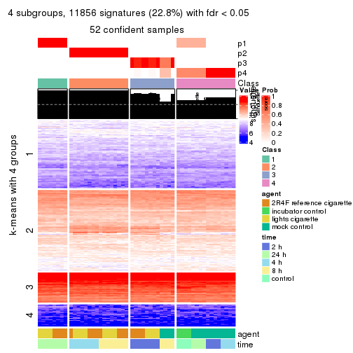
get_signatures(res, k = 5, scale_rows = FALSE)
get_signatures(res, k = 6, scale_rows = FALSE)
Compare the overlap of signatures from different k:
compare_signatures(res)
get_signature() returns a data frame invisibly. TO get the list of signatures, the function
call should be assigned to a variable explicitly. In following code, if plot argument is set
to FALSE, no heatmap is plotted while only the differential analysis is performed.
# code only for demonstration
tb = get_signature(res, k = ..., plot = FALSE)
An example of the output of tb is:
#> which_row fdr mean_1 mean_2 scaled_mean_1 scaled_mean_2 km
#> 1 38 0.042760348 8.373488 9.131774 -0.5533452 0.5164555 1
#> 2 40 0.018707592 7.106213 8.469186 -0.6173731 0.5762149 1
#> 3 55 0.019134737 10.221463 11.207825 -0.6159697 0.5749050 1
#> 4 59 0.006059896 5.921854 7.869574 -0.6899429 0.6439467 1
#> 5 60 0.018055526 8.928898 10.211722 -0.6204761 0.5791110 1
#> 6 98 0.009384629 15.714769 14.887706 0.6635654 -0.6193277 2
...
The columns in tb are:
which_row: row indices corresponding to the input matrix.fdr: FDR for the differential test. mean_x: The mean value in group x.scaled_mean_x: The mean value in group x after rows are scaled.km: Row groups if k-means clustering is applied to rows.UMAP plot which shows how samples are separated.
dimension_reduction(res, k = 2, method = "UMAP")

dimension_reduction(res, k = 3, method = "UMAP")
dimension_reduction(res, k = 4, method = "UMAP")
dimension_reduction(res, k = 5, method = "UMAP")
dimension_reduction(res, k = 6, method = "UMAP")
Following heatmap shows how subgroups are split when increasing k:
collect_classes(res)
Test correlation between subgroups and known annotations. If the known annotation is numeric, one-way ANOVA test is applied, and if the known annotation is discrete, chi-squared contingency table test is applied.
test_to_known_factors(res)
#> n agent(p) time(p) k
#> ATC:hclust 52 2.36e-03 2.02e-05 2
#> ATC:hclust 44 2.30e-02 3.27e-12 3
#> ATC:hclust 52 2.96e-06 1.23e-10 4
#> ATC:hclust 52 4.23e-08 7.45e-14 5
#> ATC:hclust 52 4.56e-07 1.12e-18 6
If matrix rows can be associated to genes, consider to use GO_Enrichment(res,
...) to perform function enrichment for the signature genes.
The object with results only for a single top-value method and a single partition method can be extracted as:
res = res_list["ATC", "kmeans"]
# you can also extract it by
# res = res_list["ATC:kmeans"]
A summary of res and all the functions that can be applied to it:
res
#> A 'ConsensusPartition' object with k = 2, 3, 4, 5, 6.
#> On a matrix with 51941 rows and 52 columns.
#> Top rows (1000, 2000, 3000, 4000, 5000) are extracted by 'ATC' method.
#> Subgroups are detected by 'kmeans' method.
#> Performed in total 1250 partitions by row resampling.
#> Best k for subgroups seems to be 3.
#>
#> Following methods can be applied to this 'ConsensusPartition' object:
#> [1] "cola_report" "collect_classes" "collect_plots"
#> [4] "collect_stats" "colnames" "compare_signatures"
#> [7] "consensus_heatmap" "dimension_reduction" "functional_enrichment"
#> [10] "get_anno_col" "get_anno" "get_classes"
#> [13] "get_consensus" "get_matrix" "get_membership"
#> [16] "get_param" "get_signatures" "get_stats"
#> [19] "is_best_k" "is_stable_k" "membership_heatmap"
#> [22] "ncol" "nrow" "plot_ecdf"
#> [25] "rownames" "select_partition_number" "show"
#> [28] "suggest_best_k" "test_to_known_factors"
collect_plots() function collects all the plots made from res for all k (number of partitions)
into one single page to provide an easy and fast comparison between different k.
collect_plots(res)
The plots are:
k and the heatmap of
predicted classes for each k.k.k.k.All the plots in panels can be made by individual functions and they are plotted later in this section.
select_partition_number() produces several plots showing different
statistics for choosing “optimized” k. There are following statistics:
k;k, the area increased is defined as \(A_k - A_{k-1}\).The detailed explanations of these statistics can be found in the cola vignette.
Generally speaking, lower PAC score, higher mean silhouette score or higher
concordance corresponds to better partition. Rand index and Jaccard index
measure how similar the current partition is compared to partition with k-1.
If they are too similar, we won't accept k is better than k-1.
select_partition_number(res)
The numeric values for all these statistics can be obtained by get_stats().
get_stats(res)
#> k 1-PAC mean_silhouette concordance area_increased Rand Jaccard
#> 2 2 0.517 0.950 0.951 0.4352 0.566 0.566
#> 3 3 0.722 0.952 0.918 0.4867 0.759 0.573
#> 4 4 0.764 0.808 0.799 0.1176 1.000 1.000
#> 5 5 0.784 0.755 0.733 0.0745 0.879 0.628
#> 6 6 0.756 0.779 0.760 0.0472 0.925 0.663
suggest_best_k() suggests the best \(k\) based on these statistics. The rules are as follows:
NA.suggest_best_k(res)
#> [1] 3
Following shows the table of the partitions (You need to click the show/hide
code output link to see it). The membership matrix (columns with name p*)
is inferred by
clue::cl_consensus()
function with the SE method. Basically the value in the membership matrix
represents the probability to belong to a certain group. The finall class
label for an item is determined with the group with highest probability it
belongs to.
In get_classes() function, the entropy is calculated from the membership
matrix and the silhouette score is calculated from the consensus matrix.
cbind(get_classes(res, k = 2), get_membership(res, k = 2))
#> class entropy silhouette p1 p2
#> GSM270543 1 0.552 0.933 0.872 0.128
#> GSM270544 1 0.552 0.933 0.872 0.128
#> GSM270545 1 0.552 0.933 0.872 0.128
#> GSM270546 1 0.552 0.933 0.872 0.128
#> GSM270547 1 0.552 0.933 0.872 0.128
#> GSM270548 1 0.552 0.933 0.872 0.128
#> GSM270549 1 0.552 0.933 0.872 0.128
#> GSM270550 1 0.552 0.933 0.872 0.128
#> GSM270551 1 0.552 0.933 0.872 0.128
#> GSM270552 1 0.529 0.933 0.880 0.120
#> GSM270553 1 0.529 0.933 0.880 0.120
#> GSM270554 1 0.529 0.933 0.880 0.120
#> GSM270555 1 0.000 0.921 1.000 0.000
#> GSM270556 1 0.000 0.921 1.000 0.000
#> GSM270557 1 0.000 0.921 1.000 0.000
#> GSM270558 1 0.000 0.921 1.000 0.000
#> GSM270559 1 0.552 0.933 0.872 0.128
#> GSM270560 1 0.552 0.933 0.872 0.128
#> GSM270561 1 0.552 0.933 0.872 0.128
#> GSM270562 1 0.552 0.933 0.872 0.128
#> GSM270563 2 0.000 1.000 0.000 1.000
#> GSM270564 2 0.000 1.000 0.000 1.000
#> GSM270565 2 0.000 1.000 0.000 1.000
#> GSM270566 2 0.000 1.000 0.000 1.000
#> GSM270567 2 0.000 1.000 0.000 1.000
#> GSM270568 2 0.000 1.000 0.000 1.000
#> GSM270569 2 0.000 1.000 0.000 1.000
#> GSM270570 2 0.000 1.000 0.000 1.000
#> GSM270571 1 0.000 0.921 1.000 0.000
#> GSM270572 1 0.000 0.921 1.000 0.000
#> GSM270573 1 0.000 0.921 1.000 0.000
#> GSM270574 1 0.000 0.921 1.000 0.000
#> GSM270575 1 0.552 0.933 0.872 0.128
#> GSM270576 1 0.552 0.933 0.872 0.128
#> GSM270577 1 0.552 0.933 0.872 0.128
#> GSM270578 1 0.552 0.933 0.872 0.128
#> GSM270579 2 0.000 1.000 0.000 1.000
#> GSM270580 2 0.000 1.000 0.000 1.000
#> GSM270581 2 0.000 1.000 0.000 1.000
#> GSM270582 2 0.000 1.000 0.000 1.000
#> GSM270583 2 0.000 1.000 0.000 1.000
#> GSM270584 2 0.000 1.000 0.000 1.000
#> GSM270585 2 0.000 1.000 0.000 1.000
#> GSM270586 2 0.000 1.000 0.000 1.000
#> GSM270587 1 0.000 0.921 1.000 0.000
#> GSM270588 1 0.000 0.921 1.000 0.000
#> GSM270589 1 0.000 0.921 1.000 0.000
#> GSM270590 1 0.000 0.921 1.000 0.000
#> GSM270591 1 0.000 0.921 1.000 0.000
#> GSM270592 1 0.000 0.921 1.000 0.000
#> GSM270593 1 0.000 0.921 1.000 0.000
#> GSM270594 1 0.000 0.921 1.000 0.000
cbind(get_classes(res, k = 3), get_membership(res, k = 3))
#> class entropy silhouette p1 p2 p3
#> GSM270543 3 0.1163 0.965 0.028 0.000 0.972
#> GSM270544 3 0.0892 0.969 0.020 0.000 0.980
#> GSM270545 3 0.1289 0.965 0.032 0.000 0.968
#> GSM270546 3 0.1289 0.965 0.032 0.000 0.968
#> GSM270547 3 0.1529 0.964 0.040 0.000 0.960
#> GSM270548 3 0.1529 0.964 0.040 0.000 0.960
#> GSM270549 3 0.1411 0.969 0.036 0.000 0.964
#> GSM270550 3 0.1529 0.964 0.040 0.000 0.960
#> GSM270551 3 0.1289 0.971 0.032 0.000 0.968
#> GSM270552 3 0.0892 0.972 0.020 0.000 0.980
#> GSM270553 3 0.1031 0.972 0.024 0.000 0.976
#> GSM270554 3 0.0892 0.972 0.020 0.000 0.980
#> GSM270555 1 0.4002 0.937 0.840 0.000 0.160
#> GSM270556 1 0.3816 0.941 0.852 0.000 0.148
#> GSM270557 1 0.4002 0.937 0.840 0.000 0.160
#> GSM270558 1 0.4002 0.937 0.840 0.000 0.160
#> GSM270559 3 0.1031 0.973 0.024 0.000 0.976
#> GSM270560 3 0.1031 0.973 0.024 0.000 0.976
#> GSM270561 3 0.1031 0.973 0.024 0.000 0.976
#> GSM270562 3 0.1031 0.973 0.024 0.000 0.976
#> GSM270563 2 0.5010 0.944 0.076 0.840 0.084
#> GSM270564 2 0.4925 0.945 0.076 0.844 0.080
#> GSM270565 2 0.5010 0.944 0.076 0.840 0.084
#> GSM270566 2 0.4925 0.945 0.076 0.844 0.080
#> GSM270567 2 0.1289 0.945 0.000 0.968 0.032
#> GSM270568 2 0.1289 0.945 0.000 0.968 0.032
#> GSM270569 2 0.1289 0.945 0.000 0.968 0.032
#> GSM270570 2 0.1289 0.945 0.000 0.968 0.032
#> GSM270571 1 0.3116 0.943 0.892 0.000 0.108
#> GSM270572 1 0.3116 0.943 0.892 0.000 0.108
#> GSM270573 1 0.3116 0.943 0.892 0.000 0.108
#> GSM270574 1 0.3116 0.943 0.892 0.000 0.108
#> GSM270575 3 0.1031 0.973 0.024 0.000 0.976
#> GSM270576 3 0.1031 0.973 0.024 0.000 0.976
#> GSM270577 3 0.1031 0.973 0.024 0.000 0.976
#> GSM270578 3 0.1031 0.973 0.024 0.000 0.976
#> GSM270579 2 0.5010 0.944 0.076 0.840 0.084
#> GSM270580 2 0.5010 0.944 0.076 0.840 0.084
#> GSM270581 2 0.5010 0.944 0.076 0.840 0.084
#> GSM270582 2 0.5010 0.944 0.076 0.840 0.084
#> GSM270583 2 0.1289 0.945 0.000 0.968 0.032
#> GSM270584 2 0.1289 0.945 0.000 0.968 0.032
#> GSM270585 2 0.1289 0.945 0.000 0.968 0.032
#> GSM270586 2 0.1289 0.945 0.000 0.968 0.032
#> GSM270587 1 0.2711 0.942 0.912 0.000 0.088
#> GSM270588 1 0.2711 0.942 0.912 0.000 0.088
#> GSM270589 1 0.2711 0.942 0.912 0.000 0.088
#> GSM270590 1 0.2711 0.942 0.912 0.000 0.088
#> GSM270591 1 0.5298 0.918 0.804 0.032 0.164
#> GSM270592 1 0.5298 0.918 0.804 0.032 0.164
#> GSM270593 1 0.5298 0.918 0.804 0.032 0.164
#> GSM270594 1 0.5298 0.918 0.804 0.032 0.164
cbind(get_classes(res, k = 4), get_membership(res, k = 4))
#> class entropy silhouette p1 p2 p3 p4
#> GSM270543 4 0.2731 0.771 0.008 0.048 NA 0.912
#> GSM270544 4 0.2441 0.789 0.004 0.020 NA 0.920
#> GSM270545 4 0.2861 0.770 0.012 0.048 NA 0.908
#> GSM270546 4 0.2861 0.770 0.012 0.048 NA 0.908
#> GSM270547 4 0.1452 0.757 0.008 0.036 NA 0.956
#> GSM270548 4 0.0672 0.768 0.008 0.008 NA 0.984
#> GSM270549 4 0.0188 0.772 0.004 0.000 NA 0.996
#> GSM270550 4 0.1452 0.757 0.008 0.036 NA 0.956
#> GSM270551 4 0.5055 0.774 0.008 0.000 NA 0.624
#> GSM270552 4 0.2999 0.784 0.004 0.000 NA 0.864
#> GSM270553 4 0.2999 0.784 0.004 0.000 NA 0.864
#> GSM270554 4 0.2999 0.784 0.004 0.000 NA 0.864
#> GSM270555 1 0.5003 0.855 0.768 0.000 NA 0.084
#> GSM270556 1 0.4706 0.861 0.788 0.000 NA 0.072
#> GSM270557 1 0.5003 0.855 0.768 0.000 NA 0.084
#> GSM270558 1 0.5003 0.855 0.768 0.000 NA 0.084
#> GSM270559 4 0.6304 0.780 0.012 0.040 NA 0.560
#> GSM270560 4 0.6304 0.780 0.012 0.040 NA 0.560
#> GSM270561 4 0.6304 0.780 0.012 0.040 NA 0.560
#> GSM270562 4 0.6304 0.780 0.012 0.040 NA 0.560
#> GSM270563 2 0.1488 0.808 0.000 0.956 NA 0.032
#> GSM270564 2 0.0817 0.812 0.000 0.976 NA 0.024
#> GSM270565 2 0.1488 0.808 0.000 0.956 NA 0.032
#> GSM270566 2 0.0817 0.812 0.000 0.976 NA 0.024
#> GSM270567 2 0.4936 0.813 0.000 0.624 NA 0.004
#> GSM270568 2 0.4936 0.813 0.000 0.624 NA 0.004
#> GSM270569 2 0.4936 0.813 0.000 0.624 NA 0.004
#> GSM270570 2 0.4936 0.813 0.000 0.624 NA 0.004
#> GSM270571 1 0.1211 0.872 0.960 0.000 NA 0.040
#> GSM270572 1 0.1211 0.872 0.960 0.000 NA 0.040
#> GSM270573 1 0.1211 0.872 0.960 0.000 NA 0.040
#> GSM270574 1 0.1211 0.872 0.960 0.000 NA 0.040
#> GSM270575 4 0.6304 0.780 0.012 0.040 NA 0.560
#> GSM270576 4 0.6304 0.780 0.012 0.040 NA 0.560
#> GSM270577 4 0.6304 0.780 0.012 0.040 NA 0.560
#> GSM270578 4 0.6304 0.780 0.012 0.040 NA 0.560
#> GSM270579 2 0.1488 0.808 0.000 0.956 NA 0.032
#> GSM270580 2 0.1488 0.808 0.000 0.956 NA 0.032
#> GSM270581 2 0.1488 0.808 0.000 0.956 NA 0.032
#> GSM270582 2 0.1488 0.808 0.000 0.956 NA 0.032
#> GSM270583 2 0.5771 0.813 0.036 0.628 NA 0.004
#> GSM270584 2 0.5771 0.813 0.036 0.628 NA 0.004
#> GSM270585 2 0.5771 0.813 0.036 0.628 NA 0.004
#> GSM270586 2 0.5771 0.813 0.036 0.628 NA 0.004
#> GSM270587 1 0.2505 0.872 0.920 0.004 NA 0.036
#> GSM270588 1 0.2505 0.872 0.920 0.004 NA 0.036
#> GSM270589 1 0.2505 0.872 0.920 0.004 NA 0.036
#> GSM270590 1 0.2505 0.872 0.920 0.004 NA 0.036
#> GSM270591 1 0.6871 0.783 0.592 0.000 NA 0.168
#> GSM270592 1 0.6871 0.783 0.592 0.000 NA 0.168
#> GSM270593 1 0.6871 0.783 0.592 0.000 NA 0.168
#> GSM270594 1 0.6871 0.783 0.592 0.000 NA 0.168
cbind(get_classes(res, k = 5), get_membership(res, k = 5))
#> class entropy silhouette p1 p2 p3 p4 p5
#> GSM270543 4 0.4946 0.879 0.000 0.036 0.368 0.596 0.000
#> GSM270544 4 0.4855 0.819 0.000 0.024 0.424 0.552 0.000
#> GSM270545 4 0.4880 0.904 0.000 0.036 0.348 0.616 0.000
#> GSM270546 4 0.4880 0.904 0.000 0.036 0.348 0.616 0.000
#> GSM270547 4 0.4403 0.903 0.004 0.012 0.316 0.668 0.000
#> GSM270548 4 0.4166 0.886 0.004 0.000 0.348 0.648 0.000
#> GSM270549 4 0.4182 0.880 0.004 0.000 0.352 0.644 0.000
#> GSM270550 4 0.4403 0.903 0.004 0.012 0.316 0.668 0.000
#> GSM270551 3 0.2721 0.683 0.016 0.036 0.896 0.052 0.000
#> GSM270552 3 0.5489 -0.460 0.020 0.028 0.504 0.448 0.000
#> GSM270553 3 0.5489 -0.460 0.020 0.028 0.504 0.448 0.000
#> GSM270554 3 0.5489 -0.460 0.020 0.028 0.504 0.448 0.000
#> GSM270555 1 0.1605 0.728 0.944 0.004 0.040 0.012 0.000
#> GSM270556 1 0.1211 0.732 0.960 0.000 0.024 0.016 0.000
#> GSM270557 1 0.1605 0.728 0.944 0.004 0.040 0.012 0.000
#> GSM270558 1 0.1605 0.728 0.944 0.004 0.040 0.012 0.000
#> GSM270559 3 0.0510 0.760 0.000 0.016 0.984 0.000 0.000
#> GSM270560 3 0.0290 0.761 0.000 0.008 0.992 0.000 0.000
#> GSM270561 3 0.0290 0.761 0.000 0.008 0.992 0.000 0.000
#> GSM270562 3 0.0404 0.762 0.000 0.012 0.988 0.000 0.000
#> GSM270563 2 0.6087 0.981 0.000 0.528 0.044 0.044 0.384
#> GSM270564 2 0.5889 0.986 0.000 0.540 0.044 0.032 0.384
#> GSM270565 2 0.5889 0.986 0.000 0.540 0.044 0.032 0.384
#> GSM270566 2 0.5889 0.986 0.000 0.540 0.044 0.032 0.384
#> GSM270567 5 0.2116 0.940 0.004 0.008 0.000 0.076 0.912
#> GSM270568 5 0.2116 0.940 0.004 0.008 0.000 0.076 0.912
#> GSM270569 5 0.2116 0.940 0.004 0.008 0.000 0.076 0.912
#> GSM270570 5 0.2116 0.940 0.004 0.008 0.000 0.076 0.912
#> GSM270571 1 0.5613 0.760 0.644 0.252 0.012 0.092 0.000
#> GSM270572 1 0.5613 0.760 0.644 0.252 0.012 0.092 0.000
#> GSM270573 1 0.5613 0.760 0.644 0.252 0.012 0.092 0.000
#> GSM270574 1 0.5613 0.760 0.644 0.252 0.012 0.092 0.000
#> GSM270575 3 0.0404 0.762 0.000 0.012 0.988 0.000 0.000
#> GSM270576 3 0.0404 0.762 0.000 0.012 0.988 0.000 0.000
#> GSM270577 3 0.0162 0.762 0.000 0.004 0.996 0.000 0.000
#> GSM270578 3 0.0290 0.761 0.000 0.008 0.992 0.000 0.000
#> GSM270579 2 0.6293 0.981 0.004 0.520 0.044 0.048 0.384
#> GSM270580 2 0.6087 0.981 0.000 0.528 0.044 0.044 0.384
#> GSM270581 2 0.6293 0.981 0.004 0.520 0.044 0.048 0.384
#> GSM270582 2 0.6293 0.981 0.004 0.520 0.044 0.048 0.384
#> GSM270583 5 0.0000 0.940 0.000 0.000 0.000 0.000 1.000
#> GSM270584 5 0.0000 0.940 0.000 0.000 0.000 0.000 1.000
#> GSM270585 5 0.0000 0.940 0.000 0.000 0.000 0.000 1.000
#> GSM270586 5 0.0000 0.940 0.000 0.000 0.000 0.000 1.000
#> GSM270587 1 0.5933 0.759 0.584 0.308 0.012 0.096 0.000
#> GSM270588 1 0.5933 0.759 0.584 0.308 0.012 0.096 0.000
#> GSM270589 1 0.5933 0.759 0.584 0.308 0.012 0.096 0.000
#> GSM270590 1 0.5933 0.759 0.584 0.308 0.012 0.096 0.000
#> GSM270591 1 0.5972 0.605 0.620 0.096 0.024 0.260 0.000
#> GSM270592 1 0.5972 0.605 0.620 0.096 0.024 0.260 0.000
#> GSM270593 1 0.5972 0.605 0.620 0.096 0.024 0.260 0.000
#> GSM270594 1 0.5972 0.605 0.620 0.096 0.024 0.260 0.000
cbind(get_classes(res, k = 6), get_membership(res, k = 6))
#> class entropy silhouette p1 p2 p3 p4 p5 p6
#> GSM270543 4 0.4367 0.790 0.000 0.016 0.228 0.712 0.000 0.044
#> GSM270544 4 0.4378 0.783 0.000 0.016 0.240 0.704 0.000 0.040
#> GSM270545 4 0.4315 0.793 0.000 0.016 0.220 0.720 0.000 0.044
#> GSM270546 4 0.4315 0.793 0.000 0.016 0.220 0.720 0.000 0.044
#> GSM270547 4 0.2703 0.808 0.000 0.000 0.172 0.824 0.000 0.004
#> GSM270548 4 0.2562 0.807 0.000 0.000 0.172 0.828 0.000 0.000
#> GSM270549 4 0.2562 0.807 0.000 0.000 0.172 0.828 0.000 0.000
#> GSM270550 4 0.2703 0.808 0.000 0.000 0.172 0.824 0.000 0.004
#> GSM270551 3 0.4433 0.750 0.000 0.132 0.756 0.036 0.000 0.076
#> GSM270552 4 0.6459 0.436 0.000 0.096 0.400 0.424 0.000 0.080
#> GSM270553 4 0.6459 0.436 0.000 0.096 0.400 0.424 0.000 0.080
#> GSM270554 4 0.6459 0.436 0.000 0.096 0.400 0.424 0.000 0.080
#> GSM270555 1 0.6300 0.156 0.540 0.096 0.024 0.036 0.000 0.304
#> GSM270556 1 0.5818 0.117 0.548 0.092 0.000 0.040 0.000 0.320
#> GSM270557 1 0.6300 0.156 0.540 0.096 0.024 0.036 0.000 0.304
#> GSM270558 1 0.6300 0.156 0.540 0.096 0.024 0.036 0.000 0.304
#> GSM270559 3 0.1341 0.935 0.000 0.028 0.948 0.000 0.000 0.024
#> GSM270560 3 0.0146 0.935 0.000 0.000 0.996 0.000 0.000 0.004
#> GSM270561 3 0.0146 0.935 0.000 0.000 0.996 0.000 0.000 0.004
#> GSM270562 3 0.1341 0.935 0.000 0.028 0.948 0.000 0.000 0.024
#> GSM270563 2 0.3954 0.965 0.000 0.688 0.012 0.008 0.292 0.000
#> GSM270564 2 0.3710 0.966 0.000 0.696 0.012 0.000 0.292 0.000
#> GSM270565 2 0.3710 0.966 0.000 0.696 0.012 0.000 0.292 0.000
#> GSM270566 2 0.3710 0.966 0.000 0.696 0.012 0.000 0.292 0.000
#> GSM270567 5 0.3352 0.886 0.004 0.000 0.000 0.056 0.820 0.120
#> GSM270568 5 0.3290 0.887 0.004 0.000 0.000 0.044 0.820 0.132
#> GSM270569 5 0.3290 0.887 0.004 0.000 0.000 0.044 0.820 0.132
#> GSM270570 5 0.3290 0.887 0.004 0.000 0.000 0.044 0.820 0.132
#> GSM270571 1 0.0146 0.672 0.996 0.000 0.004 0.000 0.000 0.000
#> GSM270572 1 0.0146 0.672 0.996 0.000 0.004 0.000 0.000 0.000
#> GSM270573 1 0.0146 0.672 0.996 0.000 0.004 0.000 0.000 0.000
#> GSM270574 1 0.0146 0.672 0.996 0.000 0.004 0.000 0.000 0.000
#> GSM270575 3 0.1789 0.928 0.000 0.044 0.924 0.000 0.000 0.032
#> GSM270576 3 0.1789 0.928 0.000 0.044 0.924 0.000 0.000 0.032
#> GSM270577 3 0.0146 0.935 0.000 0.000 0.996 0.000 0.000 0.004
#> GSM270578 3 0.0146 0.935 0.000 0.000 0.996 0.000 0.000 0.004
#> GSM270579 2 0.5215 0.945 0.000 0.624 0.012 0.016 0.292 0.056
#> GSM270580 2 0.3954 0.965 0.000 0.688 0.012 0.008 0.292 0.000
#> GSM270581 2 0.5239 0.945 0.000 0.624 0.012 0.020 0.292 0.052
#> GSM270582 2 0.5215 0.945 0.000 0.624 0.012 0.016 0.292 0.056
#> GSM270583 5 0.0000 0.889 0.000 0.000 0.000 0.000 1.000 0.000
#> GSM270584 5 0.0000 0.889 0.000 0.000 0.000 0.000 1.000 0.000
#> GSM270585 5 0.0000 0.889 0.000 0.000 0.000 0.000 1.000 0.000
#> GSM270586 5 0.0000 0.889 0.000 0.000 0.000 0.000 1.000 0.000
#> GSM270587 1 0.3609 0.644 0.828 0.068 0.000 0.052 0.000 0.052
#> GSM270588 1 0.3609 0.644 0.828 0.068 0.000 0.052 0.000 0.052
#> GSM270589 1 0.3609 0.644 0.828 0.068 0.000 0.052 0.000 0.052
#> GSM270590 1 0.3609 0.644 0.828 0.068 0.000 0.052 0.000 0.052
#> GSM270591 6 0.4516 0.997 0.260 0.000 0.000 0.072 0.000 0.668
#> GSM270592 6 0.4516 0.997 0.260 0.000 0.000 0.072 0.000 0.668
#> GSM270593 6 0.4516 0.997 0.260 0.000 0.000 0.072 0.000 0.668
#> GSM270594 6 0.4613 0.992 0.260 0.000 0.000 0.080 0.000 0.660
Heatmaps for the consensus matrix. It visualizes the probability of two samples to be in a same group.
consensus_heatmap(res, k = 2)
consensus_heatmap(res, k = 3)
consensus_heatmap(res, k = 4)
consensus_heatmap(res, k = 5)
consensus_heatmap(res, k = 6)
Heatmaps for the membership of samples in all partitions to see how consistent they are:
membership_heatmap(res, k = 2)
membership_heatmap(res, k = 3)
membership_heatmap(res, k = 4)
membership_heatmap(res, k = 5)
membership_heatmap(res, k = 6)
As soon as we have had the classes for columns, we can look for signatures which are significantly different between classes which can be candidate marks for certain classes. Following are the heatmaps for signatures.
Signature heatmaps where rows are scaled:
get_signatures(res, k = 2)
get_signatures(res, k = 3)
get_signatures(res, k = 4)
get_signatures(res, k = 5)
get_signatures(res, k = 6)
Signature heatmaps where rows are not scaled:
get_signatures(res, k = 2, scale_rows = FALSE)
get_signatures(res, k = 3, scale_rows = FALSE)
get_signatures(res, k = 4, scale_rows = FALSE)
get_signatures(res, k = 5, scale_rows = FALSE)
get_signatures(res, k = 6, scale_rows = FALSE)
Compare the overlap of signatures from different k:
compare_signatures(res)
get_signature() returns a data frame invisibly. TO get the list of signatures, the function
call should be assigned to a variable explicitly. In following code, if plot argument is set
to FALSE, no heatmap is plotted while only the differential analysis is performed.
# code only for demonstration
tb = get_signature(res, k = ..., plot = FALSE)
An example of the output of tb is:
#> which_row fdr mean_1 mean_2 scaled_mean_1 scaled_mean_2 km
#> 1 38 0.042760348 8.373488 9.131774 -0.5533452 0.5164555 1
#> 2 40 0.018707592 7.106213 8.469186 -0.6173731 0.5762149 1
#> 3 55 0.019134737 10.221463 11.207825 -0.6159697 0.5749050 1
#> 4 59 0.006059896 5.921854 7.869574 -0.6899429 0.6439467 1
#> 5 60 0.018055526 8.928898 10.211722 -0.6204761 0.5791110 1
#> 6 98 0.009384629 15.714769 14.887706 0.6635654 -0.6193277 2
...
The columns in tb are:
which_row: row indices corresponding to the input matrix.fdr: FDR for the differential test. mean_x: The mean value in group x.scaled_mean_x: The mean value in group x after rows are scaled.km: Row groups if k-means clustering is applied to rows.UMAP plot which shows how samples are separated.
dimension_reduction(res, k = 2, method = "UMAP")
dimension_reduction(res, k = 3, method = "UMAP")

dimension_reduction(res, k = 4, method = "UMAP")
dimension_reduction(res, k = 5, method = "UMAP")
dimension_reduction(res, k = 6, method = "UMAP")
Following heatmap shows how subgroups are split when increasing k:
collect_classes(res)
Test correlation between subgroups and known annotations. If the known annotation is numeric, one-way ANOVA test is applied, and if the known annotation is discrete, chi-squared contingency table test is applied.
test_to_known_factors(res)
#> n agent(p) time(p) k
#> ATC:kmeans 52 2.36e-03 2.02e-05 2
#> ATC:kmeans 52 2.94e-04 1.36e-12 3
#> ATC:kmeans 52 2.94e-04 1.36e-12 4
#> ATC:kmeans 49 1.01e-04 2.07e-18 5
#> ATC:kmeans 45 1.13e-11 2.58e-23 6
If matrix rows can be associated to genes, consider to use GO_Enrichment(res,
...) to perform function enrichment for the signature genes.
The object with results only for a single top-value method and a single partition method can be extracted as:
res = res_list["ATC", "skmeans"]
# you can also extract it by
# res = res_list["ATC:skmeans"]
A summary of res and all the functions that can be applied to it:
res
#> A 'ConsensusPartition' object with k = 2, 3, 4, 5, 6.
#> On a matrix with 51941 rows and 52 columns.
#> Top rows (1000, 2000, 3000, 4000, 5000) are extracted by 'ATC' method.
#> Subgroups are detected by 'skmeans' method.
#> Performed in total 1250 partitions by row resampling.
#> Best k for subgroups seems to be 5.
#>
#> Following methods can be applied to this 'ConsensusPartition' object:
#> [1] "cola_report" "collect_classes" "collect_plots"
#> [4] "collect_stats" "colnames" "compare_signatures"
#> [7] "consensus_heatmap" "dimension_reduction" "functional_enrichment"
#> [10] "get_anno_col" "get_anno" "get_classes"
#> [13] "get_consensus" "get_matrix" "get_membership"
#> [16] "get_param" "get_signatures" "get_stats"
#> [19] "is_best_k" "is_stable_k" "membership_heatmap"
#> [22] "ncol" "nrow" "plot_ecdf"
#> [25] "rownames" "select_partition_number" "show"
#> [28] "suggest_best_k" "test_to_known_factors"
collect_plots() function collects all the plots made from res for all k (number of partitions)
into one single page to provide an easy and fast comparison between different k.
collect_plots(res)
The plots are:
k and the heatmap of
predicted classes for each k.k.k.k.All the plots in panels can be made by individual functions and they are plotted later in this section.
select_partition_number() produces several plots showing different
statistics for choosing “optimized” k. There are following statistics:
k;k, the area increased is defined as \(A_k - A_{k-1}\).The detailed explanations of these statistics can be found in the cola vignette.
Generally speaking, lower PAC score, higher mean silhouette score or higher
concordance corresponds to better partition. Rand index and Jaccard index
measure how similar the current partition is compared to partition with k-1.
If they are too similar, we won't accept k is better than k-1.
select_partition_number(res)
The numeric values for all these statistics can be obtained by get_stats().
get_stats(res)
#> k 1-PAC mean_silhouette concordance area_increased Rand Jaccard
#> 2 2 0.850 0.953 0.977 0.4828 0.509 0.509
#> 3 3 0.783 0.952 0.949 0.3749 0.702 0.473
#> 4 4 1.000 0.978 0.988 0.1280 0.928 0.777
#> 5 5 0.909 0.883 0.899 0.0546 0.913 0.679
#> 6 6 0.842 0.650 0.707 0.0440 0.926 0.707
suggest_best_k() suggests the best \(k\) based on these statistics. The rules are as follows:
NA.suggest_best_k(res)
#> [1] 5
#> attr(,"optional")
#> [1] 4
There is also optional best \(k\) = 4 that is worth to check.
Following shows the table of the partitions (You need to click the show/hide
code output link to see it). The membership matrix (columns with name p*)
is inferred by
clue::cl_consensus()
function with the SE method. Basically the value in the membership matrix
represents the probability to belong to a certain group. The finall class
label for an item is determined with the group with highest probability it
belongs to.
In get_classes() function, the entropy is calculated from the membership
matrix and the silhouette score is calculated from the consensus matrix.
cbind(get_classes(res, k = 2), get_membership(res, k = 2))
#> class entropy silhouette p1 p2
#> GSM270543 2 0.8144 0.711 0.252 0.748
#> GSM270544 1 0.0376 0.988 0.996 0.004
#> GSM270545 2 0.8144 0.711 0.252 0.748
#> GSM270546 2 0.8144 0.711 0.252 0.748
#> GSM270547 2 0.4562 0.885 0.096 0.904
#> GSM270548 1 0.7602 0.691 0.780 0.220
#> GSM270549 1 0.0000 0.992 1.000 0.000
#> GSM270550 2 0.5059 0.871 0.112 0.888
#> GSM270551 1 0.0000 0.992 1.000 0.000
#> GSM270552 1 0.0000 0.992 1.000 0.000
#> GSM270553 1 0.0000 0.992 1.000 0.000
#> GSM270554 1 0.0000 0.992 1.000 0.000
#> GSM270555 1 0.0000 0.992 1.000 0.000
#> GSM270556 1 0.0000 0.992 1.000 0.000
#> GSM270557 1 0.0000 0.992 1.000 0.000
#> GSM270558 1 0.0000 0.992 1.000 0.000
#> GSM270559 1 0.0000 0.992 1.000 0.000
#> GSM270560 1 0.0000 0.992 1.000 0.000
#> GSM270561 1 0.0000 0.992 1.000 0.000
#> GSM270562 1 0.0000 0.992 1.000 0.000
#> GSM270563 2 0.0000 0.950 0.000 1.000
#> GSM270564 2 0.0000 0.950 0.000 1.000
#> GSM270565 2 0.0000 0.950 0.000 1.000
#> GSM270566 2 0.0000 0.950 0.000 1.000
#> GSM270567 2 0.0000 0.950 0.000 1.000
#> GSM270568 2 0.0000 0.950 0.000 1.000
#> GSM270569 2 0.0000 0.950 0.000 1.000
#> GSM270570 2 0.0000 0.950 0.000 1.000
#> GSM270571 1 0.0000 0.992 1.000 0.000
#> GSM270572 1 0.0000 0.992 1.000 0.000
#> GSM270573 1 0.0000 0.992 1.000 0.000
#> GSM270574 1 0.0000 0.992 1.000 0.000
#> GSM270575 1 0.0000 0.992 1.000 0.000
#> GSM270576 1 0.0000 0.992 1.000 0.000
#> GSM270577 1 0.0000 0.992 1.000 0.000
#> GSM270578 1 0.0000 0.992 1.000 0.000
#> GSM270579 2 0.0000 0.950 0.000 1.000
#> GSM270580 2 0.0000 0.950 0.000 1.000
#> GSM270581 2 0.0000 0.950 0.000 1.000
#> GSM270582 2 0.0000 0.950 0.000 1.000
#> GSM270583 2 0.0000 0.950 0.000 1.000
#> GSM270584 2 0.0000 0.950 0.000 1.000
#> GSM270585 2 0.0000 0.950 0.000 1.000
#> GSM270586 2 0.0000 0.950 0.000 1.000
#> GSM270587 1 0.0000 0.992 1.000 0.000
#> GSM270588 1 0.0000 0.992 1.000 0.000
#> GSM270589 1 0.0000 0.992 1.000 0.000
#> GSM270590 1 0.0000 0.992 1.000 0.000
#> GSM270591 1 0.0000 0.992 1.000 0.000
#> GSM270592 1 0.0000 0.992 1.000 0.000
#> GSM270593 1 0.0000 0.992 1.000 0.000
#> GSM270594 1 0.0000 0.992 1.000 0.000
cbind(get_classes(res, k = 3), get_membership(res, k = 3))
#> class entropy silhouette p1 p2 p3
#> GSM270543 3 0.205 0.850 0.028 0.020 0.952
#> GSM270544 3 0.000 0.853 0.000 0.000 1.000
#> GSM270545 3 0.462 0.808 0.144 0.020 0.836
#> GSM270546 3 0.468 0.804 0.148 0.020 0.832
#> GSM270547 3 0.368 0.845 0.080 0.028 0.892
#> GSM270548 3 0.186 0.863 0.052 0.000 0.948
#> GSM270549 3 0.186 0.863 0.052 0.000 0.948
#> GSM270550 3 0.375 0.841 0.096 0.020 0.884
#> GSM270551 3 0.382 0.904 0.148 0.000 0.852
#> GSM270552 3 0.455 0.881 0.200 0.000 0.800
#> GSM270553 3 0.455 0.881 0.200 0.000 0.800
#> GSM270554 3 0.455 0.881 0.200 0.000 0.800
#> GSM270555 1 0.000 1.000 1.000 0.000 0.000
#> GSM270556 1 0.000 1.000 1.000 0.000 0.000
#> GSM270557 1 0.000 1.000 1.000 0.000 0.000
#> GSM270558 1 0.000 1.000 1.000 0.000 0.000
#> GSM270559 3 0.382 0.904 0.148 0.000 0.852
#> GSM270560 3 0.382 0.904 0.148 0.000 0.852
#> GSM270561 3 0.382 0.904 0.148 0.000 0.852
#> GSM270562 3 0.382 0.904 0.148 0.000 0.852
#> GSM270563 2 0.000 1.000 0.000 1.000 0.000
#> GSM270564 2 0.000 1.000 0.000 1.000 0.000
#> GSM270565 2 0.000 1.000 0.000 1.000 0.000
#> GSM270566 2 0.000 1.000 0.000 1.000 0.000
#> GSM270567 2 0.000 1.000 0.000 1.000 0.000
#> GSM270568 2 0.000 1.000 0.000 1.000 0.000
#> GSM270569 2 0.000 1.000 0.000 1.000 0.000
#> GSM270570 2 0.000 1.000 0.000 1.000 0.000
#> GSM270571 1 0.000 1.000 1.000 0.000 0.000
#> GSM270572 1 0.000 1.000 1.000 0.000 0.000
#> GSM270573 1 0.000 1.000 1.000 0.000 0.000
#> GSM270574 1 0.000 1.000 1.000 0.000 0.000
#> GSM270575 3 0.382 0.904 0.148 0.000 0.852
#> GSM270576 3 0.382 0.904 0.148 0.000 0.852
#> GSM270577 3 0.382 0.904 0.148 0.000 0.852
#> GSM270578 3 0.382 0.904 0.148 0.000 0.852
#> GSM270579 2 0.000 1.000 0.000 1.000 0.000
#> GSM270580 2 0.000 1.000 0.000 1.000 0.000
#> GSM270581 2 0.000 1.000 0.000 1.000 0.000
#> GSM270582 2 0.000 1.000 0.000 1.000 0.000
#> GSM270583 2 0.000 1.000 0.000 1.000 0.000
#> GSM270584 2 0.000 1.000 0.000 1.000 0.000
#> GSM270585 2 0.000 1.000 0.000 1.000 0.000
#> GSM270586 2 0.000 1.000 0.000 1.000 0.000
#> GSM270587 1 0.000 1.000 1.000 0.000 0.000
#> GSM270588 1 0.000 1.000 1.000 0.000 0.000
#> GSM270589 1 0.000 1.000 1.000 0.000 0.000
#> GSM270590 1 0.000 1.000 1.000 0.000 0.000
#> GSM270591 1 0.000 1.000 1.000 0.000 0.000
#> GSM270592 1 0.000 1.000 1.000 0.000 0.000
#> GSM270593 1 0.000 1.000 1.000 0.000 0.000
#> GSM270594 1 0.000 1.000 1.000 0.000 0.000
cbind(get_classes(res, k = 4), get_membership(res, k = 4))
#> class entropy silhouette p1 p2 p3 p4
#> GSM270543 4 0.000 0.995 0.000 0 0.000 1.000
#> GSM270544 4 0.102 0.961 0.000 0 0.032 0.968
#> GSM270545 4 0.000 0.995 0.000 0 0.000 1.000
#> GSM270546 4 0.000 0.995 0.000 0 0.000 1.000
#> GSM270547 4 0.000 0.995 0.000 0 0.000 1.000
#> GSM270548 4 0.000 0.995 0.000 0 0.000 1.000
#> GSM270549 4 0.000 0.995 0.000 0 0.000 1.000
#> GSM270550 4 0.000 0.995 0.000 0 0.000 1.000
#> GSM270551 3 0.000 0.956 0.000 0 1.000 0.000
#> GSM270552 3 0.350 0.855 0.016 0 0.844 0.140
#> GSM270553 3 0.365 0.842 0.016 0 0.832 0.152
#> GSM270554 3 0.350 0.855 0.016 0 0.844 0.140
#> GSM270555 1 0.000 0.991 1.000 0 0.000 0.000
#> GSM270556 1 0.000 0.991 1.000 0 0.000 0.000
#> GSM270557 1 0.000 0.991 1.000 0 0.000 0.000
#> GSM270558 1 0.000 0.991 1.000 0 0.000 0.000
#> GSM270559 3 0.000 0.956 0.000 0 1.000 0.000
#> GSM270560 3 0.000 0.956 0.000 0 1.000 0.000
#> GSM270561 3 0.000 0.956 0.000 0 1.000 0.000
#> GSM270562 3 0.000 0.956 0.000 0 1.000 0.000
#> GSM270563 2 0.000 1.000 0.000 1 0.000 0.000
#> GSM270564 2 0.000 1.000 0.000 1 0.000 0.000
#> GSM270565 2 0.000 1.000 0.000 1 0.000 0.000
#> GSM270566 2 0.000 1.000 0.000 1 0.000 0.000
#> GSM270567 2 0.000 1.000 0.000 1 0.000 0.000
#> GSM270568 2 0.000 1.000 0.000 1 0.000 0.000
#> GSM270569 2 0.000 1.000 0.000 1 0.000 0.000
#> GSM270570 2 0.000 1.000 0.000 1 0.000 0.000
#> GSM270571 1 0.000 0.991 1.000 0 0.000 0.000
#> GSM270572 1 0.000 0.991 1.000 0 0.000 0.000
#> GSM270573 1 0.000 0.991 1.000 0 0.000 0.000
#> GSM270574 1 0.000 0.991 1.000 0 0.000 0.000
#> GSM270575 3 0.000 0.956 0.000 0 1.000 0.000
#> GSM270576 3 0.000 0.956 0.000 0 1.000 0.000
#> GSM270577 3 0.000 0.956 0.000 0 1.000 0.000
#> GSM270578 3 0.000 0.956 0.000 0 1.000 0.000
#> GSM270579 2 0.000 1.000 0.000 1 0.000 0.000
#> GSM270580 2 0.000 1.000 0.000 1 0.000 0.000
#> GSM270581 2 0.000 1.000 0.000 1 0.000 0.000
#> GSM270582 2 0.000 1.000 0.000 1 0.000 0.000
#> GSM270583 2 0.000 1.000 0.000 1 0.000 0.000
#> GSM270584 2 0.000 1.000 0.000 1 0.000 0.000
#> GSM270585 2 0.000 1.000 0.000 1 0.000 0.000
#> GSM270586 2 0.000 1.000 0.000 1 0.000 0.000
#> GSM270587 1 0.000 0.991 1.000 0 0.000 0.000
#> GSM270588 1 0.000 0.991 1.000 0 0.000 0.000
#> GSM270589 1 0.000 0.991 1.000 0 0.000 0.000
#> GSM270590 1 0.000 0.991 1.000 0 0.000 0.000
#> GSM270591 1 0.102 0.972 0.968 0 0.000 0.032
#> GSM270592 1 0.102 0.972 0.968 0 0.000 0.032
#> GSM270593 1 0.102 0.972 0.968 0 0.000 0.032
#> GSM270594 1 0.102 0.972 0.968 0 0.000 0.032
cbind(get_classes(res, k = 5), get_membership(res, k = 5))
#> class entropy silhouette p1 p2 p3 p4 p5
#> GSM270543 4 0.0000 0.847 0.000 0.000 0.000 1.000 0.000
#> GSM270544 4 0.0794 0.841 0.000 0.000 0.028 0.972 0.000
#> GSM270545 4 0.0000 0.847 0.000 0.000 0.000 1.000 0.000
#> GSM270546 4 0.0000 0.847 0.000 0.000 0.000 1.000 0.000
#> GSM270547 4 0.3612 0.839 0.000 0.000 0.000 0.732 0.268
#> GSM270548 4 0.3837 0.822 0.000 0.000 0.000 0.692 0.308
#> GSM270549 4 0.4088 0.780 0.000 0.000 0.000 0.632 0.368
#> GSM270550 4 0.3612 0.839 0.000 0.000 0.000 0.732 0.268
#> GSM270551 3 0.2127 0.891 0.000 0.000 0.892 0.000 0.108
#> GSM270552 5 0.1121 0.481 0.000 0.000 0.044 0.000 0.956
#> GSM270553 5 0.1121 0.481 0.000 0.000 0.044 0.000 0.956
#> GSM270554 5 0.1121 0.481 0.000 0.000 0.044 0.000 0.956
#> GSM270555 5 0.4306 0.622 0.492 0.000 0.000 0.000 0.508
#> GSM270556 5 0.4306 0.622 0.492 0.000 0.000 0.000 0.508
#> GSM270557 5 0.4306 0.622 0.492 0.000 0.000 0.000 0.508
#> GSM270558 5 0.4306 0.622 0.492 0.000 0.000 0.000 0.508
#> GSM270559 3 0.0000 0.987 0.000 0.000 1.000 0.000 0.000
#> GSM270560 3 0.0000 0.987 0.000 0.000 1.000 0.000 0.000
#> GSM270561 3 0.0000 0.987 0.000 0.000 1.000 0.000 0.000
#> GSM270562 3 0.0000 0.987 0.000 0.000 1.000 0.000 0.000
#> GSM270563 2 0.0963 0.983 0.000 0.964 0.000 0.000 0.036
#> GSM270564 2 0.0963 0.983 0.000 0.964 0.000 0.000 0.036
#> GSM270565 2 0.0963 0.983 0.000 0.964 0.000 0.000 0.036
#> GSM270566 2 0.0963 0.983 0.000 0.964 0.000 0.000 0.036
#> GSM270567 2 0.0000 0.983 0.000 1.000 0.000 0.000 0.000
#> GSM270568 2 0.0000 0.983 0.000 1.000 0.000 0.000 0.000
#> GSM270569 2 0.0000 0.983 0.000 1.000 0.000 0.000 0.000
#> GSM270570 2 0.0000 0.983 0.000 1.000 0.000 0.000 0.000
#> GSM270571 1 0.0000 0.997 1.000 0.000 0.000 0.000 0.000
#> GSM270572 1 0.0000 0.997 1.000 0.000 0.000 0.000 0.000
#> GSM270573 1 0.0000 0.997 1.000 0.000 0.000 0.000 0.000
#> GSM270574 1 0.0000 0.997 1.000 0.000 0.000 0.000 0.000
#> GSM270575 3 0.0000 0.987 0.000 0.000 1.000 0.000 0.000
#> GSM270576 3 0.0000 0.987 0.000 0.000 1.000 0.000 0.000
#> GSM270577 3 0.0000 0.987 0.000 0.000 1.000 0.000 0.000
#> GSM270578 3 0.0000 0.987 0.000 0.000 1.000 0.000 0.000
#> GSM270579 2 0.0963 0.983 0.000 0.964 0.000 0.000 0.036
#> GSM270580 2 0.0963 0.983 0.000 0.964 0.000 0.000 0.036
#> GSM270581 2 0.0963 0.983 0.000 0.964 0.000 0.000 0.036
#> GSM270582 2 0.0963 0.983 0.000 0.964 0.000 0.000 0.036
#> GSM270583 2 0.0000 0.983 0.000 1.000 0.000 0.000 0.000
#> GSM270584 2 0.0000 0.983 0.000 1.000 0.000 0.000 0.000
#> GSM270585 2 0.0000 0.983 0.000 1.000 0.000 0.000 0.000
#> GSM270586 2 0.0000 0.983 0.000 1.000 0.000 0.000 0.000
#> GSM270587 1 0.0162 0.997 0.996 0.000 0.000 0.000 0.004
#> GSM270588 1 0.0162 0.997 0.996 0.000 0.000 0.000 0.004
#> GSM270589 1 0.0162 0.997 0.996 0.000 0.000 0.000 0.004
#> GSM270590 1 0.0162 0.997 0.996 0.000 0.000 0.000 0.004
#> GSM270591 5 0.4862 0.709 0.364 0.000 0.000 0.032 0.604
#> GSM270592 5 0.4862 0.709 0.364 0.000 0.000 0.032 0.604
#> GSM270593 5 0.4862 0.709 0.364 0.000 0.000 0.032 0.604
#> GSM270594 5 0.4862 0.709 0.364 0.000 0.000 0.032 0.604
cbind(get_classes(res, k = 6), get_membership(res, k = 6))
#> class entropy silhouette p1 p2 p3 p4 p5 p6
#> GSM270543 4 0.0000 0.693 0.000 0.00 0.000 1.000 NA 0.000
#> GSM270544 4 0.0363 0.688 0.000 0.00 0.012 0.988 NA 0.000
#> GSM270545 4 0.0000 0.693 0.000 0.00 0.000 1.000 NA 0.000
#> GSM270546 4 0.0000 0.693 0.000 0.00 0.000 1.000 NA 0.000
#> GSM270547 4 0.5609 0.393 0.000 0.00 0.000 0.496 NA 0.348
#> GSM270548 4 0.5679 0.267 0.000 0.00 0.000 0.436 NA 0.408
#> GSM270549 6 0.5543 -0.251 0.000 0.00 0.000 0.320 NA 0.524
#> GSM270550 4 0.5609 0.393 0.000 0.00 0.000 0.496 NA 0.348
#> GSM270551 3 0.3198 0.677 0.000 0.00 0.740 0.000 NA 0.260
#> GSM270552 6 0.0000 0.771 0.000 0.00 0.000 0.000 NA 1.000
#> GSM270553 6 0.0000 0.771 0.000 0.00 0.000 0.000 NA 1.000
#> GSM270554 6 0.0000 0.771 0.000 0.00 0.000 0.000 NA 1.000
#> GSM270555 1 0.3758 0.431 0.668 0.00 0.000 0.000 NA 0.324
#> GSM270556 1 0.3758 0.431 0.668 0.00 0.000 0.000 NA 0.324
#> GSM270557 1 0.3758 0.431 0.668 0.00 0.000 0.000 NA 0.324
#> GSM270558 1 0.3758 0.431 0.668 0.00 0.000 0.000 NA 0.324
#> GSM270559 3 0.0000 0.965 0.000 0.00 1.000 0.000 NA 0.000
#> GSM270560 3 0.0260 0.964 0.000 0.00 0.992 0.000 NA 0.000
#> GSM270561 3 0.0260 0.964 0.000 0.00 0.992 0.000 NA 0.000
#> GSM270562 3 0.0000 0.965 0.000 0.00 1.000 0.000 NA 0.000
#> GSM270563 2 0.0000 0.747 0.000 1.00 0.000 0.000 NA 0.000
#> GSM270564 2 0.0000 0.747 0.000 1.00 0.000 0.000 NA 0.000
#> GSM270565 2 0.0000 0.747 0.000 1.00 0.000 0.000 NA 0.000
#> GSM270566 2 0.0000 0.747 0.000 1.00 0.000 0.000 NA 0.000
#> GSM270567 2 0.3851 0.747 0.000 0.54 0.000 0.000 NA 0.000
#> GSM270568 2 0.3851 0.747 0.000 0.54 0.000 0.000 NA 0.000
#> GSM270569 2 0.3851 0.747 0.000 0.54 0.000 0.000 NA 0.000
#> GSM270570 2 0.3851 0.747 0.000 0.54 0.000 0.000 NA 0.000
#> GSM270571 1 0.3288 0.589 0.724 0.00 0.000 0.000 NA 0.000
#> GSM270572 1 0.3288 0.589 0.724 0.00 0.000 0.000 NA 0.000
#> GSM270573 1 0.3288 0.589 0.724 0.00 0.000 0.000 NA 0.000
#> GSM270574 1 0.3288 0.589 0.724 0.00 0.000 0.000 NA 0.000
#> GSM270575 3 0.0000 0.965 0.000 0.00 1.000 0.000 NA 0.000
#> GSM270576 3 0.0000 0.965 0.000 0.00 1.000 0.000 NA 0.000
#> GSM270577 3 0.0260 0.964 0.000 0.00 0.992 0.000 NA 0.000
#> GSM270578 3 0.0260 0.964 0.000 0.00 0.992 0.000 NA 0.000
#> GSM270579 2 0.0000 0.747 0.000 1.00 0.000 0.000 NA 0.000
#> GSM270580 2 0.0000 0.747 0.000 1.00 0.000 0.000 NA 0.000
#> GSM270581 2 0.0000 0.747 0.000 1.00 0.000 0.000 NA 0.000
#> GSM270582 2 0.0000 0.747 0.000 1.00 0.000 0.000 NA 0.000
#> GSM270583 2 0.3851 0.747 0.000 0.54 0.000 0.000 NA 0.000
#> GSM270584 2 0.3851 0.747 0.000 0.54 0.000 0.000 NA 0.000
#> GSM270585 2 0.3851 0.747 0.000 0.54 0.000 0.000 NA 0.000
#> GSM270586 2 0.3851 0.747 0.000 0.54 0.000 0.000 NA 0.000
#> GSM270587 1 0.3309 0.589 0.720 0.00 0.000 0.000 NA 0.000
#> GSM270588 1 0.3309 0.589 0.720 0.00 0.000 0.000 NA 0.000
#> GSM270589 1 0.3309 0.589 0.720 0.00 0.000 0.000 NA 0.000
#> GSM270590 1 0.3309 0.589 0.720 0.00 0.000 0.000 NA 0.000
#> GSM270591 1 0.5503 0.285 0.500 0.00 0.000 0.012 NA 0.396
#> GSM270592 1 0.5503 0.285 0.500 0.00 0.000 0.012 NA 0.396
#> GSM270593 1 0.5503 0.285 0.500 0.00 0.000 0.012 NA 0.396
#> GSM270594 1 0.5503 0.285 0.500 0.00 0.000 0.012 NA 0.396
Heatmaps for the consensus matrix. It visualizes the probability of two samples to be in a same group.
consensus_heatmap(res, k = 2)
consensus_heatmap(res, k = 3)
consensus_heatmap(res, k = 4)
consensus_heatmap(res, k = 5)

consensus_heatmap(res, k = 6)
Heatmaps for the membership of samples in all partitions to see how consistent they are:
membership_heatmap(res, k = 2)
membership_heatmap(res, k = 3)
membership_heatmap(res, k = 4)
membership_heatmap(res, k = 5)
membership_heatmap(res, k = 6)
As soon as we have had the classes for columns, we can look for signatures which are significantly different between classes which can be candidate marks for certain classes. Following are the heatmaps for signatures.
Signature heatmaps where rows are scaled:
get_signatures(res, k = 2)
get_signatures(res, k = 3)
get_signatures(res, k = 4)
get_signatures(res, k = 5)
get_signatures(res, k = 6)
Signature heatmaps where rows are not scaled:
get_signatures(res, k = 2, scale_rows = FALSE)
get_signatures(res, k = 3, scale_rows = FALSE)
get_signatures(res, k = 4, scale_rows = FALSE)
get_signatures(res, k = 5, scale_rows = FALSE)
get_signatures(res, k = 6, scale_rows = FALSE)
Compare the overlap of signatures from different k:
compare_signatures(res)
get_signature() returns a data frame invisibly. TO get the list of signatures, the function
call should be assigned to a variable explicitly. In following code, if plot argument is set
to FALSE, no heatmap is plotted while only the differential analysis is performed.
# code only for demonstration
tb = get_signature(res, k = ..., plot = FALSE)
An example of the output of tb is:
#> which_row fdr mean_1 mean_2 scaled_mean_1 scaled_mean_2 km
#> 1 38 0.042760348 8.373488 9.131774 -0.5533452 0.5164555 1
#> 2 40 0.018707592 7.106213 8.469186 -0.6173731 0.5762149 1
#> 3 55 0.019134737 10.221463 11.207825 -0.6159697 0.5749050 1
#> 4 59 0.006059896 5.921854 7.869574 -0.6899429 0.6439467 1
#> 5 60 0.018055526 8.928898 10.211722 -0.6204761 0.5791110 1
#> 6 98 0.009384629 15.714769 14.887706 0.6635654 -0.6193277 2
...
The columns in tb are:
which_row: row indices corresponding to the input matrix.fdr: FDR for the differential test. mean_x: The mean value in group x.scaled_mean_x: The mean value in group x after rows are scaled.km: Row groups if k-means clustering is applied to rows.UMAP plot which shows how samples are separated.
dimension_reduction(res, k = 2, method = "UMAP")
dimension_reduction(res, k = 3, method = "UMAP")
dimension_reduction(res, k = 4, method = "UMAP")
dimension_reduction(res, k = 5, method = "UMAP")
dimension_reduction(res, k = 6, method = "UMAP")
Following heatmap shows how subgroups are split when increasing k:
collect_classes(res)
Test correlation between subgroups and known annotations. If the known annotation is numeric, one-way ANOVA test is applied, and if the known annotation is discrete, chi-squared contingency table test is applied.
test_to_known_factors(res)
#> n agent(p) time(p) k
#> ATC:skmeans 52 2.13e-01 5.90e-05 2
#> ATC:skmeans 52 2.94e-04 1.36e-12 3
#> ATC:skmeans 52 4.39e-05 2.79e-12 4
#> ATC:skmeans 49 1.33e-08 2.89e-14 5
#> ATC:skmeans 40 3.37e-05 2.98e-12 6
If matrix rows can be associated to genes, consider to use GO_Enrichment(res,
...) to perform function enrichment for the signature genes.
The object with results only for a single top-value method and a single partition method can be extracted as:
res = res_list["ATC", "pam"]
# you can also extract it by
# res = res_list["ATC:pam"]
A summary of res and all the functions that can be applied to it:
res
#> A 'ConsensusPartition' object with k = 2, 3, 4, 5, 6.
#> On a matrix with 51941 rows and 52 columns.
#> Top rows (1000, 2000, 3000, 4000, 5000) are extracted by 'ATC' method.
#> Subgroups are detected by 'pam' method.
#> Performed in total 1250 partitions by row resampling.
#> Best k for subgroups seems to be 6.
#>
#> Following methods can be applied to this 'ConsensusPartition' object:
#> [1] "cola_report" "collect_classes" "collect_plots"
#> [4] "collect_stats" "colnames" "compare_signatures"
#> [7] "consensus_heatmap" "dimension_reduction" "functional_enrichment"
#> [10] "get_anno_col" "get_anno" "get_classes"
#> [13] "get_consensus" "get_matrix" "get_membership"
#> [16] "get_param" "get_signatures" "get_stats"
#> [19] "is_best_k" "is_stable_k" "membership_heatmap"
#> [22] "ncol" "nrow" "plot_ecdf"
#> [25] "rownames" "select_partition_number" "show"
#> [28] "suggest_best_k" "test_to_known_factors"
collect_plots() function collects all the plots made from res for all k (number of partitions)
into one single page to provide an easy and fast comparison between different k.
collect_plots(res)
The plots are:
k and the heatmap of
predicted classes for each k.k.k.k.All the plots in panels can be made by individual functions and they are plotted later in this section.
select_partition_number() produces several plots showing different
statistics for choosing “optimized” k. There are following statistics:
k;k, the area increased is defined as \(A_k - A_{k-1}\).The detailed explanations of these statistics can be found in the cola vignette.
Generally speaking, lower PAC score, higher mean silhouette score or higher
concordance corresponds to better partition. Rand index and Jaccard index
measure how similar the current partition is compared to partition with k-1.
If they are too similar, we won't accept k is better than k-1.
select_partition_number(res)
The numeric values for all these statistics can be obtained by get_stats().
get_stats(res)
#> k 1-PAC mean_silhouette concordance area_increased Rand Jaccard
#> 2 2 0.963 0.944 0.976 0.3174 0.683 0.683
#> 3 3 0.824 0.899 0.960 0.9229 0.695 0.553
#> 4 4 0.731 0.700 0.858 0.1178 0.925 0.806
#> 5 5 0.980 0.931 0.969 0.1183 0.893 0.678
#> 6 6 0.904 0.819 0.932 0.0991 0.925 0.682
suggest_best_k() suggests the best \(k\) based on these statistics. The rules are as follows:
NA.suggest_best_k(res)
#> [1] 6
#> attr(,"optional")
#> [1] 2 5
There is also optional best \(k\) = 2 5 that is worth to check.
Following shows the table of the partitions (You need to click the show/hide
code output link to see it). The membership matrix (columns with name p*)
is inferred by
clue::cl_consensus()
function with the SE method. Basically the value in the membership matrix
represents the probability to belong to a certain group. The finall class
label for an item is determined with the group with highest probability it
belongs to.
In get_classes() function, the entropy is calculated from the membership
matrix and the silhouette score is calculated from the consensus matrix.
cbind(get_classes(res, k = 2), get_membership(res, k = 2))
#> class entropy silhouette p1 p2
#> GSM270543 1 0.000 0.982 1.000 0.000
#> GSM270544 1 0.000 0.982 1.000 0.000
#> GSM270545 1 0.000 0.982 1.000 0.000
#> GSM270546 1 0.000 0.982 1.000 0.000
#> GSM270547 1 0.000 0.982 1.000 0.000
#> GSM270548 1 0.000 0.982 1.000 0.000
#> GSM270549 1 0.000 0.982 1.000 0.000
#> GSM270550 1 0.000 0.982 1.000 0.000
#> GSM270551 1 0.000 0.982 1.000 0.000
#> GSM270552 1 0.000 0.982 1.000 0.000
#> GSM270553 1 0.000 0.982 1.000 0.000
#> GSM270554 1 0.000 0.982 1.000 0.000
#> GSM270555 1 0.000 0.982 1.000 0.000
#> GSM270556 1 0.000 0.982 1.000 0.000
#> GSM270557 1 0.000 0.982 1.000 0.000
#> GSM270558 1 0.000 0.982 1.000 0.000
#> GSM270559 1 0.000 0.982 1.000 0.000
#> GSM270560 1 0.000 0.982 1.000 0.000
#> GSM270561 1 0.000 0.982 1.000 0.000
#> GSM270562 1 0.000 0.982 1.000 0.000
#> GSM270563 1 0.373 0.919 0.928 0.072
#> GSM270564 2 0.975 0.308 0.408 0.592
#> GSM270565 1 0.795 0.680 0.760 0.240
#> GSM270566 2 0.634 0.787 0.160 0.840
#> GSM270567 2 0.000 0.934 0.000 1.000
#> GSM270568 2 0.000 0.934 0.000 1.000
#> GSM270569 2 0.000 0.934 0.000 1.000
#> GSM270570 2 0.000 0.934 0.000 1.000
#> GSM270571 1 0.000 0.982 1.000 0.000
#> GSM270572 1 0.000 0.982 1.000 0.000
#> GSM270573 1 0.000 0.982 1.000 0.000
#> GSM270574 1 0.000 0.982 1.000 0.000
#> GSM270575 1 0.000 0.982 1.000 0.000
#> GSM270576 1 0.000 0.982 1.000 0.000
#> GSM270577 1 0.000 0.982 1.000 0.000
#> GSM270578 1 0.000 0.982 1.000 0.000
#> GSM270579 1 0.373 0.919 0.928 0.072
#> GSM270580 1 0.373 0.919 0.928 0.072
#> GSM270581 1 0.625 0.818 0.844 0.156
#> GSM270582 1 0.373 0.919 0.928 0.072
#> GSM270583 2 0.000 0.934 0.000 1.000
#> GSM270584 2 0.000 0.934 0.000 1.000
#> GSM270585 2 0.000 0.934 0.000 1.000
#> GSM270586 2 0.000 0.934 0.000 1.000
#> GSM270587 1 0.000 0.982 1.000 0.000
#> GSM270588 1 0.000 0.982 1.000 0.000
#> GSM270589 1 0.000 0.982 1.000 0.000
#> GSM270590 1 0.000 0.982 1.000 0.000
#> GSM270591 1 0.000 0.982 1.000 0.000
#> GSM270592 1 0.000 0.982 1.000 0.000
#> GSM270593 1 0.000 0.982 1.000 0.000
#> GSM270594 1 0.000 0.982 1.000 0.000
cbind(get_classes(res, k = 3), get_membership(res, k = 3))
#> class entropy silhouette p1 p2 p3
#> GSM270543 3 0.0000 0.972 0.000 0.000 1.000
#> GSM270544 3 0.0000 0.972 0.000 0.000 1.000
#> GSM270545 3 0.0000 0.972 0.000 0.000 1.000
#> GSM270546 3 0.0000 0.972 0.000 0.000 1.000
#> GSM270547 3 0.0000 0.972 0.000 0.000 1.000
#> GSM270548 3 0.0000 0.972 0.000 0.000 1.000
#> GSM270549 3 0.0000 0.972 0.000 0.000 1.000
#> GSM270550 3 0.0000 0.972 0.000 0.000 1.000
#> GSM270551 3 0.0000 0.972 0.000 0.000 1.000
#> GSM270552 3 0.0000 0.972 0.000 0.000 1.000
#> GSM270553 3 0.0000 0.972 0.000 0.000 1.000
#> GSM270554 3 0.0000 0.972 0.000 0.000 1.000
#> GSM270555 1 0.5431 0.628 0.716 0.000 0.284
#> GSM270556 1 0.0000 0.915 1.000 0.000 0.000
#> GSM270557 1 0.5431 0.628 0.716 0.000 0.284
#> GSM270558 1 0.5431 0.628 0.716 0.000 0.284
#> GSM270559 3 0.0000 0.972 0.000 0.000 1.000
#> GSM270560 3 0.0000 0.972 0.000 0.000 1.000
#> GSM270561 3 0.0000 0.972 0.000 0.000 1.000
#> GSM270562 3 0.0000 0.972 0.000 0.000 1.000
#> GSM270563 3 0.0000 0.972 0.000 0.000 1.000
#> GSM270564 2 0.5882 0.473 0.000 0.652 0.348
#> GSM270565 3 0.4555 0.727 0.000 0.200 0.800
#> GSM270566 2 0.4796 0.701 0.000 0.780 0.220
#> GSM270567 2 0.0000 0.917 0.000 1.000 0.000
#> GSM270568 2 0.0000 0.917 0.000 1.000 0.000
#> GSM270569 2 0.0000 0.917 0.000 1.000 0.000
#> GSM270570 2 0.0000 0.917 0.000 1.000 0.000
#> GSM270571 1 0.0000 0.915 1.000 0.000 0.000
#> GSM270572 1 0.0000 0.915 1.000 0.000 0.000
#> GSM270573 1 0.0000 0.915 1.000 0.000 0.000
#> GSM270574 1 0.0000 0.915 1.000 0.000 0.000
#> GSM270575 3 0.0000 0.972 0.000 0.000 1.000
#> GSM270576 3 0.0000 0.972 0.000 0.000 1.000
#> GSM270577 3 0.0000 0.972 0.000 0.000 1.000
#> GSM270578 3 0.0000 0.972 0.000 0.000 1.000
#> GSM270579 3 0.0000 0.972 0.000 0.000 1.000
#> GSM270580 3 0.0000 0.972 0.000 0.000 1.000
#> GSM270581 3 0.3412 0.838 0.000 0.124 0.876
#> GSM270582 3 0.0000 0.972 0.000 0.000 1.000
#> GSM270583 2 0.0000 0.917 0.000 1.000 0.000
#> GSM270584 2 0.0000 0.917 0.000 1.000 0.000
#> GSM270585 2 0.0000 0.917 0.000 1.000 0.000
#> GSM270586 2 0.0000 0.917 0.000 1.000 0.000
#> GSM270587 1 0.0000 0.915 1.000 0.000 0.000
#> GSM270588 1 0.0000 0.915 1.000 0.000 0.000
#> GSM270589 1 0.0000 0.915 1.000 0.000 0.000
#> GSM270590 1 0.0000 0.915 1.000 0.000 0.000
#> GSM270591 1 0.0000 0.915 1.000 0.000 0.000
#> GSM270592 1 0.0424 0.908 0.992 0.000 0.008
#> GSM270593 1 0.0000 0.915 1.000 0.000 0.000
#> GSM270594 3 0.5678 0.491 0.316 0.000 0.684
cbind(get_classes(res, k = 4), get_membership(res, k = 4))
#> class entropy silhouette p1 p2 p3 p4
#> GSM270543 3 0.0592 0.8608 0.000 0.000 0.984 0.016
#> GSM270544 3 0.0592 0.8608 0.000 0.000 0.984 0.016
#> GSM270545 3 0.0592 0.8608 0.000 0.000 0.984 0.016
#> GSM270546 3 0.0592 0.8608 0.000 0.000 0.984 0.016
#> GSM270547 3 0.0592 0.8608 0.000 0.000 0.984 0.016
#> GSM270548 3 0.0592 0.8608 0.000 0.000 0.984 0.016
#> GSM270549 3 0.0592 0.8608 0.000 0.000 0.984 0.016
#> GSM270550 3 0.4072 0.5694 0.000 0.000 0.748 0.252
#> GSM270551 3 0.0000 0.8645 0.000 0.000 1.000 0.000
#> GSM270552 3 0.0000 0.8645 0.000 0.000 1.000 0.000
#> GSM270553 3 0.0000 0.8645 0.000 0.000 1.000 0.000
#> GSM270554 3 0.0000 0.8645 0.000 0.000 1.000 0.000
#> GSM270555 1 0.6341 0.3555 0.652 0.000 0.212 0.136
#> GSM270556 4 0.4998 0.1783 0.488 0.000 0.000 0.512
#> GSM270557 1 0.6381 0.3583 0.652 0.000 0.196 0.152
#> GSM270558 1 0.5038 0.2692 0.652 0.000 0.336 0.012
#> GSM270559 3 0.0000 0.8645 0.000 0.000 1.000 0.000
#> GSM270560 3 0.0000 0.8645 0.000 0.000 1.000 0.000
#> GSM270561 3 0.0000 0.8645 0.000 0.000 1.000 0.000
#> GSM270562 3 0.0000 0.8645 0.000 0.000 1.000 0.000
#> GSM270563 3 0.4907 0.4947 0.000 0.000 0.580 0.420
#> GSM270564 4 0.7745 -0.1411 0.000 0.240 0.340 0.420
#> GSM270565 3 0.4925 0.4921 0.000 0.000 0.572 0.428
#> GSM270566 4 0.7684 -0.0908 0.000 0.360 0.220 0.420
#> GSM270567 2 0.0000 1.0000 0.000 1.000 0.000 0.000
#> GSM270568 2 0.0000 1.0000 0.000 1.000 0.000 0.000
#> GSM270569 2 0.0000 1.0000 0.000 1.000 0.000 0.000
#> GSM270570 2 0.0000 1.0000 0.000 1.000 0.000 0.000
#> GSM270571 1 0.0000 0.8043 1.000 0.000 0.000 0.000
#> GSM270572 1 0.0000 0.8043 1.000 0.000 0.000 0.000
#> GSM270573 1 0.0000 0.8043 1.000 0.000 0.000 0.000
#> GSM270574 1 0.0000 0.8043 1.000 0.000 0.000 0.000
#> GSM270575 3 0.0000 0.8645 0.000 0.000 1.000 0.000
#> GSM270576 3 0.0000 0.8645 0.000 0.000 1.000 0.000
#> GSM270577 3 0.0000 0.8645 0.000 0.000 1.000 0.000
#> GSM270578 3 0.0000 0.8645 0.000 0.000 1.000 0.000
#> GSM270579 3 0.4941 0.4885 0.000 0.000 0.564 0.436
#> GSM270580 3 0.4907 0.4947 0.000 0.000 0.580 0.420
#> GSM270581 3 0.6702 0.3366 0.000 0.088 0.476 0.436
#> GSM270582 3 0.4916 0.4935 0.000 0.000 0.576 0.424
#> GSM270583 2 0.0000 1.0000 0.000 1.000 0.000 0.000
#> GSM270584 2 0.0000 1.0000 0.000 1.000 0.000 0.000
#> GSM270585 2 0.0000 1.0000 0.000 1.000 0.000 0.000
#> GSM270586 2 0.0000 1.0000 0.000 1.000 0.000 0.000
#> GSM270587 1 0.0000 0.8043 1.000 0.000 0.000 0.000
#> GSM270588 1 0.0000 0.8043 1.000 0.000 0.000 0.000
#> GSM270589 1 0.0000 0.8043 1.000 0.000 0.000 0.000
#> GSM270590 1 0.0000 0.8043 1.000 0.000 0.000 0.000
#> GSM270591 4 0.4907 0.3266 0.420 0.000 0.000 0.580
#> GSM270592 4 0.4907 0.3266 0.420 0.000 0.000 0.580
#> GSM270593 4 0.4907 0.3266 0.420 0.000 0.000 0.580
#> GSM270594 4 0.6634 0.2953 0.312 0.000 0.108 0.580
cbind(get_classes(res, k = 5), get_membership(res, k = 5))
#> class entropy silhouette p1 p2 p3 p4 p5
#> GSM270543 3 0.000 0.986 0.000 0 1.000 0.000 0
#> GSM270544 3 0.000 0.986 0.000 0 1.000 0.000 0
#> GSM270545 3 0.000 0.986 0.000 0 1.000 0.000 0
#> GSM270546 3 0.000 0.986 0.000 0 1.000 0.000 0
#> GSM270547 3 0.000 0.986 0.000 0 1.000 0.000 0
#> GSM270548 3 0.000 0.986 0.000 0 1.000 0.000 0
#> GSM270549 3 0.000 0.986 0.000 0 1.000 0.000 0
#> GSM270550 3 0.351 0.659 0.000 0 0.748 0.252 0
#> GSM270551 3 0.000 0.986 0.000 0 1.000 0.000 0
#> GSM270552 3 0.000 0.986 0.000 0 1.000 0.000 0
#> GSM270553 3 0.000 0.986 0.000 0 1.000 0.000 0
#> GSM270554 3 0.000 0.986 0.000 0 1.000 0.000 0
#> GSM270555 1 0.609 0.475 0.572 0 0.212 0.216 0
#> GSM270556 4 0.161 0.911 0.072 0 0.000 0.928 0
#> GSM270557 1 0.612 0.461 0.564 0 0.196 0.240 0
#> GSM270558 1 0.563 0.449 0.572 0 0.336 0.092 0
#> GSM270559 3 0.000 0.986 0.000 0 1.000 0.000 0
#> GSM270560 3 0.000 0.986 0.000 0 1.000 0.000 0
#> GSM270561 3 0.000 0.986 0.000 0 1.000 0.000 0
#> GSM270562 3 0.000 0.986 0.000 0 1.000 0.000 0
#> GSM270563 2 0.000 1.000 0.000 1 0.000 0.000 0
#> GSM270564 2 0.000 1.000 0.000 1 0.000 0.000 0
#> GSM270565 2 0.000 1.000 0.000 1 0.000 0.000 0
#> GSM270566 2 0.000 1.000 0.000 1 0.000 0.000 0
#> GSM270567 5 0.000 1.000 0.000 0 0.000 0.000 1
#> GSM270568 5 0.000 1.000 0.000 0 0.000 0.000 1
#> GSM270569 5 0.000 1.000 0.000 0 0.000 0.000 1
#> GSM270570 5 0.000 1.000 0.000 0 0.000 0.000 1
#> GSM270571 1 0.000 0.847 1.000 0 0.000 0.000 0
#> GSM270572 1 0.000 0.847 1.000 0 0.000 0.000 0
#> GSM270573 1 0.000 0.847 1.000 0 0.000 0.000 0
#> GSM270574 1 0.000 0.847 1.000 0 0.000 0.000 0
#> GSM270575 3 0.000 0.986 0.000 0 1.000 0.000 0
#> GSM270576 3 0.000 0.986 0.000 0 1.000 0.000 0
#> GSM270577 3 0.000 0.986 0.000 0 1.000 0.000 0
#> GSM270578 3 0.000 0.986 0.000 0 1.000 0.000 0
#> GSM270579 2 0.000 1.000 0.000 1 0.000 0.000 0
#> GSM270580 2 0.000 1.000 0.000 1 0.000 0.000 0
#> GSM270581 2 0.000 1.000 0.000 1 0.000 0.000 0
#> GSM270582 2 0.000 1.000 0.000 1 0.000 0.000 0
#> GSM270583 5 0.000 1.000 0.000 0 0.000 0.000 1
#> GSM270584 5 0.000 1.000 0.000 0 0.000 0.000 1
#> GSM270585 5 0.000 1.000 0.000 0 0.000 0.000 1
#> GSM270586 5 0.000 1.000 0.000 0 0.000 0.000 1
#> GSM270587 1 0.000 0.847 1.000 0 0.000 0.000 0
#> GSM270588 1 0.000 0.847 1.000 0 0.000 0.000 0
#> GSM270589 1 0.000 0.847 1.000 0 0.000 0.000 0
#> GSM270590 1 0.000 0.847 1.000 0 0.000 0.000 0
#> GSM270591 4 0.000 0.979 0.000 0 0.000 1.000 0
#> GSM270592 4 0.000 0.979 0.000 0 0.000 1.000 0
#> GSM270593 4 0.000 0.979 0.000 0 0.000 1.000 0
#> GSM270594 4 0.000 0.979 0.000 0 0.000 1.000 0
cbind(get_classes(res, k = 6), get_membership(res, k = 6))
#> class entropy silhouette p1 p2 p3 p4 p5 p6
#> GSM270543 4 0.242 0.6859 0.000 0 0.156 0.844 0 0.000
#> GSM270544 3 0.387 -0.0227 0.000 0 0.516 0.484 0 0.000
#> GSM270545 4 0.026 0.8238 0.000 0 0.008 0.992 0 0.000
#> GSM270546 4 0.026 0.8238 0.000 0 0.008 0.992 0 0.000
#> GSM270547 4 0.026 0.8238 0.000 0 0.008 0.992 0 0.000
#> GSM270548 4 0.026 0.8238 0.000 0 0.008 0.992 0 0.000
#> GSM270549 4 0.026 0.8238 0.000 0 0.008 0.992 0 0.000
#> GSM270550 4 0.026 0.8238 0.000 0 0.008 0.992 0 0.000
#> GSM270551 3 0.000 0.8762 0.000 0 1.000 0.000 0 0.000
#> GSM270552 4 0.387 0.0686 0.000 0 0.492 0.508 0 0.000
#> GSM270553 4 0.387 0.0686 0.000 0 0.492 0.508 0 0.000
#> GSM270554 3 0.387 -0.1867 0.000 0 0.512 0.488 0 0.000
#> GSM270555 1 0.568 0.4978 0.568 0 0.204 0.008 0 0.220
#> GSM270556 6 0.170 0.9049 0.072 0 0.000 0.008 0 0.920
#> GSM270557 1 0.570 0.4810 0.560 0 0.188 0.008 0 0.244
#> GSM270558 1 0.528 0.4840 0.568 0 0.332 0.008 0 0.092
#> GSM270559 3 0.000 0.8762 0.000 0 1.000 0.000 0 0.000
#> GSM270560 3 0.000 0.8762 0.000 0 1.000 0.000 0 0.000
#> GSM270561 3 0.000 0.8762 0.000 0 1.000 0.000 0 0.000
#> GSM270562 3 0.000 0.8762 0.000 0 1.000 0.000 0 0.000
#> GSM270563 2 0.000 1.0000 0.000 1 0.000 0.000 0 0.000
#> GSM270564 2 0.000 1.0000 0.000 1 0.000 0.000 0 0.000
#> GSM270565 2 0.000 1.0000 0.000 1 0.000 0.000 0 0.000
#> GSM270566 2 0.000 1.0000 0.000 1 0.000 0.000 0 0.000
#> GSM270567 5 0.000 1.0000 0.000 0 0.000 0.000 1 0.000
#> GSM270568 5 0.000 1.0000 0.000 0 0.000 0.000 1 0.000
#> GSM270569 5 0.000 1.0000 0.000 0 0.000 0.000 1 0.000
#> GSM270570 5 0.000 1.0000 0.000 0 0.000 0.000 1 0.000
#> GSM270571 1 0.000 0.8610 1.000 0 0.000 0.000 0 0.000
#> GSM270572 1 0.000 0.8610 1.000 0 0.000 0.000 0 0.000
#> GSM270573 1 0.000 0.8610 1.000 0 0.000 0.000 0 0.000
#> GSM270574 1 0.000 0.8610 1.000 0 0.000 0.000 0 0.000
#> GSM270575 3 0.000 0.8762 0.000 0 1.000 0.000 0 0.000
#> GSM270576 3 0.000 0.8762 0.000 0 1.000 0.000 0 0.000
#> GSM270577 3 0.000 0.8762 0.000 0 1.000 0.000 0 0.000
#> GSM270578 3 0.000 0.8762 0.000 0 1.000 0.000 0 0.000
#> GSM270579 2 0.000 1.0000 0.000 1 0.000 0.000 0 0.000
#> GSM270580 2 0.000 1.0000 0.000 1 0.000 0.000 0 0.000
#> GSM270581 2 0.000 1.0000 0.000 1 0.000 0.000 0 0.000
#> GSM270582 2 0.000 1.0000 0.000 1 0.000 0.000 0 0.000
#> GSM270583 5 0.000 1.0000 0.000 0 0.000 0.000 1 0.000
#> GSM270584 5 0.000 1.0000 0.000 0 0.000 0.000 1 0.000
#> GSM270585 5 0.000 1.0000 0.000 0 0.000 0.000 1 0.000
#> GSM270586 5 0.000 1.0000 0.000 0 0.000 0.000 1 0.000
#> GSM270587 1 0.000 0.8610 1.000 0 0.000 0.000 0 0.000
#> GSM270588 1 0.000 0.8610 1.000 0 0.000 0.000 0 0.000
#> GSM270589 1 0.000 0.8610 1.000 0 0.000 0.000 0 0.000
#> GSM270590 1 0.000 0.8610 1.000 0 0.000 0.000 0 0.000
#> GSM270591 6 0.000 0.9780 0.000 0 0.000 0.000 0 1.000
#> GSM270592 6 0.000 0.9780 0.000 0 0.000 0.000 0 1.000
#> GSM270593 6 0.000 0.9780 0.000 0 0.000 0.000 0 1.000
#> GSM270594 6 0.000 0.9780 0.000 0 0.000 0.000 0 1.000
Heatmaps for the consensus matrix. It visualizes the probability of two samples to be in a same group.
consensus_heatmap(res, k = 2)
consensus_heatmap(res, k = 3)
consensus_heatmap(res, k = 4)
consensus_heatmap(res, k = 5)
consensus_heatmap(res, k = 6)
Heatmaps for the membership of samples in all partitions to see how consistent they are:
membership_heatmap(res, k = 2)
membership_heatmap(res, k = 3)
membership_heatmap(res, k = 4)

membership_heatmap(res, k = 5)
membership_heatmap(res, k = 6)
As soon as we have had the classes for columns, we can look for signatures which are significantly different between classes which can be candidate marks for certain classes. Following are the heatmaps for signatures.
Signature heatmaps where rows are scaled:
get_signatures(res, k = 2)
get_signatures(res, k = 3)
get_signatures(res, k = 4)
get_signatures(res, k = 5)
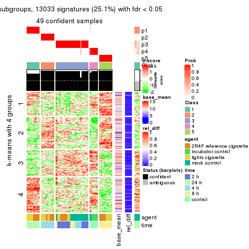
get_signatures(res, k = 6)
Signature heatmaps where rows are not scaled:
get_signatures(res, k = 2, scale_rows = FALSE)
get_signatures(res, k = 3, scale_rows = FALSE)
get_signatures(res, k = 4, scale_rows = FALSE)
get_signatures(res, k = 5, scale_rows = FALSE)
get_signatures(res, k = 6, scale_rows = FALSE)
Compare the overlap of signatures from different k:
compare_signatures(res)
get_signature() returns a data frame invisibly. TO get the list of signatures, the function
call should be assigned to a variable explicitly. In following code, if plot argument is set
to FALSE, no heatmap is plotted while only the differential analysis is performed.
# code only for demonstration
tb = get_signature(res, k = ..., plot = FALSE)
An example of the output of tb is:
#> which_row fdr mean_1 mean_2 scaled_mean_1 scaled_mean_2 km
#> 1 38 0.042760348 8.373488 9.131774 -0.5533452 0.5164555 1
#> 2 40 0.018707592 7.106213 8.469186 -0.6173731 0.5762149 1
#> 3 55 0.019134737 10.221463 11.207825 -0.6159697 0.5749050 1
#> 4 59 0.006059896 5.921854 7.869574 -0.6899429 0.6439467 1
#> 5 60 0.018055526 8.928898 10.211722 -0.6204761 0.5791110 1
#> 6 98 0.009384629 15.714769 14.887706 0.6635654 -0.6193277 2
...
The columns in tb are:
which_row: row indices corresponding to the input matrix.fdr: FDR for the differential test. mean_x: The mean value in group x.scaled_mean_x: The mean value in group x after rows are scaled.km: Row groups if k-means clustering is applied to rows.UMAP plot which shows how samples are separated.
dimension_reduction(res, k = 2, method = "UMAP")
dimension_reduction(res, k = 3, method = "UMAP")
dimension_reduction(res, k = 4, method = "UMAP")
dimension_reduction(res, k = 5, method = "UMAP")
dimension_reduction(res, k = 6, method = "UMAP")
Following heatmap shows how subgroups are split when increasing k:
collect_classes(res)
Test correlation between subgroups and known annotations. If the known annotation is numeric, one-way ANOVA test is applied, and if the known annotation is discrete, chi-squared contingency table test is applied.
test_to_known_factors(res)
#> n agent(p) time(p) k
#> ATC:pam 51 5.96e-02 2.63e-05 2
#> ATC:pam 50 2.31e-02 1.10e-12 3
#> ATC:pam 36 6.12e-03 4.22e-10 4
#> ATC:pam 49 2.52e-08 4.15e-21 5
#> ATC:pam 45 2.61e-09 4.60e-21 6
If matrix rows can be associated to genes, consider to use GO_Enrichment(res,
...) to perform function enrichment for the signature genes.
The object with results only for a single top-value method and a single partition method can be extracted as:
res = res_list["ATC", "mclust"]
# you can also extract it by
# res = res_list["ATC:mclust"]
A summary of res and all the functions that can be applied to it:
res
#> A 'ConsensusPartition' object with k = 2, 3, 4, 5, 6.
#> On a matrix with 51941 rows and 52 columns.
#> Top rows (1000, 2000, 3000, 4000, 5000) are extracted by 'ATC' method.
#> Subgroups are detected by 'mclust' method.
#> Performed in total 1250 partitions by row resampling.
#> Best k for subgroups seems to be 4.
#>
#> Following methods can be applied to this 'ConsensusPartition' object:
#> [1] "cola_report" "collect_classes" "collect_plots"
#> [4] "collect_stats" "colnames" "compare_signatures"
#> [7] "consensus_heatmap" "dimension_reduction" "functional_enrichment"
#> [10] "get_anno_col" "get_anno" "get_classes"
#> [13] "get_consensus" "get_matrix" "get_membership"
#> [16] "get_param" "get_signatures" "get_stats"
#> [19] "is_best_k" "is_stable_k" "membership_heatmap"
#> [22] "ncol" "nrow" "plot_ecdf"
#> [25] "rownames" "select_partition_number" "show"
#> [28] "suggest_best_k" "test_to_known_factors"
collect_plots() function collects all the plots made from res for all k (number of partitions)
into one single page to provide an easy and fast comparison between different k.
collect_plots(res)
The plots are:
k and the heatmap of
predicted classes for each k.k.k.k.All the plots in panels can be made by individual functions and they are plotted later in this section.
select_partition_number() produces several plots showing different
statistics for choosing “optimized” k. There are following statistics:
k;k, the area increased is defined as \(A_k - A_{k-1}\).The detailed explanations of these statistics can be found in the cola vignette.
Generally speaking, lower PAC score, higher mean silhouette score or higher
concordance corresponds to better partition. Rand index and Jaccard index
measure how similar the current partition is compared to partition with k-1.
If they are too similar, we won't accept k is better than k-1.
select_partition_number(res)
The numeric values for all these statistics can be obtained by get_stats().
get_stats(res)
#> k 1-PAC mean_silhouette concordance area_increased Rand Jaccard
#> 2 2 0.439 0.811 0.862 0.4473 0.566 0.566
#> 3 3 0.928 0.970 0.977 0.3390 0.590 0.402
#> 4 4 0.983 0.953 0.969 0.2392 0.855 0.635
#> 5 5 0.888 0.800 0.826 0.0680 0.879 0.581
#> 6 6 0.851 0.873 0.865 0.0407 0.946 0.748
suggest_best_k() suggests the best \(k\) based on these statistics. The rules are as follows:
NA.suggest_best_k(res)
#> [1] 4
#> attr(,"optional")
#> [1] 3
There is also optional best \(k\) = 3 that is worth to check.
Following shows the table of the partitions (You need to click the show/hide
code output link to see it). The membership matrix (columns with name p*)
is inferred by
clue::cl_consensus()
function with the SE method. Basically the value in the membership matrix
represents the probability to belong to a certain group. The finall class
label for an item is determined with the group with highest probability it
belongs to.
In get_classes() function, the entropy is calculated from the membership
matrix and the silhouette score is calculated from the consensus matrix.
cbind(get_classes(res, k = 2), get_membership(res, k = 2))
#> class entropy silhouette p1 p2
#> GSM270543 2 0.7219 0.794 0.200 0.800
#> GSM270544 2 0.7219 0.794 0.200 0.800
#> GSM270545 2 0.8713 0.726 0.292 0.708
#> GSM270546 2 0.9170 0.686 0.332 0.668
#> GSM270547 2 0.9833 0.575 0.424 0.576
#> GSM270548 2 0.9833 0.575 0.424 0.576
#> GSM270549 2 0.9833 0.575 0.424 0.576
#> GSM270550 2 0.9833 0.575 0.424 0.576
#> GSM270551 2 0.9833 0.578 0.424 0.576
#> GSM270552 2 0.9833 0.575 0.424 0.576
#> GSM270553 2 0.9833 0.575 0.424 0.576
#> GSM270554 2 0.9833 0.575 0.424 0.576
#> GSM270555 1 0.1843 0.961 0.972 0.028
#> GSM270556 1 0.1843 0.961 0.972 0.028
#> GSM270557 1 0.1843 0.961 0.972 0.028
#> GSM270558 1 0.1843 0.961 0.972 0.028
#> GSM270559 2 0.7376 0.791 0.208 0.792
#> GSM270560 2 0.7453 0.788 0.212 0.788
#> GSM270561 2 0.7219 0.794 0.200 0.800
#> GSM270562 2 0.7453 0.790 0.212 0.788
#> GSM270563 2 0.0000 0.805 0.000 1.000
#> GSM270564 2 0.0000 0.805 0.000 1.000
#> GSM270565 2 0.0000 0.805 0.000 1.000
#> GSM270566 2 0.0000 0.805 0.000 1.000
#> GSM270567 2 0.0000 0.805 0.000 1.000
#> GSM270568 2 0.0000 0.805 0.000 1.000
#> GSM270569 2 0.0000 0.805 0.000 1.000
#> GSM270570 2 0.0000 0.805 0.000 1.000
#> GSM270571 1 0.0938 0.966 0.988 0.012
#> GSM270572 1 0.0938 0.966 0.988 0.012
#> GSM270573 1 0.0938 0.966 0.988 0.012
#> GSM270574 1 0.0938 0.966 0.988 0.012
#> GSM270575 2 0.7299 0.793 0.204 0.796
#> GSM270576 2 0.7299 0.793 0.204 0.796
#> GSM270577 2 0.7219 0.794 0.200 0.800
#> GSM270578 2 0.7219 0.794 0.200 0.800
#> GSM270579 2 0.0000 0.805 0.000 1.000
#> GSM270580 2 0.0000 0.805 0.000 1.000
#> GSM270581 2 0.0000 0.805 0.000 1.000
#> GSM270582 2 0.0000 0.805 0.000 1.000
#> GSM270583 2 0.0000 0.805 0.000 1.000
#> GSM270584 2 0.0000 0.805 0.000 1.000
#> GSM270585 2 0.0000 0.805 0.000 1.000
#> GSM270586 2 0.0000 0.805 0.000 1.000
#> GSM270587 1 0.0938 0.966 0.988 0.012
#> GSM270588 1 0.0938 0.966 0.988 0.012
#> GSM270589 1 0.0938 0.966 0.988 0.012
#> GSM270590 1 0.0938 0.966 0.988 0.012
#> GSM270591 1 0.3431 0.941 0.936 0.064
#> GSM270592 1 0.3431 0.941 0.936 0.064
#> GSM270593 1 0.3431 0.941 0.936 0.064
#> GSM270594 1 0.3431 0.941 0.936 0.064
cbind(get_classes(res, k = 3), get_membership(res, k = 3))
#> class entropy silhouette p1 p2 p3
#> GSM270543 3 0.2165 0.958 0.000 0.064 0.936
#> GSM270544 3 0.2165 0.958 0.000 0.064 0.936
#> GSM270545 3 0.2066 0.960 0.000 0.060 0.940
#> GSM270546 3 0.2066 0.960 0.000 0.060 0.940
#> GSM270547 3 0.0000 0.966 0.000 0.000 1.000
#> GSM270548 3 0.0000 0.966 0.000 0.000 1.000
#> GSM270549 3 0.0000 0.966 0.000 0.000 1.000
#> GSM270550 3 0.0000 0.966 0.000 0.000 1.000
#> GSM270551 3 0.0237 0.965 0.000 0.004 0.996
#> GSM270552 3 0.0000 0.966 0.000 0.000 1.000
#> GSM270553 3 0.0000 0.966 0.000 0.000 1.000
#> GSM270554 3 0.0000 0.966 0.000 0.000 1.000
#> GSM270555 3 0.1163 0.960 0.028 0.000 0.972
#> GSM270556 3 0.1163 0.960 0.028 0.000 0.972
#> GSM270557 3 0.1163 0.960 0.028 0.000 0.972
#> GSM270558 3 0.1163 0.960 0.028 0.000 0.972
#> GSM270559 3 0.2066 0.960 0.000 0.060 0.940
#> GSM270560 3 0.2066 0.960 0.000 0.060 0.940
#> GSM270561 3 0.2165 0.958 0.000 0.064 0.936
#> GSM270562 3 0.2066 0.960 0.000 0.060 0.940
#> GSM270563 2 0.1643 0.968 0.000 0.956 0.044
#> GSM270564 2 0.1643 0.968 0.000 0.956 0.044
#> GSM270565 2 0.1643 0.968 0.000 0.956 0.044
#> GSM270566 2 0.1643 0.968 0.000 0.956 0.044
#> GSM270567 2 0.0000 0.968 0.000 1.000 0.000
#> GSM270568 2 0.0000 0.968 0.000 1.000 0.000
#> GSM270569 2 0.0000 0.968 0.000 1.000 0.000
#> GSM270570 2 0.0000 0.968 0.000 1.000 0.000
#> GSM270571 1 0.0000 1.000 1.000 0.000 0.000
#> GSM270572 1 0.0000 1.000 1.000 0.000 0.000
#> GSM270573 1 0.0000 1.000 1.000 0.000 0.000
#> GSM270574 1 0.0000 1.000 1.000 0.000 0.000
#> GSM270575 3 0.2165 0.958 0.000 0.064 0.936
#> GSM270576 3 0.2165 0.958 0.000 0.064 0.936
#> GSM270577 3 0.2165 0.958 0.000 0.064 0.936
#> GSM270578 3 0.2165 0.958 0.000 0.064 0.936
#> GSM270579 2 0.1643 0.968 0.000 0.956 0.044
#> GSM270580 2 0.1643 0.968 0.000 0.956 0.044
#> GSM270581 2 0.1643 0.968 0.000 0.956 0.044
#> GSM270582 2 0.1643 0.968 0.000 0.956 0.044
#> GSM270583 2 0.0000 0.968 0.000 1.000 0.000
#> GSM270584 2 0.0000 0.968 0.000 1.000 0.000
#> GSM270585 2 0.0000 0.968 0.000 1.000 0.000
#> GSM270586 2 0.0000 0.968 0.000 1.000 0.000
#> GSM270587 1 0.0000 1.000 1.000 0.000 0.000
#> GSM270588 1 0.0000 1.000 1.000 0.000 0.000
#> GSM270589 1 0.0000 1.000 1.000 0.000 0.000
#> GSM270590 1 0.0000 1.000 1.000 0.000 0.000
#> GSM270591 3 0.0000 0.966 0.000 0.000 1.000
#> GSM270592 3 0.0000 0.966 0.000 0.000 1.000
#> GSM270593 3 0.0000 0.966 0.000 0.000 1.000
#> GSM270594 3 0.0000 0.966 0.000 0.000 1.000
cbind(get_classes(res, k = 4), get_membership(res, k = 4))
#> class entropy silhouette p1 p2 p3 p4
#> GSM270543 3 0.2660 0.948 0 0.056 0.908 0.036
#> GSM270544 3 0.2466 0.950 0 0.056 0.916 0.028
#> GSM270545 3 0.3239 0.931 0 0.068 0.880 0.052
#> GSM270546 3 0.3239 0.931 0 0.068 0.880 0.052
#> GSM270547 4 0.0592 0.938 0 0.000 0.016 0.984
#> GSM270548 4 0.0592 0.938 0 0.000 0.016 0.984
#> GSM270549 4 0.0592 0.938 0 0.000 0.016 0.984
#> GSM270550 4 0.0592 0.938 0 0.000 0.016 0.984
#> GSM270551 4 0.7110 0.158 0 0.412 0.128 0.460
#> GSM270552 4 0.0921 0.932 0 0.000 0.028 0.972
#> GSM270553 4 0.0921 0.932 0 0.000 0.028 0.972
#> GSM270554 4 0.0921 0.932 0 0.000 0.028 0.972
#> GSM270555 3 0.0921 0.935 0 0.000 0.972 0.028
#> GSM270556 3 0.0921 0.935 0 0.000 0.972 0.028
#> GSM270557 3 0.0921 0.935 0 0.000 0.972 0.028
#> GSM270558 3 0.0921 0.935 0 0.000 0.972 0.028
#> GSM270559 3 0.1256 0.955 0 0.008 0.964 0.028
#> GSM270560 3 0.1256 0.955 0 0.008 0.964 0.028
#> GSM270561 3 0.2300 0.953 0 0.048 0.924 0.028
#> GSM270562 3 0.1256 0.955 0 0.008 0.964 0.028
#> GSM270563 2 0.0000 1.000 0 1.000 0.000 0.000
#> GSM270564 2 0.0000 1.000 0 1.000 0.000 0.000
#> GSM270565 2 0.0000 1.000 0 1.000 0.000 0.000
#> GSM270566 2 0.0000 1.000 0 1.000 0.000 0.000
#> GSM270567 2 0.0000 1.000 0 1.000 0.000 0.000
#> GSM270568 2 0.0000 1.000 0 1.000 0.000 0.000
#> GSM270569 2 0.0000 1.000 0 1.000 0.000 0.000
#> GSM270570 2 0.0000 1.000 0 1.000 0.000 0.000
#> GSM270571 1 0.0000 1.000 1 0.000 0.000 0.000
#> GSM270572 1 0.0000 1.000 1 0.000 0.000 0.000
#> GSM270573 1 0.0000 1.000 1 0.000 0.000 0.000
#> GSM270574 1 0.0000 1.000 1 0.000 0.000 0.000
#> GSM270575 3 0.1510 0.956 0 0.016 0.956 0.028
#> GSM270576 3 0.0921 0.951 0 0.000 0.972 0.028
#> GSM270577 3 0.2300 0.953 0 0.048 0.924 0.028
#> GSM270578 3 0.2300 0.953 0 0.048 0.924 0.028
#> GSM270579 2 0.0000 1.000 0 1.000 0.000 0.000
#> GSM270580 2 0.0000 1.000 0 1.000 0.000 0.000
#> GSM270581 2 0.0000 1.000 0 1.000 0.000 0.000
#> GSM270582 2 0.0000 1.000 0 1.000 0.000 0.000
#> GSM270583 2 0.0000 1.000 0 1.000 0.000 0.000
#> GSM270584 2 0.0000 1.000 0 1.000 0.000 0.000
#> GSM270585 2 0.0000 1.000 0 1.000 0.000 0.000
#> GSM270586 2 0.0000 1.000 0 1.000 0.000 0.000
#> GSM270587 1 0.0000 1.000 1 0.000 0.000 0.000
#> GSM270588 1 0.0000 1.000 1 0.000 0.000 0.000
#> GSM270589 1 0.0000 1.000 1 0.000 0.000 0.000
#> GSM270590 1 0.0000 1.000 1 0.000 0.000 0.000
#> GSM270591 4 0.0000 0.933 0 0.000 0.000 1.000
#> GSM270592 4 0.0000 0.933 0 0.000 0.000 1.000
#> GSM270593 4 0.0000 0.933 0 0.000 0.000 1.000
#> GSM270594 4 0.0000 0.933 0 0.000 0.000 1.000
cbind(get_classes(res, k = 5), get_membership(res, k = 5))
#> class entropy silhouette p1 p2 p3 p4 p5
#> GSM270543 3 0.1278 0.949 0.004 0.016 0.960 0.000 0.020
#> GSM270544 3 0.0771 0.956 0.000 0.004 0.976 0.000 0.020
#> GSM270545 3 0.2150 0.926 0.004 0.016 0.928 0.032 0.020
#> GSM270546 3 0.2150 0.926 0.004 0.016 0.928 0.032 0.020
#> GSM270547 4 0.4824 0.706 0.468 0.000 0.020 0.512 0.000
#> GSM270548 4 0.4824 0.706 0.468 0.000 0.020 0.512 0.000
#> GSM270549 4 0.4824 0.706 0.468 0.000 0.020 0.512 0.000
#> GSM270550 4 0.4824 0.706 0.468 0.000 0.020 0.512 0.000
#> GSM270551 4 0.5007 0.349 0.024 0.096 0.136 0.744 0.000
#> GSM270552 4 0.5295 0.698 0.464 0.000 0.048 0.488 0.000
#> GSM270553 4 0.5295 0.698 0.464 0.000 0.048 0.488 0.000
#> GSM270554 4 0.5295 0.698 0.464 0.000 0.048 0.488 0.000
#> GSM270555 4 0.4305 -0.383 0.000 0.000 0.488 0.512 0.000
#> GSM270556 4 0.4305 -0.383 0.000 0.000 0.488 0.512 0.000
#> GSM270557 4 0.4305 -0.383 0.000 0.000 0.488 0.512 0.000
#> GSM270558 4 0.4305 -0.383 0.000 0.000 0.488 0.512 0.000
#> GSM270559 3 0.0000 0.960 0.000 0.000 1.000 0.000 0.000
#> GSM270560 3 0.0771 0.958 0.000 0.000 0.976 0.004 0.020
#> GSM270561 3 0.0000 0.960 0.000 0.000 1.000 0.000 0.000
#> GSM270562 3 0.0510 0.956 0.000 0.000 0.984 0.016 0.000
#> GSM270563 2 0.0000 0.975 0.000 1.000 0.000 0.000 0.000
#> GSM270564 2 0.0000 0.975 0.000 1.000 0.000 0.000 0.000
#> GSM270565 2 0.0000 0.975 0.000 1.000 0.000 0.000 0.000
#> GSM270566 2 0.0000 0.975 0.000 1.000 0.000 0.000 0.000
#> GSM270567 5 0.4307 1.000 0.000 0.496 0.000 0.000 0.504
#> GSM270568 5 0.4307 1.000 0.000 0.496 0.000 0.000 0.504
#> GSM270569 5 0.4307 1.000 0.000 0.496 0.000 0.000 0.504
#> GSM270570 5 0.4307 1.000 0.000 0.496 0.000 0.000 0.504
#> GSM270571 1 0.4300 1.000 0.524 0.000 0.000 0.000 0.476
#> GSM270572 1 0.4300 1.000 0.524 0.000 0.000 0.000 0.476
#> GSM270573 1 0.4300 1.000 0.524 0.000 0.000 0.000 0.476
#> GSM270574 1 0.4300 1.000 0.524 0.000 0.000 0.000 0.476
#> GSM270575 3 0.1851 0.907 0.000 0.000 0.912 0.088 0.000
#> GSM270576 3 0.1851 0.907 0.000 0.000 0.912 0.088 0.000
#> GSM270577 3 0.0162 0.960 0.000 0.000 0.996 0.004 0.000
#> GSM270578 3 0.0000 0.960 0.000 0.000 1.000 0.000 0.000
#> GSM270579 2 0.0963 0.958 0.000 0.964 0.000 0.000 0.036
#> GSM270580 2 0.0000 0.975 0.000 1.000 0.000 0.000 0.000
#> GSM270581 2 0.0963 0.958 0.000 0.964 0.000 0.000 0.036
#> GSM270582 2 0.1124 0.954 0.004 0.960 0.000 0.000 0.036
#> GSM270583 5 0.4307 1.000 0.000 0.496 0.000 0.000 0.504
#> GSM270584 5 0.4307 1.000 0.000 0.496 0.000 0.000 0.504
#> GSM270585 5 0.4307 1.000 0.000 0.496 0.000 0.000 0.504
#> GSM270586 5 0.4307 1.000 0.000 0.496 0.000 0.000 0.504
#> GSM270587 1 0.4300 1.000 0.524 0.000 0.000 0.000 0.476
#> GSM270588 1 0.4300 1.000 0.524 0.000 0.000 0.000 0.476
#> GSM270589 1 0.4300 1.000 0.524 0.000 0.000 0.000 0.476
#> GSM270590 1 0.4300 1.000 0.524 0.000 0.000 0.000 0.476
#> GSM270591 4 0.4446 0.702 0.476 0.000 0.004 0.520 0.000
#> GSM270592 4 0.4446 0.702 0.476 0.000 0.004 0.520 0.000
#> GSM270593 4 0.4446 0.702 0.476 0.000 0.004 0.520 0.000
#> GSM270594 4 0.4446 0.702 0.476 0.000 0.004 0.520 0.000
cbind(get_classes(res, k = 6), get_membership(res, k = 6))
#> class entropy silhouette p1 p2 p3 p4 p5 p6
#> GSM270543 3 0.0653 0.869 0 0.012 0.980 0.004 0.000 0.004
#> GSM270544 3 0.0291 0.872 0 0.004 0.992 0.000 0.000 0.004
#> GSM270545 3 0.4713 0.463 0 0.072 0.652 0.272 0.000 0.004
#> GSM270546 3 0.4713 0.463 0 0.072 0.652 0.272 0.000 0.004
#> GSM270547 4 0.3819 0.724 0 0.064 0.172 0.764 0.000 0.000
#> GSM270548 4 0.3645 0.741 0 0.064 0.152 0.784 0.000 0.000
#> GSM270549 4 0.3570 0.746 0 0.064 0.144 0.792 0.000 0.000
#> GSM270550 4 0.3570 0.746 0 0.064 0.144 0.792 0.000 0.000
#> GSM270551 3 0.3402 0.730 0 0.004 0.820 0.104 0.000 0.072
#> GSM270552 4 0.2912 0.683 0 0.000 0.216 0.784 0.000 0.000
#> GSM270553 4 0.2730 0.707 0 0.000 0.192 0.808 0.000 0.000
#> GSM270554 4 0.3244 0.607 0 0.000 0.268 0.732 0.000 0.000
#> GSM270555 6 0.2912 1.000 0 0.000 0.216 0.000 0.000 0.784
#> GSM270556 6 0.2912 1.000 0 0.000 0.216 0.000 0.000 0.784
#> GSM270557 6 0.2912 1.000 0 0.000 0.216 0.000 0.000 0.784
#> GSM270558 6 0.2912 1.000 0 0.000 0.216 0.000 0.000 0.784
#> GSM270559 3 0.0260 0.870 0 0.000 0.992 0.000 0.000 0.008
#> GSM270560 3 0.0146 0.871 0 0.000 0.996 0.000 0.000 0.004
#> GSM270561 3 0.0146 0.872 0 0.004 0.996 0.000 0.000 0.000
#> GSM270562 3 0.1814 0.792 0 0.000 0.900 0.000 0.000 0.100
#> GSM270563 2 0.1610 0.988 0 0.916 0.000 0.000 0.084 0.000
#> GSM270564 2 0.1556 0.988 0 0.920 0.000 0.000 0.080 0.000
#> GSM270565 2 0.1556 0.988 0 0.920 0.000 0.000 0.080 0.000
#> GSM270566 2 0.1663 0.984 0 0.912 0.000 0.000 0.088 0.000
#> GSM270567 5 0.2416 0.806 0 0.156 0.000 0.000 0.844 0.000
#> GSM270568 5 0.0000 0.973 0 0.000 0.000 0.000 1.000 0.000
#> GSM270569 5 0.0146 0.971 0 0.004 0.000 0.000 0.996 0.000
#> GSM270570 5 0.0000 0.973 0 0.000 0.000 0.000 1.000 0.000
#> GSM270571 1 0.0000 1.000 1 0.000 0.000 0.000 0.000 0.000
#> GSM270572 1 0.0000 1.000 1 0.000 0.000 0.000 0.000 0.000
#> GSM270573 1 0.0000 1.000 1 0.000 0.000 0.000 0.000 0.000
#> GSM270574 1 0.0000 1.000 1 0.000 0.000 0.000 0.000 0.000
#> GSM270575 3 0.0790 0.854 0 0.000 0.968 0.000 0.000 0.032
#> GSM270576 3 0.0146 0.872 0 0.004 0.996 0.000 0.000 0.000
#> GSM270577 3 0.1757 0.815 0 0.008 0.916 0.000 0.000 0.076
#> GSM270578 3 0.0146 0.872 0 0.004 0.996 0.000 0.000 0.000
#> GSM270579 2 0.1644 0.984 0 0.920 0.004 0.000 0.076 0.000
#> GSM270580 2 0.1556 0.988 0 0.920 0.000 0.000 0.080 0.000
#> GSM270581 2 0.1644 0.984 0 0.920 0.004 0.000 0.076 0.000
#> GSM270582 2 0.1644 0.984 0 0.920 0.004 0.000 0.076 0.000
#> GSM270583 5 0.0000 0.973 0 0.000 0.000 0.000 1.000 0.000
#> GSM270584 5 0.0260 0.969 0 0.008 0.000 0.000 0.992 0.000
#> GSM270585 5 0.0000 0.973 0 0.000 0.000 0.000 1.000 0.000
#> GSM270586 5 0.0260 0.969 0 0.008 0.000 0.000 0.992 0.000
#> GSM270587 1 0.0000 1.000 1 0.000 0.000 0.000 0.000 0.000
#> GSM270588 1 0.0000 1.000 1 0.000 0.000 0.000 0.000 0.000
#> GSM270589 1 0.0000 1.000 1 0.000 0.000 0.000 0.000 0.000
#> GSM270590 1 0.0000 1.000 1 0.000 0.000 0.000 0.000 0.000
#> GSM270591 4 0.3161 0.681 0 0.008 0.000 0.776 0.000 0.216
#> GSM270592 4 0.3161 0.681 0 0.008 0.000 0.776 0.000 0.216
#> GSM270593 4 0.3161 0.681 0 0.008 0.000 0.776 0.000 0.216
#> GSM270594 4 0.3161 0.681 0 0.008 0.000 0.776 0.000 0.216
Heatmaps for the consensus matrix. It visualizes the probability of two samples to be in a same group.
consensus_heatmap(res, k = 2)
consensus_heatmap(res, k = 3)
consensus_heatmap(res, k = 4)
consensus_heatmap(res, k = 5)
consensus_heatmap(res, k = 6)
Heatmaps for the membership of samples in all partitions to see how consistent they are:
membership_heatmap(res, k = 2)
membership_heatmap(res, k = 3)
membership_heatmap(res, k = 4)
membership_heatmap(res, k = 5)
membership_heatmap(res, k = 6)
As soon as we have had the classes for columns, we can look for signatures which are significantly different between classes which can be candidate marks for certain classes. Following are the heatmaps for signatures.
Signature heatmaps where rows are scaled:
get_signatures(res, k = 2)
get_signatures(res, k = 3)
get_signatures(res, k = 4)
get_signatures(res, k = 5)
get_signatures(res, k = 6)
Signature heatmaps where rows are not scaled:
get_signatures(res, k = 2, scale_rows = FALSE)
get_signatures(res, k = 3, scale_rows = FALSE)
get_signatures(res, k = 4, scale_rows = FALSE)
get_signatures(res, k = 5, scale_rows = FALSE)
get_signatures(res, k = 6, scale_rows = FALSE)
Compare the overlap of signatures from different k:
compare_signatures(res)
get_signature() returns a data frame invisibly. TO get the list of signatures, the function
call should be assigned to a variable explicitly. In following code, if plot argument is set
to FALSE, no heatmap is plotted while only the differential analysis is performed.
# code only for demonstration
tb = get_signature(res, k = ..., plot = FALSE)
An example of the output of tb is:
#> which_row fdr mean_1 mean_2 scaled_mean_1 scaled_mean_2 km
#> 1 38 0.042760348 8.373488 9.131774 -0.5533452 0.5164555 1
#> 2 40 0.018707592 7.106213 8.469186 -0.6173731 0.5762149 1
#> 3 55 0.019134737 10.221463 11.207825 -0.6159697 0.5749050 1
#> 4 59 0.006059896 5.921854 7.869574 -0.6899429 0.6439467 1
#> 5 60 0.018055526 8.928898 10.211722 -0.6204761 0.5791110 1
#> 6 98 0.009384629 15.714769 14.887706 0.6635654 -0.6193277 2
...
The columns in tb are:
which_row: row indices corresponding to the input matrix.fdr: FDR for the differential test. mean_x: The mean value in group x.scaled_mean_x: The mean value in group x after rows are scaled.km: Row groups if k-means clustering is applied to rows.UMAP plot which shows how samples are separated.
dimension_reduction(res, k = 2, method = "UMAP")
dimension_reduction(res, k = 3, method = "UMAP")

dimension_reduction(res, k = 4, method = "UMAP")
dimension_reduction(res, k = 5, method = "UMAP")
dimension_reduction(res, k = 6, method = "UMAP")
Following heatmap shows how subgroups are split when increasing k:
collect_classes(res)
Test correlation between subgroups and known annotations. If the known annotation is numeric, one-way ANOVA test is applied, and if the known annotation is discrete, chi-squared contingency table test is applied.
test_to_known_factors(res)
#> n agent(p) time(p) k
#> ATC:mclust 52 2.08e-02 1.38e-10 2
#> ATC:mclust 52 1.00e-04 5.58e-09 3
#> ATC:mclust 51 5.18e-06 5.99e-14 4
#> ATC:mclust 47 1.59e-04 1.24e-21 5
#> ATC:mclust 50 2.65e-05 4.74e-20 6
If matrix rows can be associated to genes, consider to use GO_Enrichment(res,
...) to perform function enrichment for the signature genes.
The object with results only for a single top-value method and a single partition method can be extracted as:
res = res_list["ATC", "NMF"]
# you can also extract it by
# res = res_list["ATC:NMF"]
A summary of res and all the functions that can be applied to it:
res
#> A 'ConsensusPartition' object with k = 2, 3, 4, 5, 6.
#> On a matrix with 51941 rows and 52 columns.
#> Top rows (1000, 2000, 3000, 4000, 5000) are extracted by 'ATC' method.
#> Subgroups are detected by 'NMF' method.
#> Performed in total 1250 partitions by row resampling.
#> Best k for subgroups seems to be 6.
#>
#> Following methods can be applied to this 'ConsensusPartition' object:
#> [1] "cola_report" "collect_classes" "collect_plots"
#> [4] "collect_stats" "colnames" "compare_signatures"
#> [7] "consensus_heatmap" "dimension_reduction" "functional_enrichment"
#> [10] "get_anno_col" "get_anno" "get_classes"
#> [13] "get_consensus" "get_matrix" "get_membership"
#> [16] "get_param" "get_signatures" "get_stats"
#> [19] "is_best_k" "is_stable_k" "membership_heatmap"
#> [22] "ncol" "nrow" "plot_ecdf"
#> [25] "rownames" "select_partition_number" "show"
#> [28] "suggest_best_k" "test_to_known_factors"
collect_plots() function collects all the plots made from res for all k (number of partitions)
into one single page to provide an easy and fast comparison between different k.
collect_plots(res)
The plots are:
k and the heatmap of
predicted classes for each k.k.k.k.All the plots in panels can be made by individual functions and they are plotted later in this section.
select_partition_number() produces several plots showing different
statistics for choosing “optimized” k. There are following statistics:
k;k, the area increased is defined as \(A_k - A_{k-1}\).The detailed explanations of these statistics can be found in the cola vignette.
Generally speaking, lower PAC score, higher mean silhouette score or higher
concordance corresponds to better partition. Rand index and Jaccard index
measure how similar the current partition is compared to partition with k-1.
If they are too similar, we won't accept k is better than k-1.
select_partition_number(res)
The numeric values for all these statistics can be obtained by get_stats().
get_stats(res)
#> k 1-PAC mean_silhouette concordance area_increased Rand Jaccard
#> 2 2 1.000 1.000 1.000 0.4350 0.566 0.566
#> 3 3 0.948 0.945 0.975 0.5515 0.759 0.573
#> 4 4 0.940 0.912 0.952 0.1242 0.810 0.494
#> 5 5 0.854 0.826 0.917 0.0474 0.839 0.465
#> 6 6 0.902 0.823 0.909 0.0394 0.887 0.536
suggest_best_k() suggests the best \(k\) based on these statistics. The rules are as follows:
NA.suggest_best_k(res)
#> [1] 6
#> attr(,"optional")
#> [1] 2 3 4
There is also optional best \(k\) = 2 3 4 that is worth to check.
Following shows the table of the partitions (You need to click the show/hide
code output link to see it). The membership matrix (columns with name p*)
is inferred by
clue::cl_consensus()
function with the SE method. Basically the value in the membership matrix
represents the probability to belong to a certain group. The finall class
label for an item is determined with the group with highest probability it
belongs to.
In get_classes() function, the entropy is calculated from the membership
matrix and the silhouette score is calculated from the consensus matrix.
cbind(get_classes(res, k = 2), get_membership(res, k = 2))
#> class entropy silhouette p1 p2
#> GSM270543 1 0 1 1 0
#> GSM270544 1 0 1 1 0
#> GSM270545 1 0 1 1 0
#> GSM270546 1 0 1 1 0
#> GSM270547 1 0 1 1 0
#> GSM270548 1 0 1 1 0
#> GSM270549 1 0 1 1 0
#> GSM270550 1 0 1 1 0
#> GSM270551 1 0 1 1 0
#> GSM270552 1 0 1 1 0
#> GSM270553 1 0 1 1 0
#> GSM270554 1 0 1 1 0
#> GSM270555 1 0 1 1 0
#> GSM270556 1 0 1 1 0
#> GSM270557 1 0 1 1 0
#> GSM270558 1 0 1 1 0
#> GSM270559 1 0 1 1 0
#> GSM270560 1 0 1 1 0
#> GSM270561 1 0 1 1 0
#> GSM270562 1 0 1 1 0
#> GSM270563 2 0 1 0 1
#> GSM270564 2 0 1 0 1
#> GSM270565 2 0 1 0 1
#> GSM270566 2 0 1 0 1
#> GSM270567 2 0 1 0 1
#> GSM270568 2 0 1 0 1
#> GSM270569 2 0 1 0 1
#> GSM270570 2 0 1 0 1
#> GSM270571 1 0 1 1 0
#> GSM270572 1 0 1 1 0
#> GSM270573 1 0 1 1 0
#> GSM270574 1 0 1 1 0
#> GSM270575 1 0 1 1 0
#> GSM270576 1 0 1 1 0
#> GSM270577 1 0 1 1 0
#> GSM270578 1 0 1 1 0
#> GSM270579 2 0 1 0 1
#> GSM270580 2 0 1 0 1
#> GSM270581 2 0 1 0 1
#> GSM270582 2 0 1 0 1
#> GSM270583 2 0 1 0 1
#> GSM270584 2 0 1 0 1
#> GSM270585 2 0 1 0 1
#> GSM270586 2 0 1 0 1
#> GSM270587 1 0 1 1 0
#> GSM270588 1 0 1 1 0
#> GSM270589 1 0 1 1 0
#> GSM270590 1 0 1 1 0
#> GSM270591 1 0 1 1 0
#> GSM270592 1 0 1 1 0
#> GSM270593 1 0 1 1 0
#> GSM270594 1 0 1 1 0
cbind(get_classes(res, k = 3), get_membership(res, k = 3))
#> class entropy silhouette p1 p2 p3
#> GSM270543 3 0.6624 0.623 0.248 0.044 0.708
#> GSM270544 3 0.0000 0.975 0.000 0.000 1.000
#> GSM270545 1 0.0237 0.974 0.996 0.000 0.004
#> GSM270546 1 0.0237 0.974 0.996 0.000 0.004
#> GSM270547 1 0.2496 0.916 0.928 0.068 0.004
#> GSM270548 3 0.1964 0.924 0.056 0.000 0.944
#> GSM270549 3 0.0000 0.975 0.000 0.000 1.000
#> GSM270550 1 0.0000 0.975 1.000 0.000 0.000
#> GSM270551 3 0.0000 0.975 0.000 0.000 1.000
#> GSM270552 3 0.0000 0.975 0.000 0.000 1.000
#> GSM270553 3 0.0424 0.969 0.008 0.000 0.992
#> GSM270554 3 0.0000 0.975 0.000 0.000 1.000
#> GSM270555 1 0.3340 0.865 0.880 0.000 0.120
#> GSM270556 1 0.0237 0.974 0.996 0.000 0.004
#> GSM270557 1 0.1031 0.960 0.976 0.000 0.024
#> GSM270558 1 0.4887 0.713 0.772 0.000 0.228
#> GSM270559 3 0.0000 0.975 0.000 0.000 1.000
#> GSM270560 3 0.0000 0.975 0.000 0.000 1.000
#> GSM270561 3 0.0000 0.975 0.000 0.000 1.000
#> GSM270562 3 0.0000 0.975 0.000 0.000 1.000
#> GSM270563 2 0.5733 0.539 0.000 0.676 0.324
#> GSM270564 2 0.0000 0.967 0.000 1.000 0.000
#> GSM270565 2 0.0000 0.967 0.000 1.000 0.000
#> GSM270566 2 0.0000 0.967 0.000 1.000 0.000
#> GSM270567 2 0.0000 0.967 0.000 1.000 0.000
#> GSM270568 2 0.0000 0.967 0.000 1.000 0.000
#> GSM270569 2 0.0000 0.967 0.000 1.000 0.000
#> GSM270570 2 0.0000 0.967 0.000 1.000 0.000
#> GSM270571 1 0.0000 0.975 1.000 0.000 0.000
#> GSM270572 1 0.0000 0.975 1.000 0.000 0.000
#> GSM270573 1 0.0237 0.974 0.996 0.000 0.004
#> GSM270574 1 0.0000 0.975 1.000 0.000 0.000
#> GSM270575 3 0.0000 0.975 0.000 0.000 1.000
#> GSM270576 3 0.0000 0.975 0.000 0.000 1.000
#> GSM270577 3 0.0000 0.975 0.000 0.000 1.000
#> GSM270578 3 0.0000 0.975 0.000 0.000 1.000
#> GSM270579 2 0.0000 0.967 0.000 1.000 0.000
#> GSM270580 2 0.4002 0.807 0.000 0.840 0.160
#> GSM270581 2 0.0000 0.967 0.000 1.000 0.000
#> GSM270582 2 0.0000 0.967 0.000 1.000 0.000
#> GSM270583 2 0.0000 0.967 0.000 1.000 0.000
#> GSM270584 2 0.0000 0.967 0.000 1.000 0.000
#> GSM270585 2 0.0000 0.967 0.000 1.000 0.000
#> GSM270586 2 0.0000 0.967 0.000 1.000 0.000
#> GSM270587 1 0.0000 0.975 1.000 0.000 0.000
#> GSM270588 1 0.0000 0.975 1.000 0.000 0.000
#> GSM270589 1 0.0000 0.975 1.000 0.000 0.000
#> GSM270590 1 0.0000 0.975 1.000 0.000 0.000
#> GSM270591 1 0.0000 0.975 1.000 0.000 0.000
#> GSM270592 1 0.0000 0.975 1.000 0.000 0.000
#> GSM270593 1 0.0000 0.975 1.000 0.000 0.000
#> GSM270594 1 0.0000 0.975 1.000 0.000 0.000
cbind(get_classes(res, k = 4), get_membership(res, k = 4))
#> class entropy silhouette p1 p2 p3 p4
#> GSM270543 4 0.2730 0.915 0.016 0.000 0.088 0.896
#> GSM270544 3 0.0817 0.899 0.000 0.000 0.976 0.024
#> GSM270545 4 0.1661 0.946 0.052 0.004 0.000 0.944
#> GSM270546 4 0.1661 0.946 0.052 0.004 0.000 0.944
#> GSM270547 4 0.0524 0.945 0.008 0.004 0.000 0.988
#> GSM270548 4 0.0336 0.943 0.000 0.000 0.008 0.992
#> GSM270549 4 0.1022 0.937 0.000 0.000 0.032 0.968
#> GSM270550 4 0.0707 0.947 0.020 0.000 0.000 0.980
#> GSM270551 3 0.1389 0.881 0.000 0.000 0.952 0.048
#> GSM270552 4 0.1557 0.923 0.000 0.000 0.056 0.944
#> GSM270553 4 0.0921 0.938 0.000 0.000 0.028 0.972
#> GSM270554 4 0.3444 0.782 0.000 0.000 0.184 0.816
#> GSM270555 1 0.3399 0.875 0.868 0.000 0.092 0.040
#> GSM270556 1 0.2408 0.883 0.896 0.000 0.000 0.104
#> GSM270557 1 0.1970 0.919 0.932 0.000 0.008 0.060
#> GSM270558 1 0.4798 0.763 0.768 0.000 0.180 0.052
#> GSM270559 3 0.0188 0.908 0.000 0.000 0.996 0.004
#> GSM270560 3 0.0000 0.908 0.000 0.000 1.000 0.000
#> GSM270561 3 0.0000 0.908 0.000 0.000 1.000 0.000
#> GSM270562 3 0.0469 0.907 0.000 0.000 0.988 0.012
#> GSM270563 3 0.4605 0.489 0.000 0.336 0.664 0.000
#> GSM270564 2 0.1557 0.958 0.000 0.944 0.056 0.000
#> GSM270565 2 0.1389 0.965 0.000 0.952 0.048 0.000
#> GSM270566 2 0.1302 0.968 0.000 0.956 0.044 0.000
#> GSM270567 2 0.0000 0.978 0.000 1.000 0.000 0.000
#> GSM270568 2 0.0000 0.978 0.000 1.000 0.000 0.000
#> GSM270569 2 0.0000 0.978 0.000 1.000 0.000 0.000
#> GSM270570 2 0.0000 0.978 0.000 1.000 0.000 0.000
#> GSM270571 1 0.0000 0.954 1.000 0.000 0.000 0.000
#> GSM270572 1 0.0000 0.954 1.000 0.000 0.000 0.000
#> GSM270573 1 0.0000 0.954 1.000 0.000 0.000 0.000
#> GSM270574 1 0.0000 0.954 1.000 0.000 0.000 0.000
#> GSM270575 3 0.0707 0.903 0.000 0.000 0.980 0.020
#> GSM270576 3 0.0592 0.905 0.000 0.000 0.984 0.016
#> GSM270577 3 0.0000 0.908 0.000 0.000 1.000 0.000
#> GSM270578 3 0.0000 0.908 0.000 0.000 1.000 0.000
#> GSM270579 2 0.1211 0.970 0.000 0.960 0.040 0.000
#> GSM270580 3 0.4955 0.214 0.000 0.444 0.556 0.000
#> GSM270581 2 0.1118 0.971 0.000 0.964 0.036 0.000
#> GSM270582 2 0.1302 0.968 0.000 0.956 0.044 0.000
#> GSM270583 2 0.0000 0.978 0.000 1.000 0.000 0.000
#> GSM270584 2 0.0000 0.978 0.000 1.000 0.000 0.000
#> GSM270585 2 0.0000 0.978 0.000 1.000 0.000 0.000
#> GSM270586 2 0.0000 0.978 0.000 1.000 0.000 0.000
#> GSM270587 1 0.0000 0.954 1.000 0.000 0.000 0.000
#> GSM270588 1 0.0000 0.954 1.000 0.000 0.000 0.000
#> GSM270589 1 0.0000 0.954 1.000 0.000 0.000 0.000
#> GSM270590 1 0.0000 0.954 1.000 0.000 0.000 0.000
#> GSM270591 4 0.1474 0.947 0.052 0.000 0.000 0.948
#> GSM270592 4 0.1474 0.947 0.052 0.000 0.000 0.948
#> GSM270593 4 0.1474 0.947 0.052 0.000 0.000 0.948
#> GSM270594 4 0.1474 0.947 0.052 0.000 0.000 0.948
cbind(get_classes(res, k = 5), get_membership(res, k = 5))
#> class entropy silhouette p1 p2 p3 p4 p5
#> GSM270543 3 0.3455 0.715 0.000 0.000 0.784 0.208 0.008
#> GSM270544 3 0.1764 0.914 0.000 0.000 0.928 0.008 0.064
#> GSM270545 4 0.0671 0.905 0.000 0.000 0.004 0.980 0.016
#> GSM270546 4 0.0671 0.905 0.000 0.000 0.004 0.980 0.016
#> GSM270547 4 0.0955 0.897 0.000 0.028 0.000 0.968 0.004
#> GSM270548 4 0.3165 0.792 0.000 0.036 0.000 0.848 0.116
#> GSM270549 5 0.5415 0.213 0.000 0.064 0.000 0.384 0.552
#> GSM270550 4 0.0162 0.913 0.000 0.004 0.000 0.996 0.000
#> GSM270551 5 0.0807 0.700 0.000 0.000 0.012 0.012 0.976
#> GSM270552 5 0.3878 0.550 0.000 0.016 0.000 0.236 0.748
#> GSM270553 4 0.4574 0.189 0.000 0.012 0.000 0.576 0.412
#> GSM270554 5 0.2144 0.681 0.000 0.020 0.000 0.068 0.912
#> GSM270555 1 0.4782 0.156 0.544 0.000 0.008 0.008 0.440
#> GSM270556 1 0.2741 0.800 0.860 0.000 0.004 0.132 0.004
#> GSM270557 1 0.2943 0.838 0.880 0.000 0.008 0.052 0.060
#> GSM270558 5 0.4487 0.319 0.332 0.000 0.008 0.008 0.652
#> GSM270559 3 0.2127 0.899 0.000 0.000 0.892 0.000 0.108
#> GSM270560 3 0.1792 0.911 0.000 0.000 0.916 0.000 0.084
#> GSM270561 3 0.1792 0.911 0.000 0.000 0.916 0.000 0.084
#> GSM270562 3 0.2280 0.889 0.000 0.000 0.880 0.000 0.120
#> GSM270563 3 0.0771 0.924 0.000 0.020 0.976 0.000 0.004
#> GSM270564 3 0.0880 0.920 0.000 0.032 0.968 0.000 0.000
#> GSM270565 3 0.0794 0.921 0.000 0.028 0.972 0.000 0.000
#> GSM270566 3 0.0880 0.920 0.000 0.032 0.968 0.000 0.000
#> GSM270567 2 0.0162 0.960 0.000 0.996 0.004 0.000 0.000
#> GSM270568 2 0.0404 0.954 0.000 0.988 0.000 0.000 0.012
#> GSM270569 2 0.0510 0.951 0.000 0.984 0.000 0.000 0.016
#> GSM270570 2 0.0290 0.957 0.000 0.992 0.000 0.000 0.008
#> GSM270571 1 0.0000 0.921 1.000 0.000 0.000 0.000 0.000
#> GSM270572 1 0.0000 0.921 1.000 0.000 0.000 0.000 0.000
#> GSM270573 1 0.0000 0.921 1.000 0.000 0.000 0.000 0.000
#> GSM270574 1 0.0000 0.921 1.000 0.000 0.000 0.000 0.000
#> GSM270575 5 0.1478 0.693 0.000 0.000 0.064 0.000 0.936
#> GSM270576 5 0.4045 0.303 0.000 0.000 0.356 0.000 0.644
#> GSM270577 3 0.1908 0.909 0.000 0.000 0.908 0.000 0.092
#> GSM270578 3 0.1851 0.910 0.000 0.000 0.912 0.000 0.088
#> GSM270579 3 0.0865 0.922 0.000 0.024 0.972 0.000 0.004
#> GSM270580 3 0.0609 0.923 0.000 0.020 0.980 0.000 0.000
#> GSM270581 3 0.1281 0.914 0.000 0.032 0.956 0.000 0.012
#> GSM270582 3 0.0865 0.922 0.000 0.024 0.972 0.000 0.004
#> GSM270583 2 0.0963 0.960 0.000 0.964 0.036 0.000 0.000
#> GSM270584 2 0.1341 0.954 0.000 0.944 0.056 0.000 0.000
#> GSM270585 2 0.1270 0.956 0.000 0.948 0.052 0.000 0.000
#> GSM270586 2 0.1410 0.951 0.000 0.940 0.060 0.000 0.000
#> GSM270587 1 0.0000 0.921 1.000 0.000 0.000 0.000 0.000
#> GSM270588 1 0.0000 0.921 1.000 0.000 0.000 0.000 0.000
#> GSM270589 1 0.0000 0.921 1.000 0.000 0.000 0.000 0.000
#> GSM270590 1 0.0000 0.921 1.000 0.000 0.000 0.000 0.000
#> GSM270591 4 0.0162 0.915 0.004 0.000 0.000 0.996 0.000
#> GSM270592 4 0.0162 0.915 0.004 0.000 0.000 0.996 0.000
#> GSM270593 4 0.0162 0.915 0.004 0.000 0.000 0.996 0.000
#> GSM270594 4 0.0162 0.915 0.004 0.000 0.000 0.996 0.000
cbind(get_classes(res, k = 6), get_membership(res, k = 6))
#> class entropy silhouette p1 p2 p3 p4 p5 p6
#> GSM270543 4 0.2595 0.6382 0.004 0.160 0.000 0.836 0.000 0.000
#> GSM270544 4 0.4264 0.0828 0.000 0.484 0.016 0.500 0.000 0.000
#> GSM270545 4 0.2320 0.7085 0.000 0.004 0.000 0.864 0.000 0.132
#> GSM270546 4 0.2402 0.7058 0.000 0.004 0.000 0.856 0.000 0.140
#> GSM270547 4 0.1074 0.7138 0.000 0.000 0.012 0.960 0.000 0.028
#> GSM270548 4 0.1858 0.6788 0.000 0.000 0.076 0.912 0.000 0.012
#> GSM270549 4 0.3911 0.1950 0.000 0.000 0.368 0.624 0.000 0.008
#> GSM270550 4 0.1531 0.7214 0.000 0.000 0.004 0.928 0.000 0.068
#> GSM270551 3 0.0146 0.7553 0.000 0.004 0.996 0.000 0.000 0.000
#> GSM270552 3 0.3924 0.6735 0.000 0.000 0.740 0.208 0.000 0.052
#> GSM270553 3 0.5366 0.4388 0.000 0.000 0.548 0.320 0.000 0.132
#> GSM270554 3 0.1858 0.7329 0.000 0.000 0.912 0.012 0.000 0.076
#> GSM270555 6 0.4842 0.6099 0.076 0.000 0.324 0.000 0.000 0.600
#> GSM270556 6 0.3888 0.7582 0.076 0.000 0.116 0.016 0.000 0.792
#> GSM270557 6 0.4613 0.7074 0.100 0.000 0.200 0.004 0.000 0.696
#> GSM270558 6 0.4962 0.4777 0.068 0.000 0.416 0.000 0.000 0.516
#> GSM270559 2 0.0858 0.9359 0.000 0.968 0.028 0.004 0.000 0.000
#> GSM270560 2 0.0551 0.9445 0.000 0.984 0.004 0.008 0.000 0.004
#> GSM270561 2 0.0551 0.9441 0.000 0.984 0.008 0.004 0.000 0.004
#> GSM270562 2 0.1908 0.8735 0.000 0.900 0.096 0.000 0.000 0.004
#> GSM270563 2 0.0508 0.9447 0.000 0.984 0.000 0.012 0.004 0.000
#> GSM270564 2 0.0891 0.9368 0.000 0.968 0.000 0.008 0.024 0.000
#> GSM270565 2 0.0520 0.9450 0.000 0.984 0.000 0.008 0.008 0.000
#> GSM270566 2 0.0508 0.9438 0.000 0.984 0.000 0.004 0.012 0.000
#> GSM270567 5 0.0146 0.9940 0.000 0.000 0.000 0.004 0.996 0.000
#> GSM270568 5 0.0291 0.9968 0.000 0.004 0.000 0.004 0.992 0.000
#> GSM270569 5 0.0291 0.9968 0.000 0.004 0.000 0.004 0.992 0.000
#> GSM270570 5 0.0291 0.9968 0.000 0.004 0.000 0.004 0.992 0.000
#> GSM270571 1 0.0146 0.9970 0.996 0.000 0.000 0.000 0.000 0.004
#> GSM270572 1 0.0000 0.9977 1.000 0.000 0.000 0.000 0.000 0.000
#> GSM270573 1 0.0146 0.9970 0.996 0.000 0.000 0.000 0.000 0.004
#> GSM270574 1 0.0146 0.9970 0.996 0.000 0.000 0.000 0.000 0.004
#> GSM270575 3 0.1296 0.7359 0.000 0.044 0.948 0.004 0.000 0.004
#> GSM270576 2 0.3950 0.2888 0.000 0.564 0.432 0.000 0.000 0.004
#> GSM270577 2 0.0964 0.9382 0.000 0.968 0.012 0.004 0.000 0.016
#> GSM270578 2 0.0551 0.9445 0.000 0.984 0.004 0.008 0.000 0.004
#> GSM270579 2 0.0458 0.9420 0.000 0.984 0.000 0.000 0.016 0.000
#> GSM270580 2 0.0000 0.9455 0.000 1.000 0.000 0.000 0.000 0.000
#> GSM270581 2 0.0363 0.9438 0.000 0.988 0.000 0.000 0.012 0.000
#> GSM270582 2 0.0146 0.9455 0.000 0.996 0.000 0.000 0.004 0.000
#> GSM270583 5 0.0146 0.9968 0.000 0.004 0.000 0.000 0.996 0.000
#> GSM270584 5 0.0146 0.9968 0.000 0.004 0.000 0.000 0.996 0.000
#> GSM270585 5 0.0146 0.9968 0.000 0.004 0.000 0.000 0.996 0.000
#> GSM270586 5 0.0291 0.9951 0.000 0.004 0.000 0.000 0.992 0.004
#> GSM270587 1 0.0000 0.9977 1.000 0.000 0.000 0.000 0.000 0.000
#> GSM270588 1 0.0146 0.9945 0.996 0.000 0.000 0.000 0.000 0.004
#> GSM270589 1 0.0000 0.9977 1.000 0.000 0.000 0.000 0.000 0.000
#> GSM270590 1 0.0000 0.9977 1.000 0.000 0.000 0.000 0.000 0.000
#> GSM270591 6 0.0858 0.7811 0.000 0.000 0.004 0.028 0.000 0.968
#> GSM270592 6 0.0937 0.7728 0.000 0.000 0.000 0.040 0.000 0.960
#> GSM270593 6 0.0935 0.7796 0.000 0.000 0.004 0.032 0.000 0.964
#> GSM270594 6 0.1176 0.7837 0.000 0.000 0.024 0.020 0.000 0.956
Heatmaps for the consensus matrix. It visualizes the probability of two samples to be in a same group.
consensus_heatmap(res, k = 2)

consensus_heatmap(res, k = 3)
consensus_heatmap(res, k = 4)
consensus_heatmap(res, k = 5)
consensus_heatmap(res, k = 6)
Heatmaps for the membership of samples in all partitions to see how consistent they are:
membership_heatmap(res, k = 2)

membership_heatmap(res, k = 3)
membership_heatmap(res, k = 4)
membership_heatmap(res, k = 5)
membership_heatmap(res, k = 6)
As soon as we have had the classes for columns, we can look for signatures which are significantly different between classes which can be candidate marks for certain classes. Following are the heatmaps for signatures.
Signature heatmaps where rows are scaled:
get_signatures(res, k = 2)
get_signatures(res, k = 3)
get_signatures(res, k = 4)
get_signatures(res, k = 5)
get_signatures(res, k = 6)
Signature heatmaps where rows are not scaled:
get_signatures(res, k = 2, scale_rows = FALSE)
get_signatures(res, k = 3, scale_rows = FALSE)
get_signatures(res, k = 4, scale_rows = FALSE)
get_signatures(res, k = 5, scale_rows = FALSE)
get_signatures(res, k = 6, scale_rows = FALSE)
Compare the overlap of signatures from different k:
compare_signatures(res)
get_signature() returns a data frame invisibly. TO get the list of signatures, the function
call should be assigned to a variable explicitly. In following code, if plot argument is set
to FALSE, no heatmap is plotted while only the differential analysis is performed.
# code only for demonstration
tb = get_signature(res, k = ..., plot = FALSE)
An example of the output of tb is:
#> which_row fdr mean_1 mean_2 scaled_mean_1 scaled_mean_2 km
#> 1 38 0.042760348 8.373488 9.131774 -0.5533452 0.5164555 1
#> 2 40 0.018707592 7.106213 8.469186 -0.6173731 0.5762149 1
#> 3 55 0.019134737 10.221463 11.207825 -0.6159697 0.5749050 1
#> 4 59 0.006059896 5.921854 7.869574 -0.6899429 0.6439467 1
#> 5 60 0.018055526 8.928898 10.211722 -0.6204761 0.5791110 1
#> 6 98 0.009384629 15.714769 14.887706 0.6635654 -0.6193277 2
...
The columns in tb are:
which_row: row indices corresponding to the input matrix.fdr: FDR for the differential test. mean_x: The mean value in group x.scaled_mean_x: The mean value in group x after rows are scaled.km: Row groups if k-means clustering is applied to rows.UMAP plot which shows how samples are separated.
dimension_reduction(res, k = 2, method = "UMAP")

dimension_reduction(res, k = 3, method = "UMAP")
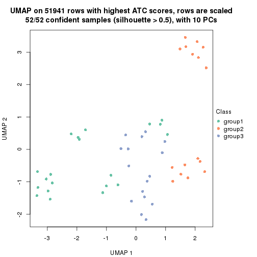
dimension_reduction(res, k = 4, method = "UMAP")
dimension_reduction(res, k = 5, method = "UMAP")
dimension_reduction(res, k = 6, method = "UMAP")
Following heatmap shows how subgroups are split when increasing k:
collect_classes(res)
Test correlation between subgroups and known annotations. If the known annotation is numeric, one-way ANOVA test is applied, and if the known annotation is discrete, chi-squared contingency table test is applied.
test_to_known_factors(res)
#> n agent(p) time(p) k
#> ATC:NMF 52 2.36e-03 2.02e-05 2
#> ATC:NMF 52 3.40e-03 9.17e-10 3
#> ATC:NMF 50 6.17e-05 2.61e-14 4
#> ATC:NMF 47 1.81e-04 2.45e-15 5
#> ATC:NMF 47 5.63e-08 2.34e-14 6
If matrix rows can be associated to genes, consider to use GO_Enrichment(res,
...) to perform function enrichment for the signature genes.
sessionInfo()
#> R version 3.6.0 (2019-04-26)
#> Platform: x86_64-pc-linux-gnu (64-bit)
#> Running under: CentOS Linux 7 (Core)
#>
#> Matrix products: default
#> BLAS: /usr/lib64/libblas.so.3.4.2
#> LAPACK: /usr/lib64/liblapack.so.3.4.2
#>
#> locale:
#> [1] LC_CTYPE=en_GB.UTF-8 LC_NUMERIC=C LC_TIME=en_GB.UTF-8
#> [4] LC_COLLATE=en_GB.UTF-8 LC_MONETARY=en_GB.UTF-8 LC_MESSAGES=en_GB.UTF-8
#> [7] LC_PAPER=en_GB.UTF-8 LC_NAME=C LC_ADDRESS=C
#> [10] LC_TELEPHONE=C LC_MEASUREMENT=en_GB.UTF-8 LC_IDENTIFICATION=C
#>
#> attached base packages:
#> [1] grid parallel stats graphics grDevices utils datasets methods base
#>
#> other attached packages:
#> [1] genefilter_1.66.0 ComplexHeatmap_2.1.1 markdown_1.1 knitr_1.26
#> [5] preprocessCore_1.46.0 cola_1.3.2 GEOquery_2.52.0 Biobase_2.44.0
#> [9] BiocGenerics_0.30.0 GetoptLong_0.1.7
#>
#> loaded via a namespace (and not attached):
#> [1] bitops_1.0-6 matrixStats_0.55.0 bit64_0.9-7 doParallel_1.0.15
#> [5] RColorBrewer_1.1-2 httr_1.4.1 tools_3.6.0 backports_1.1.5
#> [9] R6_2.4.1 DBI_1.0.0 lazyeval_0.2.2 colorspace_1.4-1
#> [13] withr_2.1.2 tidyselect_0.2.5 gridExtra_2.3 bit_1.1-14
#> [17] compiler_3.6.0 xml2_1.2.2 microbenchmark_1.4-7 pkgmaker_0.28
#> [21] slam_0.1-46 scales_1.1.0 readr_1.3.1 NMF_0.23.6
#> [25] stringr_1.4.0 digest_0.6.23 pkgconfig_2.0.3 bibtex_0.4.2
#> [29] highr_0.8 limma_3.40.6 rlang_0.4.2 GlobalOptions_0.1.1
#> [33] RSQLite_2.1.2 impute_1.58.0 shape_1.4.4 mclust_5.4.5
#> [37] dendextend_1.12.0 dplyr_0.8.3 RCurl_1.95-4.12 magrittr_1.5
#> [41] Matrix_1.2-17 Rcpp_1.0.3 munsell_0.5.0 S4Vectors_0.22.1
#> [45] viridis_0.5.1 lifecycle_0.1.0 stringi_1.4.3 plyr_1.8.4
#> [49] blob_1.2.0 crayon_1.3.4 lattice_0.20-38 splines_3.6.0
#> [53] annotate_1.62.0 circlize_0.4.9 hms_0.5.2 zeallot_0.1.0
#> [57] pillar_1.4.2 rjson_0.2.20 rngtools_1.4 reshape2_1.4.3
#> [61] codetools_0.2-16 stats4_3.6.0 XML_3.98-1.20 glue_1.3.1
#> [65] evaluate_0.14 png_0.1-7 vctrs_0.2.0 foreach_1.4.7
#> [69] polyclip_1.10-0 gtable_0.3.0 purrr_0.3.3 tidyr_1.0.0
#> [73] clue_0.3-57 assertthat_0.2.1 ggplot2_3.2.1 xfun_0.11
#> [77] gridBase_0.4-7 eulerr_6.0.0 xtable_1.8-4 skmeans_0.2-11
#> [81] survival_2.44-1.1 viridisLite_0.3.0 tibble_2.1.3 iterators_1.0.12
#> [85] AnnotationDbi_1.46.1 registry_0.5-1 memoise_1.1.0 IRanges_2.18.3
#> [89] cluster_2.1.0 brew_1.0-6